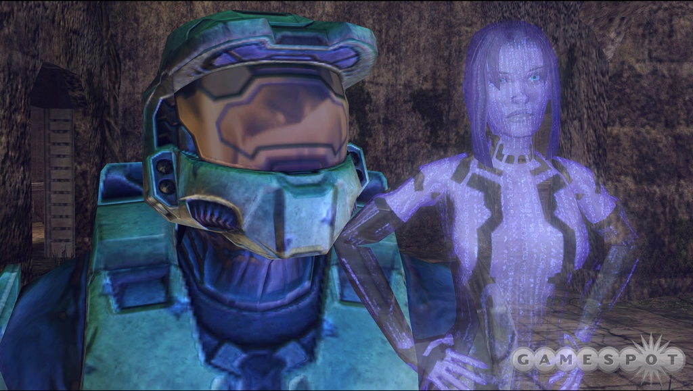
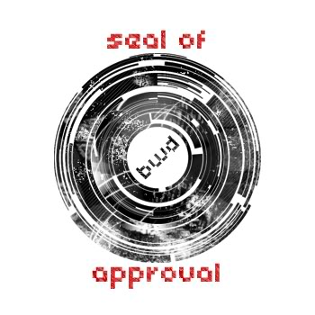
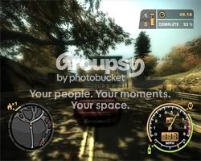
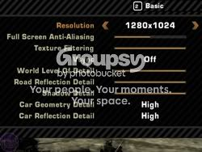

#163214 41 2006-04-09T01:48:03Z Britannia Agree - sorry but the link to either of the versions now doesn't work

.
Please try and get it going again or could some body send it to me and I will happily host it off my server - e-mail
n@britanniaenterprises.com.
Thanks
Welcome to the Dragon's Den.
ANAGOGY.#182263 239 2006-05-30T13:51:05Z Britannia Okay, here I go.
1. The blood (

) from N when he dies stays where he dropped it.
For example: say he was hit by a Zap Drone

, the blood that comes flying off him when he dies sticks to the walls and floors that it hits.
2. A 'Ninja Flavours' section with all three colour channels (Red, Green & Blue), like on
N Poser so you can make your own flavour N.
3. Your own button on the menu where
Play and
Userlevels are called something like Your Levels or Personal levels etc. where all your levels are stored connected to a .txt file like Userlevels so you can quickly go and play any of your levels without having to go though loads of other peoples

.
Well that 'em all. Please reply, or even PM me.
Thanks, BritanniaWD
#182425 111 2006-05-30T22:34:57Z Britannia Now lets get this straight. I may be young, but I am a
registered Microsoft Beta Tester 
.
Yes, you hear right. I test all the up and coming programs and systems (which will be hundreds of
/
$ when they come out
")
) for nothing and then report back and they fix the problems.
At the moment, I am very busy helping them fix
Windows Vista (Beta 2.1). So if you go and buy a new
Windows Vista computer next year, just think: I (BritanniaWD) helped it get as good and bug free as it is...
So, getting back to the desktops stuff, here is my custom style to look like Vista, when in fact I am still running XP.

The desktop image is for my business (Britannia Enterprises - BritanniaWD comes form the web design part of the company so Britannia W(Web) D(Design) yada, yada, yada...).
The Aston Martin V8 Vantage is used because Aston Martin allowed me to use it, and I helped make a few bits of coding on their UK site.
As you can see, I run many programs (glad I have a big, high-end PC to run it all
!).
From left to right.
Internet Explorer 6: on our Metanet Forum, and sending a PM to LittleViking001.
Flash Player: playing N v1.4 (du
)
Macromedia Dreamweaver 8: fixing my site (again).
Adobe After Effects 7 Pro: Working on my second Matrix Spoof film. Doing the bullettime effect at the mo.
Outlook Express: Checking the old e-mails.
Adobe Photoshop CS2: Cloning my sister (as she plays Agent Smith) for the Matrix film.
Macromedia Director MX 2004: Cutting and cropping the Matrix film.
Adobe ImageReady CS2: Cleaning up the Cloning Pictures.
Macromedia Flash 8 Professional: Making a N (sort-of) game.
So there we go. A day in the life of me, BritanniaWD. (hey, that rhymes!
)
Please comment, and will somebody please send me a PM?
Thanks alot all of you,
BritanniaWD#182448 76 2006-05-30T23:09:00Z Britannia The most elegent weapon ever made.
The Lightsaber.
Cuts cleanly.
Kills quickly.
In the right hands kills many.
Will post picture of my favorite Lighsaber later. For now, check out this beautiful one -
Parks Sabers:
Fusion.
BritanniaWD
Attachment (lost): post-17-1149030646.png
#182455 78 2006-05-30T23:15:15Z Britannia Right, here it is.
My favorite Lightsaber. (I'm going to try and get one)
Maelstrom2
And for those of you who just look, heres a pic.
BritanniaWD
Attachment (lost): post-17-1149030915.png
#9142 1 2006-05-30T23:43:37Z Britannia Okay, first topic ever.
Who can make the most influential picture of N which epitomizes its power and style?
This contest will finish on the 30th of June, the winner gets a
dedication of a map.
Thanks for your help,
BritanniaWD
EDIT: Changed form having a place on MetaNet, as that was a bit short sighted
. Now a ded of a map

. Thanks to bigblargh, Sgt. Poptarts and Zugbop for giving me the idea

.
#182481 43 2006-05-30T23:49:55Z Britannia Turn ons:
Long walks on the beach.
Someone who will understand me.
Sunsets
Puppy Dogs
...
What? Oh, N Turn ons. Why didn't you say so?
Turn Ons:
Gold
Jump Pads
Exit Switches
Exits!
Turn Offs:
Drones (Zap, Laser, or Chaingun)
Gauss Turrets
Homing Rockets
Mines
Floor Guards
...
Huh? Aw, come on. No, seriously. I've got it this time.
Turn Ons:
Symmetry. I'm a symmetry freak. Make it symmetrical, and chances are, I'll love it.
Tradition. I like maps that stay within the accepted boundaries of map-making. The exception to this, of course, is unique ideas that are executed well. Boss Maps? No. Bug-only maps? Christ, no. Beyond that, I'm pretty lenient, so long as it's done well.
Simplicity. I can't stress how vital this is. I would rather have a map with one homing rocket than ten.
Turn Offs:
DDA maps where N dies, uses an excess of jump pads, or an excess of gold delay.
Asymmetrical maps. Not so much, but when a switch isn't centered, and it feels like it should be, it gets on my nerves. ESPECIALLY when it happens to one of my maps, grumble...
Levels where the mapmaker thinks it a superkewl idea to make one map with gausses, replace the gausses with homing rockets, replace the homing rockets with laser drones, so on and so forth until they have 5 of the same exact map with different enemies.
Maps where you have to delete the outside tiles. Come on, just no. The exception is James' DDA where N was vaulted 170 miles straight up, that was pretty cool. If the DDA hadn't lasted 11 minutes, it would have been downright awesome.
Maps that use hidden gausses, laser drones, et cetera. The one exception to this is hidden thwumps, but not by much.
Maps that aren't playtested properly. This is just a simple requirement. What kind of audacity do you have not to test if something works or not? A door bug here and there when you don't know about it, but I like playing through my levels prior to submitting, and I think I've only done this once or twice.
Unneccesary Map spam. I can see two, maybe three maps at a time, but once you get into a page, or two, or three, then you've got too many damn maps at once, and you need to take it outside. Because having that many maps in one day means that you've either been in a diabetic coma or your maps are crap.
Boss maps. I'd have to say this is the least of my pet peeves, but I still don't see the point, since the vast majority are awful.
Um... that's all I can think of for the moment. Perhaps more later, when it's not 4 A.M.
PLEASE, PLEASE, PLEASE Kablizzy, I know it's early, but
Next time, sign in. It helps your (already massive

) post score, and everyone can easily find your posts and what not. And it only takes 5 secs.
Thanks,
BritanniaWD
#182486 117 2006-05-30T23:59:02Z Britannia No, not Trans pack.
www.crysatlxp.net i got it from
easy to install, and was Wedgie talking to me back there?
oh, and if you want my picture of the AM with out my logo, just e-mail me at n@britanniaenterprises.com
thanks
britanniawd
#182652 127 2006-05-31T08:30:17Z Britannia Evil_Bob uses Dissolute Productions matrix flash which I used to use until I started my business.
You can find that matrix theme and many more here:
http://dissoluteproductions.com/desktops.php (nice site

)
Oh, and for those who wanted CrystalXP heres the
link.
Thanks, and good day to you all,
BritanniaWD
#182653 128 2006-05-31T08:42:27Z Britannia Okay, please tell me if I am spamming this topic all of you! 
Just popping back to show you a N desktop I made a few days ago for my sister.

I think it looks cool
. It uses the same fonts and a background that I helped make for CrystalXP.
Please reply and tell me what you think.
Oh, and feel free to use it
, and send me a desktop of you using it, that would make me very happy
!
thanks
britanniaWD
#9151 1 2006-05-31T09:09:40Z Britannia Why is it that when N gets caught in between 2 thwumps he dies, and he can die when hit off a Bounce Block.
But when they come together he just goes through???
Try this map and you will see what I mean.
Thanks for helping me here,
BritanniaWD
Attachment (lost): post-10-1149066580.txt
#182706 3 2006-05-31T13:50:28Z Britannia Is that the same as one-way doors that you cannot go through that one way, but a thwump can push you through

?
BritanniaWD
#182708 83 2006-05-31T13:57:35Z Britannia No sorry Eldrial

,
I would love to have one, and if you read my post you will find that I wish to buy one
.
Oh, and if I do get one, I will enscribe
N on the lip at the bottom, so I can fight the world with the power of N behind me
!
That picture came from Japan, and here's the
link.
Thanks for asking,
BritanniaWD
#182709 45 2006-05-31T14:01:28Z Britannia Oh, sorry all
.
Hope I didn't offend any of you for being such a n00b

.
Thanks for pointing that out maestro,
BritanniaWD

#182970 5 2006-06-01T07:55:37Z Britannia Yes, and if N flies off to fast he dies and falls to bits

.
Quite like when you do a very fast chimney-jumping.
Any more ideas

BritanniaWD
#182977 134 2006-06-01T08:16:41Z Britannia Hey luminaflare,
You have the one I used to have before I got Vista Inspirat!

However, VI also changes all the icons, buttons and even the Log-On screen

.
We'll worth every, um... well it's free

.
Hope you like it, and you can download it (and many more like it)
here.
Thanks for thinking I'm talented
,
BritanniaWD
#182985 196 2006-06-01T09:27:04Z Britannia Hiya all,
Not so much an animation, more of a Flash app
.
N Flash v1.1
see what you think, and remember to view is 640 mode for proper size.
And please view some of my other stuff and tell me what you think
!
Please PM me,
BritanniaWD
#182987 197 2006-06-01T09:32:11Z Britannia Oh yes,
and Andy's sig is very cool
.
It looks quite like this pic I made before I found N Poser.
Hope you like it,
BritanniaWD
Attachment (lost): post-20-1149154331.png
#182988 10 2006-06-01T09:49:24Z Britannia WOW
elaxion, you're not alone!!!
When I finished the 00 column for the first time, I was using the Legend (Black) N, and was doing great .
But when I went to the configure menu and changed (with great glee
) to the pink flavor I went and tried it on Greatseas: Velocity map.
It felt like I was going faster, stronger and could jump so much higher

!
Could it be that R&M just add a few 1s here and there to make them a tiny bit better
I went and redid all the user levels and finished them far quicker in the Pink N then before. Not just .5 or .4 of a second. Oh no, over 3 or 4 seconds quicker
!!!
Please believe me
,
thanks,
BritanniaWD
#182990 11 2006-06-01T09:52:22Z Britannia WOW WOW WOW
WHAT A COOL WALLPAPER! JUST MAKE IS THE 3 DIFFERENT SIZES AND YOU'RE ON A WINNER
!
If you like that all of you, then you might just like this...
Thanks,
BritanniaWD
#183168 14 2006-06-01T21:16:09Z Britannia Wow! Thanks, Keron Cyst
!
Havin a Moderator backing me up for a change is fab
!
I'm glad somebody out there backs me up..
BWD
#183176 3 2006-06-01T21:20:49Z Britannia Hey iangb, I did say chance
!
I've got to send an installer package to them very soon anyway, and as I know them and have e-mailed them a few times, I thought a chance to have it on the site would be fun
!
Anyway, done any pictures or write ups yet
?
BWD
#183208 198 2006-06-01T21:52:34Z Britannia Try this one,
Termination flash
It's for my next Matrix film coming out June 2006, called Termination.
Reload the page and you will notice I added a random engine to the flash so it never breaks up the same letters in one order
. The engine also means that the shards are all unique!
Cool eh?
Thanks
BWD
#183232 17 2006-06-01T22:19:45Z Britannia Welcome to the Forum, kinkie
!
Thanks for outting that word in for me
,
BritanniaWD
#183236 50 2006-06-01T22:30:30Z Britannia Love.
Life.
Happiness.
No I am not a hippy, just pointing out what matters...
I to am a Christian, and content to be one...
BWD
#183238 11 2006-06-01T22:36:03Z Britannia Sometimes we did'nt always agree, but your time is not here, not now.
Will miss you very much, obby

Love to you,
BritanniaWD and the rest of the Forum
#183248 5 2006-06-01T22:54:05Z Britannia Oh boy...
This is not what I wanted to happen, please no warn, as I wish this could have gone better...
Who can delete this or something, Keron Cyst
BWD
#183426 200 2006-06-02T07:59:45Z Britannia So, so sorry coffeefreak (and all of you
!
I didn't mean to do it, and will learn form my lesson...
Please do this, and tell me what I am doing wrong, so I know for next time.
I will now go and read the Forum Rules again, as to refresh my memory,
Thanks for helping me,
BWD
#9197 1 2006-06-02T10:03:29Z Britannia Try this map data, and you will see what I mean...
Quote
L|5^34,231.799387453989
Please comment, as I'd love to know why when I loaded a normal load of bricks it changed to a line of objects
.
Thanks,
BWD
#183467 1770 2006-06-02T10:30:39Z Britannia Rated lord_day, Evil___, TheAdster and jaggededge0112 maps.
Great fun, all of you

!
Here are mine (tktktk, can being I rated 5 post 4?)
The City of N - BETA 2.1
Gauss Cavern
Against the grain
Crossfire Cramp (for you, lord_day)
Thanks for being my friends,
BWD
#9198 1 2006-06-02T10:46:10Z Britannia Just to see how bad this problem is to you all.
Any comments or stories to tell?
#183477 23 2006-06-02T10:51:53Z Britannia Agreed.
I just think it must be very much psychological (big word
)...
Maybe like:
Quote
I've got the blue N, I can take on the world
so you have to prove to the world you can, and in doing so get better.
Also, you HAVE to get better to get better colours, so practice too
.
(Hell, I've changed my tune...

)
#183740 7 2006-06-02T21:19:16Z Britannia Can I ask, not to sound a n00b,
What is a ded
?
Thanks for that,
BWD
#183751 9 2006-06-02T21:38:07Z Britannia Like a map devoted to them, or their name added to my NUMA favorites list
?
How can I not get this...
#183801 12 2006-06-02T23:45:00Z Britannia Yeah, yeah,
I get it now
!
So being I am making myself a sig image, I will change the text a bit and fix it so that the winner will be shown there!
Thanks bigblargh, Sgt. Poptarts and Zugbop for the idea
.
Anyway, have any of you made a picture of N yet, as this is the reason this topic is on here
?
Thanks,
BWD
#183841 14 2006-06-03T01:04:56Z Britannia Looks nice
,
But probably be better without the vines up the side though.
As I'm English, I have to go to bed now , so see ya all in tomorrow ,
Thanks,
BWD
#183927 1774 2006-06-03T08:42:23Z Britannia Rated Cerberus's new map
,
Bril map mate
, will be here tonight though to give another map to rate.
Thanks,
BWD
#183929 13 2006-06-03T08:53:15Z Britannia Hiya all!
Never knew how many people would vote, and I've left it for a few days to see what it would do...
theshav, why Halo 2?
And ZZ9, your philosophy i s very good, totally agree.
So what do you think of this poll people?
#183943 15 2006-06-03T10:18:19Z Britannia So all in all I'm just a n00b...
I'm just glad I have your as friends who point these things out
...
I may be new to this forum, but I'm not to N (about half a year now...
), so please pick me up on stuff...
Thanks,
BWD
#183973 16 2006-06-03T12:36:38Z Britannia As many as you want, so long as it is before the dead line...
Will edit that ded topic, and quote you too...
Thanks,
BWD
#184035 20 2006-06-03T15:12:34Z Britannia maestro, what are you on about back there??? Since when did N last drive a car
?
Zugbop, yours are cool, and chasethebase could you PM me instead so I can tell you what I would like
!
Thanks all of you,
BWD
#184054 23 2006-06-03T16:00:43Z Britannia Crazy fool Zugbop
!
Love 'n it mate... that also counts as an image...
LV
Since when did the ninja shoot jets of fire out of his hands...
I totally agree with you...
#184082 25 2006-06-03T17:43:17Z Britannia WOW
WOW
so far you have the best luminaflare...
just make it a little smaller on the drone, as the drones ARE smaller than N
...
Otherwise, brilliant
!
BWD
#184091 27 2006-06-03T18:09:03Z Britannia I see
Could you next time put some sort of description under you image, that would help loads...
BWD
#184132 29 2006-06-03T19:41:00Z Britannia As I said in a previous post, you can post as many as you want
, so long as they are in before the 30th of June (the deadline for judging).
Thank
BWD
#184144 32 2006-06-03T19:56:20Z Britannia Nice idea, but not really unique is it? just a screen grab, nothing special...
I'm thinking custom art like your old one, but with reason like your new one.
Understand where I am coming from, luminaflare
?
BWD
EDI: that was to luminaflare btw
#184147 33 2006-06-03T19:59:05Z Britannia My newest
Okay
...........
chase, where exactly is you image?
was it too big or something?
And have you got my e-mail about your (fab
) avatar yet?
BWD
#184154 169 2006-06-03T20:12:06Z Britannia Could I please have a sig GTX
?
Mine is just bland text you see..
some thing along the lines of N with the raggedy effect you gave mcp3000's sig of doom3 (i don't know

).
thanks
BWD
#184156 35 2006-06-03T20:21:14Z Britannia Nice image chase
!
That is nice, but don't really have anything to do with the purpose of n
.
maybe you should all read the 'Story' from the menu and get some ideas from it...
Thanks
BWD
#184176 37 2006-06-03T21:04:58Z Britannia WOW, your pose looks like the real one on the game
!
And I will stop putting BWD at the end of every Post, I just want to be polite
...
Yeah.. you are definitely very good,
but what about putting a speak bubble above n saying something like:
Quote
For the sake of N, not again!
or
Quote
Oh buger..
or
Quote
my controller is so weak
etc
or something like that...
#184179 38 2006-06-03T21:09:06Z Britannia Sorry to double post, but what about this one
:

Made it along time ago (about 3 months) and it has been on my portfolio page ever since...
The bottom one looks like Kablizzy's avatar and the top one like my own old avatar
...
#184188 41 2006-06-03T21:31:05Z Britannia Nice job Topolord,
just make the writing at the bottom a bit more readable, and the N more realistic and you've got a winner
!
#184195 42 2006-06-03T21:44:43Z Britannia What the...
Just noticed that a user called the-person is on here!
That is my sister posting on my topic
!
And what a pointless picture, (sorry sis
)...
Anybody still online
?
#184220 21 2006-06-03T22:40:29Z Britannia My Mustang avatar (the full version, get it from my sig or
here or
here), with a style like chasethebase's of that tarmac, diesel, street effect or what ever you call it
...
BritanniaWD under and to the right and a few cuts and rips to make it look like chases please
...
Thanks, if it is to much, just say...
#184408 139 2006-06-04T08:17:58Z Britannia Photoshop CS2 for the 3D image behind, and Fireworks 8 for N and both of the texts. Also used N of course to get the N image...
Hope that helps
,
And I you want Photoshop, I I have a few serials that are not in use by me at the moment
(for my sister and my Mummy)...
Thanks for asking,
BWD
#184435 45 2006-06-04T10:34:57Z Britannia Nice, but not the best ever
.
Like the idea of gold
.
You're are very good Zugbop
!
#184479 49 2006-06-04T12:22:30Z Britannia They don't exactly mean any thing to do with N do they, unlike your 'feel the power' one...
Try again...
#184501 53 2006-06-04T13:13:37Z Britannia Quite nice sis, but looks a lot like tololord, and the writing is hard to read...
Though quite nice, I can't choose you anyway, as your my sister
...
So, please don't flood this topic...
#184524 55 2006-06-04T14:12:47Z Britannia Reasonable, but it don't really mean anything to N does it
?
Please post powerful meaningful images, as that is the point of this competition
.
#184710 59 2006-06-04T21:38:46Z Britannia next time, please send in a proper meaning of N image here Zugbop, as most of yours just include a picture of n...
thanks
#184918 61 2006-06-05T07:54:28Z Britannia Looks nice and the flames look good too, but a really unnecessary as N does not have any in the game...
The limbs look fine, but I think would be better if the text and N were 2d like the game, not the fictional 3d look Zugbop seams to be giving his...
Anyway, nice pictures all of you...
#185025 68 2006-06-05T16:14:23Z Britannia I went away today for a trip out, so didn't have time to look at the forum... sorry to keep you waiting...
However, I am back and have just read the massive debate that has been going on! what a malarkey
!
Anyway, I own this topic, so I will give a no-barred answer. prepare yourself..
For:
Use of Microsoft Paint - Most of us use Photoshop which leaves most about all graphic programs standing, but using MSP to create images is a novel idea, but a bit to pixel-y...
Against:
N's head is always the wrong way around - if he faces right he should have the point to the back of the head so facing left, as that is his draping hood
Use of rubbish images behind - they have nothing to do with N
Bad idea's - Behold: what the hell is that supposed to mean? and most of your others have no meaning towards the ideas and philosophy of N. Maybe you should read the 'Story' from the menu in the game to understand what N means.
So, there you are..
My thoughts on Zugbop's art
.
Just keep it on the story of N, and make it in a program other than MSP.
(This Photoshop part has been edited out dew to forum laws and real laws)#185032 70 2006-06-05T16:40:21Z Britannia Sorry mate, my mistake...
#185053 72 2006-06-05T17:50:29Z Britannia Okay, but I made the blooming serials, their not cracks or anything....
And by law (my mother was a lawyer) if you find that... oh what the heck...
I found how to make working serials and activation codes with my KNOWAGE, I'm not a hacker...
I thought that you would be pleased, but hey never mind.
Nobody cares if i have the intelligence or not anymore...
I am totally miss under stood....
I will remove it, and will only except that you mum was a lawyer, and I don't want to get on the wrong side of it... even though by law I'm not getting on the wrong side of it...
You have a longer history of this forum that me, even though I own a blooming company, so i will take your fact and make it happen.....
please every one, no warns.... i was just trying to help....... you COMPLETELY miss understood me.....
It will be done...
#185055 73 2006-06-05T17:54:46Z Britannia Oh and luminaflare?
I thank you for that...
Only a genuine friend would look out for me...
#185109 26 2006-06-05T19:24:10Z Britannia Are you making the sigs for us or what LF? We're waiting...
#185110 18 2006-06-05T19:26:21Z Britannia Too busy.
2/10 - only like the desktop image, and thats it...
#185112 40 2006-06-05T19:29:41Z Britannia Sorry, but being a web designer I know what goes...
www.hostmyfile.info is a brilliant and undiscovered site, and is completely free. Don't get to mad on .info links. So are pretty cool...
#185150 77 2006-06-05T20:08:46Z Britannia No offence chase, but there is no image...
#185155 29 2006-06-05T20:11:25Z Britannia How do you mean, I new to this...
#185194 81 2006-06-05T21:37:43Z Britannia Thanks sweep for sorting that out, you're a real big help...
#185217 20 2006-06-05T22:43:44Z Britannia 10s 20s and 70s easiest for me...
#185219 5 2006-06-05T22:47:23Z Britannia I'm a n00b according to to some people...
I hate it.....
#185220 7 2006-06-05T22:50:25Z Britannia Rebar, I think so too...
This goes deeper than it looks....
#185221 10 2006-06-05T22:55:03Z Britannia But it doesn't hind it on your start bar (bugger
), so when your boss comes along he can look and spot it from a mile off surely?
Why not when boss mode is activated, when minimized becomes invisible and on available through lets say a key combination?
Yes or no?
#185222 7 2006-06-05T22:58:27Z Britannia I though when I found it first:
Quote
Just a NaN, nothing will happen. Lets just jump to get that gold up there...
As you can imagine I was very mad...
#185230 31 2006-06-05T23:36:18Z Britannia how does this work?
use this as a little side logo

(could you forget about the line around it please LF?)
and this

for the main image...
Thanks
BritanniaWd
#185520 66 2006-06-06T20:05:58Z Britannia All the programs I use the most, and think are the best of their kind...
Adobe After Effects 7.0 Professional
Adobe Photoshop CS2 9
Aone Ultra Video Splitter
CCleaner
Google Desktop
Google Earth
Google Video
Macromedia Dreamweaver 8
Macromedia Flash 8 Professional
Macromedia Fireworks 8
Macromedia Flash 8 Video Encoder
Macromedia Contribute 3
Macromedia Captivate
Macromedia Director MX 2004
Microsoft Movie Maker 2
Microsoft Windows Defender (Beta 2)
TopDesk
Exclusive Betas only I can get as I'm a Microsoft Beta Tester...
I'm afraid you can't download these.....
Microsoft Expression Web Designer (Beta 1)
Microsoft Office Professional 2007 (Vista Version, Beta 2)
Microsoft Windows Vista OS (Beta 2)
There we go... havn't got time to put links in now, might do it tomorrow...
#185527 19 2006-06-06T20:15:54Z Britannia You don't need to start up a poll you know...
sweep is far higher up than both of us so he gave the verdict...
Don't push it or you might get another warn...
#185809 69 2006-06-07T13:42:28Z Britannia Yes I know, but not the Professional Vista Version...
or for that matter any of the other betas I mentioned...
maestro, I do know what I'm talking about...
#185821 71 2006-06-07T14:07:36Z Britannia It only works on Vista OS Beta 2.
Has special features only Vista can make possible.
'Vista' title on start up.
Interacts with other Microsoft programs through a Vista Bridge inbuilt into it.
All its programs (Word, Excel, etc) have a bridge to interact through.
Satisfied with my answer, or still just being big-headed about it all
?
EDIT: Your just mad because I am part of Microsoft Beta team...
#185831 73 2006-06-07T14:35:26Z Britannia Okay, I'm big-headed as well,
but this will be completely different to the old Offices.
Take a look at this to understand what I mean...

Thanks for arguing though (great fun
!), this is my first and hopefully my last agruement...
BWD
#185859 5 2006-06-07T16:05:36Z Britannia Neither of you will.
Only Keron Cyst can choose who can be the stand in.
And that will probably be him as well...
EDIT: Oh yes, sorry calc, cya soon .
#185869 21 2006-06-07T16:23:06Z Britannia Sorry, but could anyone answer me?
I once triple posted once on
this topic when I was a Newbie
.
Could I be banned for this, 'cause I don't want to be banned
, I love it here...
#185878 9 2006-06-07T16:32:07Z Britannia I to was classed as 'extremely clever' when I took my IQ test at 5 or something in the maths section. I love maths, and will look forward to calcs verdict.
Might just post my IQ score on here if I can find it...
#185881 6 2006-06-07T16:39:00Z Britannia Paint shop sucks

.
I had it but it sucks
.
Totally.
Photoshop CS2 9.0 and Fireworks 8 are the best two available with PS being the very best and FW being cheaper.
I know there are many who will back me up here
.
Download either from
here and you will understand...
Sorry to ruin this topic but Paint Shop truly sucks...
#185983 10 2006-06-07T21:09:18Z Britannia I was going to say the same thing, luminaflare, but didn't want to risk a warn...
Nice try though...
#185987 23 2006-06-07T21:10:37Z Britannia Okay, thanks KC
!
#185990 41 2006-06-07T21:14:18Z Britannia Junko, lord_day and I are all waiting for our sigs...
You said you would do mine today, but you didn't...
Where are they

?
#186008 1411 2006-06-07T22:05:35Z Britannia #186214 12 2006-06-08T10:47:40Z Britannia I think mine was the same as kamikaze3000's score. About 140 - 150. At least that's what my mum said...
Being clever isn't everything though. Just have friends is a goal in life. Here we have all met this goal. That makes me want to cry..
*cries*
#186217 14 2006-06-08T10:59:22Z Britannia Money
?
You son of a female dog...
I run a business, I know what money is.
But on a desert island what would you have?
Money or friends
?
#186225 17 2006-06-08T11:36:51Z Britannia kamikaze3000, thanks for talking again.
Would you like to be my buddy on the off-topics area
?
BWD
#186244 20 2006-06-08T13:02:25Z Britannia 'lol' What?
Before you say, I am not a girl...
Britannia means Britain in old English, I and am british with a company founded in britain, so I think you can make a connecting there.
And yes, theshav is right, that would be better in a pm.
bwd
#9324 1 2006-06-08T16:53:09Z Britannia Right.
I've ran two polls.
My current avatar came out with 54.55% in the first and 75.00% in the second.
It floored all others...
Now, I have noticed that LV has been picking on me thinking I have done in (hated) MS Paint
.
I have not.
It was done with skill, and creativeness in Photoshop.
He though it was 'crap', everybody else thought it was 'cool'.
Okay then.
I now post the base image for all to use and abuse in any graphics program they like, and make a better avatar than the one I've currently got
.
It must have:
A 1px line border around it.
Must not be any bigger than the original.
And must have 'BWD' typed up some clean font.
There we go, and here it is

.
Thanks, and I want to close it for the 11th of June (Sunday this week).
BWD
#186292 26 2006-06-08T17:07:36Z Britannia None. Windows Vista will own all three.
Totally agree with you Z!
Being I'm a Microsoft Beta tester I have to go for the awesome Xbox!
Next year is the year of microsoft
!
Vista is released.
Halo 3 is released.
Halo the movie hits the screens.
A major update for the Xbox 360.
So there you are - more useless information.
Thanks for the poll,
BWD
#186296 4 2006-06-08T17:20:22Z Britannia May it be animated?
zz9: Not reeeaallyy... I don't really like animations, but I'll let you try...
maestro: look at this thread and you will understand -
thread.
#186304 40 2006-06-08T17:29:10Z Britannia What car do I get to show off to my girlfriend?
A Subaru. That would Im-prez-a.
(In-press-her : Im-prez-a Get it? Haha
)
#186311 26 2006-06-08T17:33:18Z Britannia KC...Microsoft betas are viruses in disguise. You must learn to understand that.
You son of a female dog, you!
I'm a blooming beta tester for Microsoft, I helped test that.
So you can blame me for that KC.
Go on.
Blame me...
#186318 7 2006-06-08T17:44:49Z Britannia Not very sleak is it?
Try again, to big a font, and I did say a SMOOTH font not a blooming pixel one..
#186323 51 2006-06-08T17:47:12Z Britannia I have a web sever all to my own, I run
this site (my business) and it will be a very fast link. Just somebody send me the file and I will host it! n00bs..
#186329 49 2006-06-08T17:53:52Z Britannia Could you remove the my small vector mustang and move the text off the mustang and on to the ground to the left like this

?
Other than that, it is fabulous
! I love it
!
#186422 11 2006-06-08T21:19:30Z Britannia I'm a boy... not a girl.
'Britannia' stands for 'Britain' in old English, and I am English and so is my business, so my company is called Britannia Enterprises. My real tag name is Britannia Web Design (because that is my main attribute of my company). So I have BritanniaWD for short.
Okay now
?
And ZZ9, that is just a peice of text on an image. and it's not clean still...
#186428 44 2006-06-08T21:25:44Z Britannia Twits.
There is a famous car called a Subaru Impreza. Know as a rally legend.
Google it and you will understand..
Maybe it is just famous over here...
Here's another:
I used to be packaging, now I'm a gaming console. I'm and Ex-box...
Try that one...
#186431 56 2006-06-08T21:36:31Z Britannia Could you forget about the Italics and make is a bit smaller in the width with font that is not serif more sans serif (arial, Verdana, Segoe UI).
If you fix that it will be perfect
!
THANKS
And my name is not BrittniaWD it's BritanniaWD you n00b.#186475 63 2006-06-08T23:02:52Z Britannia www.wikipedia.org - The best info site in the world.
www.google.com - Like, du..
www.metacafe.com - The best funny video site in the world - just keep the 'Family Filter' on or else you'll get loads of
18+ stuff.
(Celebrates becoming an Advanced Member - woo hoo
!)
#186478 25 2006-06-08T23:08:54Z Britannia edit: and is it me, or is every N-player (or at least everyone in this topic) really smart?
It seams so.
We all seam to have about 150> in our IQ.
We're all geniuses!
This forum is the home to the biggest collection of geniuses ever in one place!
Woo hoo!
(Asked Mum about my IQ today - so surprised!: at the age of 5 I had an IQ of roughly 150, at 7-8 that was around 160 - 170)
#186711 12 2006-06-09T11:59:42Z Britannia wow thats alot of fonts
Alot eh?
I have over 1100.
Now that IS alot...
#186746 13 2006-06-09T13:38:56Z Britannia Have a look at this to see what I mean, ZZ9.

Honestly, I thought you were good at this stuff
...
#186771 15 2006-06-09T14:54:55Z Britannia I'm sorry, I was a bit harsh
.
It was late in the evening, and I had got a bit mad with LV after he said that my avatar was cr*p
.
Sorry, ZZ9. Hope my latest post helps you, and I'm very sorry to said what I said
.
Are we friends again
?
#186775 38 2006-06-09T15:02:31Z Britannia That is my Sister's 11th birthday.
Shes called 'the-person' on this forum.
Maybe, Ngaged, you should contact her and wish her Happy Birthday for 3 days ago, being that you own this topic
...
Other than that, nothing really happened
...
Oh yes: freakykiwi and luminaflare got their 10% warn on my 'The Beautiful N' topic. credits go to sweep for that.
#186801 17 2006-06-09T16:31:20Z Britannia Quite nice, but no offence, but it's only a piece of text over the top of my image. Nothing very special, and not even close to as creative as my current avatar
.
I also hate the colour green
.
Why are you not very inventive
?
I thought you where going to make a very unique picture like the one attached, but obviously you haven't. I'm glad you are having a good go at this, but you may need to go and look at some tutorials and see what you could do to be creative...
Attachment (lost): post-5-1149870680.png
#186807 58 2006-06-09T16:59:53Z Britannia Could it not be bent to the side? and my name is not BrittniaWD, is BritanniaWD. And maybe the text would look nicer a bit smaller...
Thanks, looks lovely
,
BWD
#186829 19 2006-06-09T17:45:51Z Britannia It was just to show that you can do FAR more than just add text. You can morph and warp things for example. so I was just showing ZZ9 a test idea. I know is crammed, but you know... it what made in under a minute, so what do you expect KC
? A Picasso masterpiece
?
#186858 60 2006-06-09T18:47:46Z Britannia Brilliant job LF
!
Just one thing.
MY NAME IS NOT
B R I T T N I A W D
IT'S
B R I T A N N I A W D
For goodness sake....
Why do you have to call my BrittniaWD
? There is no reason. It would perfectly well fit, but you insist on doing it
...
Please fix it..
BWD
#186910 62 2006-06-09T21:21:25Z Britannia Good lord you've got it
!
And hey, what a brilliant final version
!
Going on to Photobucket right now to host it, thank LF
!
In a week or so, may you update it so I has my rank title (for 100posts whatever its called
)?
Anyway, my wait is over
!
Brilliant Sig, and I will recommend this to anyone who wants a Sig
!
BritanniaWD
#186915 21 2006-06-09T21:32:06Z Britannia Because everybody thinks my avatar is rubbish, so I'm asking them to design a best one.
Firstly, It's not a sharpening tool - It's a PS tool for making it into grudge style street art.
Secondly, The text is more of a trade make than a word.
Also, I'm a graphics designer, along with a Web designer and film presentation designer, so I know what looks right.
Everybody is treating me like dirt, so I am adding a piece of text saying, 'the underdog'
Okay, I'm keeping my avatar a private matter, so before you can post again, I am going to ask KC to.
To close this topic, please
Thanks for (sort-of) helping
BritanniaWD - The Underdog
#186927 11 2006-06-09T21:59:14Z Britannia Not bad, but his is a place for N web comics not some other junk...
Please, this is an N forum, not a public portal...
#186931 23 2006-06-09T22:03:22Z Britannia Thanks mate
!
And talking of images, your new sig looks cool too
!
#9359 1 2006-06-09T22:25:22Z Britannia Hiya everyone!
Would like to know if you want any free
INFOMATION sigs.
This is an example of on I did for my sister (the-person).

See what you think, and I will try to do them ASAP
,
BritanniaWD
#186989 4 2006-06-09T23:34:56Z Britannia About the N-Ball one?
You know it has a 'media' file with all the items in?
Well I've just made a complete N-alised version of the game by changing the files inside that 'media' folder to N images, fonts etc
.
See what you think of it, and BTW, this is not hacking because I am not changing the games program file
.
Your can download the new version of N-Ball with the N skin upgrade installed right here (it is hosted off my web site BTW):
N-Ball v2.1 with N skin.
Hope you like it, and tell me if you think this is out of the forum rules,
BWD
#186994 25 2006-06-09T23:42:43Z Britannia Well.........
I suppose not now, after what you have said
Thanks for elping me kc...
#187016 102 2006-06-10T00:29:23Z Britannia Where has the contest gone?
Anyone here
?
#187048 3 2006-06-10T01:36:18Z Britannia Just an idea, Dana and I came up with.
Looks cooler than a load of small, rowed ones too.
But, yes, I get your point
.
#187066 6 2006-06-10T02:30:45Z Britannia I know that as well, and your is nice, but I want to EXPAND on what has been done before
.
Here is a sig I did earlier on to show you what I am capable of:
Post and it will be done...
#9380 1 2006-06-10T20:18:54Z Britannia Another day, another weird topic from me
...
I have recently acquired Adobe After Effects 7.0 Std (hopefully moving up to Pro soon!), and Have been making lightsaber effects for images and videos.. (see
this for more), and would like to ask if anyone would like to become a proper Jedi (or Sith) by getting a real Lightsaber effect
?
All you have to do is get an item that you will use as your hilt (or your lightsaber) and take a picture of yourself with it. I will then added the laser blade.
I can make them in a matter of 10 minutes or so, so there will be plenty to go around...
And here is a select picture of my massive colection of Lightsaber effects...

Just one of my LV ones, to show you what I can do...
The quality of the above images however is bad, not due to After Effects, but my web cam, which took these pictures... The quality is on 100%, so any fine quality pics you send in, will have just as fine quality lightsabers,
Well there we go folks, please give my time if you all want one (which I doubt...),
BritanniaWD
#187402 3 2006-06-10T21:41:47Z Britannia Go to Adobe and find After Effects. Join them, then download.
BTW, why didn't you PM me about this
?
#187442 5 2006-06-10T23:31:35Z Britannia No sorry LF, but I have a hard rule not to go on any IM service
!
I am currently doing a OU course at the moment, and do not want to get a virus..

I am studying a malicious software course, and IM is one of the worst possible cause for it all
.
Sorry, we will have to contact each other through either this or by e-mail
.
And if you want to know, you can also download it of Download.com.
#187600 7 2006-06-11T09:50:27Z Britannia Sorry but I am doing an Open University course on this subject and you can still get viruses, worms and such even if you do what you say..
I think I know what I am on about here LF...
and IM is one of the worst possible cause for it
BWD
#187602 65 2006-06-11T09:52:54Z Britannia What about doing some 'Firefly' effects on peoples sigs. That would look cool
..
#187605 8 2006-06-11T10:04:30Z Britannia I don't know how to make any programs. But I told my dad vista is available to download and he told me to go get it.
Scooz... this is my domain...
DO NOT download vista, as it is a Beta and therefore could break your computer (read the get ready page).
It is to download for IT experts to test out, and if you want to install it, it will overwrite ALL your computer and format the drive.
Just downloading is for fun is careless. Only download it if you are either a Beta Tester or an IT expert.
It will format your hard drive and wipe your computer, do you here?
It is a whole new operating system, and therefore will wipe your Outlook and Documents FOREVER and you cannot system restore.
Just because your dad said to get it, don't. Does he understand what downloading Vista actually means? It's not just a small patch - it's a whole news system for IT experts and such to design new programs for Vista.
I will ask KC if he can back me up here, because you are acting very foolishly 7654321...
Please don't download, it takes ages and will be so fun if it goes wrong (which it is prone to do being it is a Beta),
BWD
#187619 10 2006-06-11T10:21:46Z Britannia I'd be surprised if anyone around these forums knew more than him about all the different operating systems.
I will that up that challange .
Why does nobody ever believe what I am saying?
Okay, so really the only people who need Vista is 7654321 (for being in love with all OSes) and I (for being the Beta Tester).
Is that sorted now
?
Anyone else, please read my previous post..
#187630 12 2006-06-11T10:36:34Z Britannia I know, LV said.
But it could seriously screw you computer... i mean totally make it unusable...
#187634 10 2006-06-11T10:43:13Z Britannia LV@ Could you make your put you lightsaber in a picture that has room for me to add the effect. at the moment, It's a bit to short a distance from the start of hilt to the end of the picture.
LF@ Sorry mate, edited.
#187641 17 2006-06-11T10:54:11Z Britannia Okay, I won't say about being a BT anymore... and I know 2 blokes who downloaded an OS beta an they had to get a new PC so there maestro... and it was nothing to do with as of the 'real' computer. all happened in 'cyber' computer. okay?
#187643 19 2006-06-11T10:57:48Z Britannia I am not making this up!
FGS... why does nobody ever believe a word I say?
(edit: they were not idiots. apparently they where IT workers. FACT)
#187646 45 2006-06-11T11:02:07Z Britannia How can you be balder than a bald man?
Add <b> tags!
(Bald and Bold - get it?)
#187648 22 2006-06-11T11:03:57Z Britannia I give up, maybe I am to harsh...
I know I am not 100% right...
I will now take a back seat...
Going offline...
#187661 12 2006-06-11T11:29:28Z Britannia Aww...
Please, for me
!
#187662 49 2006-06-11T11:32:43Z Britannia What did the Sargeant say when a soldier found his lost watch?
"Tanks!"
Rubbish joke Kerb... so very old
Also, nobdoy likes my jokes so I am leaving this topic for good...
#187666 24 2006-06-11T11:42:10Z Britannia See this:
http://www.sophos.com/pressoffice/news/art...va_cihfive.html.
Read the 2 second paragraph, and look at the last few words
Quote
making the computer unusable.
.
make the computer unoperatable, i wont beleive you
Believe me now pembie?
#187676 28 2006-06-11T12:10:27Z Britannia And, uh, let me repeat myself: SOFTWARE CANNOT AFFECT HARDWARE. I mean, a virus could try an overheat components and stuff with the BIOS, I suppose, but that's rare and unrelated to OS betas.
Well come on, I would like to see a worse virus than that...
Go on, show me...
#187717 33 2006-06-11T13:35:10Z Britannia Thanks mate
!
Now hang on...
You are not a beta tester, but you have it.
I am and I can't download it without windows saying it has 'to many requests for this item' and so i can't download it...
According to Microsoft, Beta Testers get downloads before non-beta testers.
So why can't I download it? I don't seem fair...
Also, I will make a Windows Vista topic for 7654321 to post (without this junk) and for us all to talk about it. And a Virus, Worms and Trojans topic for us all to talk about that. Okay everyone
?
BWD
#187719 16 2006-06-11T13:37:16Z Britannia Sorry but I am doing an Open University course on this subject and you can still get viruses, worms and such even if you do what you say..
I think I know what I am on about here LF...
and IM is one of the worst possible cause for it
BWD
You have no damn idea, 'cause IM programs can't arbitrarily execute code. Let me leave it at that.
Okay, I know that!
I mean IM is the worst because it is the easiest to hack in to. Search the web, and yo will understand....
Also I may have to save the OU page and SHOW YOU that I mean it is true. Plus I will stop being so stubborn
#187728 35 2006-06-11T13:56:29Z Britannia I did and I tried but it say something like: Due to the large amount of traffic, you cannot download this file a the present time' or something like that... All I was asking is how 7654321 managed to get it if the server was to full of traffic? Understand now?
#187730 17 2006-06-11T13:59:52Z Britannia LV: What colour blade, how many blades, and would you like me to remove the red-eye?
Rest if you: Download and view the attached page. Official off the website. you might just get the message then...
Attachment (lost): post-26-1150034392.zip
#187732 59 2006-06-11T14:03:00Z Britannia What did the Sargeant say when a soldier found his lost watch?
"Tanks!"
Rubbish joke Kerb... so very old
*Points to topic title*
Bugger. Forget this is not a Good Joke Topic...
sorry all...
BTW if my joke where 'crap', why didn't you think they where perfect for the Topic
?
#9403 1 2006-06-11T14:07:02Z Britannia After ruining 7654321's Vista topic, I have now set up this one. 7654321, you now have control over this topic as you would do on your old one...
Hopefully, this will be the best place for links to Betas, Images, Videos etc of the new OS!
#187779 20 2006-06-11T15:01:01Z Britannia Okay, I give up trying to argue with you and pembie... You win... Argument closed...
Now being that is out the way, do you want to be friends with me again
? I promise I will not try to get rude, persistent or abrupt ever again for the wrong reasons.
#187795 5 2006-06-11T15:27:41Z Britannia I thought this was going to be a proper thread with useful information...
But hey, what the heck
!
Just post anything that is Vista related
!
#187797 22 2006-06-11T15:29:49Z Britannia What exactly are you trying saying maestro
?
#187938 10 2006-06-11T19:53:48Z Britannia Quote: Gangsta-Skorp, June 11, 2006 08:27 pm
Is it free?
Yep totally free
! Just visit:
http://download.windowsvista.com/preview/b...86/download.htm and select either of the 32-bit editions.
That is right isn't it 7654321
? The 64-bit's are for super-high-powered enterprises machines right
?
#188250 14 2006-06-12T08:20:51Z Britannia pembie: Read bigblargh's bit below. 7654321 and I will be posting more Screen grabs very soon of the Beta 2, so stay posted
!
7654321: Thanks 7654321 for that
! Also getting a DVD to put Vista on today to set it up today (woohoo
!)
bigblargh: There are far more user friendly features and it looks far better than before. If you prefer mac then fine, keep with it
. Nobody's pushing yo into it..
#188251 25 2006-06-12T08:28:19Z Britannia Okay LV! I will do them in order: 1st will be Blue, 2nd yellow then third green. You can then could which pose and colour you like best and I will combine them
. I will be out for a will today, so while do these this evening if that is okay with you LV
?
lol BWD
EDIT: LV, being you are a Administrator, could you move this topic to 'Images', as I think that 'Tests And Enquiries' is he wrong place for this topic?#188252 22 2006-06-12T09:20:04Z Britannia I'm awful at N. I'm not leaving this place any time soon.
The.
Forum.
Runner.
Awful.
At N
???
Surely not...
Okay, how fast can you do, say, level
09-1.
I am rubbish at N and I got
123.400. Come on, you must of done better than me
!
#188256 27 2006-06-12T09:53:40Z Britannia Okay, seeya later. And thanks for moving the topic
!
#9420 1 2006-06-12T11:09:33Z Britannia I know everyone hates me being on this forum
.
I can sense that every time a post replying to an answer I post.
So should I be got-rid-of, or even banned
?
#188267 4 2006-06-12T11:20:29Z Britannia Completely agree
!
There is so many very popular topics, like
Post an animation;
Post a picture;
Best sigs/avatars on metanet made here! check it!; and my own
The beautiful N.
If there was a post counter, newbie would become Metanembers in a matter of days! Well they wouldn't, but you get the point...
Anyway, the post source is only supposed to increase on solidly N topics. You could join and become a 4-digit score without even knowing what N is
!
There we go (sorry Keron Cyst for saying the final word
),
BWD
#188272 53 2006-06-12T11:46:47Z Britannia Before I start, this is a true story not a Steven Spielberg film script. You may be fooled by the dramatic description and the edge of your seat stuff...
I did watched a freaky ghost video once late at night, and it totally frightened me for the rest of the night!
I had my gun under my pillow, and my hand on the trigger (forgetting completely that ghosts cannot be killed will solid objects
).
All night I couldn't sleep either.
When I woke up in the morning I watched it again. It was rubbish. Not even a flinch. Not frightening at all.
Also I realised why I couldn't sleep.
A quarter kilogram full metal pistol may explain things...
All in all I believe that to only ghost there can be is a shadow.
Don't be frightened by them (not that there is any in the first place you n00b
), because If you can't kill them with solid objects, How can they kill a solid object (that's you)?
The rules of science can never be broken...
(BTW if you want a bit of ghost stupidity got to www.leo-stuff.com where Leo has made a hilarious job of making a Ghost hunt...) #188279 12 2006-06-12T12:00:22Z Britannia I like N being a silent, super-quick, super-slick mysterious loner.
Adding a voice would make less cool, less mysterious and also would determine which sex he is
.
Anyone agree with me here
?
#188298 25 2006-06-12T12:46:24Z Britannia #188302 196 2006-06-12T12:49:03Z Britannia No, just part of the Harvey Catel team...
Anyway, who cares if their a couple or not? Their a great team, and make the best game it the world
!
#188303 27 2006-06-12T12:50:40Z Britannia Right.
I'm not going to call you a n00b for that.
n00b...
(Just joking! You are not really! Your cool!)
#188309 14 2006-06-12T13:04:50Z Britannia Okay just back...
To do list:
I will not say the cursed word of 'BetaTester'
I will not try to help people get free programs either legally or illegally
I will stop promoting my hosted/business website
I will stop calling people n00bs (as that is for Mods to do)
I will remember not to give away impossible things
I will stop being 100% right all the time
I will stop cursing mods and admin
Keep doing list:
Make people avatars
Try to become a firm and decisive member like nevermore (I love you man!)
Make people avatars
only say about things on my site if it is totally necessary
love everyone to the greatest I can!
Okay now people? Hope to make it to a Metanut today so that will be when I become a proper member...
Love you all,
BWD
EDIT: After I started this post, maestro said about me
Yes, go. Leave right now. Please.
Could somebody try and tell him that he is also very abrupt and rude. He also called me a n00b once . That is the truth.#188313 29 2006-06-12T13:17:26Z Britannia I was just having a bit of fun for goodness sake...
I thought forums where places of fun.
With someone being banned, I thought that it might lighten the subject.
Anyway, you call people n00b's as well. Yo called me one once for example
.
So, I have given the offer to you to be friends, but you have refused.
I will now give you it again.
If you do not except, I will not listen to any of your posted either for or (most likely) against me...
#188315 198 2006-06-12T13:21:49Z Britannia Girl or what... they make a great game and team.
And okay maybe Harvey Cartel isn't a team.
I am not arguing
...
#188318 31 2006-06-12T13:29:51Z Britannia The Underdog is now your worst nightmare !
Only kidding
.
I will still listen to you too
.
Even if you didn't say I was a n00b I still wish you weren't as abrupt to me.
Come on, I have come a long way from the 100% right and free advertisement for my site bloke
.
Anyway, your only 14 years old
.
#188325 17 2006-06-12T13:46:07Z Britannia I will remember not to give away impossible things
Funniest. Sentence. Ever.
Do you love me now KA

?
As for you maestro I did call jeca a n00b, but that was for a joke
.
EDITED#188327 106 2006-06-12T13:48:08Z Britannia Cool! still don't understand Brttrx's though.
Will
update the site asap...
EDIT: undate fixed. thanks LF
#188336 28 2006-06-12T14:15:03Z Britannia No offense, honestly, but do you always have you mention your beta-testing-ness? Just saying as all.
Just the same as you have maestrosync covering every available part of your account, signature and avatar!
I mentioned it just in case he didn't know. Now that is showing off
.
I know you know but you know (
)
#188340 19 2006-06-12T14:27:43Z Britannia Okay, I'll stop that to and edit that bit out to...
Okay now iangb
? (This is not meant abruptly BTW)
#188343 33 2006-06-12T14:45:49Z Britannia Thanks for picking me up on the spelling error BTW
.
I am glad of your help help and that you helped me on the MySQL topic
.
Can we be friends now?
#188345 12 2006-06-12T14:54:21Z Britannia I can't seem to open my Userlevels file.
I have a big 856kb size one.
Could you help please LoD?
(100post - now a Metanut - Woohoo
)
#188355 22 2006-06-12T15:24:19Z Britannia Okay. I will relax into this forum
!
#188364 16 2006-06-12T15:53:20Z Britannia Very smart, uh, smartalco...
#9423 1 2006-06-12T16:00:44Z Britannia Hello all!
I have recently been fiddling around in Flash, and have been making fun-looking flash name sigs.
All of these are completely different, so please take the time to look through them all! Thank you
Here are a few on my Photobucket page:
Flash Sigs
Just give me a day or so, and I will make one for you.
And you are not limited to the styles above!
I have many styles and will try to make them as good as I can
!
BWD
EDIT: Changed links to page view, not flash view and added easy reading colour#188378 36 2006-06-12T16:11:41Z Britannia Thanks for picking me up on the spelling error BTW .
I am glad of your help help and that you helped me on the MySQL topic .
Can we be friends now ?
Holy shit get a life... your begging for the friendship of a complete stranger.
Okay! Okay!
Anyway, he is not a compete stranger, he is one of my favorite friends now-a-days! He posts allot on my topics as well.
Any, I should have put that in a PM. My mistake...
#188399 3 2006-06-12T16:23:11Z Britannia Seeming as you asked so nicely...
I have a program called Captivate that can bridge directly to Flash.
I make the effects in Captivate then add the text, layers and looping in Flash.
BTW, do you want one?
#188408 5 2006-06-12T16:30:12Z Britannia That's fine mate...
Anyone else?
#188415 8 2006-06-12T16:37:32Z Britannia BWD, if the entire forums were organised by your rules, post count would not accumulate in either Off-Topic, or This Forum. You can't say either of those host "solidly N topics", as you so mildly put it.
Ngaged's answer was more relevant than yours.
scythe: The post count counts (mostly) topical posts.
Oops, maybe I wasn't thinking far enough!
And yes, Ngaged's was far better...
#188421 27 2006-06-12T16:42:07Z Britannia Okay, all the friendship rubbish should be done in PM's if I have to.
I am staying for hopefully as long as the forum lasts.
And why is SMTID picking on me
?
(That is why I call myself the Underdog if you want to know, because I always get picked on...)
#188430 30 2006-06-12T16:49:24Z Britannia *bangs head into table. repeatedly*
He's not picking on you! You asked for his opinion, and he gave it!
If you are determined to see people being mean to you, then that is all you will see.
Yes I know but he also picked on me on this
topic.
Why? All I wanted to do was be a nice friend to maestro...
#188434 7 2006-06-12T16:52:30Z Britannia Hmm, haven't tried that yet...
Could you give a day to two
?
#188438 38 2006-06-12T16:55:09Z Britannia What the... I saw this thread and it said "Last post by: Keron Cyst", so I clicked on it and he wasn't the last poster... wtf?
Maybe you didn't refresh it enough times...
BWD: I suggest you stop asking maestro to be friends. He has that type of personality, and I don't think he will be saying 'yes' anytime soon.
Anyway, I think this is in the wrong thread, and I was surprised when I saw it was a Hot Topic...
I think this should be locked. (this isn't a request, it's an opinion)
Agreed.
Nobody needs to post on here anymore...
Could some mod please close it now
?
(and I won't ask maestro anymore either, kirby...)
#188479 37 2006-06-12T17:57:15Z Britannia Okay.
There's no picking! On or off! Please, stop replying to this topic. Every post you make is spam, and we already know that its premise is extremely stupid.
I'm willing to give you another chance, if you stop complaining and act like a civil human being. People disagree with those sometimes, you know.
Read back over what you've said. Most of it is either "You all hate me, why do you hate me, will you be my friend " or "I'm much better than you and my opinion is law. I was a BETA TESTER!!!"
Neither attitude will get you anywhere.
Okay everyone, totally understood.
I am turning over a new leaf now.
I will stop my attitude and asking people to be friends. and the hated beta tester thing.
Now that everything is cleared up, could somebody please close this poll?
Thanks to you all,
BWD
#188480 9 2006-06-12T17:58:57Z Britannia I promise you won't have to wait that long
!
#188484 18 2006-06-12T18:03:57Z Britannia WOW
Can't wait until I can install it!
And how many SS's are on Vista 7654321
?
#188519 29 2006-06-12T19:21:17Z Britannia Hang on mate
...
I have had quite a few tries at getting After Effects going, and it is not starting.
I have had to repair and restart 3 times now.
Please don't warn me LV, I am having trouble.
I should get at lest one done tonight, so stay posted..
BWD
#188526 12 2006-06-12T19:27:13Z Britannia LF: Hmm, I will go and test one of mine on my sig... don't seem to work. It does say that you can upload .swf but I can't. And it's under the 550k limit..
kirby: Sorry mate, but I don't fully understand what you said, and I don't know where you can get the download links (as it is a 300 program). and I am not putting illegal stuff on here either. I have learnt my lesson...
#188530 32 2006-06-12T19:32:14Z Britannia Okay now... it has been a stressful day for me today what with my 'Should BWD leave' topic and all...
But hey, here I am...
Have now done LV's first one, see attached.
It could have turned out much better, but I just haven't go the knack today. The other two will be far better i hope
...

#188548 44 2006-06-12T19:54:06Z Britannia 10% Warning for Twistkill. Don't do that again.
(Yes, that means you're special)
Kablizzy, did you actually warn TK?
ha-ha, I am wetting myself laughing
!
#188590 48 2006-06-12T20:50:10Z Britannia Awww....love is in the air
Except for KA, but i can remember that last time he wasnt a bastard.
Anyway, just shut up BWD and make us some lightsabers
Love, what love?
and lightsabers are coming right up!
#188670 53 2006-06-12T23:23:35Z Britannia I want you to leave because you started this poll. You care too much about what people think about you. Plus, to everyone who said that this wouldn't be MetaNet without him: What the hell would it be then? What was it before April 8th?
Don't be stupid and try to get suck up points with a guy who, in the grand scheme of things, doesn't matter! Take offense at what you want, but this is just crap!
"Hey guys, should I leave? You all hate me anyway..."
"Aww... no guy, we don't hate you! Stay forever and be our drama queen!"
Don't. Push. It.
I have been nice to you for as long as I have been here...
And what was is like before June 6th 2005? Would it have mattered I you hadn't of registered... Or course it wouldn't have...
And for goodness sake, I am not a girl before you say...
About the only person who doesn't like me is SMTID.
maestro and I are having a hard time together, and I don't want to get a warn.
Good lord, KC has given me one... though I am not telling you what it's about... okay, that whole Photoshop serial thing I did 2 weeks ago...
I will now say outright that it was ILLEGAL to the eyes of the law, and therefore I have stopped doing it a about a week ago...
I will look you post squarely in the eye and forget about it instantly.
I am a Metanut and so have proven that I staying for good.
I will still be here with a few 1000 posts under my belt by then. You won't be able to push me around then...
Sometimes I can keep vendetta's for years and everybody forgets about them... that is, except me...
I only what to he be part of this forum, not be against it...
Now with a smile on my face I end this post
.
#188700 57 2006-06-12T23:49:04Z Britannia Okay, I only have one request.
Please lock this now! I can't bear to see it go further.
*shields eyes with arm*
Neither can I...
See you all in a week or so..
#189044 17 2006-06-13T21:46:33Z Britannia Okay, I know I am meant to be gone for a week but just have to ask a few things so when I officially come back, I have them...
Zacko: What colour, font and sort-of effect do you want? I know that you said to 'use my imagination' but it is hard to work out what you like...
kinkie: Same as above... What type-face and effect do you want me to add? Just something like the the one I have, and BTW, when you said 8, did you mean the Matrix one or the Waver one?
Until I'm back, I will work on both of yours everyday...
#189066 20 2006-06-13T22:34:31Z Britannia Ok, I want the letters to be black on an off-white colored background, and the letters will appear and move from one side of it to the other side with a fading-effect to show how fast they're going. Order/Direction:
1:'Z' goes from bottom to top.
2:'a' goes from right to top-left.
3:'c' goes from bottom-left to top-right.
4:'k' goes from top to bottom.
5:'o' goes from left to right.
6:All the letters appear at once and start shaking and explode (All the letters go in random directions off the av.)
7:Restart!
And I would like it in a simple font like 'Arial Black' or something.
Hope that was descriptive enough.
Darn it
...
Have just spent the last half hour tuning your avatar to perfection... only now do I come back on the forum, and realise that is it wrong in relation to what you have said...
Anyway, just have a look for me will ya
?
Zacko's avatar#189070 22 2006-06-13T22:37:26Z Britannia Don't think so thought mate... our forum doesnt seem to allow Flash avatars... but go on give it a try
...
(just reloaded page. It does! Woo hoo
)!
#189076 25 2006-06-13T22:41:42Z Britannia Sure? I will still make it for fun this weekend, so I will post that then for you to have a look at...
BTW, would you mind putting something in your sig for credit for the avatar please
?
#189083 29 2006-06-13T22:45:48Z Britannia Sorry to double post, but how do you like this one kinkie...
The problem is that the Matrix effect is a mod I made, and I can't seem to be able to change the colour from green..
Anyway, take a look...
kinkie's avatar#189091 31 2006-06-13T22:54:11Z Britannia My this is taking off

!
I know I am supposed to be gone, but maybe I will just stay here and just post here while I am officially gone,,then I am not interrupting anybody
...
Sarge: Sorry to here about your flu, and I will attempt to make your H2 avatar tommorow (i'm a bit busy at the moment)... I too love Halo 2 (totally the best game ever!), and have a mountain of images to choose from, so I know you didn't want me to do this but any minor ideas on the images? Warthogs? The chief? an elite or two? just a Halo? and if you want, I will put you name in the Halo font...
Elaxion: what can I as was that all about? posting on a wrong topic or something? anyway, I don''t care, because I love you company
!
kinkie: Sorry mate, but this forum doesn't allow you to have a Flash sig... You can only have Flash in your avatar you see... Also, what could I do to make it better for you
?
#189112 35 2006-06-13T23:50:07Z Britannia Meteo: I haven't tried making moving figures but I will have a go for you, Meteo. It could take a while as I am also doing Poptarts right now..
LV: Why are you so helpful? Thanks for that LV, you're the best
!
SP: Okay, got all of those but I have a Spec Ops that would be perfect and very easy to edit (official Bungie render)... will start it tomorrow foe you...
Also will make kinkie the sig he wanted, being LV has said what to do... BTW, do you want any out text or images kinkie
?
Thanks again for asking all of you...
#189127 37 2006-06-14T00:17:41Z Britannia WOW another
!
I will make as I possibly can...
Will do yours after I have done Poptats, then Metoe's, then Kinkie's okay SOB?
BTW, how did this take off so fast?
Hope I am helping you all,
BWD
#189139 25 2006-06-14T00:32:04Z Britannia Cortana from Halo/Halo 2.
Not only pretty nice looking, but also very reassuring to have talking to you when you are in a Flood level all alone...
I suppose she looked cuter in Halo 1, but I personally prefer her in Halo 2...

Picture copyright of my friends at Gamespot...
#189287 40 2006-06-14T11:48:24Z Britannia Okay then.. so you want a Flash sig?
Post the image with no text, and tell me what font you have on it...
I will then do it after all the others have had theirs, okay
?
#189378 42 2006-06-14T16:17:18Z Britannia Is it me, or is everyone doing sig/avatars now a days
?
Good luck on yours BTW..
#189445 44 2006-06-14T18:05:38Z Britannia What is that supposed to mean LF? I'm confused...
#189461 47 2006-06-14T18:26:46Z Britannia A bit rubbish... just 20pix high? and 120 long... Hmm, still better than nothing though...
#189602 48 2006-06-14T22:41:24Z Britannia Okay, double post I know...
Sgt. Poptarts, your sig is done...
The Sgt's sig..
UPDATE: kinkie, I have mad you a sig like you said... here it it for you dear friend
kinkie's Sig The falling matrix letters behind say 'bunnies rule' BTW.
Also, SlicesOfBread, could you tell me if you just what the text and if so what fnt look are you going for? Some horrid blood covered one I expect...
*looks at SOB's current avatar*
yuck...
I will go and ask Keron if we can have the size of the Flash changed to 400x100 as that is the standard size of a sig image...
Hope you like them SP and kinkie,
BWD
#189642 50 2006-06-14T23:46:00Z Britannia Will crack on with it right now...
#189685 53 2006-06-15T01:52:40Z Britannia I'll have a go, but I will have to do Sgt (forgot his avatar), SoB, and then You...
It sounds a bit complicated but it'll be very fun to design!
Any preferences on font colour etc? Just like this one?
UPDATE: LittleViking001 and Keron Cyst will be discussing changing the size of flash files on this forum from 200x200 (not 120x20 luminaflare, sorry) to the new 400x100 size that we all would like, so we can put sig sized flashes on our sigs... Thanks to both of them for taking us into account...
#189700 55 2006-06-15T02:30:20Z Britannia I will be done
!
#189786 57 2006-06-15T10:46:14Z Britannia Hmm... there shouldn't be a size restriction
...
What about you use this tutorial, (that I made for my Sis for her forum as she had the same problem), and see whether you get any father
...
Flash Tutorial
Hope that helps...
BWD
#189807 79 2006-06-15T12:51:56Z Britannia Sorry to butt in...
but I also am showing the XP version as I am not allowed to show people the Vista version publicly yet. I just thought I would post a picture of the XP version instead. My mistake that I didn't say that in the first place....
#189819 108 2006-06-15T14:04:21Z Britannia This topic used to be always at the top of the Images page...
now it is far down the rankings and no-one posts anything.
still freakiwi has not posted his that he said he would...
What with a new site and all, I thought this would stay running to the end...
So have any of you got more Beautiful N pics
?
#189823 75 2006-06-15T14:19:32Z Britannia That's bad
^
A man drives to fast around a dirt track and crashes. What did he say when he crashed?
"Muddy hell!"
#189826 110 2006-06-15T14:26:27Z Britannia Ah.. I forgot that...
Anyway, how is it coming along?
And will it be ready for the end of the competition?
Also where has everybody else gone to??
#190193 112 2006-06-16T09:42:52Z Britannia No!
I'm still here and so is, Chasthebase, Brttrx and few others I think........
I WANT TO START A TOPIC!!! Please!
the-person
Luver of Wit. Hater of Git.
Off-topic: Sis, you don't know how forums work do you
...
This should have been in a PM, no on a public thread, and why would you need to start a topic? On what would it be?
Also, you have way to many emotions and they are all different...
This means 'WOW' or 'Amazed' -
And this means 'Angry' or 'Annoyed' -
They shouldn't really be together...
And what was the point of putting 'Luver of Wit. Hater of Git.' at the bottom of your post? You already have that in your signature... you also spelt 'Lover' wrong...
Next time try to think about why you need to post, and what you are going to say...
Also how do you know that chase and Brittx are still here?
And before anyone says I am being rude, this is my sister, remember, and she should already know this...
On-topic: Have you done any more images yet?
#190195 114 2006-06-16T09:47:19Z Britannia A white N, using his special power to part the flames? [/sarcasm]
Also, don't start spamming/flaming/being rude... I know what you can be like
...
Also to many emotions again, that don't go together...
#190203 117 2006-06-16T10:21:48Z Britannia Oh for the sake of N Dana...
Keep your font size down, and don't say who you contacted. PM for does stand for
Personal Messaging you know...
And you have way to many smileys again... and they don't mean anything in relation to your topic...
Keep going at this rate an you could get warn before you even become a member...
BTW, could an Admin please say something to her, as she isn't listening to me
...
I need some help keeping her under control...
#190208 119 2006-06-16T10:32:36Z Britannia What about flooding?
Well that's is exactly what you are doing..
Also don't double post (which you already have), and don't be so rude to other people
. You can be to me, but not on the forum, though PM's...
#190248 122 2006-06-16T13:07:12Z Britannia Cool
!
That is a great idea.. just a bit pixel-y on the Superman logo...
Other than that, one of the best this topic has had
!
#190251 2 2006-06-16T13:22:02Z Britannia Hello there Junko!
Seeming as this is your first topic, and so far nobody has wanted any images from you, how about I give you your first image
?
It is a Sangheili / Elite from Halo 2...
(BTW, I have already rendered it, so the background you may see as blue is actually transparent.)
Can't wait to see what you can do with it... the wilder and weirder the better
!
BWD
Attachment (lost): post-20-1150464155.png
#190256 19 2006-06-16T13:49:32Z Britannia Quite rude of Homestar Runner to not give you credit for that sig...
Anyway, could you just make me one please
?
I'm not going to use it, just though I would be cool to have a chase made sig, as you once did my Windows avatar...
If you make it and I like it, I will put a bit in my in to send people to here so you my get more people wanting this stuff, as my Flash sigs/avatars thread is already quite well known, and I don't need to put it in my sig...
Hope to see it soon, and make it with anything in. Any font, colour and image, just not of a Nintendo or any America Cartoon... or maybe just the New Ford Mustang would be very cool
...
Thanks,
BWD
#190287 126 2006-06-16T15:06:38Z Britannia You just had to didn''t you!
Ha-ha, very good both of you and LF, that was very cool to...
But does anyone understand Brttix's 'Cool Beans' one
?
#190289 4 2006-06-16T15:08:24Z Britannia i will watch you for now...
Um... What for?
I just being kind...
Have I pushed it again LF
?
#190348 1470 2006-06-16T16:51:52Z Britannia #190371 1859 2006-06-16T17:31:06Z Britannia Rated TheAdster's 'Strom in a teacup' and yahoozy_Guacamole's 'Boneland'.
Could you rate
N City (currently a 4.5), and
Crossfie Cramp(currently a 4.0).
I know these have been on here before, but nobody rated them up much.
Also, BTW I have had a massive clear out of all my unrated maps, and maps I can't be bothered with any more. So I now have gone from 21 maps, to 3...
#190481 98 2006-06-16T21:51:03Z Britannia Oh for goodness sake...
Every time I try to connect it says the 'Server was reset'...
I have tried
irc://irc.mware.ca:80/N
irc://irc.mware.ca/N
irc://irc.mware.ca
and none of them work
!
Could somebody help me out here?
#190487 2 2006-06-16T22:04:01Z Britannia Cool mate!
Love the Halo style rings around N, but the pose could be a bit better...
BTW, if you want to remove my (frankly very laggy) avatar I gave you , you can
!
Also could you make me one? With N in the legendary falling pose, and with a nice blue gradient background? and I would love to have the Halo ring affect around him
!
Thanks, BWD
#190489 4 2006-06-16T22:13:26Z Britannia Keep with you cool avatar.. It is far better tan any of the others...
BTW, i noticed that your avatar is actually 224x366 and you let the forum re-size it, so it goes all pixel-y right? Well how about this attached image of your avatar all cleaned up in Photoshop, with .png transparency and clearer imaging
?
Hope you like the idea...
BWD
Attachment (lost): post-20-1150504098.png
#190494 9 2006-06-16T22:17:34Z Britannia Life - you can do so much more.
BTW I am a solid Christan...
Gits or Idiots?
#190500 6 2006-06-16T22:21:22Z Britannia Cool
!
Do you use Fireworks BTW?
EDIT: If you do, you my want to try to get a render of something, than inverting it... then add text and invert that to, and you can have some uber cool images! (see attached, the image is fully editable BTW). Just though I might share some advice...
Attachment (lost): post-20-1150497351.png
#190512 100 2006-06-16T22:41:16Z Britannia Nope, that doesn't work either 7654321...
Any other ideas
?
#190514 4 2006-06-16T22:42:41Z Britannia Okay thanks mate
!
#190653 102 2006-06-17T07:55:11Z Britannia Chatzilla through Firefox.
And thanks for asking to help
!
#190688 60 2006-06-17T11:00:34Z Britannia Morning everyone!
Just finished Sgt. Poptart's avatar...
Have had quite a few goes at it, but they all look okay...
These two are the best of the finished ones, as all the others came out ugly and nothing looked good...
This first one has the image of the level rank of Legendary, and looks cool, but maybe too bland...
Legendary Avatar
Download it here:
DOWNLOAD
This second one is much better but maybe that is a personal chose for you to make...
Standing Elite
Download it here:
DOWNLOAD
Also I have a collection of fun little Halo avatars that you may want to use instead if you don't like my unique flash ones...
Halo 3 logo -

( can add fading text like the other two to this one if you want it instead SP
)
Halo 2 logo -

(this one is a bit to had to add text however...
)
So there we go for now, hope you like 'em, and will soon be done with the other...
BWD
#190718 12 2006-06-17T13:15:27Z Britannia What's a git? I guess I'll say idiot.
Kill yourself. Much more noble...
(a GIT is an English slang for a stupid person. Same same as idiot)
Laser Drone or
Chain-gun Drone?
EDIT: Meteo hadn't posted wen I was writing this post, so i have edited the answer.#190734 15 2006-06-17T14:02:39Z Britannia Oh, and a 'git' is the name for a pregnant camel.
Improbability Drive.
(And you are also right about git. Still, it also a slang for stupid person)
Gun or
Sword?
#190739 17 2006-06-17T14:09:45Z Britannia USA (
)
Masterchief or
Robocop?
#190754 19 2006-06-17T15:16:50Z Britannia Scorpion. Way hard to beat and easyer to firve. More weapons too.
Anti-grav or Repulsorlift?
#190856 7 2006-06-17T19:25:55Z Britannia Thanks, they are very very good
!
Will put the basic one in my sig and advertise this topic for you!
Thanks again,
BWD
#190859 21 2006-06-17T19:29:43Z Britannia Toronto Maple Leafs. (You see I don't get the other one...
)
Sniper rifle or
Pump-shot gun?
(BTW, you are a genius for starting this topic! I has really taken off
!)
#190883 9 2006-06-17T21:09:54Z Britannia Could yo make my sister, the-person, one please Zacho?
Just PM her, she should be online now
#190903 23 2006-06-17T21:59:50Z Britannia Car's are SO much cooler. Faster, look nicer and are easy to work (no offence meant ans I know you love bikes by you avatar...
)
Take the Bugatti Vernon for example...
Okay.
Atom bomb or
Nuclear bomb?
#190910 62 2006-06-17T22:13:51Z Britannia Also, I really like the legendary avatar as I've beaten both games on legendary.
I did Halo 1 on legendary, but only just got Halo 2 for Christmas (beaten in 2 days on normal). And have only just finished it on Heroic. Also I have the Collector Limited Edition Tin cased one with manual written from Sangheili's point of view not humans... ins;t it just the best game saga ever
?
Maybe you and I should have a chat about that and other thing on IM on Yahoo (only one I can get sorry)?
Just PM me about this and other stuff anytime you want..
BWD
#190914 25 2006-06-17T22:18:47Z Britannia Scarab Gun - can cut through anything! The Phantom Gun is just a small laser cannon like the old shadow turrets..
BTW, don;t you think you and I are putting to much Halo related stuff on here?
Anyway, back on-topic...
(last Halo one hopefully
!)
Rocket launcher or
Sangheili plasma sword?
#197049 78 2006-06-30T18:52:44Z Britannia ATTENTION
Okay, lets get this straight....
All of our internet access was ended 2 weeks ago, therefore I can't be on the forum or answer or talk or anything
!
I am making all of your av's and sig's and they will be done quite soon. for all the new entries you'll have to wait a bit...
You see I am posting from another computer and on a Dial-Up so I can't hang around (cost a bomb you see
).
Will hopefully be back online with Broadband in about week or so, so can post and so on then...
So nice to be back here btw
!
Please Luminaflare, try not to contact me throught Yahoo for now... don't waste your time, I will contact you when I am back online, and we can chat again...
The Beautiful N competion is also now going to close being it is the 30th, so I'm afraid the any of you over that date can't be in the competion... sorry
...
all of my unanswered posts will be answer when back online, and so will my PM's....
So there we are...
Hope all you patient people are okay,
Thanks
BritanniaWD
#197057 30 2006-06-30T18:58:18Z Britannia Just quickly, I'll enter my sig...
Top Predator gave it 11/10 on the sig rating thread and LF, Chase and a few other think it is cool...
Hope to see you soon...
BWD
#197366 43 2006-07-01T10:48:48Z Britannia Why not me?
You entered and he too doesn't have an N bit in his sig...
I have The Beautiful N topic link and he doesn't have even a bit!
And you entered him!!!
Where did he say that he was going to have an N sig too?
Also, I think that Coffeefreak ought to get on here... he has the best N sig I seen lately...
Anyway, You should make the whole N sig thing more obvious...7
(Sorry if I'm a bit curt, bit I'm not feeling to good today...)
Thanks,
Britannia
#197372 133 2006-07-01T11:10:28Z Britannia Okay people!
The Beautiful N for 2006 has finished! (weeps
)
(But please Mods and Admin please don't close this thread just yet!)
There has been loads of lovely enteries from the likes of Chasethebase, luminaflare and many more...
I will start to judge who's is the best and update the site when I am back on Broadband...
Hope you all have enjoyed this thread and I either hope to make another next year or make a new one every other month or so...
Hope to see you soon,
BWD
#200301 144 2006-07-08T13:46:02Z Britannia Yo, all!
No more pictures
! A final date is a final date...
I will start 'The Beautiful N II' topic right now so you can post more pics...
Until then please leave this topic to the old TBN people...
Thank you all...
BWD
#9942 1 2006-07-08T13:53:53Z Britannia Here we are... The Beautiful N II...
Your brief:
Who can make the most influential picture of N which epitomizes its power and style?
This contest will finish on the 31st of August, the winner will win:
- A dedication of a map...
- A special sig emblem to show your're the winner...
- A custom TBN2 avatar... (you don't have to use it by the way)
- The power to be a co-judge on TBN3...
Thanks for entering, and good luck
!
BritanniaWD
#200303 79 2006-07-08T13:59:20Z Britannia UPDATE:
Most of the sigs/avatars are done.
Will be updaeting my avatar and sig with new improved ones...
Will be making an N timetrial team called 'ONE'
Have finished LV's lightsaber pics...
All is going well, but still won't be online broadband until the end of this month so will have to keep doing posts on this library computer or the dial-up at home...
Hope to see you all soon..
BWD
#200881 146 2006-07-10T09:04:37Z Britannia Mate, do you remember I am doing a OU course, my business and we are offline?
We will hopefully be back online soon (2 weeks or so...)
Please hang on...
Thank you,
BWD
#208174 19 2006-07-28T08:41:25Z Britannia UPDATE
Right, we're all back online, and it is time for me to answer all of your questions...
- TBN2 is here because (even though I to wanted a few weeks break) all of you were a bit insistant about posting
after the deadline of TBN1, so I started up a new thread so you could all post... now you saying that I am posting to much. Therefore, being all of you have now moved you images to this thread, we will leave it for a few weeks then start TBN2 in full swing. That okay now people
?
- Ava's and Sig's for the Flash forum will be uploaded at the weekend, and now we are back on broadband, I can also speak to all you US people.
- Posting will start it's normal 5-10 posts a day again as soon as my computer is online (a 1-3 days or so). Until then, I will post through Mummy's computer (this one).
Also, I am changing my avatar and signature very soon (black and white BWD) so you can see that have made my comeback.
Hope this clears up a lot of problems, and after the long time TalkTalk took to get us online (2-3 months) it is nice to be back home here on the forum...
Hope to speak with you soon...
BWD
#208179 82 2006-07-28T08:46:49Z Britannia How many time do I have to tell ya all
?
I have a buisness, and apart from the TalkTalk saga there has been alot ging on...
And Sgt Poptarts? That ava is quite cool... but why the ugly dude in the sig
?
#208181 26 2006-07-28T08:51:15Z Britannia Definatly krusch, his are the outright best...
#208187 11 2006-07-28T08:59:03Z Britannia CS2 Full not Elements. I have both and CS2 is far better...
#208191 21 2006-07-28T09:04:08Z Britannia Thank you CTB
! And I love the avatar and sig work, great job!
#208461 23 2006-07-28T21:27:22Z Britannia COOL
What about having N punch the air? just a thought
#208466 109 2006-07-28T21:43:52Z Britannia Yep, I agree.
-randomness: currently there are a few behaviours which are annoyingly arbitrary, which leads to frustration and a general lack of fun.
To some extent, yep, but I think it's even less fun if you can't make it through at all.
You the point there maestro...
And seeming as I hvae not been on the forum for a while (talktalk) I have only just discovered about TNG... Sounds very cool to me! M&G are doing great things..
In a trivial poll I ran a few months ago, N came out 2nd, losing only to the Halo saga out of our 30-odd games we have... If only damn Jake hadn't created the Halo series... hang on, I love Halo... take that back...
Anyway, glad to see the work is still going on.. and good luck on TNG!
BWD
#208467 14 2006-07-28T21:46:48Z Britannia All the Halo 2 (Hero and Blow me away especialy), and maybe the Star Wars music from their games... hmm, yeh that's all...
#208468 28 2006-07-28T21:49:47Z Britannia N's a lifestyle.
QFE, man. N is a way of life.
Only you could have said that... *votes top* agreed...
#10322 1 2006-07-28T21:56:07Z Britannia No, I am not going mad on the Matrix, but has anyone noticed about that if N jumps through Chain-gun bullets (he is going up and bullets are going across), that most of the time he misses the bullets?
Also, I may post a map to show you what I mean..
#208472 38 2006-07-28T22:00:54Z Britannia I may enter, but I would also like ctb to win so, um, maybe not...
Or maybe I will.....
#208476 25 2006-07-28T22:04:17Z Britannia The great comic maker it is here!
Um...
*carries on judging TBN1*
#208479 325 2006-07-28T22:06:24Z Britannia ^ Has a matrix bunny (haha) in his avatar
*carries on laughing about the rabbit*
#208489 327 2006-07-28T22:24:00Z Britannia ^ His name is ELTONS
#208490 11 2006-07-28T22:26:42Z Britannia Uniform, styled to the will of perfection, and designed to last the test of time...
To techy?
#208494 4 2006-07-28T22:29:00Z Britannia Seems to work for me 75% of the time...
Maybe I am THE ONE! Not again...
#208495 3 2006-07-28T22:31:54Z Britannia A couple of things:
Tha does not look like just a couple of thing TK....
And Greenie (I like that name dude!), welcome back to the realworld...
#208499 44 2006-07-28T22:37:53Z Britannia Many I could choose...
Ferrari 430 (the most unrealistic)
Aston Martin DB9 Conv (most probably my realistic dream, as I am actually going to do a site fo one of their dealers, honest!)
Toyota Hilux 4WD (according to that git Clarkson, the most reliable car ever)
Ang a Veyron would also be cool I 'spose...
#208503 19 2006-07-28T22:41:30Z Britannia Not to brag but third go in and I won it.
Today is a good N day. Finished two more Episodes.
#208507 55 2006-07-28T22:46:17Z Britannia Atom bomb that dettinates at 90 seconds!!!!!!! Only joking...
Mvoing gauss-drone? Shotgun-drone? A blade-drone that when it gets near to you spins several blades aaround its body that cut you up
! ?
#208511 37 2006-07-28T22:50:10Z Britannia Will update all of you and upload the rest for LV to see...
And could LV please lift the warn that KC gave me that he said he would remove after I came back?
#208521 32 2006-07-28T23:04:46Z Britannia As a web designer (and I am) that is quite a nice site... maybe a bit to spaced but still nice... if you need any tips, you know where I am...
Good luck on site!
#208712 21 2006-07-29T17:00:44Z Britannia Not to brag but I just got a highscore on it
Okay, I was just saying...
Anyway, you are far more cool than me!
#208714 10 2006-07-29T17:04:42Z Britannia And btw, I think he should be welcomed back to the internet world. 
Just pulling a Matrix joke TK. So to say sorry, I will now say it...
Welcome back to the forum greenie
!
#208717 8 2006-07-29T17:08:52Z Britannia Sorry mates, but it was very late at night and I did stick it in the wrong place...
Could a somebody move it please to (I think) General Community?
#208718 24 2006-07-29T17:13:17Z Britannia The first and only honda that runs on fecies and glass!!!!!!!
No offence Elx, but that is not very nice...
I love my Mustang and it could beat any honda (even NSX) hand down..
On-topic: Has animated text.
#208721 84 2006-07-29T17:25:29Z Britannia Buisness is boomin!!!
Oh, this isn't buisness...
Ahem...
*continues reading Natalie Portman .Com*
#209607 4 2006-07-31T21:07:22Z Britannia Wow, cool N art ELTONS
!
Hey, why not put it in the TBN2? It is well worth a ded i'm sure!
Any, way love it..
bwd
#209612 6 2006-07-31T21:15:45Z Britannia WOW
SUPER
UBER
COOL
Rock on ELTONS
!
#209959 42 2006-08-01T17:46:57Z Britannia BTW, more are coming up...
And what does everyone think of my ugly mug I had on the 'Comeback' sig
?
#209962 26 2006-08-01T17:54:34Z Britannia Okay, everyone!
I am fully back on my own computer now, so please, contact me again!
IM me on Yahoo, do anything!
I really am...
BACK FOR GOOD!
WOO Hoo
!
#209968 13 2006-08-01T18:08:50Z Britannia Kablizzy is no push over Newbie...
Please read the Forum Rules...
For example, no swearing, no double posting and not all capital letters...
All of which you have alreadly done, may I add.
Please, dont be nasty... and I to would like to see your web comics!
Hope you are nicer in furture...
The Underdog #209971 28 2006-08-01T18:20:47Z Britannia Hey your here!
Welcome ELTONS
!
#209973 543 2006-08-01T18:22:46Z Britannia #209978 5 2006-08-01T18:35:22Z Britannia Do you want a grudge brush Jak? If so I will give you my custom one...
#209987 7 2006-08-01T18:57:17Z Britannia Could you wait a few mintutes while I try to find it please?
#210054 44 2006-08-01T20:31:19Z Britannia ...Downs Syndrome.
Please, I don't like people saying that word... I have not got Donws, and have a very regular face...
So please Ol' Rabbit, don't say that...
#210055 51 2006-08-01T20:39:07Z Britannia Just noted this at top of page...
Quote
Sherpa Games News: Metanet to receive Telefilm Funding for N+
July 10, 2006: Telefilm Canada announced today that Toronto-based game developer, Metanet Software, has been approved for the Telefilm New Media Fund for development of their wildly successful game "N" for console development. Sherpa Games works with Metanet.
Uber cool!!!!!!!!!
And the other new game looks fab to! (Also, I was first to comment on it!)
You guys are doing great thing, keep it up M&R
!
#210063 25 2006-08-01T20:53:11Z Britannia You are the best Painter on the whole forum ELTONS
!
#210065 4 2006-08-01T20:57:14Z Britannia Cool...
It poses the question...
Is the corner meant to be in or out
?
#210077 16 2006-08-01T21:05:26Z Britannia With your head! All you have to do is hit it hard enough!
Haha...
But, still, N does need his arms... how could he pull the lightsaber out his... wrong site... And ninjas do Kung Fu and Karate to yes?
#210081 8 2006-08-01T21:15:41Z Britannia So, back on topic...
When you complete an episode, you unlock the next one.
Complete and the episodes in one column to unlock a shiny new flavor (colour for you ninja).
And (according to legend) beat all the columns to unlock a big secert thingy. Sorry I haven't done all of N yet, so I can't tell you..
Okay now mate
?
#210199 33 2006-08-02T01:40:39Z Britannia Maybe there could be to versions of N at the same time. The classic no frills one, and the new power-up filled and new function one...
Okay, even the names then...
N v1.5 Classic
N v1.5 Evolution
Anyone
?
#210200 11 2006-08-02T01:42:03Z Britannia Exactly, just my one was a bit more indepth that's all...
#210204 15 2006-08-02T01:46:57Z Britannia Okay, my first...
Baby N!
This may have been tried before... (I start my new title with a bad note... 150th post
)
Attachment (lost): post-21-1154483217.png
#210294 46 2006-08-02T07:32:36Z Britannia How do you mean HSR
?
#210432 59 2006-08-02T15:22:14Z Britannia Gausses are a sworn enemy...
But I think Mines come in second...
#210839 346 2006-08-03T07:13:31Z Britannia ^ Has great respect on this forum.
#210843 1736 2006-08-03T07:38:10Z Britannia New sig, tag and ava can't rate.
But generaly the text layout and link is sometimes a bit cluttered.
Layout rating - 7.5/10
Make up your own minds about the graphics.
#210854 40 2006-08-03T09:11:24Z Britannia Okay, I will.
Here is what N would look like if he had no arms or legs...
Sorry, had to use a big N, as normal N is to small to edit
.
Attachment (lost): post-8-1154597018.png
#210863 42 2006-08-03T09:46:17Z Britannia Agree...
But why don't M&R do a sort of mod with this and host it with the game?
Like a flavour?
I mean, a different look to your ninja?
#210867 17 2006-08-03T09:57:54Z Britannia yea... and if the drone will be in water the al waer gets elektryfied...
this means...
many dead ninjas... 
But the drone to would be killed (due to him being electric shelled)...
Forget the zap drone. End of story...
#210869 273 2006-08-03T10:11:48Z Britannia So, online play will never be implemented.
Thank you to TK for being back order...
When will newbies learn: NO MULTIPLAYER

#210871 16 2006-08-03T10:15:40Z Britannia You made this sound more complicated than it is.
It's a laser, and you can also get mirrors for it. And there's a switch for the laser.
See, 18 words, wasn't that hard, was it?
sweep takes on KC again and wins!
How I love you both
!
#210878 123 2006-08-03T10:24:33Z Britannia ^ User of gallery avatar
#210884 125 2006-08-03T11:14:41Z Britannia ^ T3|-| 183|-..
^ Is as evil as Evil__
Could you explain the writing please Evil__?
#210885 1738 2006-08-03T11:18:16Z Britannia Nice graphic, odd formating and images gives you 6.7-10.0
Nice job RSW!
#210888 36 2006-08-03T11:35:43Z Britannia Well, I don't mind...
On tring to befriend maestro on one of 7654321's topics, he told me:
Quote SMTID: 'Holy shit, get a life!!!!'
Nice way to speak to people..... I was only ever nice to him, but he kept fighting me...
Well, that was back in the days when I was a Advanced user...
Now I am a Metanet Fanatic and have respect on this forum.
I hope he reads this and sees that I may have started a rouge and become a good guy.
And I am sure he could have...
#210889 4 2006-08-03T11:44:39Z Britannia Seeya BK!
#210890 134 2006-08-03T11:48:32Z Britannia Are companies alowed?
I was going to add you to my web design site if you could add me...
Okay or not
?
#210967 136 2006-08-03T16:37:45Z Britannia I know that KC, I mean MetaNet when I said 'you'...
Sorry for the confusion...
#211512 21 2006-08-04T21:19:08Z Britannia He didn't win. I already rebutted him right in my next post that that definition is not descriptive at all in what it can do.
And yeah, if you want to make it lethal, make it lethal. I kinda shifted between the two and I think they're about the same, although there could be even more level possibilities with giving it a trapdoor instead...
Sorry, just sayin'
Next time I will just keep my mouth shut
#211515 35 2006-08-04T21:22:04Z Britannia ^ Fire sphere half sunk in ground with weird chinese lettering'
I don't understand you avatar, sorry limer...
#212124 40 2006-08-06T09:37:20Z Britannia who made your sig?
She did...
Who else could make it look so horrid?
And did you think I did it or some thing?
She needs lessons...
#212141 73 2006-08-06T10:39:14Z Britannia Yes, you have done a great job on that pembie...
11/10
however, i do agree the font is not very 'metanet-ish'
#212146 1794 2006-08-06T11:19:41Z Britannia Quite violent, stragne text in places, but has a weird fun to it
6/10
#212205 13 2006-08-06T16:15:42Z Britannia The Underdog style...
Attachment (lost): post-20-1154880942.png
#212206 14 2006-08-06T16:16:38Z Britannia Or the BWD style... with room for more signatures as said by LV.
Attachment (lost): post-20-1154880998.png
#212303 18 2006-08-06T20:24:43Z Britannia This is shapin' up!
#212318 8 2006-08-06T20:40:11Z Britannia Stupid question...
Why has no one locked this yet
?
#212328 32 2006-08-06T20:50:17Z Britannia Okay, these look nice...
Could you make one with The Underdog on with my emblem (black with white maybe)...
And one for my sister with The Being on in pink or green with a image of a some circular-lens'd glasses as a vector...
Thanks you
BWD
#212340 22 2006-08-06T21:10:37Z Britannia leave space.. i'll do mine on elx's tommorw.
#212342 10 2006-08-06T21:12:18Z Britannia Because nobody PMed a mod!
Do it then...
#212349 10 2006-08-06T21:27:36Z Britannia See you FK...
I love your graphics, and will visit your forum as often as this one...
Thank you for being the best
#212589 43 2006-08-07T07:47:12Z Britannia My second attempt
No offence meant, but you cover IQ's, AVU's, CW's, HSR's and mine with your signature...
All of us made ours so others could have enough space, but you have go and coved them all...
EDIT: And you JPEGed it to hard...
Please make your signature smaller LIMER, and saze it ass a PNG
.
#212595 45 2006-08-07T08:43:06Z Britannia Sorry, but you still JPEGed it... and it is a bit to hard to read.
I am jsu trying to help you
.
#212600 15 2006-08-07T09:13:01Z Britannia Play N.
Are you dumb
?
#10503 1 2006-08-07T09:53:26Z Britannia Now the-person is going to make 3 sigs for herself...
So I am selling all the ones she didn't want here.
NEO avatar
FOR SALE

Zonda S light grudge sig
FOR SALE

WILL BE EDITED ON SALE
N ARMY avatar
FOR SALE

Matrix N avatar
FOR SALE

WILL BE EDITED ON SALE
Hope you like 'em...
They are free by the way...
BWD
#212611 138 2006-08-07T10:08:32Z Britannia I will finish my update of my site then will aff with you okay?
#212613 47 2006-08-07T10:13:55Z Britannia And no offence to Dark Ball, but you are covering ol' luminaflare...
#212615 3 2006-08-07T10:16:25Z Britannia Who said you could post?
#212660 49 2006-08-07T13:17:02Z Britannia Hmm... this is getting out of control.
I think maybe a bigger sig would have been better...
#212718 140 2006-08-07T16:34:42Z Britannia I'll give you the link when I have finished updating...
May I add I am Google A-rated
?
#212759 7 2006-08-07T18:06:40Z Britannia This is some sort of avatars/sigs you're giving away?
Yes, you are totally right...
I will get rid of the ones that cant be sold and will change the sub-heading.
Thanks for pointing this out
.
#212772 66 2006-08-07T18:24:38Z Britannia ^ Has a post count of 3347.
#212773 1182 2006-08-07T18:29:57Z Britannia Love the way you are looking are us in that picture!
Could you be the Mare and Raigan's model for N
?
9/10!
#212774 25 2006-08-07T18:33:13Z Britannia 12.3
Not bad I 'spose...
#212776 141 2006-08-07T18:37:20Z Britannia Sorry to double post..
Can I affiliate the TBN site in the N section
?
#212779 88 2006-08-07T18:42:21Z Britannia Right, all are but done.
Few to update, but nothing more...
Will put them on tonight I hope.
#212796 4 2006-08-07T19:00:33Z Britannia Seeming as I am ELTONS friend, I will give you all a model...
My SC2 in black.
Designed for Tiny Turbos size.
One of the first I made...

--------------------Attachment was deleted
#212808 5 2006-08-07T19:20:22Z Britannia Oops, double post...
My best design yet... shame it is out of date..
8 points of movement...
DR5 'Predator' MiniKit Droid Ranger

Hope you like it... --------------------Attachment was deleted
#212834 61 2006-08-07T19:57:10Z Britannia (On seeing LV's signature...)
Flower power LV!
That made me laugh
!
#212837 143 2006-08-07T20:00:02Z Britannia I know that...
I mean will TBN be classed as N?
And be put in the N section of the affils?
Thats what I meant
.
#212840 72 2006-08-07T20:03:40Z Britannia ^ Hates to see stick men being burnt to death by petrol...
#212865 13 2006-08-07T20:57:17Z Britannia Nop, but be warned...
You know when I did that whole thing about my programing skills to crack stuff?
Well every time I said anything about it he was PMing me...
elaxion, you can't spell? Ever hear of a dictionary? Who are you to call an idiot...
Oh, I'm sure we don't need this open. Flaming could happen the way this is going...
(Tell me if I am being a bit over the line... I am tired)
#212879 21 2006-08-07T21:07:32Z Britannia I just knew this who happen...
#212890 76 2006-08-07T21:15:56Z Britannia Loves to talk about Nuclear Atoms...
#212964 82 2006-08-07T23:39:31Z Britannia /\ has a laser drone in his sig...
#212966 90 2006-08-07T23:43:34Z Britannia On IRC at the now... tommorrow it will have to be... sorry folks..
#213093 10 2006-08-08T08:38:11Z Britannia Sorry for not giving you the grudge brush, but I seem to have lost it...
Anyway, go to
http://www.photoshopbrushes.com/ for some of the best on the web.
It if where I got my ones you see in my sig...
Hope this helps you.
#213112 85 2006-08-08T09:10:57Z Britannia //\\ Joined before Keron Cyst
#213126 6 2006-08-08T10:21:49Z Britannia As MM says, you should close all tags or the tag will not engage:
[ SIZE=5 ][ color=blue ][ i ][ u ][ b ] And it works... [ /SIZE ][ /color ][ /i ][ /u ][ /b ]
=
And it works...[/i][/u][/b]
(I added spaces so the top code wouldn't work by the way...)
And you spelt 'change' and 'collour' wrong in your heading... are you forgien NN? Plus shouldn't this be in 'This Forum'? It has nothing at all to do with N...
#213127 47 2006-08-08T10:26:15Z Britannia So that means yet more aimless spamming for guests?
Oh no
...
#213132 25 2006-08-08T10:35:07Z Britannia I deleted all but my top 3 from my maps in the same day.
They were just plain rubbish 2-3 not 4-5...
But I'm now a 4 overall, so I'm happy
!
#213133 35 2006-08-08T10:38:20Z Britannia Had a 12.5 last night...
Getting better.
And MM, why did you have to do that?
No one in the world could do that many
!
#213135 4 2006-08-08T10:41:35Z Britannia Sorry to interupt you Rebar..
-Homestar: I have a RTB server, but no-one ever joins me...
Would you like to visit me sometime? PM about this if you need to.
-Rebar: Sounds very good for the money, hope you have many a happy day on it!
#213201 1825 2006-08-08T15:25:13Z Britannia Okay, with a reasnable graphic, and a bit of text...
5/10
#213288 34 2006-08-08T20:50:27Z Britannia Anyone want to join my server?
And I love the house... so cool
!
#213312 92 2006-08-08T21:44:59Z Britannia Not again... been so busy today, went to export to Flash and won't work!!!
Why does this happen when you have people to do stuff for... I promise by Firday you will have them...
#213375 539 2006-08-09T00:12:16Z Britannia Quote
<Amlt> everyone I know uses msn
<Pavel> True
<Pavel> I have 169 people on AIM.
* SlappyMcGee thinks somebody should remove the /me function from Amlt's client.
<BritanniaWD> skype does to..
* GamingWolf might have to check if gaim incorporates skype
<Tanner> Gentlemen, why does Pickering's Moon go about in reverse orbit? Gentlemen, there are nipples on your chests; do you give milk? And what, pray tell, Gentlemen, is to be done about Heisenberg's Law?
<Amlt> I have about 100 on msn.. and thats after a clearup because it was getting way too laggy
<Pavel> lol
<Pavel> heh
<Pavel> i cleaned mine up a few weeks back
<SlappyMcGee> Actually, Tanner, all human beings are born with a dormant milk gland in their nipples.
<BritanniaWD> I have 3... Pembie, luminaflare and Rincewind SW
<Pavel> lol
<Tanner> Yes... but on they're backs?
<Tanner> And BWD, you name your nipples?
He got the wrong side of the chat...
#213498 12 2006-08-09T08:25:41Z Britannia Very nice CW, and I think maybe we should make this in a PDF format so all can read it.
You can make the covers each month, with different people doing a picture or N for it...
A nice idea sis, but I think this has been suggested before.
#213499 543 2006-08-09T08:26:52Z Britannia I did it on purpose, BWD.
You would do!
HAHA
I don't mind.
#213500 50 2006-08-09T08:36:24Z Britannia So, to put it straight: There is no guest posting still?
Or Have I got this 'round my neck again...
#213501 11 2006-08-09T08:43:07Z Britannia My server is on most weekdays 9-11pm at night (GMT).
Is called The Underdog's Server.
Has the map of RTB Isles.
And no password.
There you go...
#213502 87 2006-08-09T08:49:44Z Britannia /^\ Has a small sig...
#213504 20 2006-08-09T08:53:57Z Britannia Sorry, I don't know you either, but I will give a very warm welcome be to these here forums!
Hope we become good friends, to
!
#213506 4 2006-08-09T08:57:14Z Britannia Cheap prices for guns that fire bans at forum bots!
Click Here...
(haha, only joking)
So, the bots are back... thats about the worst thing other than spamming guests.
#213511 168 2006-08-09T09:18:49Z Britannia I am glad to say that The Underdog doesn't like this Pony Parade...
Or Ponies for that matter.
Don't ask me anything to do with them...
#213604 597 2006-08-09T17:20:56Z Britannia Hmm... noticed iangb has not posted lately so this may take a while.
First off, I am in love - that is the point of the matter here btw.
I have never been in love before, and I love it (excuse the pun).
The girl I am in love with does not show she is in love with me.
I do not to her either. For our mothers both think that girlfriends/boyfriends are from 18 and over. She does not know I am I love with her, and I (apparently) do not know that she loves me.We both keep a sorta Smith like look. Never showing our feelings to put it bluntly. Our mothers to don't know we are in love. (May I add at this point we are both 13) I don't know where she lives, nor do I know if she has MSN etc, and visa-versa. What I do know is that she goes to ballet with my sister. Dana is therefore know I know all this about her. She's my double agent if you would have. So in the end I do not know what to do to keep her as my own, with no other boys interfering without our mums noticing.
That is were I hand it over to you iangb...
P.S. and if you wanna pic of her just PM me
!
#213945 5 2006-08-10T13:58:06Z Britannia Hey, having a Mafia on IRC and this forum was my idea!!!
I had is may months ago... Look at ELTONS, he has sig with in on.
Thanks for ruining my idea (
)
BWD
#213946 30 2006-08-10T14:01:08Z Britannia All people who say that the 'Passwork if to long' are weak.
It stops bots (I think), stops younger people, and it is a very good password.
Typing it in every time is no hard ship you know...
#213947 15 2006-08-10T14:04:57Z Britannia I makes loads of tests every day, but only a final map every 2-3 days...
Most of them I never release either
!
#214006 35 2006-08-10T16:10:00Z Britannia Well okay... less matured people.
#214012 6 2006-08-10T16:40:07Z Britannia Reality is not always needed in a game, as MM and Ngaged have said.
If you like reality in a game, get something like the SIMS.
Your idea is not to bad, but is a bit too complicated for the plainness of N and isn't very 'real'.
Also, where would you find a ninja in space? They would have been superseded by something like the Jedi.
Where would the air bubbles come from? If the ship was hit, therefore the air would be stuck in the vacuum of the lower weight of gas in space.
Why would the security be malfunctioning? They are robots, you would have thought there would be a turn-off switch somewhere.
And why would it be called N in the first place? N is the way of the ninja. Not space.
These are just a few problems I find with your idea.
You have a very creative mind, so I would wait for the source code to come out then make your of 'space' version of N
.
Plus, we all like N just the way it is.
#214104 37 2006-08-10T21:04:47Z Britannia Okay, here it is:
EDITED
Second: something to match this avatar:
http://i53.photobucket.com/albums/g73/Brit...sion3_final.gif
Colour: the orange-y colour
Emblem: the gun please....
Test: Super Administrator
Thats all for now...
Thanks,
BWD
#214144 551 2006-08-10T22:27:23Z Britannia Quote
<BritanniaWD> i am going to bed
<Base> bye
<Base> for the ninth time
<Base> god
<Base> lol
<Base> =P
<BritanniaWD> >:(
<Base>
<Base> lol
<Base> hah!
<Base> wait
<Base> ok
<BritanniaWD> i'm not just talkin to you spammer
<Base> im not that big of a spammer
Base as normal...
#214283 20 2006-08-11T09:19:00Z Britannia I'm going to interupt everyone and say monthly...
#214293 22 2006-08-11T10:50:51Z Britannia Probably just a bunch n00bs who can do it easily so rate it 5, as Limer said.
Or just friends of the author all rate each others 5, as spiker5 said.
I perssonally go with the first.
#10581 1 2006-08-11T10:59:42Z Britannia Just recently, I have been asked several times by many of my friends both here and off the forum 'Where do you get the N font?'
Now I have been helpful and showed them where to get it, but still more don't know and have to ask... so this is the point of this thread.
-------------------------
Profile: of N font
-------------------------
Name:
uni 50_53
Created by:
miniml
Type:
Pixel-font
Licence:
Free
Website:
http://www.miniml.com/
Download:
Windows or Mac
-------------------------
I do hope this helps you all, and will stop all the asking about where to get it...
Regards, BWD
#214295 3 2006-08-11T11:02:57Z Britannia As pembie says, this has been do loads of times...
Also it should be in 'Custom Levels'.
BTW, I voted Action if I really must
.
#214296 23 2006-08-11T11:06:37Z Britannia Action though Episodic ones are just as cool...
Plus I think sweep's comment is well worth listening to
.
#214297 13 2006-08-11T11:09:23Z Britannia Yes!!! Feels so good to do, and when you are N master, it is so easy to do in the flow of the game
...
#214307 1841 2006-08-11T11:56:47Z Britannia New sig is nice, but text is a bit plain and the small sig image is good to: 6/10
#214309 1206 2006-08-11T12:00:07Z Britannia The ninja is now, the ninja is ME!
9/10
#214311 99 2006-08-11T12:01:54Z Britannia ^ hates guns
#214312 4 2006-08-11T12:04:23Z Britannia There are lots of places and the download link is in the credits anyway.
I know, but many people just click the close button on N, and don't click Quit.
(200th post, Supercool!
)
#214443 600 2006-08-11T19:20:44Z Britannia More to the point. where is iangb lately
?
#214444 4 2006-08-11T19:24:05Z Britannia Wow! How do you do that KC? That's awesome...
#214445 96 2006-08-11T19:26:46Z Britannia Would anyone know where I can get a patch for Flash 8 Pro?
It seems to have got a glitch... I was fidling and now I have stuffed it...
Hmm... will reinstall again tonight... but my birthday tommorrow so will try to do them all tonight.
Sorry this is going wrong...
#214495 43 2006-08-11T22:14:53Z Britannia EDITED
... this render maybe? --------------------Attachment was deleted
#214537 97 2006-08-11T23:37:42Z Britannia Implied Quotient: Yours is done, but the program is a bit bugged so that is why the small i's and e's go faster than the others... sorry, that I will try to fix when I get the program fixed. Download your avatar here my friend:
DOWNLOAD
METEO: Yours is almost done, just a bit of a lag problem...
SlicesOfBread: Yours is done to... Hope you like it, with the bloody font and all. You can download it here:
DOWNLOAD
Kavukamari: Could you explain a bit more on what you need doing with your avatar... Your description is a bit confusing
...
AV Ultima: Your should be done soon.. just the problem is I have lost the editable .PNG of Sgt. Poptarts's signature, so I am having to redo it... plus, which of these renders are okay for ol' Masterchief?
http://s53.photobucket.com/albums/g73/Brit...ent=mc1copy.png or
http://s53.photobucket.com/albums/g73/Brit...rrent=Halo2.png
AntiGravity: Do you want a signature or an avatar?
Okay, all for now...
BWD
#214559 99 2006-08-12T00:28:44Z Britannia Have to do the others first, but I will do yours to...
#214560 560 2006-08-12T00:42:31Z Britannia Quote
<maximo> /confess
<maximo> I hacked you
<maximo> sorry
<KA> What's that thing you can message Nickserv with, to get back in your nick?
<maximo> thought you wouldn't notice
Calls himself 'The wise' apparently...
#214858 101 2006-08-12T23:27:47Z Britannia Stilll don't understand a word you are saying... format it and make it simple to read...
#215087 58 2006-08-13T15:59:49Z Britannia Okay, sorry... I would like yet another
Text: Tiny Turbos
Colour: Blue (top) and white (bottom)
Picture: Attached
Thanks mate...
Attachment (lost): post-20-1155484789.png
#215376 103 2006-08-14T10:49:36Z Britannia Very well... but make it simple
")
.
#215377 62 2006-08-14T10:50:49Z Britannia Beautiful thanks jt...
#215458 13 2006-08-14T16:27:32Z Britannia Too busy... and text is a pixelated.
The image of the man is a bit rubbish and the quote is... well... doesn't make sense.
Anyway, you have done well and if you like it that is the main thing...
#215459 20 2006-08-14T16:30:57Z Britannia ...I will finish tomorrow.
Hmm... over a week on and it is still not done... what you doing
?
#215463 54 2006-08-14T16:36:16Z Britannia You are 16 right? Just look at it as you can move out in 2. You have taken it for 15 so 2 in comparison is very little
.
#215686 105 2006-08-15T09:25:58Z Britannia 
Look... I know it would be nice to have your avatar, but with my Flash not working properly I can't do it right. As soon it is fixed I will remake your avatar. I promise
.
#215690 4 2006-08-15T10:43:58Z Britannia Nice job on all... but blue one is a bit hard to read btw
#215692 3 2006-08-15T10:46:07Z Britannia To become a world known web designer/graphics enterprise? - Ambition
And have Natalie Portman as a wife (lol)? - Dream
#215699 50 2006-08-15T11:18:10Z Britannia Finally got AE working again the other day and have been working on a more realistic style of lightsaber... sorry LV but the yellow and green are not nearly as good as the blue and the yellow seems to match that blind behind you so it can't really be seen.
Hope you like this:
#215700 604 2006-08-15T11:21:32Z Britannia Do you know her feelings towards you? Either way... go talk to her, get her MSN address, be her friend. Your parents can't dissaprove of that.
You may want to ask my sis (the-person) about what my loves feelings are...
But MSN is downloaded so I will try to get her that way and I am starting a forum for all the Ballet girls so can try that to... and being friends sound very good.
iangd saves the day again
!
#215703 605 2006-08-15T11:39:38Z Britannia My sister goes to ballet, she talks to my love then reports back to me.
Double Agent for me you may say...
See now
?
#10658 1 2006-08-15T15:37:26Z Britannia Right, I was resently looking for things of N and came across this page on the French Wikipedia that said that our loved game is called... NR ?
The French... could someone with an account of Wiki please do us all a favour and fix it?
Heres the link btw:
French Wikipedia page on N
EDIT: Please give it time to load as it has to translate it...
Hope you understand... BWD
#215828 4 2006-08-15T21:00:34Z Britannia Nevermind all... but why would N change to NR
?
#215831 14 2006-08-15T21:04:18Z Britannia MARJINENANDRIES, no contest...
#215833 607 2006-08-15T21:10:20Z Britannia We have been very close in the hallway waiting for the class below to finish and I am a friend of all of the girls young or old. Plus Harriet (my love) is a great friend of Dana (sister)... Other than that I have talked toher on a few occasions
.
#215834 7 2006-08-15T21:11:47Z Britannia This could become the next big tag thing of this year! Cool idea Fimision
!
#215986 9 2006-08-16T10:14:02Z Britannia No offence but they aren't as nice as your own... *votes for current*
#215987 53 2006-08-16T10:16:20Z Britannia Look, I know what I am doing here TP...
Don't tell me what to do newbie.
And you think that you want one, huh
?
Well, you're wrong...
This is only for people of Metanet, not my sis.
Anyway, you have loads of Jedi pics already.
EDIT: Preserve Luminosity was used in the latest one to create that white-r glow.
#215990 6 2006-08-16T10:30:46Z Britannia On the "Enemies" section they say the at the "Fixed" mines blow up when in contact with an object.
How come when a drone or whatever touches or gets near it, why do they not explode then???
Next time: Look at the FAQs, or ask on the General Community forum... not here.
To answer your question... mines are robots to, and explode if a Ninja touches them. Drones are not Ninja's...
#216021 576 2006-08-16T12:46:37Z Britannia Quote
<Ultima> 2nd day of school/!
<Ultima> *?!
<CF> ya.
<CF> Sucks, doesn't it?
<BritanniaWD> I don't have school
<BritanniaWD> for another few weeks
<CF> You bastard
#216029 12 2006-08-16T13:13:24Z Britannia Second is winning by miles...
#216199 578 2006-08-16T22:44:49Z Britannia Quote
<spoo> that cat picture sucks.
* jtbandes whacks spoo over the head
Yet another newbie gets a warm welcome to the IRC...
#216202 579 2006-08-16T22:47:28Z Britannia Quote
<jtbandes> macbook & macbook pro = laptops
<Aju> That means laptops = non existant
<jtbandes> NO!
<jtbandes> *whacks aju*
jtbandes sure has a thing about gitting people on IRC
#216219 56 2006-08-16T23:08:44Z Britannia TheInvader: Very good, but LV didn't want Red...
Twist: Sorry, it is just how I speak to her.
I will be nicer from now on...
All: Finished the last of the LV one's:

And jtbandes, also made one:
http://img516.imageshack.us/img516/6163/lightsaberzt2.jpg
A very good first attempt at a lightsaber and worthy of respect
!
Hope you like it
.
#216220 21 2006-08-16T23:11:19Z Britannia Seems everyone wants a girlfriend right now...
Maybe you aren't as lucky as me then!
#216224 350 2006-08-16T23:20:53Z Britannia Abour time I showed you mine... nothing very special, just a clean wallpaper and Green XP.
But is works very fast, and... well... just works
.

#216227 581 2006-08-16T23:23:54Z Britannia Really
But it was me who helped spoo to finish the map finally. While you, Uber_Haxor and Aju were assing around...
#216241 213 2006-08-17T00:10:29Z Britannia Starting now, I will be gone indefinitely.
No, not you
#216617 584 2006-08-18T01:25:12Z Britannia Mysterypea at him best
Quote
<Mysterypea|CTTR> My armpit smells like a pinnapple
#216618 585 2006-08-18T01:27:48Z Britannia Quote
* BritanniaWD wonders why he has become to like so many n00bs
<Maniac> GamingWolf = Gaming Fowl
<rocket_thumped> Whered you get that?
<smartalco> we truly are all incredible idiots
#216704 1216 2006-08-18T11:14:18Z Britannia Is he falling?
Looks a bit odd, and it isn't very fun...
4/10 for you
#216705 1868 2006-08-18T11:15:42Z Britannia May be rude to some (not me btw)...
Main sig graphic a bit mashed and not formeted well.
5/10
#216707 59 2006-08-18T11:20:49Z Britannia Not as good as mine however...
When it comes to lightsabers... AE owns PS...
#216894 1873 2006-08-18T23:01:46Z Britannia Some ugly dude, a bit of info and some maps... okay I 'spose...
5/10
#216906 22 2006-08-18T23:22:41Z Britannia Why do you have to change?
You choose a name, then change it... Huh?
If you want to then carry on even though you must be raving mad.
#217125 2 2006-08-19T16:56:04Z Britannia I may be able to as I did my own company's one and one for a friend of mine's...
Just give me an outline on what I have to do, and I will do it
#217298 2 2006-08-19T23:29:08Z Britannia This is about all of you...
Quote: ELTONS on the all you guys
they think that beating N's hi-scores all day and talking about sex-stuff is meaning of life.. no it's not...
Follow up...
Quote: ELTONS on life
the meaning of life is to live it proudly.. my aim of life is to make something lasting to the next generations.. to make them remember me as a good man
#217319 11 2006-08-20T00:07:51Z Britannia Okay, you have all made your points...
Now if you want to talk sex, talk sex.
If you don't, then don't.
just get on with each other damnit
.
#217326 14 2006-08-20T00:14:57Z Britannia We need this locked right now... even though it is BnT, this is getting out of hand.
#217376 18 2006-08-20T01:46:42Z Britannia Talking about secks is fine. And many males have a tendency to babble on and on about it, it's just our testosterone...Besides, most of the time we make suree we don't get too graphic. If you don't like talking about sex, then don't tke part in it.
Very good, exactly the answer... if only I could have put it like that
.
#217696 1238 2006-08-20T21:24:59Z Britannia Odd.
Not very cool, and a bit too pixely.
3/10
#217700 122 2006-08-20T21:40:05Z Britannia /^\ Hates making images with 'Cool Beans' written on them...
#217776 128 2006-08-21T01:43:54Z Britannia ^ Is a n00b with a 3 post count and a massize messy sig...
#217873 1240 2006-08-21T10:41:16Z Britannia (Off-topic: What do you mean I like hockey?)
On-topic: Nice anmation, but I don't like Family Guy or Ipods...
Excluding that... 5/10
#217907 1242 2006-08-21T13:51:42Z Britannia Nice use of the weltron urban font, but I can't seem to get what the background is... camo? Skin? Grass? anyway... nice but maybe a bit small.
6.5/10
#217920 1908 2006-08-21T14:41:49Z Britannia Obviously, you are on here only for someone to rate your new signature...
So I will.
Clean, but a bit too big... odd idea, and quite simple.
text is a bit to plain.
6/10 for you
#217994 1249 2006-08-21T17:18:03Z Britannia What do you have to say? You have a forum avatar...
1/10 for you
#218542 1924 2006-08-22T19:49:36Z Britannia Nice looking...
Nice and clean, but maybe you should add a line around the edge of the image to define it some more...
Text is boring and to small
5.5/10
#218647 107 2006-08-23T02:06:57Z Britannia Man, can't you see I have a problem?
I will do it, don't fret...
#218651 27 2006-08-23T02:28:13Z Britannia Computer... my life, my business, and my playtime all in one...
Porn is for idiots who can't find love.
#218732 67 2006-08-23T10:20:50Z Britannia Look TW, you have mad your point here, no just leave it and grow up.
Take it on the chin and carry on with your day.
Everyone has this, some worse than others (not you BTW).
No, just think happy, and you will be happy
.
#218733 139 2006-08-23T10:25:13Z Britannia Once the chaingun spots you, like, 6 or 7 little red dots coulod appear on the screen and move around and once he starts firing it takes a frame to get to the red dot from the chaingun, so you can avoid it if you're cautious, but fast.
As jeca says a very nice idea, and one of the most down to earth we have heard in a long time.
Post in Suggestions forum and you should get a big response...
Good luck,
BWD
#218791 69 2006-08-23T15:50:57Z Britannia Okay, I know where yo uare coming from MM... I just have learnt to cope with it, so was just passing on advice.
#218793 154 2006-08-23T15:52:48Z Britannia The pictures in her sig is of her /^\
#218796 1263 2006-08-23T15:55:02Z Britannia Nice funny little text, and using real N picture adds points...
Also your ava is very well known.
8/10
#218798 1928 2006-08-23T15:57:10Z Britannia A bit messy, wiyh mabye a bit to much text... but a nice read if your bored and nice to see no common graphic in there...
6/10
#218823 23 2006-08-23T17:24:21Z Britannia Sound like a very solid idea to me...
I just the way that blox go through the floor sometimes, but mostly it makes the map look shoddy... so yeh, great idea!
#218827 5 2006-08-23T17:29:04Z Britannia Both of these things aren't really needed as you can already make a drone go where you want to go, and door idea is just a bit unoriginal...
Over all though, you have a few good ideas.
#219083 1936 2006-08-24T08:58:44Z Britannia Apart from maestro's text format that I used, yours was was my main insperation for the matching avatar and siggy... thanks dude for making mine the way it is...
Also the new one i find lacks a bit of power of the old one... also the test is okay, and the fire okay as well... plus your tradmark eye is there too...
7/10 (8/10 for the ava and sig together)
#219084 1269 2006-08-24T09:02:37Z Britannia Funny, but maybe a bit to stupid... I like it personally but other may not and it doesn't seem to give you any, well, class...
But I like it so 6/10 for you...
#219085 109 2006-08-24T09:04:55Z Britannia Thanks for noting finally...
I quite like your new sig to...

Zacko is really coming on...
#219087 156 2006-08-24T09:10:15Z Britannia /^\ Is the world's professor in Cool Beans...
#219089 3 2006-08-24T09:14:02Z Britannia Na... not a very 'UBER' idea...
It didn't grab me. Besides, as Kirbs said: Thwumps can do that...
#219317 1271 2006-08-24T22:05:40Z Britannia A bit messy, nobody really likes it and you didn't make it...
Plus not original and isn't very personal.
2/10
#219320 111 2006-08-24T22:10:38Z Britannia Hey, Zacko! Do you want your avatar made into Flash? So it's the same but so no one can nick it?
Just a thought...
#219325 1273 2006-08-24T22:20:56Z Britannia So judging on that... you like weeds...
4/10
#219326 10 2006-08-24T22:25:56Z Britannia Try this for size Brttrx...
I made it green as there is no green enemy on N.
Attachment (lost): post-8-1156458356.gif
#219335 12 2006-08-24T22:46:32Z Britannia Sure I know, I was just tryin; to help out everyonr to give them an idea of what it would be like...
#219366 7 2006-08-25T00:39:21Z Britannia Seems a pretty okay idea... maybe you need a cooler map though, as that ones very simple.
Anyway, I will have a go
#219376 16 2006-08-25T00:55:45Z Britannia So, just for a bit of fun, what else woud you have on the drone, and I will try to do it...
#219502 45 2006-08-25T09:37:56Z Britannia I'm in if you PM me...
I have only been on RTB for the eqv. 5 hours since I got it, but know roughly what to do
.
Hope I can join.
BWD
#219509 1280 2006-08-25T09:54:20Z Britannia Legendary...
Simple. Clean. Good looking.
Even the B&W looks good
!
9.5/10
#219510 22 2006-08-25T09:57:09Z Britannia Okay, we all know it isn't going to happn... but come on. Lets just have some fun!
I'm making a topic about custom drones...
Anyway, so kirbs, you want it pink: anyone else
?
EDIT: Finished kirby's drone...
Attachment (lost): post-8-1156500511.gif
#219513 1940 2006-08-25T10:01:26Z Britannia Nice bit of info, a few good ani's, and a lot of fun to look at...
Tidyness however is not there, which loses you marks.
7/10
#10856 1 2006-08-25T11:00:37Z Britannia
--------------------------------------------------
Welcome to
The Drone Factory,
Here you can request your own custom drone styled off the drones of N, with any upgrades/mods/weapons you like!
Rules:
It has to have some sort of weapon(s)
It has to have at least one eye(s)
It can only be a drone (no turrets, mines, doors, etc.)
Post should be laid out like the following:
Quote: Of how to layout your order
Name:
Colour:
Weapons:
Other aspects of design:
Simply, all you have to do is tell me what it does, how it looks and I will make it!
Also, after your drone is made, all I ask of you is to put it in your signature somewhere, or just tell me you want to leave it here.
Thanks to Brttrx for the idea...
--------------------------------------------------
To-do list:
Brttrx: Push Drone
DONE
luminaflare: Minelaying Drone
DONE
luminaflare/
kirby: Flamethrowing Drone 'STFU'
INPROGRESS
ZZ9: Superlaser Cannon Drone
DONE
Zacho: Rader/Superspeed Drone
DONE
Limer: Spring Turret
INVALID
jeca: Grail Drone
DONE
mikey210: Electricity Drone
DONE
AMomentLikeThis: Launcher Drone
DONE
Pavel: Number Drone
DONE
LittleViking001: Grizzly Bear Drone
for i_forget
LittleViking001: Fight jet Drone
DONE by luminaflare[/color]
McP3000: McP-Drone
for i_forget
ELTONS: Shell Drone
INVALID
jeca: Bounce Drone
DONE
kamikaze3000: KAMIKAZE Drone
for i_forget
Homestar Runner: Wind Drone
SKIP
Homestar Runner: Gold Drone
INVALID
Homestar Runner: Dark Drone
SKIP
Homestar Runner: Light Drone
SKIP
Homestar Runner: Metanet Drone
INVALID
Homestar Runner: Riding Drone
SKIP
Sketch: Mimic Drone
INPROGRESS
Meteo: Thunder Drone
DONE
bufar: Eye Drone
DONE
Azmilion: EBFD Drone
INPROGRESS
the-person: Pink Zap Drone
INPROGRESS
Crushproof: Chainsaw Drone
Raptor522: Rocket Drone (R-variant)
Monkey_Of_Doom: Monkey Drone
for i_forget
Sgt. Poptarts: Snuggle Drone
for i_forget
Mr_Mongoose: Sun Drone
INPROGRESS
Mr_Mongoose: Moon Drone
INVALID
Brttrx: Hitler Drone
INVALID
Pavel: Jesus Drone
INVALID
ELTONS: Earth Drone
INPROGRESS
TheAdster: Midget Drone
INPROGRESS
Brttrx: Mexican Drone
INPROGRESS
luminaflare: Scorpion Drone
INPROGRESS
Dark Ball Y-E: DB Drone
Dark Ball Y-E: Melodic Flame Drone
Dark Ball Y-E: Shadow Drone
theinvader: Borg Drone
INPROGRESS
29403: Puppy Drone
INPROGRESS
Cowgomoo: Drone Generator Drone
INPROGRESS
Chasethebase: Tile Drone
INPROGRESS
traction: Police Drone
INPROGRESS
traction: New York Taxi Drone
INPROGRESS
blahstickman: Grim Reaper Drone
INPROGRESS
digital_k: Odd Laser Drone
INPROGRESS
pembie: Ice Drone
INPROGRESS
Homestar Runner: (Multi-size) Blob Drone
INPROGRESS
Pheidippides: Jet Drone
Nemetacyst: Blackhole Drone
Boom!: Rocket Drone (B-variant)
Fol67: Darkness Drone
jeca: Viking Drone
Homestar Runner: Blade Drone
the-person: Blue Chaingun Drone
RAVENCLAW99: Flavour Drone
hippikon: Hippikon Drone
alij: Tank Drone
URGENT DONE
Ignate: Cloaking Drone
URGENT
Dark Ball Y-E: Gold Frantic Drone
--------------------------------------------------
alij's animation list:
Mine Drone
DONE
Superlaser Drone (Center var.)
DONE
--------------------------------------------------
Thanks to JeCa for the image tribute:
--------------------------------------------------
#219524 2 2006-08-25T11:09:41Z Britannia UPDATED DAILY:
ALL THE DRONES#219599 9 2006-08-25T15:57:57Z Britannia luminaflare: Minelaying Drone
luminaflare/kirby: Flamethrowing Drone 'STFU'
ZZ9: Superlaser Cannon Drone
Zacho: Rader/Superspeed Drone
jeca: Bounce Drone
Limer: Spring Turret
Is that correct?
#219603 11 2006-08-25T16:19:56Z Britannia Nice idea mikey!
Right, luminaflare you drone is done...
I had a few attempts, so here is version 1 (with duel mine cannons):

And in action:

But I found that the cannons on the front looked bad, so I made version 2:

Also in action:

Hope you like 'em, and the other are being made right now!
#219634 13 2006-08-25T17:10:42Z Britannia Okay, sorry... I will edit it out later... until then however:
ZZ9's Superlaser Drone.
Many different types of version 1:
No cannon-grip:

Standard cannon-grip:

Sloped cannon-grip:

Plus I made one that looks a bit more sleek and N like...
Enter Superlaser Drone version 2:

There you are ZZ9, hope you like them
!
#219700 19 2006-08-25T19:11:56Z Britannia Right, hang on, let's work out what I am doing here...
Brttrx: Push Drone DONE
luminaflare: Minelaying Drone DONE
luminaflare/kirby: Flamethrowing Drone 'STFU'
ZZ9: Superlaser Cannon Drone DONE
Zacho: Rader/Superspeed Drone
jeca: Bounce Drone
Limer: Spring Turret
AMomentLikeThis: Launcher Drone
Pavel: Number Drone
LittleViking001: Grizzly Bear Drone
LittleViking001: Fight jet Drone
McP3000: McP-Drone
----------
LV: What weapons do the GB and FJ Drone's have?
----------
Pavel: What weapons do you have? Does it fire numbers or something?
----------
That's all for now...
#219705 21 2006-08-25T19:18:16Z Britannia ----------
LV: What weapons do the GB and FJ Drone's have?
----------
Pavel: What weapons do you have? Does it fire numbers or something?
----------
You messed up the names. Pavel isn't supposed to ask if LV's drone (note, he had tow) fires numbers.
No jeca, you got that wrong...
I am asking what they want, they are not talking
#219818 31 2006-08-25T21:39:30Z Britannia Right, as with my other topics (TBN1/2 and Flash ava's/sigs/) this is taking off in a big way
!
Shell Drone for ELTONS
Grail Drone for jeca...
Moved Bounce Drone
Right and Limer? You can't have yours as it isn't a drone... sorry dude
EDIT: All: about the animation thing? I can't do it just yet due to the work load here, but I will ask some like Ponto or lucidium if they could help...
#219832 33 2006-08-25T21:55:59Z Britannia ...like 'kaikimaze' on N
How do you mean?
On-topic: Zacho, your superspeed drone is done...

In action! With boosters on...

Hope you like it!
#219848 36 2006-08-25T22:17:25Z Britannia Gold Drone: Fires gold and isn't harmful in any way what so ever.
I rememeber that LoD has an avatar of this...
http://metanet.2.forumer.com/index.php?showuser=965
The gold drone is his and I have not credit for it.
Anyway, have you noted HOW many I have to do???
It is going to take some time to get through them all...
Anyway, back on topic.
jeca's Grail Drone is done... I thought that purple was a you colour

Also in uber action! Move those blades!

Now, to do the rest
EDIT: HS: the Metanet drone is invaild due to not being personal... I will make it all in good time, but it will be my drone as I made this topic, and the gold drone is invaild due to it being already owned...
Attachment (lost): post-7-1156544245.png
#219917 1950 2006-08-26T00:35:03Z Britannia The image is a bit shoddy, and the text didn't make me laugh...
4/10
#220086 38 2006-08-26T11:54:28Z Britannia Just to let you all know, today I am going to 'chill'...
I won't be doing your drones until this evening, so if your drone is taking a long time, you know why
See you this evening
B-dubs
#220129 40 2006-08-26T15:18:02Z Britannia You forgot to add the graildrone to the list at the second post. Otherwise, it's good, but I personally thought the grail was silver-colored.
Anyway, I'm doing the next TLOK episode right now, but if you would like it there's a chance I could help you out with some off the drones. Not right now, but maybe later on.
If you want it, that is.
The second post can't have anymore images on, but I will do antoerh page for that.
I will make the drone silver tonight, and thanks for the invitation for help, but I am fine
#220271 51 2006-08-26T22:37:33Z Britannia Electricity Drone and Thunder Drone finished.
No offence Meteo, but mikey had the same idea... anyway, here they both are:
mikey's Electricity Drone:

and Meteo's Thunder Drone (above but in yellow):

Data: the two spikes would conduct the electricity and the fouced power would bolt from the electricty line to N as it would be conductive to him.
There you are...
#220292 54 2006-08-26T22:55:47Z Britannia mmm guys.... i think it's enough for BWD's queue for a time... lets just leave him alone for a period of time... you kno'....
Don't worry El, I will be fine, just make sure you will really want them... not just, "well do it but I may not have it" okay?
#220297 56 2006-08-26T23:17:58Z Britannia Sorry to double post...
AMLT's Drone Transporter is done:

And in action!

Now for the others...
#220315 57 2006-08-26T23:38:16Z Britannia If it is late to give an idea. Or it has been already said... Ignore it. ( I am too lazy to look at the rules and drone entries )
I thought of this. An information drone. That gives info and tips on how to go there or anywhere. He doesnt move though Any colour is choosable And It has an eye like this---> ?
Another drone. The platform drone. The same form as a zap drone But borrows a platform to him. You can choose any way of platform it would be done.
Example: You want it to have two platforms. Left and right.
I hope it helps
No offecne Mysterypea, but the second it a bit confusing...
Could you explain?
On-topic: Pavel's Number Drone is ready:

And, in n00b-bashing action:

EDIT: The little bit to the side on the eye says 'ND' for Number Drone...
Still very busy with the rest...
#220330 60 2006-08-27T00:09:54Z Britannia Okay, I ask for you all to look at my to-do list...
I am not lazy that I won't do them, no, it's because I make these idea's that maybe a bit to good than they should be...
#220479 69 2006-08-27T12:32:03Z Britannia Sorry Brttrx, but I am not doing a Hitler Drone...
Jesus Drone I will do however.
Mr_Mongoose: What weapons would the sun and moon Drones have?
#220482 17 2006-08-27T12:48:23Z Britannia Good job... I like the fact that it is nice and big...
Any chance of telling us the name of the server so we can come and see it for real?
#220483 71 2006-08-27T12:50:44Z Britannia Look, I can't keep making up 'creative ideas'...
I have about 30 people to do so please, only post if you know that you want it.
Read the rules to, MM, you will see that is says 'Must have weapons'.
#221004 6 2006-08-28T17:26:27Z Britannia Very nice dude...
But maybe posting is here will mean that is will get sniped
Nice map though, and may congrats!
#221007 77 2006-08-28T17:30:02Z Britannia Right, back from a break...
Moon Drone is taken, but Sun Drone will still be made.
Midget will to be made...
Only hope, I don't make you wait to long
#221011 5 2006-08-28T17:35:22Z Britannia Quite good for a first one!
I can see you becoming the next GTX
#221090 2 2006-08-28T21:06:48Z Britannia Avatar....
With all my blood, sweat and damn tears to make it perfect
#221153 81 2006-08-29T00:03:16Z Britannia i suggest to make the "best drone" competition.... i can host BWD... the winners get's a Ded.... or smth'n like that...
Brttrx, Mexan Drone added...
ELTONS though, please, I am fine and the Best Drone idea is a bit over the top, as everyone has the drone they like so it may be a bit meaning less, plus there is only a few drones done... maybe when the Drone Factory gets to it's 100th drone then eyeh, but it will happen here... thanks for the idea though dude...
#221155 23 2006-08-29T00:10:43Z Britannia The point is, ShadowWolf would have to have made a server to host his game, therefore if he has saved the game and the server, we could join and see his work for real.
Make any sence now?
#221158 19 2006-08-29T00:22:03Z Britannia Most people want more post count.. seems on that you want a super low one
#221159 83 2006-08-29T00:24:31Z Britannia I just want to say at this point, with 24 people I haven't done yet, it seems odd nobody hasstarted asking where their drone is yet... thank you for being patient
EDIT: 250 (UltraCool) W000000000000ttttttttttt!!!!!!!!!!!
#221400 7 2006-08-29T21:29:17Z Britannia Nice job, but I wish your old one was still top rated...
#221401 89 2006-08-29T21:34:33Z Britannia BWD, if you and anyone else would like, I could resize some drones like the ones in my sig.
No thanks mate, it is fine....
anyway, I am away tommorow and the day after and much of Friday I will be doing work so most will be done at the week end.
Hopp you will be happy with them
#223001 97 2006-09-03T01:33:48Z Britannia Sorry to say but I am having to take a leave of absense for a time (maybe a week or more), so will do your drones then...
jeca: Yes I am doing them in order, but LF contacted me to say about the STFU Flame Drone, and that is why it is still not done. Also the sig thing is very nice, thank you.
All: Your drones will be made very soon after I get back, but as the business, school and my I.T. course are very important this form will have to wait, sorry...
Until I get back, thanks for being my friends and bye for now!
BWD
#224175 10 2006-09-05T09:50:38Z Britannia Here we are.
I spent a whole evening with LF to make these perfect...
The font he wanted (28 Days Later) doesn't work very well on my computer for some reason, so I am sorry they can't be even more perfect but the font you see is the actual font cut from the images so it is the exact one.
#224718 26 2006-09-06T15:30:52Z Britannia I'll judge...
Make sure you rememebr that I am also busy to Drone Factory, so this doesn't take a priority.
#224738 30 2006-09-06T16:21:56Z Britannia Okay, I will be that Back up judge as I don't want to make a map.
#225094 103 2006-09-07T10:32:13Z Britannia ALSO.. if you.. want any help with these... i have photoshop, flash 8, etc.. and am fairly well accomplished (went to a year of design school in Tempe).
Your work is very good, and rivals most of the guys on this forum, but I too am trained enough to do what I have to do and therefore do not need any help at all...
Your idea's are very good, and I respect you very much. So if you want to speak with m, I would love to talk to such a talented dude
#225684 28 2006-09-08T08:06:39Z Britannia Why is there no McP300 Drone here?
So why do you all hate the things? I love 'em all! Mines are my most hated...
#11125 1 2006-09-08T10:59:40Z Britannia So, I went on the forum...
Nobody was online really.
So I had a look through the post a picture of yourself topic.
Second post in was LV.
I already know what LV looks like 'cause I did those awful Jedi pictures of him
Anyway, I clicked and saw this very dark backgrounded image with him quite light in the foreground.
Now every good graphic designer will look at a picture like that as say "Hmm, that would make a good render"
But I am a graphic designer.
So I did.
Then I brought up Fireworks and Photoshop and after 5 minutes of work...
Hey presto!

I only hope LV likes it, even though it has to be one of the easiest and worse images I have ever done
That's all for now dudes - B-dubs
#225711 55 2006-09-08T11:40:23Z Britannia I have no idea... and haven't looked lately... hang on
(Oh, and to celebrate getting NFS:MW and TBN2 finishing, I made a new sig and avatar set!
)
#225747 2013 2006-09-08T14:05:56Z Britannia CTB has always had a good sig, but this new one is very fun to look at and informative! Shame there is no linkage on the sig tags though...
8.5/10
(As I now have a new sig/ava set could some one please do a bit more of an informative rating than usual?)
#225748 1333 2006-09-08T14:15:46Z Britannia Is it an eye? Symbol? Just a piece of dis-shaped fruit?
Grudge behind is sorta good but doesn't really stand out...
4/10
(As I now have a new sig/ava set could some one please do a bit more of an informative rating than usual?)
#225757 1335 2006-09-08T14:48:29Z Britannia Thanks dude.... your is nice too...
It is nice to see a livng thing on these forums, not just crap like mine...
It made me smile.
7/10
p.s. Hey, do you wan the picture made nice and clear? Just ask, and I can do it for you...
#225778 28 2006-09-08T15:34:54Z Britannia But Bluein, are you okay, hmm?
#225779 29 2006-09-08T15:35:46Z Britannia But what about you dear Bluenin?
#225781 3 2006-09-08T15:43:08Z Britannia Mate, my sig and avatar to to celebrate getting NFS:MW on Xbox. I got it this week, so that is why I have it... Anyway, Carbon doesn't look as cool as MW.
#225953 31 2006-09-08T21:27:58Z Britannia When it says, WILL NOT, that means WILL NOT. Okay?
We're no losers, so do't not listen to us...
Next time, search before posting
#226012 6 2006-09-08T22:50:06Z Britannia What happened to your old BWD sigs and avy?
It was to boring... Tanner said it did not expess me, and I didn't fully like it.
Now that I have NFS:MW and love the game, plus I am far better with brushes and graphic now than a month ago (thanks to Aju and Pembie)
Question answered
#226975 10 2006-09-10T23:07:59Z Britannia Since now
#227136 26 2006-09-11T07:37:57Z Britannia Bloody hell
!
Seeming as your skill of graphics is nil, you may want to just keep to running the forum...
At first I noted the new (quite hidious) forum images on the home page, and then gold on the pips...
Tip for you: Oh, and if you saved the images with a tranparent background in either .gif or flattened .png, you wouldn't have the odd blue background...
If you need some help next time, ask Pembie, Aju, me or someone like us, someone who knows graphics, so you don't make them worse
#227163 106 2006-09-11T09:48:28Z Britannia Odd
#227183 108 2006-09-11T11:37:13Z Britannia Yep... maybe the whole Drone Factory thing is getting to much for me... but seeming as I like a challange, post as many drones as you like
#227185 3 2006-09-11T11:43:27Z Britannia To add a bit of style to the game...
Upgrades and stuff.
That wiould be cool
#227187 22 2006-09-11T11:48:51Z Britannia And a good job everyone is doing
Pembie: Yours rokc, but the first... hmm... that border is a bit large
ngarner: Nice work, but I think you over use the Eveance font (sorry, I don't know that name
)
Myself: I will say that mine are too bland maybe and the font may be the official one, but it to sucks
Anyway, very good, and I hope everyone joins so we have loads for ol' Joe
#227243 13 2006-09-11T16:53:47Z Britannia The n00bie age: 0-50 posts

----------------------------------------------------------------------------------------------------
The Mustang age: 50-150 posts

Version 1 sig (by luminaflare):
Version 2 sig:

Version 3 sig:

----------------------------------------------------------------------------------------------------
The Lambo age (that lasted a day): 200-200 posts


----------------------------------------------------------------------------------------------------
The Bulletproof age: 200-250 posts
----------------------------------------------------------------------------------------------------
There you are... the very many faces of the Underdog
#227564 42 2006-09-12T08:24:16Z Britannia All of us I think, apart from the fact that McP is the strangest one here....
#227565 10 2006-09-12T08:26:43Z Britannia ...n cyber ninja, he has a sword on his back...
Looks like a robot to me, not a ninja... ever thought that you have made a template for TNG
?
#227582 143 2006-09-12T11:07:02Z Britannia The highest jump I evre did...
I missed ol' Blue, but ended up roughly 10 - 15 times the hign of the man!
EDIT: You will have to zoom out quite far, and the jump goes to high to fast
Attachment (lost): post-27-1158059222.rpl
#227583 144 2006-09-12T11:14:01Z Britannia As Toribash has to movable players, Dana and I both fight each other...
Run through:
I jump and go for Dana's head for a decap, but sister somehow manages to pull up with amazing power and rip my arms away. Ends nicely with her going to see if I am okay
#227584 145 2006-09-12T11:14:22Z Britannia As Toribash has to movable players, Dana and I both fight each other...
Run through:
I jump and go for Dana's head for a decap, but sister somehow manages to pull up with amazing power and rip my arms away. Ends nicely with her going to see if I am okay
EDIT: Internet screwed, so that is why there is two posts... sorry
Attachment (lost): post-27-1158059662.rpl
#227585 146 2006-09-12T11:17:56Z Britannia Sorry, can I post 3 times, with 3 different replays? Tell me if I can't...
Anyway, Dana and I have this amazingly bloody and no style fight.
Download it if you love loads of blood, gore and body parts a'flying
Attachment (lost): post-27-1158059876.rpl
#227994 12 2006-09-13T08:12:25Z Britannia The New Game? Robotology? Do you follow what M&R are doing or not
?
#227995 13 2006-09-13T08:19:07Z Britannia You wouldn't be able to use .bmps. N uses vector graphics, rather than sprites. I don't think you'd be able to use a seperate .swf, either. It would have to be done in game. Which means Metanet would need to include image editing functionality...
Sorry for the double post, but have you ever thought about .png's?
No loss, .swf and .exe compatable, easy to make (even through paint), and easy to implement.
There you go, the perfect file type
#227997 52 2006-09-13T08:30:55Z Britannia Gold is better than blue, but nonthing else on the forum matches it...
Also, the old forum logos were far better than the crap that is there now.
Keron may own the forum, but he could ask next time
EDIT: The Jugger did a nice bit of work there, but maybe I think the emtpy mines should be much lighter
#228001 16 2006-09-13T08:43:04Z Britannia I find none of this stuff funny, and the first is very rude...
Next time, earn a rep before you start talking to M&R like that
Oh, and your graphic skills aren't the best in the world
#228004 16 2006-09-13T08:51:10Z Britannia Great big, juicey post dude! Nice selection
#228065 56 2006-09-13T15:07:59Z Britannia Well, I threw it together in a few minutes. Subtract the post time from the edit time and you will see how long it took.
I should let Keron touch it up though, or just make a completely new one. They are squished and edited a little too.
Oops, never saw that
Nice jobs, but by the looks of the pips, I wouldn't let Keron touch it up [/joking]
#228467 2073 2006-09-14T13:32:45Z Britannia Dear Shark, you could be not only the fastest post count ever, but also the most changing sig and avatar on the forum... I can never be bother to read the quotes, but always click on your new maps
Bit messy, but still very Shark-y
6/10
#228468 15 2006-09-14T13:33:58Z Britannia Okay, but I made a little madness game with .pngs...
Also, everything is an image
!
#228469 58 2006-09-14T13:35:16Z Britannia Man, I was just joking
Don't take it so full on... just chill
#228471 36 2006-09-14T13:41:11Z Britannia ..Perhaps you've heard of a little game company called Bungie...
1337 W00T WTF HOLY S--T
! BUNGIE! You've made my day
#228545 2075 2006-09-14T19:04:13Z Britannia luminaflare made the old one, adn I customised it...
On-topic: Nice work on the images, and text is okay
7/10
#228546 114 2006-09-14T19:07:20Z Britannia Hey there, can I have a Jet Drone? It's basically like a Seeker Drone, but when it chases you it follows you like a rocket. Can it be a dark blue, with a shiny, lighter blue jet pack on it's back? Thanks a whole lot.
You may what to have a look at Zacho's Supperspeed Drone...
http://metanet.2.forumer.com/index.php?sho...ndpost&p=227378
if you ever make it please...
Of course I will make it, just a am a bit busy still
#228549 234 2006-09-14T19:08:57Z Britannia College + workload = Bye.
I will be on IRC, though, and I'll post occasionally if it's something I want to do. But I've quit playing N for now.
Please come back soon...
#228888 28 2006-09-15T10:38:26Z Britannia The only cheats I know of are on the 0-0's where peoplke have 100000 odd time...
Other than that, jump will good timing at you can do anything - and seeming as I am the UMi Boss, just IM me and we can talk about this
#228890 116 2006-09-15T10:40:31Z Britannia Sure, just sayin'
'Twill be done along with the others
#228891 62 2006-09-15T10:43:01Z Britannia IPB default is all over this forum...
Seeming as KC has started doing pips, warns and images, I think it is time we started to made this forum a real N forum... anyone want to help KC?
#228892 19 2006-09-15T10:45:10Z Britannia Look, we all know that you can have different flavours, so why not have different colours? Should be really easy
#228958 118 2006-09-15T19:53:31Z Britannia Sorry, I haven't got 'round to editing the first post yet...
Must do later
#229456 1387 2006-09-16T22:01:42Z Britannia Very nice... made me giggle...
7/10
#229457 202 2006-09-16T22:03:22Z Britannia /^\ Does not use the font Hurricane... and hates the colour green
#230221 1398 2006-09-18T07:43:48Z Britannia If you like that sort of thing then fine... expressess what you like.
4/10
#230222 121 2006-09-18T07:46:59Z Britannia Okay, just give me some time
EDIT: Updated the list
#230225 1224 2006-09-18T08:08:32Z Britannia You all are totally sure that they are a couple? Don't start arguing with me here please...
Personally I think Mare is a very good game maker, and I need not think anymore of her than that. She's just the Goddess of N.
#230226 18 2006-09-18T08:12:09Z Britannia Does anyone think that blood being left on the level walls, floors, drones, etc., where it has been thrown to would be any good? While we are talking about death...
Excuse my rudeness
#230227 29 2006-09-18T08:22:08Z Britannia I have seen this in many people's sigs... so I had a go myself
#230244 1227 2006-09-18T11:39:36Z Britannia Just chill all, I was just joking
#230324 123 2006-09-18T18:30:39Z Britannia ...before I've left the community...
WTF? Are you leaving?
I will do the drone for you, but please stay
#230645 1251 2006-09-19T12:02:56Z Britannia Is She a guy or a girl.
Genius!
That should go it my sig...
#230647 409 2006-09-19T12:08:20Z Britannia Hmm, just remembered I have not posted myself here yet...
And to be honest, I don't need to. You know me well enought
G'day all
#11317 1 2006-09-19T12:34:21Z Britannia Recently I was thinking... why do so many guys come and make a great big blast at our forum, then leave without a trace?
I mean,
>stardeash for example used to be a great friend, as we joined about the same time - but then in June of this year he just.... went.
About that time I was had the rebel side, made arguments and kept saying I was 1337, so I didn't note his demise.
Then there is
M_C_Queen, who posted everyday for a month then aswell, disappeared.
slain_wraith who reminds me of ol' juggler, came and when leaving the forum with a few blots that it shouldn't have had.
You can name loads of others as well...
This page is a great example:
Members joined April 04th 2006 - April 09th 2006
As you can see to, only 2 out of the 50 stayed here. Limer and me, with only one other having a pip.
It makes me wonder, why they never say anything in the first place, if they don't want to be part of our wonderful community?
Could anyone please help, especially a mod
?
#230665 6 2006-09-19T14:15:21Z Britannia Thanks for all your comments... seeming as you've answered the question, maybe we could put the names of our most memorable Lost Members here instead?
EDIT: Or someone could just sut this topic down
#230666 39 2006-09-19T14:21:10Z Britannia On the IRC tonight, let's all be tetris's!
*goes to make the account of Bdubs_tetris*
#230722 43 2006-09-19T17:56:28Z Britannia Sorry if I upset anyone, I was just having a bit of fun
#231400 45 2006-09-21T07:11:14Z Britannia At least do it properly.
Do you mean, do it properly
?
#231404 413 2006-09-21T07:24:50Z Britannia Do ya' all really want to know about me
?
EDIT: And, Tsukatu, that last post was ace
#231405 129 2006-09-21T07:35:50Z Britannia UPDATE:
Let me make myself clear here...
School work is back, plus I have to work overtime on my business.
Then there is an I.T. course that I recently goy into that is supposed to be for adult's, so that will be another thing to add to the list.
Then there is time for the reast of the family.
Sister has to get to school, and as Mum teaches me at home, that means extra running around.
Also time just to chat with everyone and have a bit of fun.
Then, as everyone know, I would like to have time for ME.
Play with a bit of LEGO maybe. Tune up my X-Mod. Go and excercise
You know.
Another item is I will be starting a genuine Japanese Karate Class every week, so that will have to become a way of life.
As you can see, I have alot on my plate at the moment, so Xbox and PC normally take a very far back seat.
I try to see you all at least once every 2 days, but there is loads of other stuff to do aswell...
From now on I will try to be online as long as I can, and make and big chunk of time every week end night to come on the IRC.
This is also the time I will try to make the Drones.
Hope you all understand, B-Dubs
#231407 21 2006-09-21T07:43:41Z Britannia Not that anyone here wants a Wii
#231409 127 2006-09-21T07:59:37Z Britannia WHAT??? it doesnt accumulate.....darnit i wasted so much time there*goes offf to mourn*
Really, the point of being here to is to have fun, talk with others like you and just relax... if all you care about is your post count then, as KC says, you should re-think about being here. Spamming is an offence.
#231411 23 2006-09-21T08:06:56Z Britannia I was just joking about the fact that everyone wants a Wii...
Chill Pem', not everthing I say is an argument
#231415 177 2006-09-21T08:28:22Z Britannia Stupidest?
Walking over a steel I-beam (only 10cm wide and 3m long) 5 meters up over a mud flat-like stream that if I had fallen, I would have be sucked in. Stupid I know, but I just
had to do it.
Oh, and holding myself 2 meters up by putting my arms on the walls either side...
Problem was, I was up there to long ( about half a minute) then my arm locked up.
Damn, with my arms unable to move, and having my feet 2 meters up - that was pretty stupid.
However, seeming as I like doing a bit of Parkour, just managed to let go of everything and land by landing cat footed to absorb the impact...
Both were quite recent to...
EDIT: 300th post! W00T
#231448 27 2006-09-21T13:41:17Z Britannia Okay then, how about:
Not that anyone here wants a Wii
[/sarcasm]
or
Not that anyone here wants a Wii
[/joking]
Any better?
#231449 35 2006-09-21T13:45:41Z Britannia Aprt frpm the fact that Shadow is a right badass, I do agree that all us oler guys should be a bit more forgiving for all the newbies...
#231454 47 2006-09-21T14:00:15Z Britannia No I didn't...
Ever so sorry, I was just joking.
Can't you just chill about it?
#231461 50 2006-09-21T14:55:53Z Britannia Right, can we get this stright please as I am getting confused
BT: So I have to ask you before I make a second, _tetris account?
RR: Okay, I get what you are saying now...
#231465 53 2006-09-21T15:08:17Z Britannia Could anyone delete my tetris account please, as I don't think I need is now...
Thanks for the help Dave, see you on IRC.
#231506 45 2006-09-21T16:37:16Z Britannia While since I last looked at this topic...
So many old names
#231559 32 2006-09-21T19:30:59Z Britannia Could you make me a tag please?
anything really..
maybe put, ''DONT READ THIS' hehe
alos you could have a picture of a british circle road sign with the red back and white box for the STOP style...
like this
jkl;
maybe a white back ground with a 1pixel red line around the edge of the tag
thanks, sorry it is messy post, but my hand hurts today...
bwd
#231864 23 2006-09-22T10:34:44Z Britannia Uber work Tsukatu...
Love maths too, I do.
And such fine handwriting
#231869 35 2006-09-22T11:22:40Z Britannia Thank you very much
#231873 11 2006-09-22T12:07:27Z Britannia Hope school is good to you...
Best wishes and be seein' ya,
B-dubs
#231881 6 2006-09-22T12:47:05Z Britannia LoD made it to make N-art but not real N-art.
Real N-art is made by hand, and as CTB says, if you submit it to NUMA, you will have to state that it was made by a program, not yourself.
#232816 23 2006-09-24T10:53:21Z Britannia Have a good time there me friend...
#232820 12 2006-09-24T11:02:43Z Britannia Personally I use:
^ for jump
< for left
> for right
ENTER for kill
CTRL for Pause
think this is the best setup for me
#232821 4 2006-09-24T11:07:38Z Britannia Viner Hand ITC. Unoriginal.
Agreed... try going to, maybe,
Dafont for more unique fonts.
Very nice, but still blurry. Congrats to you for such good effort
#232823 69 2006-09-24T11:23:39Z Britannia Only 1 Rule: Brittiana, DO NOT POST UNLESS YOU ARE PLAYING!!! Dont need you in my face with your crap.
Seems you take people far to seirously, respect for elders. [/playing]
#232845 75 2006-09-24T13:45:04Z Britannia Me whole post was a joke
#233059 91 2006-09-24T23:46:46Z Britannia Dudes, bit late I know, but to much work tonight...
Therefore, will judge tommorrow.
#233270 132 2006-09-25T17:37:52Z Britannia Thanks you S5
NUMA is offline at the mo, but will rate and play when it is back online.
Thanks again
#233367 95 2006-09-25T21:49:53Z Britannia More work tonight aswell...
Mum and Dad don;t like me going on NUMA - I will have to do it to tommorrow.
Arrggghhh
#233751 13 2006-09-26T09:15:28Z Britannia Thank you Metanet for giving me a game that I love to play, make fun maps that anyone in the world can have a great time on, a community/friends that I have great fun/enjoyment with, helping me understnad more abut how games come to be, givng me a wider knowledge of (simply) everything, and making me rethink much of what my life really means...
Thank you Mare and Raigan for just bring us all together
#233833 39 2006-09-26T16:55:36Z Britannia Off-topic: First this started off as a welcome back to greenpencil, then moved on to death, then posting rules, then religion and now calling people bastards....
Plus the mods aren't helping the situation in any way. Please people, calm down
On-topic: A great big welcome back to greenie! How are you doing? Oh, and I don't care about any details. Just keep yourself to yourself
#233837 31 2006-09-26T17:04:39Z Britannia EDIT: Then again, I believe M&R said they were creating a "classic" N mode and a different version alongside that...
Was that anything to do with me, the names?
My post to do with that...#234139 134 2006-09-27T01:46:11Z Britannia Give me he next decade, and I may have done
Don't worry, you will have your drone fast as i can...
#234375 22 2006-09-27T16:00:31Z Britannia The love of life, the love of God and the very being of the beingness.
Why is there time? Why am I me and not you or, say, a Fish? Why am I here now and not then or later? These at the questions I find the most life changing of all.
Then there is reality - the love of my family-Mum, Dad, Sis, Grandma, and my late Grandpa; and the love of love itself...
Love is what powers me. Love is what I live for.
You know, Capt Weasle should really get a warn for posting something so mad...
#234397 2 2006-09-27T17:06:48Z Britannia Sounds good! (excuse the pun)
Also, maybe thwumps should make a 'wooomp' when they hit the floor/wall/ceiling...
Just an idea
#234705 23 2006-09-28T08:38:57Z Britannia Good luck as school foes suck...
Well, I know it's good, but it is still school
.
Have a nice time! Why in the hell would you have a nice time? Ah, doesn't matter...
#234709 24 2006-09-28T08:53:36Z Britannia Seems I am the only one willing to send you off on a good note...
Good show, have fun and I hope the guys there understand you (as I do).
Kazblizzy: the story of a date with a girl...
Girl - So Bizzy, what do you do?
Kaz - I mod a few forums..
Girl - And?
Kaz - Thanks for reminding me, a most forgot another several forums I mod...
Girl - Anything else other than forums?
Kaz - *On computer mod-ing a forum*
Girl - *Leaves Bizzy*
Kaz- *Cares on mod-ing on a different forum*
I hope you realise, this is what you are like
#234713 26 2006-09-28T09:01:22Z Britannia I know, he's a great guy and I like his style... anyway, I was just kidding on... you know that
#235130 29 2006-09-29T13:41:58Z Britannia Hahaha. It's so true, though. I... oh, wait, that reminds me, I have another six forums to tend to.
That will go in my sig Blizzy
#235132 35 2006-09-29T13:48:53Z Britannia That you are incredibly slow at organizing... read don't question
#235194 727 2006-09-29T17:22:57Z Britannia Uh, how do you delete a post? Yeah, I am new to the whole forums thing. It's 'cus I double posted. Sorry.
Click the Edit button and edit all the stuff you need in/out...
#235444 10 2006-09-30T10:35:37Z Britannia Exsuce me Sis, but it is againest the forum rules to start up a topic that has been inactive for over one month...
And why do you always reply to just my topics, no anyone elses?
Please don't be so ignorant
Agreed, stop pulling us along and tell us...
#235519 17 2006-09-30T16:20:26Z Britannia I will say that why i searched was to see roughly how many countries know about N.
Most that is...
And can you all please stop talking about my sister some much
?
#235544 20 2006-09-30T17:21:19Z Britannia Do I have to answer everything you say?
I said I was just thinking, not please, enough
#235672 23 2006-09-30T22:34:45Z Britannia Bad spelling...
Right, to put it simply, can you all stop talking about my sister...
Thanks
#236751 142 2006-10-03T17:04:54Z Britannia Erm. I think it would be best if other people volunteered to make some of the past drone suggestions. At this rate, we'll never see another actual drone in this thread.
I love the way everyone thinks they can just make the Drones...
It is my thread, and I will do them, just give me a free weekend and all of them will be done.
Now, no more doing drones from other people
#236756 144 2006-10-03T17:15:10Z Britannia To prove it, I did Jeca's Bounce Drone, with bouncers on edge edge.

#237442 41 2006-10-05T07:34:28Z Britannia Love happens without you even knowing it sometimes...
I can't describe it, but you some how know something is going perfectly right, but you still can't put your finger on it.
So, No, it would be unfair.
EDITED
Ask anyone you is really in love, and you'll get the same answer
#237461 1444 2006-10-05T13:02:04Z Britannia Not bad, and a bit of houmour in there
7/10
-------------------------
Okay, seeming as NFS: Carbon is soon to be release, I made a new ava, please tell me what you think in a bit more detail
#237462 2133 2006-10-05T13:05:32Z Britannia Loads of colours, a bit of life and nice design means you have a...
8/10
P.S. Okay, seeming as NFS: Carbon is soon to be release, I made a new ava and rotation sig, please tell me what you think in a bit more detail
P.P.S. I have ten different sigs so reload the page a few times to see them
As a professional web designer myself, that is f-ing awesome dude
Not to in your face, but very, very nicely done... you have given me inspiration to redesign my old crap piece-o-junk.
Thanks, and great job
#237811 1446 2006-10-06T13:52:26Z Britannia 5/10
Very pixel-y, and not very good... 'tis okay.
Oh, and I did ask for a detailed report on my avatar
#237891 1454 2006-10-06T18:03:33Z Britannia Still nice, and quite funny
6/10
P.S. Could someone please give a detailed post on what yo think to my newer new avatar?
#237895 2146 2006-10-06T18:09:09Z Britannia Weird Graphic.. text a bit boring...
7/10
P.S. Finally finished my sigs, please reload the page a few times to see a few of them, and rate with a bit more detail. Thanks
!
#11607 1 2006-10-06T22:58:35Z Britannia Okay, like Trogdor007 was doing...
You see, I had 10 sigs for my rotation of NFS:C.
But my last one wouldn't let text fit quite right, so I want you guys to sign it please.
When you have done, I will add it to my rotation
Just save it and add your writing the re-upload it.
And please, please, please save it as either a .png or .bmp to keep image quality
Attachment (lost): post-20-1160175515.png
#238016 5 2006-10-06T23:26:49Z Britannia Seeming as you both did one...
I edited both together
Attachment (lost): post-20-1160177209.png
#238025 8 2006-10-06T23:57:37Z Britannia Simply cut yours out and placed it over LF's.
And I bet Capt_weasle will be here some time soon lol
And he posts right as I post
So, where is your signature CW?
#238031 10 2006-10-07T00:16:54Z Britannia Haha ROFL that's great
#238169 150 2006-10-07T21:41:40Z Britannia Just 'cos I am having to work every single minute of my life at the moment doesn't mean you can pick on me.
Plus a few nights this week, ol' luminaflare is going to do the mad ones, while I do the more realistic ones.
Oh, and the Flash avatar and Sig thing?
I posted SOB's and K's things there, but they never answer or thanked me, neither did they even use 'em, so I gave up on it.
But don't you curse me yet.
It'll be up and hot topic-d next week end as well as maybe another TBN
#238172 14 2006-10-07T21:45:01Z Britannia I like the fact everyone is doing it in a NFS style text that matched the image
#238493 27 2006-10-08T17:53:40Z Britannia Also BWD, what you have written under your sig is really annoying.
Why is it annoying?
Oh, and stop putting them so people can't see them...
Do it viewable or don't do it at all.
Now that is annoying...
#238500 29 2006-10-08T18:11:25Z Britannia Oh come on, it's in a joking way...
So, what should I have it as instead?
#238547 6 2006-10-08T21:17:06Z Britannia Not bad - maybe a bit off-center, but still not bad at all
#238552 2 2006-10-08T21:28:27Z Britannia Okay, I'll test ya
Make me one in deep bright orange with graffiti 'King' as the name...
#238748 4 2006-10-09T14:32:45Z Britannia A smaller circle of the the top left, with a main big circle in the middle - they overlap...
Qrange like this: - maybe even deeper orange.
Add the name King much like the attached image.
Okay now dude
?
Attachment (lost): post-20-1160404365.png
#239167 4 2006-10-10T12:13:51Z Britannia Third to last easy
#239195 7 2006-10-10T15:48:40Z Britannia Thanks LF...
I'll add them to my personal collection of sigs and avatars
#239234 6 2006-10-10T17:40:30Z Britannia Very nice, but I agree with every one the balls are a bit unfinish in their look.
Other than that 9/10
!
W000000TTT!!!!
#239353 15 2006-10-10T21:57:46Z Britannia Welcome back RC! Was only talking about you the other week
Other than that, Twisty did a fine job of that post and viper is his usual spammy self
#239359 26 2006-10-10T22:03:58Z Britannia Welcome, and may you have many a happy day here...
Hope you have a good time,
Your local British badass,
B-dubs
P.S. Join the IRC for some instant chat.
#239368 32 2006-10-10T22:10:57Z Britannia Hey. As Admin, I'm above you Obby.
First, you know that you shouldn't post advertising for the forum here on another forum.
Second, it seems you want to displace me from admin by posting more than me and trying to be more helpful.
Third, calm down and the forum will grow in time.
No, please go and play on Nathans and leave KC with his forum
Damn, you we're supposed to post this at all bitch! We told yo not to.... ArrrgggFirst his name is Harley, second he has a rep big enough to have his name changed
#239550 37 2006-10-11T08:06:33Z Britannia Hey. As Admin, I'm above you Obby.
First, you know that you shouldn't post advertising for the forum here on another forum.
Second, it seems you want to displace me from admin by posting more than me and trying to be more helpful.
Third, calm down and the forum will grow in time.
No, please go and play on Nathans and leave KC with his forum
Damn, you we're supposed to post this at all bitch! We told yo not to.... Arrrggg
First, I PM'd LV asking if this was ok.
Second, you're being completely paranoid. I dont even post that much... I haven't even posted in the last few days? How am I trying to upstage you?
Third, calm down? What? Im lost here. I started this thread awhile ago. Ive had the thing in my sig ever since I got to Pembie's forum. And what is the problem with trying to get the word out about the forum?
It sounds like your being quite paranoid...
First, you never said that to me...
Second, I'm sorry, just Nathan and I are a bit worried the way you are pumping this so much. Take my comment back, I'm sorry.
Third, Nathan doesn't want a clone of all the Metanet guys on his forum.
Never mind, you have a bigger post count here, so I'll let you deal with the stuff here. See you over at Nathans forum later today
#239551 30 2006-10-11T08:08:46Z Britannia Hah. And to think people threw out the idea of an international section of the forum. You guys could have spoken funny talk to your hearts content in there.
Yeah, it's such a pity they had to go and ruin it for everyone by speaking fluent English.
Ich also spreche Deutsch.
Back on to the topic... I was wondering are they working on Nv1.5 or Robotology at the moment?!?
Robotology, I believe.
sweep said N to me... strange.
Which evre one, both will rock the world
#239557 45 2006-10-11T08:31:07Z Britannia Seems my sister is one of those 'Has a great idea then leaves a week later newbies'.
All the idea's are very good, but she has gone so as her brother I will take the place of organising and sorting out everything going on here. Also I will become the new Head Editor
nyahnyah: Good work on the front page there, Pembie has done something like it too.
GOTRM: Umm, it's for N stuff, not really art, but hey - go and start a thread on it and I'll ask you to do me one
All: Let's crack on with this now...
Final thing, when you are done, send your text-documents with the articles to me with the image you want and I'll put them together and export them as a .pdf so everyone can read 'em.
#239559 65 2006-10-11T08:33:03Z Britannia He-hey! You haven't posted in a long time dude, welcome back
#239576 39 2006-10-11T10:19:39Z Britannia Sorry boss...
*shuts up*
#239635 41 2006-10-11T18:14:27Z Britannia Tsukatu sir, if you care to read the post above, you will note I stopped.
And thanks for not warning any of us - you name struck the fear of God into me when I saw the e-mail
A very sorry,
B-dubs
#239640 32 2006-10-11T18:21:43Z Britannia Okay, I'll guide you through...
On the main page you will see a Red Laser Drone, have a quick look at the link under the main link and read LittleViking001's post. EDIT: Or just click
here
You will understand that it is like one big instant messaging chat where you can speak to any of us online and talking the IRC.
All you need is to install an IRC program like mIRC or Firefox extension, Chatzilla.
Any other problems just ask me..
Oh, and what is that about Quoting? I'm sorry, I didn't quite get the meaning of it
P.S. Just thought, hows about I take you under my wing until you have familiarized yourself with the forum? Teach you what to do if you need help and what not?
#239667 36 2006-10-11T19:00:35Z Britannia All you have to do MatZe is find the post you want to Quote then find the 'Quote' button at the top-right of that post that will look like this:
Hope that helps you
#239968 5 2006-10-12T08:12:58Z Britannia Seeming as Big T is here, could I ask why he hasn't re-taken the job of modding B&T?
#239972 7 2006-10-12T08:47:36Z Britannia 'Cause before he left for the time, he was the mod of B&T here.
Maybe you are a bit young here to remember that
#239991 14 2006-10-12T11:28:02Z Britannia I'll have one if you want me to, and add it to my siggy collection...
Anything with cars or guns on.
Any colour, any style.
You choose.
Just add my name either as BWD, BritanniaWD or B-dubs.
Seeming as other really want some, do mine as a low-priority
#240069 44 2006-10-12T16:55:45Z Britannia ^ This helps if you need to quote more that one post instead of double posting.
Thank you Wedgie for that
#240072 169 2006-10-12T16:58:16Z Britannia Seeming as I'm banned from NUMA, and didn't post, am I still out of judging
?
#240085 9 2006-10-12T17:24:16Z Britannia Woo, a heck of a lot of tough competition there...
*votes N*
Bah... What else? N can beat any game hand down
Good luck on everything M&R, especially hope for Robotology to rocks to world.
Hope everything is working over there on planet Metanet,
Ya loyal N fan, Brit
#240095 46 2006-10-12T18:15:41Z Britannia Glad you are setting in and enjoying this place MZ... is it okay to call you that mate
?
#240431 173 2006-10-13T08:17:24Z Britannia Well by the time I logged back into the forum it's today so I'm outta time
Sorry for not doing it
#240433 7 2006-10-13T08:25:19Z Britannia Good nobody saw my first maps then...
#240434 48 2006-10-13T08:28:31Z Britannia So you've passed 10 posts an become a Member..
.
And BTW, you have in your sig for the Zombie link:
...win a nice pri
ce...
I belive that should be pri
ze
Just hepin'
#240439 62 2006-10-13T09:34:32Z Britannia Ah gee....
yet another great person gone.
I love you McP, and you will never be forgotten...
Hope you enjoy your life out side of this forum,
Good *sniff* bye old *sob* friend
#240440 238 2006-10-13T09:39:20Z Britannia School work?
How old are you again
?
#240458 53 2006-10-13T11:37:27Z Britannia ...Natalie Portman...
Holy. Mother. Of...
If I could ban, I would.
On-topic:
Why no mention of the lovely Mare
?
#240472 240 2006-10-13T13:05:48Z Britannia Take this in no way bad, but I thought you were 'Blizzy's age
#240478 70 2006-10-13T13:34:43Z Britannia I never fight at all, more of the guy who stops fights.
Like Big T, I talk my way out very easily of a fight.
Other than that my moblie is at hand in an emergensy and I always carry my Swiss Army Knife as the lock-blade of that is pretty sracey anyway.
Oh, the Swiss tool isn't for a weapon, you see I do a lot of outdoor stuff so it's more like a mobile to me - it's part of me, it's a tool.
Also any fights at home are normal between me and sis.
All are clean, all with respect for each other: if one goes down, the other stops, helps the first up and the fight ends.
Vote's Clean
.
#240492 100 2006-10-13T15:29:00Z Britannia I think I may have helped originate the "her" trend. It seems pretty Dave-esque, in that I have very little respect for women. They're much less intelligent than men in all regards and are only useful in pleasuring men to keep men's minds sharp and focused on running the world.
That could be the most sexist thing I've heard. Ever.
Women are the clever than men, 'cause all us men do is fantasize them.
And yes, now and again to keep it tidy.
#240530 188 2006-10-13T16:24:00Z Britannia I just read this whole thread from start to end
Just finished NFS:MW 100%
I revived a 2 week old topic
I won't have my money from a client for 3 weeks
Everyone thinks I was jig_kicker on IRC
McP left
Could anything possibly get worse?
Yeah, 'course it could...
So I'm wrong there too
#240568 102 2006-10-13T18:12:04Z Britannia First: Okay, okay - I'd just been reading the </3 Thread so was a bit depressed.
Second: Yes, yes, and yes typo.
Oh, and your sig rocks
#240572 22 2006-10-13T18:25:35Z Britannia I'd like to see what Tsukatu has to say about this....
Talking of Big T, think this should be in BnT the amount of swearing and sex issues here.
On-topic: And for my opinions, don't ask. Mostly I like to meditate and find this can (somewhat) control your feelings.
To be honest, I don't see any girl in my head undressed.
This may be just my Zen meditation thing or just me being mad.
If you at single I don't see why you can't do it now and again, but not to everyone all the time. Remember that God is watching your thoughts
#240575 51 2006-10-13T18:28:46Z Britannia One thing MatZe... the guy above is mental.
EDITED FOR MAESTRO'S SAKE
Na, he's not, he's very helpful and very very clever.
Just don't get on the wrong side of 'im
.
Can I ask why you did this mad thread?
I mean why?
#240591 152 2006-10-13T19:23:23Z Britannia PM if you ever finish it!
If someone says that one more time...
#240646 26 2006-10-13T21:00:07Z Britannia I mean, unless she's obviously flirting or something, in which case I'll allow myself to view her the way she wants to be viewed.
Which would explain a lot of things for me
Yeh, Big T that was a good post, but you didn't answer my question...
Why it's not in BnT?
#240648 53 2006-10-13T21:02:10Z Britannia He's joking
I said he was mad
On-topic, keep your posts like that and you should have no worries.
#240654 154 2006-10-13T21:09:34Z Britannia To prove you wrong...
Dum-dum-duuummmm
Homestar's Wind Drone:

It's in light blue, cos I was thinking; wind, sky, colour of sky... you understand
?
And in (sorta) action. My wind effect sucks.

Hope you like it, and will crack on with the rest tonight, and most of tommorrow.
I aim to get about half done
#240657 72 2006-10-13T21:13:57Z Britannia Never judge a book by it's cover jackass...
Hey, I'm in BnT, I can say that - No offence ment, I just had to do it
#240676 9 2006-10-13T21:43:19Z Britannia Why are you saying 'goodbye' because you are changing your name?
And I loved all of your replays - you where my insperation to do All Gold Runs dude
#240681 27 2006-10-13T21:45:22Z Britannia Take no offence, but did you really have to double post?
#240693 12 2006-10-13T21:57:48Z Britannia 3. some you guys have a. a lot of skill b. no girlfriends and too much time on your hands. seriously, get a girlfriend. no one should be that good in a game.
Ahem.
I'll fill in for Pembie here.
The same as you, I almost finished N just 3 episodes left (the last 80's and one 90) but lost/ruined/crouped my .sol. Thus I have been redoing it lately...
May I just say, 3. is quite stupid.
Obby does. And so does the legend 'Blizzy. In fact many do.
Who can't hold a game and a girl? Either that or you're unable to multitask
#240697 28 2006-10-13T22:03:48Z Britannia Who mentions Aju's hot sister
?
Everyone, sorry, I was having a bad couple of days back then
#240699 242 2006-10-13T22:08:21Z Britannia Hang on, you in the UK?
Oh, never mind I go confused...
Don't warn me for saying you looked a bit more mature for you age
#240717 11 2006-10-13T22:29:09Z Britannia Child Protection then school maybe.
Other than that, it's to late for me to think what else
#240719 12 2006-10-13T22:31:46Z Britannia I'd do it only as your a friend... other than that, well, I woudn't
He'll do PS, I'll do Fireworks and all the rest... just tell us and we can help ya

#240758 28 2006-10-13T23:50:37Z Britannia Nice post LV, loved every word
Haha, the three best alround graphic desginers in the same place
And I know quite a bit of Flash, have a look at the Flash link in my sig please
#240762 245 2006-10-13T23:59:22Z Britannia Except maybe Suki.
I mean if I see this in an e-mail:
Quote
LittleViking001 has just posted a reply to a topic that you have subscribed to titled "Lust".
It's okay, but if I see this:
Quote
Tsukatu has just posted a reply to a topic that you have subscribed to titled "ignored PM's".
I'm scared to death. Especially if I just posted something that could be rude...
Also, on the subject of graphics...
Has my signature rotation gone again
?
#240978 247 2006-10-14T13:18:33Z Britannia Ah, don't worry Suki, it's the way you are and how you act.
I love the way to speak and love you just the way you are.
I'd even got to say you have as much respect as Keron
#240980 36 2006-10-14T13:21:39Z Britannia ... maybe you'll see an intelligent and interesting girl speaking. You might want to meet her for some intellectual discussion. It's the same way when you see a physically attractive female and want to have an "intellectual discussion" with her body.
That post, KC, made me laugh harder than ever before
#241031 250 2006-10-14T16:54:05Z Britannia I'm sorry guys, but I won't be present as much until mid-November, maybe around a bit here and there, will be here from Wednesday 23rd until Sunday 29th October, but after that, it will be a week or so until I am back online 100%, ok.
BTW, the reason for this is because I am going to France next Friday (Be at school for 12:40am ) But anyway, after the half term, it is the GCSE mock exams, so I will be offline most of the time then...so, bye...
And a third point, I will be online as normal until next Thursday so you all know!
Seeya Chase!
Have a nice time and have a good few days in France
#241110 252 2006-10-14T21:01:21Z Britannia Argh! Doesn't that always happen? Anybody just mentions Suki and he posts like an essay explaining something.
I can hear my name uttered by any mortal in a radius of 240 astronomical units.
At least Suki does post in detail - Django on the other hand just posts rude one liners
#241424 10 2006-10-15T11:13:02Z Britannia Very, very sweet art there dude.
You have a great talent
Loved the Boba Fett and Lord Vader one.
10/10 - honestly, you beat most cartoonists
#241619 156 2006-10-15T17:52:17Z Britannia Seems a lot of personal issues got in the way this week end.
Sorry guys, this looks to be for next week end
I'm possibly the worst member on here for helping people
#241624 44 2006-10-15T18:04:41Z Britannia Or ifastnet where the ones who hacked it, in which case they would know the password.
#241630 17 2006-10-15T18:15:38Z Britannia Heh, I was 'britanniawd' then changed it to 'BritanniaWD'...
Then thought about haveing 'King' rofl
Glad I didn't
#241684 257 2006-10-15T20:58:18Z Britannia Okay, after a lovely episode in my personal life (not), and more course work to do, I'll now also have to crack on with school as well. And my business.
Sorry dudes, but I'm going to be gone for this week, and will try to post in the evenings, me hopes
So, I'll have to say 'cheerio' until the week end
Hope you all enjoy the peace 'round here with me gone,
Be seein' ya' all,
B-dubs
#241688 47 2006-10-15T21:03:10Z Britannia From the things goin' around, I've heard that some free hosts sometimes try to gain private info by hacking the clients server.
This is unlikely the case, but me's just sayin
#241691 26 2006-10-15T21:12:52Z Britannia Agreed, that was a very stupid post
Anyway, Evil__'s new name is... odd
#241750 158 2006-10-15T23:25:04Z Britannia Read the 'Leavers Thread' please, you'll understand then
#241752 49 2006-10-15T23:28:48Z Britannia Moral of the story: Never go with a free host
Gee Nathan, that sucks
#241759 56 2006-10-15T23:46:32Z Britannia its the new verion of N game coming out in July 2007
Yo, newbie. Yes you.
First typos: 'its' should be 'it's', and 'verion' should be 'version'
Second: No one really knows when v1.5 is coming out
Third: It's 'N' not 'N game'
Finally, please speak nicer.
Your badass mate,
B-dubs
#241760 3 2006-10-15T23:50:26Z Britannia I think I may just do a whole Wiki page on me
Congrats on the 400 checkpoint
(Holy sh*t, and this is my 400th post
W00TER!)
#241768 51 2006-10-16T00:08:21Z Britannia
Maybe we will get a IPB one *wink wink*
#241962 54 2006-10-16T13:30:08Z Britannia IPB: Well I think the d00d above has proven IPB *wink to KC*
And well, paid sites. Ahem. While yours and Freakykiwi's compnay sites are offline, I'm still doing business 24/7
I'm afraid to say, nothing in life is free or for that matter simple.
#241963 41 2006-10-16T13:32:36Z Britannia Nice to see you are having a nice time Tanner
How's the weather over there?
#241972 56 2006-10-16T14:13:06Z Britannia
...
.....
.....
...
At least no-one knows about my new we site. Darn I said it
#242048 23 2006-10-16T18:55:15Z Britannia Nice idea here dude
Hope it goes well for ya', and please all I ask is don't include me
#242051 6 2006-10-16T19:00:10Z Britannia Welcome dude, and hope you stay a bit longer this time
Hope you enjoy the forum once more,
Your friend,
B-dubs
Does that include that ass Drunk On Java? He was the worst one here in a while.
Oh, please remember my apprentice MatZe He's okay, and he's stayed
#242054 5 2006-10-16T19:05:21Z Britannia On-topic: Okay, I have a little notepad with things to say about my self, and I'm not going to leave out the bad bits
Off-topic, was that post above I did very very weird
?
#242097 25 2006-10-16T20:56:16Z Britannia Only you could get away with doing that
*sigh*
A whole week of members joining up and not one looking to stay
#242104 8 2006-10-16T21:01:52Z Britannia ...
0-2: all about thwumps
...
Why he started the forum I will never know
#11783 1 2006-10-16T21:13:42Z Britannia Okay, what I am going to ask is if all of you with a sig/ava thread to please make me one to add to my collection. And anyone else who wants to make me one for that matter
It'll be a showcase not only for you, but the whole forum.
When they are all finished I'll put them all on a web page and put it on my site for all to see.
Quote: Rules for signatures
Colour: Any colour what so ever
Style: Any style, grunge to modern. If you made your own style, all the better
Image: I'd love to have one but you don't have to add one. If you do though, any car you choose, or gun of some sort or maybe even an N one.
---
All in all, Everything is your choice, just include my name some where
Now, get to it and show us what you got
!
--------------------
Signatures so far:
Greengooguy449

Pembie

krusch

Chasethebase

Limer

SlicesOfBread

McP3000
[image lost: post-20-1161145695.gif]
xdude_rox

TheAdster
[image lost: post-20-1161630075.png]
Django
[image lost: post-20-1161634060.jpg]#242121 10 2006-10-16T21:16:35Z Britannia Ahem. kirbs - next time can you sorta look out for me posting.
I have instant e-mails so I get to the topic faster than anyone
Didn't collect enought gold - rofl, that's classic
#242125 27 2006-10-16T21:20:03Z Britannia The map's awesome dude, shame it never got to be on top-rated
Anyway, LIMER, this looks to be a great idea - keep up the good work.
About 250... max
hardly anyone ever posts apart from us 250
#242141 7 2006-10-16T21:45:52Z Britannia Ah, well, it's, umm, great...
#242158 5 2006-10-16T22:19:20Z Britannia Bah, I speak to you enough.
I'll let you work it out your self, while I finish my site
Quote: TheAdster, October 16, 2006 11:11 pm
Oi BWD!
MatZe is mine!
Fine 'ave him, I don't mind
Just he asked for help from me, now he wants to have me teach him

Excuse me new guy TL, but the Zres's sig he did or you, what is it
?
Quote: GodOfTheRedMoon, October 17, 2006 09:40 am
Quote: AMomentLikeThis, October 15, 2006 02:20 pm
Quote: Zres, October 15, 2006 12:14 pm
I watched it once. That felt f-ing long.
Same.
Ditto.
Another ditto.
It t'was as boring as watching paint dry

#242377 2 2006-10-17T09:13:13Z Britannia Okay, run out of image allowance in the last post...
Have to use this one instead for more space
--------------------
Signatures so far (continued):
xdude_rox

Chasethebase

Greengooguy49

GodOfTheRedMoon

Zacho
[image lost: post-20-1162248605.gif]#242381 15 2006-10-17T09:20:14Z Britannia My loves the way speak you do
!
#242385 4 2006-10-17T09:23:49Z Britannia Damn I can do my own. Some of the best on the forum for that matter.
But this is about your skill, Pembie, not mine.
Also, I'm sure it doesn't take 12hours to think of an idea
While I've post, Greengooguy did a nice one for me, Thanks G3!
#242386 23 2006-10-17T09:30:29Z Britannia Style: Your style, make it your own
Colour: Any apart from either green or pink
Text: My name, nothing else
Image: Supercar, gun or some sort, anything halo but really would like an N one
Just feel free to play around with it, and please also post your sig in my 'Signature request' thread for all to see
#242389 40 2006-10-17T09:37:44Z Britannia Awesoem dude. Simply awesome
And it's a RX-7, all tuned up - class!
Thanks dude, I'll post it in my signature's by other thread
#242391 29 2006-10-17T09:53:54Z Britannia Ha-ha, these are quite nice
Hmm...
Mind if I appear now and again? Would you mind if I was head of the police force?
And do you mind seeming as I am the founder of the Drone Factory if I can have my own personal Asdrone (Aston) Martin Pursuit Drone to ride on?
Please, as I would love to join your lovely comics
EDIT: Here it is, could you please use it if you let me in on the comic
My Drone is one of the fastest on the streets, with skirts and body kit. Also the two little grey dots at the top are the police lights, at the moment they are off. Also the line on the back is a cut-down aerial smaller then the normal drone car ones
Hope you like them. Oh, and can you make me a dark colour? Maybe deep blue or Black? Thanks again
Attachment (lost): post-19-1161090060.gif
#242396 9 2006-10-17T10:27:31Z Britannia Ooh, nice job both - mostly you krusch, never seen that style before
Pembie's your rock too
#242397 4 2006-10-17T10:38:21Z Britannia These look cool, have a look at my 'Signature's for me from you' thread to see what you need then post it there and here so show off your skills
Oh, and have you checked the Flash Avatar thread - I did your avatar
EDIT: Here's the link
>>>#242399 11 2006-10-17T10:56:53Z Britannia Don't worry mate, use my thread to work out your idea's before you go and startt a topic - this isn't my thread, it's a showcase of you guys skills
#242416 8 2006-10-17T12:27:36Z Britannia Very good for a first
You have a great talent there Sketch - next thing you'll be doing a sig request thread
...
Darn, sholdn't have said that
I'd ask Kirby about that, he uses GIMP alot.
And GOTRM, that was the spamminest post I've seen all week. Clean up you act
Yeh, dude, seriously, ask or mkae a new avatar.
Your one is as boring as... umm... boringness

#242421 12 2006-10-17T12:49:33Z Britannia Hello there friend,
Well, nothing really to say 'cause the other are up before me
Anyway, enjoy your time here, don't spam and such (yep, read those Forum Rules!) and if you need help ask one of the older guys like wedgie or me
Be seein' ya around,
Forum's badass,
B-dubs
#242426 96 2006-10-17T13:28:09Z Britannia Just a note to you all I did an article for myself to see how it worked.
Very well acctually.
I'll try to edit the Wiki now and again, but the forum is really more the place I'll hang around it
#242448 19 2006-10-17T15:14:14Z Britannia A newbie you you I suppose
Na, I'm one of the 2006 guys who is going to stya for a long time.
Any other thins go to my Wiki article
WIKI.
Hope we become good friends
#242461 2294 2006-10-17T15:46:56Z Britannia Aweful image quality, not very descriptive. 2/10
Drake
Never heard of him.
Only dude I know posts with out a post count is that idiot Base (NUMA name: Bas3).
#242478 14 2006-10-17T16:39:33Z Britannia Heh, thanks LIMER
Chase:
My you rock - a Lambo and all. Me >
EDIT 2: LIMER, that's very you
Thanks mate
#242484 31 2006-10-17T16:55:54Z Britannia Sorry mate that post didn't make complete sense.
Okay, not chief of police, what about undercover police dude
?
I thought you used it for your Comic's?
Darn, I've got my self comfused again
#242489 33 2006-10-17T17:18:33Z Britannia
Thank you kirby - a painter with flash car or even a car paintjob designer
Yeh, the installation of GIMP is a real pain.
And yes, your right, I was on about Zacho
#242491 11 2006-10-17T17:26:54Z Britannia ok, so I've done the site, got my own domain name (finally)
and I need formulated ideas for a logo.
I have seriously been stuck for a logo for a looooooooong time (not enough 'o's can describe it)
right from the beginning when it was just an idea in my head when I saw how much fun photoshop was as my dear uncle taught me, I've been stuck for an idea.
please everybody that has photoshop talents, could you please make a fake logo for Freakykiwi Designs, I was hoping something about 250x95
please note: I wont be using your actual logo, it's just for ideas to build off so I can create my own
thanks
~Harley
Am I the only one that finds this a bit a funny? Shouldn't a web design site be able to sort out their own logo?
Heh, a graphic designer needing help to do his own logo.
All I ever heard about Freakykiwi was that he could beat anyone at graphics.
But come on, you're supposed to have a business running off this
#242495 29 2006-10-17T17:36:56Z Britannia Personally is sound great, but will need a whole new replay system therefore the old 12345:12345:12345 styple replays will be invalid. Myabe good for N 2.0 but not N 1.5...
What about you all give me a bit of time and I'll try to do what this looks like in flash?
#242497 15 2006-10-17T17:42:10Z Britannia Seems to be a hell of a lot of mad ideas bigging thrown around.
From the ninja's colour to enemies flashing.
Personally I like N just the way it is, and anyway, you'll be able to do this when the source code comes out
#242533 6 2006-10-17T19:16:34Z Britannia Oh, how very kind
And anything else you want doing with the avatar?
#242568 48 2006-10-17T20:40:21Z Britannia Thank you Jeca for saying what I have been to sis the last month or so.
I'm now going to hand back the task of doing this to her agian
#242602 14 2006-10-17T21:45:22Z Britannia Oh trust me, FK is awesome at graphics. He just wants something different I guess, just something offset from the rest of the images, just to show some creativity. Or maybe he just wants a few good ideas.
I know, I know... can no-one take a joke from me?
Anyway, this thread is doing well FK
#242655 8 2006-10-18T00:09:50Z Britannia Right click on the link SOB and click 'Save As'
Then upload as a usual avatar
#242714 16 2006-10-18T01:30:01Z Britannia F1 - Class
Nice job, I'll post it there.
Thansk dude
#243044 2 2006-10-19T00:00:45Z Britannia So sorry guys, posted with the wrong accout - it is to late to think
#243162 31 2006-10-19T08:01:27Z Britannia N2.0!!!!
are they gonna do that after n1.5
i thought it was the last version
*sigh*
Digital,
No offence but who said 1.5 is the last version?
Have you never heard about N v2.0?
*sighs again*
I have no idea why I took you to be a mafia agent - maybe I thought you were knowagable [/pulling your leg]
#243164 21 2006-10-19T08:21:18Z Britannia GGG:
First post: If you read the first post you may understand... it's to showcase the forum memeber's skills.
Second post: Maybe a poll another week, but not right now.
It's not a contest, just people's skills
MCP: Hey dude, nice job - glad to see you posting to
Xdude: NFS:MW
- thanks for thinking and also the Burnout car too.
Thank you both very much...
#243396 5 2006-10-19T21:06:46Z Britannia Thanks - I'll look into it futher.
EDIT: Tryed to type it without correcting typos or grammer to make it more child-like.
Quote: To EA e-mail
Hi Ea
got the PC version of Need For Speed Most Wanted a few days ago off a mate, so I could play with people (like you guys) over the web - my mate never said about the online registration thing.
First, i have no manual, which is fine cos I changed the keys in the settings bit. Second my box is pretty bashed up, so I don't know if any thing inmportant is writen on there
He installed it with the code he had, what ever that was cos I dont know.
Any way, I click the play online button and it says to sign in, which I dow ith my BritanniaWD account. Then is say I have to lock the cd code to my acount. I lcick okay but it says the code has an error or something, then comes up with a text box and a load of letters and numbers I think is regisration code. If tried to press okay and restart it but I can't get anywhere >:(
So I have the game, but no way to play it online seeming as he has that code to make it active online.
could any of you guys at ea help me?
Thanks,
BWD
What do I have to do to get NFS on line and so I can race my friends?
#243416 160 2006-10-19T21:53:44Z Britannia Almost the week end
Crack on tommorrow
#243425 33 2006-10-19T22:04:56Z Britannia Over a week now - no-one else want to add their name
?
#11837 1 2006-10-19T23:19:12Z Britannia Okay, it's late so I can't think...
Just finished a 500x200 flash siggy with my Nfs;C images on, seeming as random image is down again.
Could I please ask if admin could make it 500x200?
I did it on one of my IPB forums so it deos work
Here's the siggy btw
siggy
thanks all
#243453 35 2006-10-19T23:22:51Z Britannia As I noted - check the topic in The Forum for news on my new sig
#243457 3 2006-10-19T23:25:16Z Britannia Uhh... "This Forum"?
I'm absolutely no good at Flash, so I have no idea on how to edit .swfs.
BTW, the sig is a little blurry.
The Forum - it is to do with Flash size not my sig. my sig is just why I posted
blurry? seems fine on my pc
thanks for the comments jak
#243502 39 2006-10-20T01:39:56Z Britannia
Thank you everyone - keep up the good work!
#11838 1 2006-10-20T02:03:09Z Britannia I'm bored in the gaming world.
I finished NFS:MW on my Xbox, and for that matter every single other game I have for it.
All the games for the PC I have are either 1990's rubbish or childish stuff.
N is still lovely, but I want some change.
This is all I am asking...
Does anyone still play NFS:MW on the PC over the web?
If so, can you race me
I just want fun
#243587 5 2006-10-20T08:32:19Z Britannia My gaming life is taking a real down this time...
Doesn't anyone have the game anymore
?
#243598 7 2006-10-20T09:09:14Z Britannia He gave it to me as a gift, I didn't buy it.
As I say, he'd played it before but seeming as he didn't want it and I want it for PC, it all seemed god - so I thought
#243756 11 2006-10-20T22:45:22Z Britannia How do you activate an account or somtihng for NFS:MW
You need a vaild reg code for the game and the gmae it self.
I have the game. But the code is registered to him by the looks so I can't use it
#243760 52 2006-10-20T22:51:03Z Britannia Na, it's not your fault - it's coming along nicely
.
And Django, it'll be added when it is nice and full.
#244170 58 2006-10-21T22:53:13Z Britannia Wrong topic.
So sorry.
I'll use this post to say that the tag is looking good
!
#244171 9 2006-10-21T22:54:48Z Britannia Ahem. First is my usual, but I'd like it if the "KING one could be aired here.
Either would please me
Usual BWD tag:

New "KING tag:

#244174 9 2006-10-21T23:09:11Z Britannia Every one thinks I'm a n00b
Sketch: Well, I wanted to ask what you thought of the image at the same time. Plus I wanted others to see how to add Flash sizes.
LV: I'll host it with size compression turned on
Sucker: Try adding my tag to your sig and making it 500x200. It won't. Max is 200x199.
Okay, now stop acting as if I've just joined and speak in a more useful way.
#244181 144 2006-10-21T23:34:07Z Britannia What do you do with people who have never posted in any N bits, only Image or Message Board games?
#244184 163 2006-10-21T23:48:15Z Britannia Don't wanna be picky, but I just realised you've forgotten to add the drones to that website off yours. Also I kinda miss the laser drone V2... (the one I used in my tag).
EDIT: Going through the list off left drones, I saw that both Raptor522 and Boom! have suggested a Rocket drone. Also Mr_Mongoose's Sun drone is written twice (with the invalid hitler drone between them).
Thanks JeCa
Oh, and I'll just call the rocket drones B-variant and R-variant
Also I'll miss Homestars seeming as he said too, and may he be thanks for that
#244260 21 2006-10-22T02:44:50Z Britannia Your maps are very cool Jak', never say 'I quit' 'cause if we lose you well, it won't be the same
#244273 5 2006-10-22T03:09:04Z Britannia Also, try to use the search button at the top of this forum and use it to look for your question before you post a whole topic.
You may get the answer you need within a few seconds, instead of waiting for someone to post back on your topic.
#244284 3 2006-10-22T03:48:41Z Britannia Yes, umm, nice job.
*looks at own avatar*
*looks at thread starters*
Great *ahem* skill you have
#244285 164 2006-10-22T03:50:07Z Britannia Okay, here I go.
Right, all you wanting drones will 'ave 'em within the week, seeming as it is half-term over here in England so I'll take my time and do a few every evening.
Tonight, I designed a cleaner and better way to make drones, plus all the new drones [will] have the N gray background not the white, but I will happily do white if you ask...
Therefore, I updated all the drones before this post in the new way, to make each one as good as each other.
Thus, I have had no time tonight to do new ones you guys asked for (again).
On the good side, this thread now has better work flow and better quality drones.
To make it up to you all, there is an attached .zip file with all the drones done so far on in separate files, and a thrown together montage of all the drones, including so bonus ones of:
Standard Zap
Standard Seeker Zap
Standard Chain-gun
Standard Laser (Slugs)
My personal Pursuit Drone (made for alij's N World which I was going to join)

Hope you like it, and please keep your faith...
B-dubs
Night all
EDIT: Did the whole post then forgot to add the attachments lol
Attachment (lost): post-7-1161489068.zip
#244288 18 2006-10-22T04:07:14Z Britannia I wondered that too... Probably a feeble attempt at scenery.
Hang on, were you joking again or not? I never can tell...
On-topic: Nice game, and love the fact the gausses fly
Looks odd
#244297 1379 2006-10-22T04:18:21Z Britannia Here's a way better one:
Link
Once again, taken about 5 min ago
Okay, tell me - the name of the of that image... from a image makers point of view, it was the one of the first things I saw.
I mean, bitmap-1.jpg? That is so funny
#244301 146 2006-10-22T04:29:28Z Britannia Well, why post here? Why not at a fully off-topci sorta forum?
I mean like when you join MySpace. Somewhere to meet people.
So why here?
#244306 148 2006-10-22T04:51:16Z Britannia Yeh okay, just noted there are quite a few newbs with 0 post coun but really about 25 odd posts to their name
#244376 6 2006-10-22T12:55:38Z Britannia yeah you see about that.... did I mention it sucks?
ok 1. the avatar in the sig looks hideous,
ok 2. the colours are painfully contrasting
ok 3. over use of zoom radial blur is bad. very bad.
You ain't the best colour in the crayon box r ya?
Harley, (I still want to call you Freakykiwi) he's asking about the avatar, not the not-so-pleasing-to-the-eye sig.
Agreed, that was a bit harsh... maybe you ought to remove your avatar from your sig Alexx - it would look so much better
#244377 14 2006-10-22T12:57:14Z Britannia Good, AMLT changed the tag to BWD - then "KING looks a bit n00bish
#244378 152 2006-10-22T12:59:05Z Britannia Did that happen to be KC? He's very established, and did say something like that
#244530 11 2006-10-22T19:37:58Z Britannia No, I'm not going to do sarcasm... [/sarcasm]
#244608 61 2006-10-22T21:50:00Z Britannia No, 'cause you missed out the other guys tags that they've put in.
Please look for the last one before posting
#244617 63 2006-10-22T21:59:42Z Britannia Calm down, I was just joking - anyway, nice job on it
#244890 9 2006-10-23T08:45:37Z Britannia It's not like elaxion would be stupid enough to put his name spelt like 'Elaxion' in his sig. Oh no, he's to clever for that
#244895 39 2006-10-23T09:11:00Z Britannia Cerberus's are pretty cool in my opionin...
Jak's are good, but I like Cerb's 'cause they look kinda good as well
.
#244900 7 2006-10-23T09:19:53Z Britannia Some of your N Arts are pretty good. Others are just average.
Ditto... nice N Arts, but other than that they're nothing interesting.
Question, the name of this map:
The Drone Factory - of all the name you could have chosen
...
#244903 9 2006-10-23T09:30:19Z Britannia just spotted this thread and watched the replay - nice job.
Anyway, the reverse kick happend exactly 2 frames from the jump...
Awesome move wedgie - I note the fact that ninja jumps off the block behind him even though he's not acctually to touching it
Also, seeming as you are a master, when you jump backwards off a slope, is it me or do you jump as higher and faster?
#244904 5 2006-10-23T09:33:22Z Britannia This would also mean you could test out Full Level Pack contests, while keeping your favorites in another file and still keep the Legacy pack for high scoring - great idea Clif'
#244906 11 2006-10-23T09:37:11Z Britannia Just a note...
Quote: Nv1.4 readme.txt file
---------Help with N's Performance
Please set your monitor to 1024x768 resolution;
For optimal performance, close all background tasks.
You will notice a slight improvement in performance if the
mouse cursor is _not_ over the window in which N is playing,
or if you set your display to 16-bit color.
Clarification.
#244909 19 2006-10-23T09:43:36Z Britannia Hm...
Did you really have to post a whole post just to go 'Hmm..'?
On-topic: This idea is quite over used in Flash games, espersially
TeaGames's games. So, no, I don't like it.
#244920 13 2006-10-23T10:10:30Z Britannia For your use Digital_k and for anyone who wants to play with it...
Captain Zeroth's sprite sheet - all the poses you could ever want and more
Attachment (lost): post-33-1161598230.png
#244990 13 2006-10-23T15:18:42Z Britannia Honestly, it happened while jumping of a 1/2 slope.
I was running left along then cam up to the slope and jumped and hit jump and right at exactly the same time.
Anyway, yes, as you say, it's just cos it's on the same frame.
Thank you for helping
#244997 27 2006-10-23T15:45:02Z Britannia While GOTRM is here...
Was browsing the high scores and found this...
Seeming as we now know someone who does it, can I ask why you do it?
This is not meant in a bad way, just I would like to know
Take it to another thread or PM. Attachment (lost): post-17-1161618302.png
#245005 59 2006-10-23T16:29:22Z Britannia Very well done mate, amazing job
How about JF and T4M being ousted by you - amazing
And abut 20-0? The highscore heaven? Well I got a 145.650... just .025 from a highscore....
#245066 25 2006-10-23T20:40:38Z Britannia Good job for just paint... I'll update the list later
#245102 14 2006-10-23T21:25:02Z Britannia i didnt notice that you were gone, as you were on irc a fair bit
Ditto.
Welcome back to the forums anyway TCG... hope you enjoy the company of us n00bs once again
#245107 33 2006-10-23T21:29:04Z Britannia Hmm.. you asked for a list....
Please, can do my sis something.
Pink... maybe with 'the-person' written on it somewhere.
Try a need for speed most wanted car or real life tuner car or even a Zonda - you chose what ever you want as the image.
400x100 with circle's much like your sig...
That'll do and then I'll ask her to come here, thank you and use it
Or i'll kill her
#245109 15 2006-10-23T21:30:52Z Britannia You go into some graphic's program and crop the one you want out.
Simple.
Well I think it's simple.
#245332 17 2006-10-24T10:40:49Z Britannia Knocked up in about 5 minutes...
N Flash
Just a bit of actionscript attached to each image:
Quote
n.onPress = function () {
startDrag (this);
Mouse.hide();
}
n.onRelease = function () {
stopDrag ();
Mouse.show();
}
Just cropped 'em couldn't be bothered to remove the background in Photoshop.
Just to show you all how you could make all the placing of objects and such...
It's quite funny, but .gif animations don't seem to make easy to read comics. However, you seem to make them okay.
they are quite good, but I would have a go at using CZ's comic sprite sheet for all your image needs. Very helpful and with the help of N Poser makes wonderful comics
Anyway, keep them up and hope they become well known.
Attachment (lost): post-40-1161687454.png
#245339 36 2006-10-24T10:58:51Z Britannia Still no chance of me appaering in these then?
Come on, they are nice and I would love to be a part of something.
Seems with Drone Factory, TBN1/2, etc. I'm always the host and no one ever let's me join in with stuff
#245341 10 2006-10-24T11:03:57Z Britannia It seems people just post topics now-a-days without bothering to use the very helpful Search function on this forum...
Yet again someone has had the same idea but no-one bothers to look
#245345 444 2006-10-24T11:12:15Z Britannia Just get used to the sarcasm and read the Forum Rules - B-dubs
Yeh, 2 was better and 3 loops nicely
Keep 'em up and I'll keep reading and posting my views.
#245382 14 2006-10-24T15:20:24Z Britannia Forth post down on JT's and you'll spot Atilla saying about his. Again.
Anyway, good idea and I personally think one of the better idea's to come out of this from in a few weeks
#245384 38 2006-10-24T15:22:24Z Britannia WEEEEE!!! Me thanks to you greatly very much [/no grammer]
Ahem, I mean thanks loads mate and hope to see both comics grow
#245389 118 2006-10-24T15:33:17Z Britannia 
Week end is near... these'll have to wait until the Drone Factory is done
#245391 167 2006-10-24T15:35:50Z Britannia Addy: Well, if you care to read, all the drones I have done have been in action. That's just a recap of all of them normally. I'll do a better pack later.
JeCa: WEEEE!!! Please use em!!!! Please!!!!!! Just so long as you don't use my personal one I don't care!!!!!!!!! I've been waiting for this moment since i started!!!!!! PLEASE!!!!! *hugs JeCa*
EDIT: Excuse my n00bishness in this post to JeCa
#245392 24 2006-10-24T15:38:31Z Britannia Next time could you use the magnificent EDIT button? Saves double posting and getting w.a.r.n.e.d
#245395 169 2006-10-24T15:45:43Z Britannia You know, just posting one smiliey is spam... but who cares
Go use 'em and I hope to see them making your comic's lookng great.
He did on the first two... missed on the third which made it look as though it was meant to loop - listen to Dave, alij, he's the comic master
Nice idea ZZ9... seeming as i have Flash, Hows about alij sends me all the new image frames and I put them together for him? It'll mean I can be making the flash while he is doing the frames for the next comic...
Save us both time waiting and means he could have a bigger 'Comic to Day' rate
But to be honest, it's really up to him.
EDIT: My grammer is aweful today
#245408 36 2006-10-24T16:53:08Z Britannia ^ That, my friends, is an example on how post.
Okay, okay that was not meant for and a bit dumb but I just have to do it
On-topic: I do belive that Ghosts would not only help the player to get better but also mean you could play for the highscores in a more trained way.
#245417 13 2006-10-24T17:22:09Z Britannia To be honest, I think maybe having the Readme inbuilt into the game would be a good idea
#245419 120 2006-10-24T17:23:50Z Britannia (again)
How I love you guys... any other guy would have jumped on the nearest train and never come back the ammount of work I have to do.
#245422 26 2006-10-24T17:29:37Z Britannia ...Mysterypower posted 5 times in a row...
Linky by any chance? I'd so love to see this
#245424 170 2006-10-24T17:36:42Z Britannia EDIT: Excuse the double post.
Okay, eye (gettit?) had a go with Bufar's Eye Drone but can't seem to get the shape of the Drone as the eye.
Anyway, here's my crack and I am bound to find a newer and better way to do it so, Bufar, don't worry if it looks rubbis, I Just can't get it to look like an eye - you'll get a better one soon.
Green looks rubbish and the drone altogether looks pure sewage
Also, I've yet to make a WB (White Background) version.
Attachment (lost): post-7-1161711402.png
Nice new avatar mate
On-topic: New comics look far better now
That was the best yet
No really - funny and quite nice looking all at the same time.
Good job!
#245493 122 2006-10-24T21:15:38Z Britannia Okay, that will be easy enough.
...
Me hope.
...
EDIT: It will, just gimme time to finish DF.
EDIT 2: Also TBN 2 needs judging
#245727 21 2006-10-25T14:46:13Z Britannia Ahem. Any comment on the Flash
?
#245730 18 2006-10-25T14:53:20Z Britannia Support it? Hell I do...
If we had this it would mean faster loading times for userlevels and better use of the uselevel function.
#245731 446 2006-10-25T14:54:04Z Britannia No you won't, every one here is 1st class at it.
You'll be rubbish
[/sarcasm]
#245738 5 2006-10-25T15:20:02Z Britannia 1. Beats any other current console for power, graphics and game-play
2. Wii is going to be another underpowered console and never going to compete against the PS3 or X360
3. And speaking of PS3 - that's going to be a few more decades before Sony finally releases it
4. Better online games with better community
5. Advanced control panel with music station and can play DVDs
6. Safer, better looking and far nicer to play with than any other console
7. Great multiplayer with mates for some amazing fun
8. Customizable front fascia
9. Works with Windows computers
10. Far, far better games to play on
Sorry, that's all I can think.
For that matter I don't have an X360 and really don't intend on getting one as my ogigila Xbox is far enough for now
#245744 20 2006-10-25T15:29:25Z Britannia Point is JeCa, you then loose the cache of replays from the previous Userlevel file.
Would be a problem if you where competing in a level-pack championship (like Legacy) and still wanted to play your own maps or someone elses levelpack
#245772 448 2006-10-25T18:38:01Z Britannia Off-topic: See you are almost 2000 posts Suki
On-topic: Yes, excuse my very quick posting so I'm sorry I never gave more info.
#245808 8 2006-10-25T20:08:04Z Britannia Na, I was joking about the Wii... looks to be good, but I think Microsoft and Sony now have to big a foot hold on the market to let poor old Nintendo get back on there.
And with the PS3, well it was coming out this month in England but Sony now have postponed it (again) to next January
#245847 23 2006-10-25T21:55:48Z Britannia What else could I do to make it better?
Hows about I try to get the source code for N Poser and add movable ninjas?
#245850 13 2006-10-25T21:59:51Z Britannia Sure, I've never seen a Ipod game
On-topic: Better downloadbale content for X360
(WOOOOOOOTTTTTTTTTTTTTEEEEERRRRRR 500th post!!!!!!!!!!!
) [/n00bish]
#245852 25 2006-10-25T22:02:42Z Britannia And if I do that, hows a about I add some effects like blood and stuff?
This'll take some time doing but I think it will be worth it
#245855 262 2006-10-25T22:06:34Z Britannia Okay, time has come...
So sorry you had to leave mate, was only looking at your first posts yesterday
Thanks for having fun, and I'll comtact you if nv.15 or TNG gets out.
Thanks for staying and hope you enjoy your new forum - B-Dubs
#245859 5 2006-10-25T22:13:29Z Britannia Go read the forum rules.
First this will have to get past us, then M&R.
If added, it will be in v2.0 not v1.6 as it's still version 1.
Far to many mad idea's and many to complicated to add to the simple game - A good N enemy should be able to be described in one line.
Finally, use that darned EDIT button for Mare's sake.
I hate double posters.
#245862 7 2006-10-25T22:15:46Z Britannia Nice image... the texture below however repeats to many times
7/10.
Oh, and do add that when TBN3 starts later this year
#246004 28 2006-10-26T09:13:18Z Britannia But I need a bit of help *nudge nudge*...
Would you help me, DK?
#246005 8 2006-10-26T09:15:01Z Britannia Next time dude, just wait for the source code to come out for v1.4 and add them yourself - far easier for everyone and saves M&R working hard something that only one person really likes.
EDIT: Should check my posts before I post 'em...
#246007 456 2006-10-26T09:22:11Z Britannia Welcome to the forums Dark_Zero, have a nice time.
And your maps are pretty good.
Ditto (again)
Just check out those Forum Rules, don't troll and have a good fun time here
#246008 18 2006-10-26T09:27:09Z Britannia RR, I loves you for using my post
Few things...
1. Well I did say Current - PS3 is not currently a buyable product
6. Safer in the way it's well, curved, half plug controllers like the old console and such... just a few safety features the other consoles don't have...
Finally, Dave's post was u.b.e.r.... amazing job on that BT
#246010 16 2006-10-26T09:31:47Z Britannia Dark Ball, I accuse you of flaming on the forum.
On-topic: How's about you make the flames go off the the top leftm, remove the flames pointing down and make it look like real flames? Too hard
?
#246013 10 2006-10-26T09:41:24Z Britannia The above post should be added to the forum rules...
Very good post CTB.
Also my friends, please remember that M&R have to do TNG as well.
EDIT: Fr Twister... it was a bit late at night. I'm sorry, I was a bit to tired to do a big post and think straight
.
#246032 45 2006-10-26T11:08:04Z Britannia Please can I have the second one? No writing though... I just need a plain sig
Thank you Chase
#246071 49 2006-10-26T16:23:56Z Britannia I'm bored... I'll buy UpForGrabs#2...
Just my name.
Thanks again
#246073 50 2006-10-26T16:36:25Z Britannia EDIT: Internet went wrong - double post sorry
#246074 1538 2006-10-26T16:54:49Z Britannia Haha. very funny - 7/10
---
As you see, new avatar again. Would you please go a bit more indepth and tell me in more detail what yo think?
#246075 2356 2006-10-26T16:55:45Z Britannia 10/10 for the graphic... 9/10 over all - nice as usual
---
As you see, new sig and ava again. Would you please go a bit more indepth and tell me in more detail what yo think?
Nice as usual
Keep up the good work
#246103 18 2006-10-26T19:52:00Z Britannia I mean, try too make the flames look like they are being blown in a top-left-r-ly direction no?
#246120 173 2006-10-26T20:23:19Z Britannia All I need to know is that's is invisible and with a very faint grey eye.
I'm not doing all the fancy effects and stuff, I just do the drones
#246123 174 2006-10-26T20:26:19Z Britannia ...I saw that both Raptor522 and Boom! have suggested a Rocket drone.
It was more than just a rocket drone. Anyhow, I'm gonna be needed a lotta drones, so I'll just make 'em myself (Not that yours don't pwn, Britannia )
Sorry for double post, but Rap' posted qhile I was posting.
On-topic: I've got a load of drones freash off the production line back here - will be posting them over the week end and doing a load of the rest.
And Rap'? Can I see a few of ya drones?
#246126 1545 2006-10-26T20:27:59Z Britannia I can see why you need a Flash one too... 3/10
#246129 27 2006-10-26T20:33:23Z Britannia Looking nice so far.
*looks at Element's*
Hmm
Maybe not so clean, but never-mind
#246175 2358 2006-10-26T22:09:05Z Britannia NFS:Most Wanted Jak', my custom ride: built, tuned and decorated by my own hands
On-topic: Nice use of text and stuff, nice graphic sig with Zelda but you'll so have to remove the Dreamspace text
#246193 2362 2006-10-26T22:34:30Z Britannia Far to messy, an d hard to read.
Clean it up a bit plus the graphics are meh
4/10
#246265 583 2006-10-27T01:08:50Z Britannia Same here! And let's hear it for Sweep!
#246329 2364 2006-10-27T08:56:28Z Britannia Odd, but seems very much to match your style.
7/10
#246330 176 2006-10-27T08:59:10Z Britannia That was weird. Then I saw who it was who posted. McP3000. Question pretty much answered.
#246331 26 2006-10-27T09:02:50Z Britannia kavukamari ask brittanywd for the back grounds hse does some good ones
You called? What would my friends be needin' of me?
On-topic: Looking good so far, and can't wait to see the finished product.
#246332 2 2006-10-27T09:05:10Z Britannia If you care to note, RR was a moderator for T&I for a while and then was demoted back to a member.
Thus, it means someone who was a moderator then went back to just another guy.
Simple enough?
And off-topic: Your signature is far to tall for my liking.
#246337 26 2006-10-27T09:14:53Z Britannia xdude did another one, 'cause I happened to purchase a nice one from his sig shop.
And another one, purchased this time from chase's shig shop of really nothing at all. Just looked cool
#246340 52 2006-10-27T09:20:25Z Britannia Updated the list on my thread... thanks again for that commetn and teh uber sig
#246341 19 2006-10-27T09:21:48Z Britannia Take your time, just so long as you use this
topic as a guideline for how I want it
EDIT: And is that blue ninja siggy up for sale? If so, I'll tak it
#246343 13 2006-10-27T09:29:49Z Britannia For, umm, who is this for? Smitty might be able to tell me...

#246393 179 2006-10-27T13:03:30Z Britannia it is an explosive drone. it stops on contact with n or a mine instead then.
Explain, what exactly do you want from this?
I'll make the drone with the invisibility and such, but I'm not making a massive mod for N with effects and stuff
.
EDIT: alij, I'll do yours urgently as you need it for your comic
EDIT 2: Updated the list finally
#246409 181 2006-10-27T14:02:12Z Britannia Done as fast as I could
Tank Drone
With No Seat for you enjoyment

With seat as asked

With seat again but in Urban Gray

And finally, a ninja on it to let you see it's size

Hope you like it
#246413 6 2006-10-27T14:09:22Z Britannia Darn, so I got it wrong. Again.
Oh, and Keron, I'll be up for that later in the year
Na, RR is a nice guy, let him have his nice little group to himself.
#246415 185 2006-10-27T14:11:41Z Britannia Thank you Jeca... saved me the trouble.
Oh, and you hippikon? The idea of the drone no offence is far to complicated and mental for use in game
#246419 591 2006-10-27T14:27:41Z Britannia I love sweep very much on these forum's.
He was the first mod to help me and one of the kindest people here.
For this, I'd like to dedicate a map to our great friend and wish your many a happy day to come
Sweep's ded
Thank you sweep...
EDIT: Wrong link
Fixed it now
#246423 6 2006-10-27T14:36:53Z Britannia it'll suck. at least MY ASCII rpg can be played.
Okay, you're really getting out of hand.
Please be nice to us and don't say such rude things.
Maybe it will 'suck', but can you please be a bit more friendly and say something like:
Quote: What you should say
Haha, this'll be fun to see but glad you had a go. Okay then, let's see this 'best game evar'
Now, from now on, I'm going to be watching over you.
G'day - Bdubs
#246424 130 2006-10-27T14:39:15Z Britannia Where is everything? Any Drones? Safe to move? *runs* *falls into the abyss of nothingness*
#246427 8 2006-10-27T14:46:08Z Britannia No offence S33, but I said that in my first post...
...
*dreams of becoming mod of Image*
...
Ah well, we can all dream...
#246430 11 2006-10-27T14:53:44Z Britannia No great suprise to me...
I helped Beta test FF2 a few months ago.
Code name: Bon Echo
Ah well, this reminds me of the MBT days of noob-iz-um
#246433 13 2006-10-27T14:59:05Z Britannia Talking of spell checker...
I've been using the Google one for months now, so I guess my typing is going to roughly the same as before
#246435 4 2006-10-27T15:12:48Z Britannia When you finish a userlevel, you replay data will be temporarily stored in the text box to the middle left of your screen. Once you complete another level, close the game, etc. you'll loose it. However, as Atilla says, you can still view your replay by clicking the Replay button to the right of the level.
#246441 15 2006-10-27T15:22:36Z Britannia Did that have something to do with me, FF2 or just random stuff?
I'm confused
#246445 15 2006-10-27T15:24:47Z Britannia 'Twas a joke.
I think you take me to seriously
#246446 10 2006-10-27T15:28:35Z Britannia Dear wedgie, I love blue, and love my Aston's blue. Therefore I'm keeping it
Oh, and your's is.... very... bor..r... rin... *falls aspleep*
On-topic: So (example) even if I was to beat every LE hands down I still wouldn't get the title 'cause they where the first 20?
#246469 18 2006-10-27T16:32:22Z Britannia Ahem... you jpeg-ed it Jugger
#246475 2367 2006-10-27T16:51:22Z Britannia Hmm... very wide. A bit scary and a sig tag from no where.
Odd
5/10
#246524 10 2006-10-27T19:25:49Z Britannia Enter my current one...
This one will do:

And this one if you want:
Can't be asked to do more just for some competition
#246529 2376 2006-10-27T19:34:16Z Britannia Weird boxes... nice name and good bit of text
6/10
#246579 54 2006-10-27T21:00:05Z Britannia This a very ugly game and may make people feel under rated or over rated.
I think it should be shut down please.
#246590 56 2006-10-27T21:32:30Z Britannia Who else is going to back me up?
Oh, and hippikon is sniping people...
#246596 2388 2006-10-27T21:47:42Z Britannia Maybe a bit clutered, but still very nice
9/10
#246598 12 2006-10-27T21:49:56Z Britannia Look, I;m not M&R....
If you really have to be like this, go and read the other things people ask for.
Many that are far better than your are turned down.
Also, M&R said that they don't want any new enemies.
Sorry mate, but if M&R say, we listen
#246601 58 2006-10-27T21:52:10Z Britannia 0/10
SNIPED!
0/10
SNIPED!
0/10
SNIPED!
0/10
SNIPED!
0/10
SNIPED!
0/10
SNIPED!
0/10
SNIPED!
0/10
SNIPED!
0/10
SNIPED!
0/10
SNIPED!
0/10
SNIPED!
0/10
SNIPED!
0/10
SNIPED!
0/10
SNIPED!
0/10
SNIPED!
0/10
SNIPED!
0/10
SNIPED!
0/10
SNIPED!
0/10
SNIPED!
0/10
SNIPED!
0/10
SNIPED!
0/10
SNIPED!
0/10
SNIPED!
0/10
SNIPED!
0/10
SNIPED!
0/10
SNIPED!
0/10
SNIPED!
0/10
SNIPED!
0/10
SNIPED!
0/10
SNIPED!
That is for everyone. YOU CAN'T BE UNSNIPED.
Nope, Twistkill, it's not got out of control yet
*slaps head*
#246605 61 2006-10-27T21:56:02Z Britannia Okay, I'll just be a good little memeber and shut up for now...
On-topic: Obby, well, we did once fight on Nathan's forum so... meh... 9/10
#246607 63 2006-10-27T21:56:52Z Britannia Okay, well we both posted....
I'll rate you too LIMER.
9.5/10 - You were a tiny bit spammy back in the day
#246631 65 2006-10-27T23:14:13Z Britannia Talking of drones, I'm going on IRC to recrut a bit of help...
On-topic: You're cool, and kind easy a 8/10
#246632 21 2006-10-27T23:15:23Z Britannia That text looks a bit odd where it is GGG... I'l have thought more in the middle with all the brushes and such, but that's just me
#246633 3 2006-10-27T23:17:13Z Britannia To say that he's been here a year and rant and rave...
On-topic: Congrats, but you know, did you need a WHOLE thread?
#246642 6 2006-10-27T23:41:52Z Britannia Was thinking the same thing mc
And, scythe33, I did join in April but only posted in June, so I'm really younger that I look
#11961 1 2006-10-28T00:08:47Z Britannia Yet another weekend filled with Drone Factory making, posting and chatting.
Why I stay here is anyone's guess
Anyway, found a load of old signatures I used to try out new styles and such on, and don't really need anymore.
So I decided to sell 'em off to all you lovely people
.
Swirling In Colour -
SOLD to Mysterypower

Half-moons -
SOLD to Obby

Outside The Box -
AVAILABLE

Bloodsplatter -
AVAILABLE
Midnight Blue -
AVAILABLE

Halo 2 (Teal) -
AVAILABLE

Halo 2 (Bloodshed) -
SOLD to Psycho_CO

Halo 2 (Watercolour) -
AVAILABLE
Street Racer -
SOLD to Greengooguy49

Lamborghini Murcielago -
AVAILABLE

If you want one(s) just post here saying which one(s) you want, and tell me if you want me to either give them as they are or with text on.
All you have to do is ask
EDIT: Added another few I just found
EDIT 2: Added Lambo one
EDIT 3: Final edit of images... just added the two graphic sigs
#246822 26 2006-10-28T11:33:50Z Britannia I'll take the sig please GGG...
Nice use of brushes and such.
Thank you again.
#246824 8 2006-10-28T11:36:36Z Britannia Third or forth
Third then...
#246825 137 2006-10-28T11:44:47Z Britannia What a n00b... no sig and talks like he's insane....
#246832 4 2006-10-28T12:20:05Z Britannia Okay, done them both in good time so I don't keep you waiting like other siggy makers
Greengooguy49: Added your name like you asked, in the Arial (matching the font on the cars), with the same texture as the cars to also make it match.
 Django:
Django: Sorry, as this is an old siggy, I can't seem to find the old editable file, so I had to use Photoshop and colour swap the grey for orange/yellow. The black however, doesn't like being colour swapped, so I had to leave it as it is. Finally, added your name in a font to match the random nature of the lines, and gave a little sub-text in the top left.
IMAGE REMOVED
IMAGE REMOVED
Oh, and seeming as I was a bit bored, I made a matching avatar. Use it if you ant, I'm not pushing you
Okay, well that's them done, and will update the list...
Tell me if there is anything you need fixing - Bdubs
EDIT: Added the avatar
#246839 6 2006-10-28T12:35:21Z Britannia How exactly MP? Coloured? Styled?
#246841 74 2006-10-28T12:43:13Z Britannia hippi, you are seriously getting out of control....
I've been watching you for a few days now, and you've got worse, not better.
Spamming, snipping, and offering death to everyone you meet.
Anyone like to back me up on this?
#246851 18 2006-10-28T13:04:34Z Britannia 'Tis good.
Very RR style - bold, beveled and what not.
Congrats, and look forward to one for every season
#246855 15 2006-10-28T13:14:08Z Britannia Also Chase, I'd like
you to withdraw your F430 sig and avatar, as (to be honest) they are really just clones of my sig and avatar that I spent hours designing to make unique.
I find it saddening that you think you can just get away with nicking my style
#246857 17 2006-10-28T13:18:01Z Britannia So maestro, the way the text is put on in the left corner, the 1px line with the scan lines and car.... If you care to look they are almost the same
#246865 2 2006-10-28T13:26:20Z Britannia Odd request, but I'll have a crack at it...
#246877 145 2006-10-28T13:45:45Z Britannia Bah, glad I have a cool name. Sad dude having a name like that....
#246878 20 2006-10-28T13:46:23Z Britannia Hey, what the hell is up with the 'Dreamspace' in both of them?
Just wait
#246880 2394 2006-10-28T13:47:12Z Britannia Good as usual...
8/10
#246883 318 2006-10-28T13:50:58Z Britannia First and third would not just ruin the simplicity of the game, but just ruin in all together
And the second, well, it does say in the header 'No Warfare'
#246886 67 2006-10-28T13:53:11Z Britannia Coolness aswell, never really been a bad member but that name is o.d.d
9/10
#246889 5 2006-10-28T13:58:46Z Britannia i've discovered that an NaN thwump is fatal on all 4 sides.
Thus reducing the surplus population of Italian Plumbers further
#246894 18 2006-10-28T14:04:54Z Britannia When I google myself, I get results of rubbish films I made, that when I got a bit tired I stupidly put on Metacafe
I hate myself for looking stupid on the web
#246900 8 2006-10-28T14:27:50Z Britannia Would you please read the post first Obby?
It says that is has been sold to Django, so would you mind removing it from your sig
?
#246904 22 2006-10-28T14:39:35Z Britannia Anyone can see it's Dave
#246931 12 2006-10-28T15:31:54Z Britannia Fine. Done...
Halfmoons sold to Obby
#246938 71 2006-10-28T15:41:36Z Britannia Blobby Bobby Obby
j/k
9/10
#246939 2399 2006-10-28T15:44:43Z Britannia Edit: @ Limer. hippikon, get the hell out of this thread.
Totally, do that now. And quit all games for that reason...
On-topic: Well, what else? 10/10
#246940 320 2006-10-28T15:47:17Z Britannia #246942 148 2006-10-28T15:51:29Z Britannia Oh, long sig...
*wishes could play the game*
But I'm such in a gray box
#246945 20 2006-10-28T16:00:23Z Britannia Well cut out of The_Jugger LF, very good.
#246970 27 2006-10-28T17:02:13Z Britannia Current:
LINK with this avatar
LINK
Lambo:
LINK with this avatar
LINK
Carbon:
LINK with this avatar
LINK
And two more...
Greengooguy's new one:
LINK
Bloodshed for Halo 2:
LINK
That'll be all
#246976 187 2006-10-28T17:11:27Z Britannia No, no, I'm going to be fine thanks...
Chase and LF are going to help me this evening
#246979 50 2006-10-28T17:14:39Z Britannia Good good, just need to get more people to help with other stuff...
Quick recap:
* Pembie is doing the newletter's graphics.
* I'm going to help edit
#246981 14 2006-10-28T17:19:21Z Britannia Sure sis... blank or with your name?
#247060 18 2006-10-28T19:43:13Z Britannia @ Theperson - Do your bit later on. I know you will wait
@ MP: I'll do it now
@ Psycho - Sure, I'll do that straight after
@ GGG - I think I did a render of racing cars, did a messy image then overlayed the render thus making it have the fill of the texture
#247075 20 2006-10-28T20:13:24Z Britannia Okay, done both of 'em...
Mysterypower: Did your sig and matching avatar for your use if you want
and the avatar
Psycho_CO: Sorry, but I can't find any other cool way to do the text without lossing it in red
Oh, and the placing was a bit hard to get.
and the avatar
Thar' we goes.
#247088 189 2006-10-28T20:30:12Z Britannia You are, I did ask you on MSN to help manys-a-time.
Also, you're doin' the personality drones
#247090 28 2006-10-28T20:32:35Z Britannia Sweet.. I'll add it to the post in a sec
#247132 4 2006-10-28T22:23:26Z Britannia Very, very nice...
Paint seems to have been reborn with ELTONS and his art and your with your amazing art
Awesome.
#247133 32 2006-10-28T22:24:17Z Britannia Coolo...
Up for sale
? I'd have it at the drop of a hat...
#247135 36 2006-10-28T22:26:04Z Britannia Aww...
Sweet how you asked your cuz to do it
I'll ask sis to put it in her sig.
Thanks again LF (and cuz)
#247137 4 2006-10-28T22:29:58Z Britannia Ah, that's cool enough.
I've got the crack on with the DF anyway...
8/10 for you Jak'
#247142 34 2006-10-28T22:44:21Z Britannia I think you all have seen enough of what I can do...
Maybe post if you really want me to
#247144 5 2006-10-28T22:45:31Z Britannia Ah, there it is...
#5 Please... just leave it blank please.
Sure I'm going mad with all these
#247145 5 2006-10-28T22:47:13Z Britannia You asked on the DF, on the suggestions thread...
Can't you take a hint?
M&R won't do it.
End of story.
#247146 34 2006-10-28T22:49:21Z Britannia Heh, I'm British and proud of it
#247147 30 2006-10-28T22:50:02Z Britannia And over half of 'em are for me...
That's not good
#247148 124 2006-10-28T22:51:04Z Britannia Sure, but as I say, it will be
after DF
#247162 30 2006-10-28T23:19:50Z Britannia Oops, was to late and I forgot - sorry
And are you using my sig and ava I made
?
#247167 1392 2006-10-28T23:21:40Z Britannia Classic Suki...
That made me giggle...
#11998 1 2006-10-28T23:53:42Z Britannia So, everyone started at me again... this is the post that stated it in Staff forum:
Same here...
either Chase, luminaflare or me.
We seem to know most of the stuff, are well trained in that section and, well, are just damn good at graphics
Just thinking...
No-one saw anything.....
#247184 190 2006-10-29T00:06:28Z Britannia Okay, on doing more drones, I thought it would be cool for you all to see inside the drone labs...
So here it is
Inside the Drone Factory
Hope you like it, and will upload a few more tommorrow. Drones that is.
#247189 12 2006-10-29T00:12:02Z Britannia That whole thread was like one big IRC posting session.
Well, n00bs will be n00bs.
...
I never said the n-word.
#247377 23 2006-10-29T10:00:46Z Britannia @ Psycho_CO: Glad you like it. Matches your name and all
@ Django: Ah well... do what you like... sold back to Obby.
#247379 4 2006-10-29T10:17:52Z Britannia You have yet to see my new web site
Anyway, 'twas a joke.
Anyway, all three of us can do far better than anyone else. Really.
Oh, come on, look before we came and not really image activity went on
.
#247381 8 2006-10-29T10:20:14Z Britannia Can no one read the big RULES line above?
This whole thing is getting far out of control I belive
#247382 1557 2006-10-29T10:22:31Z Britannia I like it
7/10
#247383 2415 2006-10-29T10:24:19Z Britannia Quite boring... sig is messy and graphics look... well... out of place.
4/10
#247385 39 2006-10-29T10:27:18Z Britannia ^ Ditto.
You asked for one from me, then a day later didn't want it.
Mind having a link to a page with all your sigs and avatars on? would be nice for us makers hard work
#247386 52 2006-10-29T10:30:24Z Britannia Off-topic: What is that BWD text in your sig?
On-topic: Sure, seeming as she's back, I'm demoted to just Editor... Better take it up with her herself
#247392 5 2006-10-29T10:41:51Z Britannia For all you other newbs out there, instead of doing a thread for nothing just read below for screeines in Windows:
- * Get the program you want screenied, and press 'Print Screen'
* Open an image program (like Paint)
* Paste your image
* Save it and your done
Hope that helps your all...
#247393 158 2006-10-29T10:43:11Z Britannia Everyday I see this name, and every day... *puke*
#247397 4 2006-10-29T10:57:24Z Britannia Sounds okay to me...
And I belive you can do it
Good luck.
#247399 33 2006-10-29T11:01:27Z Britannia No offence, but did you happen to read the rules?
It's supposed to have my name sis...
That would be better as a sig for yourself
Sorry to ruin the fun.
EDIT: GOTRM made me one too
#247402 6 2006-10-29T11:10:39Z Britannia Yes, I'm not an idiot.
100% Clean code, with CSS for most of the layout, XHTML for some of the extra pages and HTML for the main page. JS for rollovers, PHP for the Blog and for that matter, not much of my graphics. W3C Legal, 90% Hand coded. Table progression not full tables. Idiot proof navbar, separate file but in-built affiliate section on page. Fast (2 second) loading time. In built gallery of works.
I mean, do I have to go on?
#247404 12 2006-10-29T11:23:00Z Britannia
Pretty much it really...
I'm in - this is a great idea
#247406 9 2006-10-29T11:29:56Z Britannia How I love older members...
@ Masstro: It's on my PC j00 n00b. I'm not showing it yet.
@ Atilla: As in Home and About. Grr...
#247427 6 2006-10-29T14:15:41Z Britannia Yes the idea...
He says he may do it so I'm saying good luck
#247428 13 2006-10-29T14:20:30Z Britannia BWD: Don't lie, you didn't make the PHP blog, it's a Blogger Blog. Link: http://www.britanniaenterprises.com/britanniawd/
I'm also doubting the fact that creating a skin for it can be very hard.
Darn Pembie rushing in to posting...
I'm doing a whole new one, not the one you see now
Oh, and FK? maestro is good, I'll give you that, but you could easily do one of his sigs. Anyway, most of his stuff is just for himself. Same as you. At lest I go out and do people sigs, drones and Flash stuff. Maybe if you care to take that into account?
And anyway, a load of people ask to be staff, and mods/admin say nice things.
I post, and everyone comes down on me like a pile of S.H.1.T...
#247452 26 2006-10-29T15:12:00Z Britannia Oh, okay... thanks Obby... and looks nice MP
#247456 22 2006-10-29T15:13:58Z Britannia Suki is just to powerful. You could never kill him
#247460 28 2006-10-29T15:18:22Z Britannia Sure, you on MSN or Skype? If so, I'll speak to you there
#247474 9 2006-10-29T16:05:16Z Britannia Why should we listen to you hippi?
#247475 4 2006-10-29T16:22:26Z Britannia Darn, I hate that...
EDIT: I'm not afraid one bit
#247481 7 2006-10-29T16:35:54Z Britannia o_O (we need a o_O smiley)
WHOA!!!!
I wanted that job......
Well same here..
To be honest, I can't be bothered anymore.
I'll live my own life.
Glad RR is happy.
#247486 9 2006-10-29T16:48:21Z Britannia No that I will listen to a word he says...
Because (spoiler):
Haha, tricked j00 n00b!
#247498 4 2006-10-29T17:26:49Z Britannia Well, welcome back... never really noted you were gone though
#247500 1560 2006-10-29T17:29:00Z Britannia So very Chase-like
7/10
#247513 13 2006-10-29T18:04:26Z Britannia Yep, at lese it's not KC doing the Image forum
#247515 15 2006-10-29T18:08:01Z Britannia Didn't all the graphics dudes. Including me.
Ah well, I don't mind...
#247537 7 2006-10-29T19:15:23Z Britannia Well not really... I left for 4 days a few weeks back and no one noted... ah well, welcome back anyway
#247544 11 2006-10-29T19:23:38Z Britannia Well, instead of just being so full of yourself, show us
#247559 7 2006-10-29T20:10:40Z Britannia Also I note since this has been posted loads of guys have sniped it back to 2 ninjas - well deserved
#247561 15 2006-10-29T20:11:49Z Britannia Oh, will ya just use
ihud to upload it and put it here.
#247562 6 2006-10-29T20:13:27Z Britannia Loads are good in their own way...
Aju, Freakykiwi, Chasethebase, luminaflare, Red_reamer, and maybe me... oh and better add maestro so I don't get killed
We can't just say we are the best...
#247575 9 2006-10-29T20:30:49Z Britannia Good idea... ask the people you think are the best for an image and see who's is most like what you wanted. Good idea kirbs
#247576 2 2006-10-29T20:34:28Z Britannia Go one, shows me what ya' got...
Style: Da Rain
Colour: Orange
Text: My name and small text in left-bottom with 'The Underdog'
Image: A Halo Elite - easy
Size: Make it 500x100
That'll do for testing
#247577 10 2006-10-29T20:36:17Z Britannia Okay, this looks fun
Map of MTI (the original) with BWD as the name.
Thank you Ngaged
#247587 2 2006-10-29T20:55:23Z Britannia Okay, it's almost been a day and no one has posted.
*bump*
She is my sis....
#247588 11 2006-10-29T20:56:42Z Britannia Sure... as you note his signature is awesome.
*looks*
Hang on, that's my work
#247627 15 2006-10-29T21:56:06Z Britannia Hey, you only just added that...
Okay, so I'm not the best web desinger ever, but come on, I help people every day of my life on here, do good, try to keep the forum safe (take hippikon) even though I'm not a mod, etc.
Why is everyone so agaisnt me?
#247628 15 2006-10-29T21:59:18Z Britannia Seems CTB, LF, FK or me.
Why no mention of elaxion or the great RR?
#247631 17 2006-10-29T22:01:49Z Britannia Don't ask.. LV just cut out my post and everyone is against me..
If you can help McP, I'd love it... but you can't
#247636 19 2006-10-29T22:08:55Z Britannia Brag? It was late and I was just joking... can't you guys take a damn joke?
#247641 16 2006-10-29T22:13:45Z Britannia Haha, these quotes are good
"Next time, don't walk into the mine"
#247644 19 2006-10-29T22:17:39Z Britannia Straight from NFS?
If you care to look around, I do images with other things not just NFS.
Your seem to abstract and sometimes quite messy BTW.
#247667 21 2006-10-29T23:08:33Z Britannia That just makes people want to bitch mate...
Some one close this now
#247675 24 2006-10-29T23:23:06Z Britannia Elaxion - The Man With The Million Sigs
Also, I'm going to move on from just screenies and really show you guys what I've got
#247690 19 2006-10-30T00:00:59Z Britannia I thought this was anout RR, not seals
?
#247691 30 2006-10-30T00:01:41Z Britannia Ah well, I'll do a tutorial later if you want
#247692 26 2006-10-30T00:04:29Z Britannia 150 is still a lot....
*Counts amount of images in signature file on computer...*
Make mine around.... 500....
#247694 7 2006-10-30T00:05:19Z Britannia Sis has her work cut out for tommorrow
#247712 2423 2006-10-30T00:40:17Z Britannia Thought I'd make an issue of it...
Mind givin' me some credit for that work?
Also, next post, skip me and vote on MP's sig #247716 9 2006-10-30T00:49:57Z Britannia Mac people... how you love them.
Badly I think
Okay, that was a bad joke.
#247857 26 2006-10-30T15:13:39Z Britannia 
My Seal wins.
Kashkin will govern over us in a cruel, dictator-like fashion? Oh boy! When do we start?
Soon. And it won't be that bad.
Whoo, can't wait for the start
Oh, and nice use of the Xbox360 font RR
#247858 32 2006-10-30T15:15:42Z Britannia Dude, their not scan lines, they are brushes
#247861 19 2006-10-30T15:18:18Z Britannia Secret would be better in my opinion but it's ultimately up to M&R to decide...
(JUST NOTED: 600TH POST!!!!!!!!!!!!!!!!!!! WOOOTER!!!!!!!!)
#247862 2429 2006-10-30T15:19:32Z Britannia Bit messy, and not very classy... maybe that's your style....
5/10
#247865 36 2006-10-30T15:24:56Z Britannia Look Harley, you seem to be far to full of your own good.
Care to look arount the forum for my my sigs? Mysterypower, Psycho_Co, Obby, Maximo even... in fact quite a lot of members choose me. I don't make just NFS one's, and anyway, I like NFS, so what does it matter?
#247868 160 2006-10-30T15:30:50Z Britannia Same here Fol...
about 10 I started like Harley, and you... only thing difference is that Harley and I need HTML for our businesses to run - you just do it for more of the fun side
#247879 39 2006-10-30T15:58:20Z Britannia Reamer. NOPE
He is so gonna get his little bottom kicked for that...
Note that RR
is the mod of the Images forum? No? Well, serves you right...
RR is teh ubder at sigatars.
#247882 66 2006-10-30T16:00:43Z Britannia
...
....
...
Well, I mean... wow... the UK is the UK, not the USA
#247893 9 2006-10-30T16:42:58Z Britannia Umm, you upload them then post them here sis... saves time.
Could you do that for us?
#247897 6 2006-10-30T16:57:52Z Britannia Beautiful post wedgie... worthy of pinning
#247905 41 2006-10-30T17:48:58Z Britannia Shame that, his current signature is very nice...
#247908 43 2006-10-30T18:15:18Z Britannia I'm sorry Harley, I totally lost all respect for you.
Prefectly said...
That was a very self centered post, and you didn't regard anyone elses skill or talent apart from yourself.
#247966 85 2006-10-30T20:30:04Z Britannia Does a few spammy posts, but that's it...
7/10
#248028 8 2006-10-30T22:39:15Z Britannia Just watched that 4th place, with every jump and high score style involved... awesome job wedgie
#248030 42 2006-10-30T22:42:18Z Britannia Sure legend of vectors
Colour: red
Style: Like sis's...
Name: BWD will do
Vectors maybe of madness guys...
I know you are bored
#248032 48 2006-10-30T22:44:13Z Britannia Looks like Freakykiwi went and shot himself in the foot by being selfish.
He killed his rep in one fell swoop.
On-topic: RR is teh uber in most things
#248035 4 2006-10-30T22:47:51Z Britannia Looks like real rain dripping off him. Uber.
10/10... well maybe not the font
Thanks. And mind posting it in my sig topic?
#248040 11 2006-10-30T22:50:17Z Britannia but dont make N a square or something else that's weird, just keep him the same
You just said you made the ninja a square DK
Oh dear
#248041 35 2006-10-30T22:51:09Z Britannia I repeat.... awesome... added to the lsit
#248277 61 2006-10-31T10:20:59Z Britannia The best's gotta be Mojo, hands down. No argument, not even any discussion. Mojo by far is the freakin' best I've ever seen. EVERY single sig. image I've observed afterwards is pathetic when seeing the graphic he made for Kablizzy. It still amazes me even after over a year from its initial creation, and I shall forever detest Kablizzy for ditching it.
Plus, the banner is brilliant, especially the color job for the Metanet logo; it seems to pop out at you, and not just from merely brightening/darkening the edges either.
Yep... 'Blizzy's old sig was the best on the forum and Mojo is really the ultimate graphics master. He's like the Bruce Lee of the graphics world and we're just Jackie Chan's and Jet Lee's... well said KC.
Oh, and way to be a jerk, Harley.
Jerk.
Did I not say a few posts back?
#248278 91 2006-10-31T10:25:47Z Britannia Reasonable. Never really seen anything remarkable from him but still nothing to pick on.
7.5/10
#248281 4 2006-10-31T10:38:04Z Britannia i looked at a few. they're all pointless. keep working though. check out some maps of really good NUMA authors. you'll get better
Ditto. Except I looked at them all. All quite meh.
As he says... look on NUMA for inspiration.
You'll get better in time.
#248284 10 2006-10-31T10:55:28Z Britannia Well, just about every Flash designing program is frankly rubbish. The only one worth getting to do Flash is, well, Flash it self. I'm afraid to say the all the programs that say they can do Flash better/quicker/easier than Flash itself, (yadda-yadda), are really just over priced, over easy piles of junk not worth even looking at. And free Flash programs are even worse.
I've been doing Flash for over 2 years now, and to be completely honest, have tried as many free Flash programs as I can. All are awfully bad.
To finish off, it's Flash for Flash or going on
Download.com to find a free Flash program.
Hope this sorta helped you
.
#248285 16 2006-10-31T10:58:58Z Britannia Looks to be nice, but I'm afraid the graphics aren't that good
Get on MSN and I'll send you the
real graphics of N on the drones and stuff.
Anyway, good job and can't wait to play it
#248290 63 2006-10-31T11:18:11Z Britannia The above dude gets my vote for one of the best graphic masters ever
#248295 4 2006-10-31T11:53:54Z Britannia That's nice MM... vrey modern and artty
Very cute dish too....
#248297 93 2006-10-31T11:58:27Z Britannia Yes, course I'm a guy
Spammed a bit in TBN1 but seems to have cleaned up his act...
7.5/10
#248301 8 2006-10-31T13:36:30Z Britannia Oh, thanks mate... would be great to race
And quick up date to you all... acting the dumb fool to EA means I now will get a new serial and be able to play
#248397 58 2006-10-31T21:49:33Z Britannia Mate, you forgot to add the front [IMG] tags to the link to make it an image
#248398 19 2006-10-31T21:50:52Z Britannia Remember that Mare and Raigan own the copyright on the original N images. It's probably best that he made his own graphics.
I know L, but well the graphics a a bit... odd.
Anyway, I'll forget the matter
.
#248410 29 2006-10-31T22:19:56Z Britannia 'font' not 'front'
I mean the font you has on the image.
#248413 36 2006-10-31T22:25:15Z Britannia Wow... that's, umm, frankly a mess. Well, not a bad mess, but you know - a good mess
#248414 2451 2006-10-31T22:26:26Z Britannia To hard on the eys, and the text is okay...
Say a 6.5/10
#248420 5 2006-10-31T22:31:54Z Britannia Just a little tip (I'm not going to ruin this guys fun), get the Seekers from the bottom the the top by making them try to zap you, clear the bottom level, then get the switch. On your way back along the bottom, try to get them to all come down, then escape the the end and finish the map... bitta help I hope
#248428 60 2006-10-31T22:45:26Z Britannia Welcome to the forum!
Read the forum rules, don't troll and have fun
Hope you become a loved member of the community...
Brit'
#248601 3 2006-11-01T12:54:35Z Britannia Maybe someone should do a thread on how to bring up Ned and have it pinned in N Help?
#248603 4 2006-11-01T13:00:46Z Britannia I like the idea but seems a bit pointless... however I voted 'yes' just for the hell of it
#248604 114 2006-11-01T13:03:24Z Britannia Good at images, fun guy to talk to, and part of the 2006 guys so in with me
No flies on you mate...
9/10
#248606 13 2006-11-01T13:06:01Z Britannia Flash uses action-script and I'm afraid for HTML, you'd need a HTML program. Same for C++ and Java (well, java is will HTML sorta).
I'll help you with Action-script in Flash and do HTML and Java for a living so I'll help you there too... Get Skype or MSN and contact me and I'll try to help you out
#248607 31 2006-11-01T13:09:03Z Britannia majikthise_110, mind not reviving old thread with nothing really important to say? Revive threads only if you have something informative to say about it
Sorry, was that modish?
#248608 193 2006-11-01T13:11:09Z Britannia my break is over Jec'... I'm almost finished about another 5 drones and will have them for the weekend I hope (he says for like the billionth time)
#248609 14 2006-11-01T13:13:00Z Britannia Prety much where you need to go to have a look into how to do this...
Linkage#248610 5 2006-11-01T13:15:42Z Britannia Problem is Jak', hardly anyone bothers to look at readme's now-a-days.
Pinning it and making it obvious would save a whole lot of pointless newbie threads
#248616 116 2006-11-01T14:27:03Z Britannia Killer sig, killer name.. pretty much a killer guy...
8/10
#248620 31 2006-11-01T14:38:40Z Britannia And what a waste of a post that was... [/sarcasm]
#248621 26 2006-11-01T14:44:08Z Britannia Long time no see NCS
Welcome back my friend...
#248624 33 2006-11-01T15:06:28Z Britannia I was joking.. can't you take a joke
?
#248659 79 2006-11-01T17:56:41Z Britannia Some f-ing awesome art there Suki...
Keep it up, and hoep to see more
#248702 120 2006-11-01T19:49:04Z Britannia Do I really have to say no
?
9/10
#248707 5 2006-11-01T19:52:25Z Britannia That's really what Zapper's serve for - their moving floor guards really
#248713 346 2006-11-01T20:01:28Z Britannia Welcome dude, have a good look at the forum rules, don't be a fool (can't see you doing that though
) and have a load of fun here
Enjoy your time and hope you become a great member of the Metanet community...
Your friend - Brit'
Oh, and the image is not bad. Not bad at all...
#248715 127 2006-11-01T20:03:10Z Britannia Want one done in your name too alij?
#248718 52 2006-11-01T20:06:53Z Britannia Dear friend, I wish to add that at the top of the page it says:

Also:
- No other moves will be added to the ninja's capabilities
- Gravity has been suggested about a million times
- No other enemies will be added to the game
- People are ranting on about v1.6, as yet M&R aren't going to do v.16, the next version of N is v2.0
Thank you for listening - Brit'
#248731 12 2006-11-01T20:23:43Z Britannia ^ Pretty much summed the whoel thing up
#248733 54 2006-11-01T20:24:44Z Britannia The dude above is an undercover Wii salesman
#248808 127 2006-11-01T22:27:10Z Britannia Swore at my sis, was a bit cut-and-thrust and can be quite annoying...
Good points: Well, is meh...
7/10
#248812 40 2006-11-01T22:41:06Z Britannia Dude, kinda obvious you used a very famous PS tutorial for that
This'll do to show you all for now...
Attachment (lost): post-20-1162420866.png
#248814 8 2006-11-01T22:44:30Z Britannia Sounds good AMLT, I'm in for it... *votes in fictional poll*
Also, maybe it could detect if the member had under 10 posts therefore being a bit more helpful to the newbs. Plus the newbs are the ones who post these topics the most
#248817 53 2006-11-01T22:46:07Z Britannia Well, he's to lazy... so the ol' image handyman will butt in.
Stupidly he sent the PSD to me (as I was the one who added the slight white shadow to make it stand out by the way), so I'll save you both the work and have fun doing it...
Just half credit me if you will
EDIT: Plus it was me who rendered the Chief, as he was to lazy for that too
EDIT 2: Well, I'm done... tell us both want you think

#248849 744 2006-11-02T00:14:43Z Britannia Quote: IRC
<BritanniaWD> DAVE!!!
* BritanniaWD hugs Dave
<JoshFu> OMG ITS DAVE!!! whos dave?
<Dave> Who's Dave?
Daev at his best
#248897 130 2006-11-02T02:13:09Z Britannia Fastest poster ever. More posts in a few months than member get in years...
Does that mean he's spammy? Maybe, but still a nice guy.
9/10
#249028 12 2006-11-02T12:17:17Z Britannia I've done it a load of times to some of my IPB forums...
Hows about I come on IRC LV, and I'll help you out - ro you could just ask KC (he knows how to do it)
#249030 5 2006-11-02T12:19:58Z Britannia Why? It would ruin the look of the ninja and sounds pure stupidty to me.
#249036 16 2006-11-02T12:34:53Z Britannia I'm good for html, java, and C++, I use Jcreator for java, and notpad for HTML and I do my C++ stuff at school with one of there programs. but help with flash, I could use, I'll indeed contact you on msn.
Pretty much the same...
I use Dreamweaver for Java, do HTML (and all the web page languages) in either Dreamweaver, HomeSite or notepad, and don't really use C++
Right, I'll PM you with my MSN address and we can speak... okay
?
#249039 7 2006-11-02T12:51:17Z Britannia BritanniaWD, do you chase down and shoot down allmost all my posts and ideas on perpous?
and it would not ruin the look, it would complement it, but if you were that fussy then you could just make it black.
EDIT: grr, topic track wont work.
Na, I'm not following you mate, It's just my job to be negative and a badass
This idea though wouls be a v2.0 only though
#249040 140 2006-11-02T12:54:30Z Britannia Fun helpful and very good guy
8/10
#249044 21 2006-11-02T13:11:31Z Britannia Looks like most people like the idea...
I'm just afraid that it will take a while to do with Arachnid in control
He's already quite busy.
#249048 30 2006-11-02T13:26:11Z Britannia Ah well, I love people who do stuff in Paint....
The ninja dodging Chaingun bullets
BWD in red please!
#249076 1578 2006-11-02T16:18:24Z Britannia Just the Pink Pnater in a pixel-y way...
5/10
#249088 56 2006-11-02T17:15:02Z Britannia The legend in vectors? That cracks me up...
Well, glad you like it AV
#249093 145 2006-11-02T17:25:57Z Britannia A good guy, have not probs with and very good map maker
8/10
#249095 16 2006-11-02T17:26:57Z Britannia Pop-ups might make people leave...
*thinks*
Would help against n00bs
#249096 58 2006-11-02T17:27:24Z Britannia Coming right up
EDIT: Done.
#249099 7 2006-11-02T17:35:23Z Britannia Excuse my upmost rudeness, it was a late hour and I was a bit moody.
On-topic: Well, I've done. Tried to use the secondary colours but they did not work well with the colour scheme. Also tried a load of different fonts, sizes and placings abut all but this one looked rubbish...
Tell me what you think, and I hope the MGT have done your well - Brt'
#249113 62 2006-11-02T18:22:05Z Britannia Okay, want me or LF to do it
?
#249114 129 2006-11-02T18:28:37Z Britannia Okay, I've got what I have to do.. I'll do them (as I say) after DF
#12060 1 2006-11-02T21:01:44Z Britannia I now post just a few minutes after our amazing race on PGR2 - I do hope you enjoy the story
--------------------
Time: 8:40pm GMT, 02nd of November 2006
Place: Nuremberg race track.
Racers: 2002 R34 Skyline GT-R (me) v. 2002 Subaru STi (Sis)....
We are both amazing drivers.
Both of our Kudos rank's is higher than just about anyone's around here.
We've proven it time after time, in any weather, at any track.
But the at Nuremberg?
In the rain?
Now that's shear hell.
The start was not good, I short shifted and ended up immediately behind.
The racing itself was no better.
Half way through, I was losing and keep sliding into the dirt many times.
33.065 behind at the time check in the middle of the race.
Very, very bad.
She was doing better than me and kept the racing line so perfect, the gap kept climbing.
Then she got cocky.
At the famous Carrousel turn, she slipped and went off-road.
Time fell fast after that.
20 seconds.
15 seconds.
10 seconds.
Then at about 3/4 through the track, it all slowed down.
She took a corner well - I took a corner well.
She got the right run out of a corner - I got the right run out of a corner.
Clipping apexes and putting down parallel black steaks on the track.
We were totally equal, 10 seconds apart.
Then, out of the blue, her brakes locked up in one of the hairpin turns.
She slid, but held it well and came screaming and sliding out of the corner.
Then the final corner came.
She went very, very wide.
I kept superbly tight.
Plus, I was closing.
Fast.
Then on the 1 mile home straight, with her 0.765 secs in front, our hearts racing as fast as the cars themselves...
She tried to block...
Tried to stop me from taking the lead...
She missed.
And traction went.
Totally.
We both shouted "NOOOO!!!!!"
That moment, time stood still.
Forever.
All I saw was a blue flash go across form left to right infront of me.
Sideways.
2 seconds from the finish she had span out and off the road.
And crashed head on into the barrier.
I won just 1.56 in front.
From 40 odd seconds behind to just 1 second in front to win the race.
An awesome gaming moment that we will remember forever...#249183 5 2006-11-02T21:13:36Z Britannia Glad you all like it... keep the comments coming
#249188 2469 2006-11-02T21:16:44Z Britannia Teh awesome ness...
EDIT: FOrgot to add the rating
9/10
#249211 9 2006-11-02T21:37:59Z Britannia For once, no one is picking a fight with me... thanks for all the comments - keep them coming
#249213 65 2006-11-02T21:40:42Z Britannia Haha, I could have done 10 avatars in the time it took LF just to post back..
#249221 9 2006-11-02T21:48:17Z Britannia A good idea but as Suki says, has been siad a million times.
Reworking the door code would take a big amount time for M&R so really, I'll say no...
#249224 149 2006-11-02T21:51:59Z Britannia ...an awesome map maker...
That I've never heard...
Well, Limer... again...
9/10
#249229 4 2006-11-02T21:58:47Z Britannia As Zres says... NaN... Go and load it back to Ned and look of r it that take it out.
#249232 67 2006-11-02T22:10:21Z Britannia *raises eyebrow*
That all you can do? Well, it's your topic...
*BWD leaves*
#249257 11 2006-11-02T22:52:38Z Britannia Yes, I always wanted that an Z snap Drones
#249463 11 2006-11-03T11:39:07Z Britannia Great by the sounds of it, got a name for your level pack?
#249464 8 2006-11-03T11:40:54Z Britannia Ditto. By far not the best map of 2006. 3.0
#249478 7 2006-11-03T12:42:28Z Britannia Not bad for a first map. And welcome anyway. A NUMA 3.5 ninja for you
#249487 11 2006-11-03T14:19:52Z Britannia I was thinking, not to be rude or anything, but when he says 'BEST MAP OF 2006', maybe it's a physiological ploy to make us look.
Or maybe it is me think far to deep for my own good.
#249488 6 2006-11-03T14:24:30Z Britannia Personally I hate cheesy looping music on arcade games.
Like Madness Interactive *puke*
As we all say, use an MP3 player instead.
And from my point of view, I just love listening to all the sounds of N in silence.
Also, it's what makes N different (and better?) than any other game.
#249489 20 2006-11-03T14:26:29Z Britannia A bit off topic, I forgot all about like JeCa
I'm now posting from the now always open Fast Reply box instead of loading the replay reply page.
Awesome...
#249490 11 2006-11-03T14:49:49Z Britannia Well, I know I have already done a few, but you see I got bored doing Shark's (don't worry Shark, it's not been scrapped).
Anyway, I thought I might have a good and trying something ninja like for your LV.
Nothing really like what you asked for, but anyway, spare me a look please
EDIT: Do the whole post then forget to add the darned image...
#249492 13 2006-11-03T14:52:54Z Britannia Guass turrets are easiest to dodge, but homing launchers are my weakness.
Prety much the same. Mines on the other hand.
Well they don't move so I just take it slowly
#249500 13 2006-11-03T15:51:13Z Britannia Classic... Now get back to work you laxy thing
#249510 15 2006-11-03T16:20:16Z Britannia Of couse I'm just joking
Seventy? That's not bad... keep it up!
#249512 70 2006-11-03T16:21:04Z Britannia LF gets it wrong 2/2 times
Ah, made me giggle...
#249515 72 2006-11-03T16:22:41Z Britannia I was joking. Get used to it and evolve to the way of the BWD...
#249552 36 2006-11-03T17:36:33Z Britannia #249556 17 2006-11-03T17:55:36Z Britannia Explain to us, why is it the best/
It is hard? No. 4 try for me before I got it, easy really.
Does it look good? No. As AMLT says, it's a tacky little map.
Does it have a good flow? Definalty not.
Really mate, come on...
#249566 14 2006-11-03T18:12:23Z Britannia I'd have a go mate, but I'm quite busy with other things...
Maybe another day
#249575 5 2006-11-03T18:31:49Z Britannia Sure... stop all the spammy newbs
#249576 2 2006-11-03T18:41:07Z Britannia Yes, press your PrnScn button on your keyboard then open Paint and paste. Simple. Next time, PM me or another guy and ask instead of starting a whole thread - Brit'
#249577 15 2006-11-03T18:42:54Z Britannia Very very polite newb there people... g'day and hope you enjoy your time here
#249657 196 2006-11-03T22:48:52Z Britannia Very well... I'll do what I can tonight.
#249675 3 2006-11-03T23:40:49Z Britannia 3rd no question.
#249678 11 2006-11-03T23:52:04Z Britannia My point is, if you haven't got the ability to look around to find how to bring up Ned, you're a total n00b and will make n00b maps. Just my point of view.
#249680 348 2006-11-03T23:53:27Z Britannia Good image... I'm not of your religion, so please don't take this the wrong way:
It cracked me up seeing ninja praying. Never thought of it.
#249697 2 2006-11-04T00:16:11Z Britannia Next time, could you just Post the Map number? I mean in this case, 8-1.
I'll edit this with the image of how to do it when I am done.
#249706 4 2006-11-04T00:26:54Z Britannia Very hard to describe, and quite hard to draw. It's the floorgaurds that you have to watch for and the lone zapper...
Follow the lines: First is red, then green, then blue, then brown, then pink.
Attachment (lost): post-11-1162600014.gif
#249726 11 2006-11-04T01:22:26Z Britannia Very, very deeply... pretty much all I can say without starting to feel dark and depressed about everything. End of the line.
#249753 12 2006-11-04T01:53:22Z Britannia Aw, dude that sucks. Don't worry, you'll be fine soon
#249757 2477 2006-11-04T01:56:23Z Britannia 7/10 easy... rain is awesome.
---
Mind doing a bit of more detail on my sig please? Just made it so need reviews... Thanks.
#249760 1579 2006-11-04T01:57:12Z Britannia All I would like is did a bit of more detail on my sig please? Just made it so need reviews... Thanks.
#249766 165 2006-11-04T02:04:26Z Britannia Great guy, awesome ava, nice to talk to... modship like even.
9/10
#249768 22 2006-11-04T02:05:47Z Britannia Sorry, all for being a bit sturn... excuse my rudeness please ISLAM
#249776 24 2006-11-04T02:29:24Z Britannia Nakely? Is that a forgien word or rude English? Is it even a word? Oh, forget it...
#249779 2480 2006-11-04T02:30:36Z Britannia Far to busy... and where is the sig sis made you?
#249780 518 2006-11-04T02:31:35Z Britannia 13-14? You seem cool...
#249903 7 2006-11-04T12:57:01Z Britannia Good run MC, very nice... never thought of doing it that way
#249904 2485 2006-11-04T13:00:57Z Britannia 7/10 - nice and clean...
#249905 526 2006-11-04T13:01:46Z Britannia 10... doesn't know when to stop typing in a signature.
#249917 353 2006-11-04T14:06:51Z Britannia Haha, very good idea...
Can I ask, why do put ':ph34r:' after ever post?
#249939 24 2006-11-04T15:07:22Z Britannia Well, I was thinking last night that I have been very selfish lately here on the forum, so I've decided to turn over a new leaf. Hence the new NFS-free sigatar set.
Also, I noted that out of my ten, only 5 look really good. So I would like to ask if you could change my 10 to just this 5:
---
BritanniaWD -
1,
2,
3,
4,
5
---
Also I am having a crack at both LouDog's and N Fan's sigatars...
Another Drone Factory batch will be uploaded tonight, and I'll also be asking for your help on the Flash Avatar & Signature thread.
Thanks guys,
Brit'
#249960 198 2006-11-04T16:14:47Z Britannia If you care to look, it says in the title (ebfddrone.png)...
It's Azmilion' EBFD Drone, not your Mimic drone
But your Mimic drone is being done too... don't worry
#249974 531 2006-11-04T17:15:55Z Britannia 15-16 Understanding but still arrogant.
#249979 4 2006-11-04T17:21:55Z Britannia Can I ask the point of this? What is it supposed to mean?
I'm either confused or this guy is a n00b himself...
#249984 169 2006-11-04T17:29:45Z Britannia Does mad N images, is okay to talk to and is well settled...
8.9/10.0
#249997 535 2006-11-04T18:10:19Z Britannia 11? 12? Maybe 13?
#250009 172 2006-11-04T18:56:32Z Britannia Well, speak for yourself as well...
7.5/10
#250055 200 2006-11-04T20:36:41Z Britannia Sure, that would be awesome
#250057 542 2006-11-04T20:39:40Z Britannia 10? Maybe 11? Cartoons are to young
#250083 2488 2006-11-04T21:52:40Z Britannia Messy as hell.... but somehow nice.
6/10
#250369 13 2006-11-05T13:57:13Z Britannia Respect man, amazing that you can do these...
Thanks mate, and I'll use it when I get bored of my current while I'm doing a new one
Thanks again Nagaged... - Brit
#250370 36 2006-11-05T13:58:34Z Britannia Just a quick note, that the great Ngaged made me an avatar:

Awesome
#250371 1582 2006-11-05T13:59:25Z Britannia Haha, great Idea.... 8/10
#250372 33 2006-11-05T14:04:11Z Britannia Same here, what is he talking about?
Pembie: A bit to 'you' really - just my opinion.
Greenie: Same really, not bad, but not really amazing like the one you did for me.
Kash: love the sig... better if the chief was Halo 2 not Halo 3 and that the fact that the name is not formatted to the left bugs me - 7/10
Anyway, don't delete this, I'll edit it later with LouDog's if I can understand it
EDIT: I'll have a crack at both Maestro's (not that he'll like me doing it
) and Bors' as I too love Emo-tastic...
EDIT 2: Maestro, don't you mean 300px not 30?
EDIT 3: Borealis, your signature is done. Emo 100%
EDIT 4: Also the ava for him...
EDIT 5: Removed the name
#250373 34 2006-11-05T14:07:31Z Britannia Okay..... nice but I did say 'dodging', not being killed...
Hey-ho, I'll add if to my list of ava's. Thanks again.
#250389 1584 2006-11-05T15:19:43Z Britannia Yeah, well the sig was an after thought.... may change it to a more avatar like one.
On-topic: Haha, IM like Zelda
8/10
#250430 546 2006-11-05T17:12:59Z Britannia 14. Killer.
#250504 550 2006-11-05T21:01:16Z Britannia 12... Great job on the map contest
#250511 3 2006-11-05T21:08:17Z Britannia I've had all those for over a year. They came with my PC.
Anyway, they are cool, but personally I like the 3D Windows XP one...
#250513 37 2006-11-05T21:09:04Z Britannia Ah well, if you say so... thanks again
#250589 5 2006-11-05T23:47:02Z Britannia Excuse me LF, but I think I can tell what ones they are. I got them with my PC, and I'm 100% true on this one. Plus, these aren't new at all, they've been out since 2004.
#250738 8 2006-11-06T13:30:53Z Britannia Let this be the final word of this argument so that others can just get on commenting.
I didn't get 3D Windows XP screensaver with my PC, true, but I wasn't on about that one. I was on about these screensavers with came in a fun pack with my Dell.
Okay now LF? And if you really have to argue, just MSN me and we'll sort it there
On-topic: Some of the newer ones are pretty neat...
#250749 22 2006-11-06T15:22:54Z Britannia Personally, if I took this seriously I'd have you all banned.
But I'm not going to today
Funny, maybe we should PM Jesus and ask if he could do a few favours for us
?
#250751 357 2006-11-06T15:24:46Z Britannia AMLT did a cute sig with that in... sweet.
Just don't push it and do a Dave.
Don't understand?
Well, he made to ninja's (Ty and Lynn I think) have a bit of fun together
.
#250797 2510 2006-11-06T18:38:00Z Britannia Cool the squares set the name off very well... 8/10 for the new graphic
Bit full though, overall a 7/10
#250881 53 2006-11-06T22:15:07Z Britannia Metal BB gun + Red pen ink + A white piece of paper = Super Emo Photo
Add a bit of sig making skill and a great motto...
Anyone who wants if, say. Not that you will
#250887 2518 2006-11-06T22:20:07Z Britannia Bit hard to read you know... good style though
7/10
#250889 557 2006-11-06T22:21:25Z Britannia 13 or maybe 14. Clever though
#250894 149 2006-11-06T22:26:28Z Britannia Do not forget about TNG (Robotology)
Can't wait for that either - May M&R have good luck with that too...
Off-topic: 700th post!!! W00T! 50 left to Metanembers
#250901 28 2006-11-06T22:35:01Z Britannia When I finished Legacy (which will be soon with only a few more episodes to go), I'll do yours
#250962 165 2006-11-07T00:52:50Z Britannia With a rep' like that, how the hell are you going to be a mod?
RR is amazing at graphics, is well known, does not spam (like you say you do), and has a lot of respect. You on the other hand, don't have much at all.
His post count is also very respectable, proving he's a very good member of the forum.
Plus he's done great things for the community (e.g. Halloween banner). Have you? Nothing I noted, so nothing really notable.
You may be a nice guy, but come on, you just shot yourself down...
Sorry mate, nothing is really going for you that I can see...
#250964 95 2006-11-07T00:54:45Z Britannia Seeming as this has been revived, I'd just like to say that I am really starting to like the gold as pips
#251037 34 2006-11-07T02:25:47Z Britannia If you ask me, the government knew from the outset that he'd have the death penalty... why they needed a trail beats me. 'Spose to make it look a bit formal
Ah well, you get what you deserve Saddam. So long sucker...
#251123 172 2006-11-07T08:30:28Z Britannia Sorry guys, yet again it was a bit late so I couldn't think perfectly so excuse the confusion...
@ GGG and wedgie: Really all I wanted to say to winjet... problem is as always, I got to long winded..
@ LV: Sorry once again
@ The Great Suki: Okay, again, was to tired for remembering that. You've said before to me about it and I did take it in, but 'twas far to late last night to remember correctly.
@ Kash: I did try to do what I should back there for you RR, as you've done the same for me on the Siggy thread.
@ KC: If you wish... don't forget TBN1/2
- Anyway, Drone Factory is in another forum, not images, as it's for the community not the usual junk that I do
#251125 15 2006-11-07T08:34:41Z Britannia Awesome job TK... I mean it...
I could feel the adrenaline going
10/10
#251127 8 2006-11-07T08:39:43Z Britannia I do this for my maps...
The ones that suck, I go to the page, save it to disk then delete it
Easy - you can look back and have a high rating.
#251131 26 2006-11-07T09:01:23Z Britannia You seems like a good newb to me... you posts are well formatted and spelling is perfect. SO it the grammar
Welcome to the Metanet community and may you have good time here.
Be sure to check the Forum Rules before you carry on though.
Also, I'm a bit bored, would you like an avatar?
#251203 13 2006-11-07T18:00:51Z Britannia @ Winjet: Can you stop making your self look stupid by stating the obvious
?
@ Jeca: May we see the map
@ Limer agreed, but I really just use my Numa account to show off my best work instead of every map I make
#251373 47 2006-11-07T23:00:26Z Britannia /me thinks this should be moved to B&T
It's getting to raw and dangerous for an unprotected forum
#251385 6 2006-11-07T23:18:19Z Britannia What if you hold shift or z while on a wall to run up it...
Ahem...
Dear friend, I wish to add that at the top of the page it says:
Also:
- No other moves will be added to the ninja's capabilities
- Gravity has been suggested about a million times
- No other enemies will be added to the game
- People are ranting on about v1.6, as yet M&R aren't going to do v.16, the next version of N is v2.0
Thank you for listening - Brit'
#251393 759 2006-11-07T23:22:49Z Britannia I'm starting to hate these one line piles of ****.
Most suck, and all usually picked up by noobs. Not that you are a noob LLX
#251424 17 2006-11-07T23:59:50Z Britannia Tight. Very tight. Glad you won
#251462 43 2006-11-08T00:46:45Z Britannia Sorry mate, it's my Ferrari sig, which is going to be used when I get bored of my current sigatar set.
So, I am afraid you'll have to settle for another image other that one...
EDIT: I've made you a siggy with an Enzo on if you want to try to make it up to you

#251467 52 2006-11-08T01:00:52Z Britannia There's already a thread for Saddam in B&T. There's also one in Serious Discussion. Pick one or all of the to post in.
Seems a bit spammy have 3 threads on the go, no?
Thing is this is probably what he wants - immortal fame all over the world
#251641 19 2006-11-08T13:24:35Z Britannia Doubt I'll be playing Soldat again after seeing you on there
Aweosme job TK...
#251642 2 2006-11-08T13:30:57Z Britannia Sorry, it has been suggested very many times
Anyway, you can make Zappers do roughly the same as thwumps and you could just NaN the thwump to make it zap on all sides.
So, no I'm afraid...
#251671 24 2006-11-08T15:38:40Z Britannia However Spartan, I'd worry about the guy above. He's evil
(No not really that bad)
On-topic: I do remember that sweep suspended a guy (forget his name) for 100 years. Isn't that as good as a ban
?
#251675 34 2006-11-08T15:41:35Z Britannia Look, we've all said just play a media player in the background.
Saves time for M&R to redesign N, saves all of us turning it off, and finally shuts you up.
#251680 17 2006-11-08T15:48:37Z Britannia Just a recap of standard siggy sizes:
Small:
300x100
400x100
400x150
Medium:
460 x 60
500x100
500x150
Large:
500x200
600x100
600x150
Try to go no higher than 750x150 as LV said.
And verdict on your sig is that it could be made smaller, the font 5UX (sucks), and I'd agree SHDOO that blending would be better.
Other than that, not a bad job
6.5/10
#251683 24 2006-11-08T15:57:21Z Britannia no with all due respect that is a horrible horrible idea sorry.
as i said before, i can never play on anything but PC,
BECAUSE the controls, i don't want to go and buy a psp, and finally i think is fine on the PC.
First up, why do you say the idea is 'horrible'? Can't you see it would be cool for the ones with PSP's to play N? The idea of a N being portable is awesome, not horrible. elax' proves you can do it, so why not? M&R have the money now and seeming as it is easier, quicker and less money than converting for other bigger consoles (by the looks of things), it's problem it'll be first one system they will convert to.
Also, stop speaking about 'i' all the time. There are a few thousand others in the N Community remember, who I'm sure would love to debate this.
Please go and read the Forum Rules again mate, then try to change your ways. Only 50 posts in and I'm starting to detest you - Brit'
#251692 32 2006-11-08T16:08:43Z Britannia ...I got hit on the head by a pickaxe at the age of 10...
That may explain a few things...
Mind taking this to an IM service both of you? Or even IRC?
What you are doing is spamming and therefore breaching the FR.
Also matt, i_forget
is helping you. If he wanted he could just leave you be (like I'm going to), but no, he's putting his time out to help you.
So thus, be a bit more giving and say thanks for helping
#251698 3 2006-11-08T16:12:13Z Britannia Yes, you've said sorry, end of story.
Forgive and forget man, move on.
Also, remember if the forum gets to much, I'm always here for ya
#251700 15 2006-11-08T16:16:54Z Britannia How many bloody threads do you have to start 177?
PM someone, look on Wikipedia or go on IRC for answers.
If you ask me about this subject, I'd agree with Brttrx and say you are worried 'cause you've done something wrong. Hacking? Porn? Death threats? Trust me, with all the thread starting and spamming you've been doing, I'd be thinking about this place being a more of a worry than anything
#251703 38 2006-11-08T16:38:49Z Britannia yay, about time i saw you hear, your a bit late but then the busses are terrible this time of the year, he has draged this topic down to his level and still got beeten.
edit: plese dont move this topic into b&t as i wont be able to follow it, stupid cookies.
Ah, good then... move to BnT please Suki. Save this idiot spamming again tommorrow.
And just another thing, dragged down to 'his' level? Oh, though you where the dumb needing-help one here. Nevermind...
#251706 40 2006-11-08T16:43:00Z Britannia Sarcasm is the official language of this community - get used to it.
Also, get used to the fact that forums for Mods and such only. You'll never get in, so don't waste your time
#251711 43 2006-11-08T16:53:58Z Britannia That was fab beastie, pure classic from my angle
EDIT: matt, look, I knew it was there, but to be honest, I can't be bothered to find out... I tried three passwords to see, no worked, so therefore I believe it's for Mod's or admins only. Now, calm down and let's not waist anymore time spamming
#251714 45 2006-11-08T16:59:37Z Britannia Sweet thread... I beat you all though: I live on the same planet as KC, LV and Blizzy
#251740 192 2006-11-08T18:22:15Z Britannia Is a good guy, made the symmetry contest, is limers mate
9/10
#252117 14 2006-11-09T10:08:34Z Britannia One of my levels, In The Flow, has just 3 high cut out of blocks from one side to the other, then just 3 rockets. Easy. Still got a 4/5.
So no, if it's easy but a laugh to play, I'd vote it higher...
#252140 39 2006-11-09T15:58:55Z Britannia So, really, all you want from this is M&R to have N Music composed? Why don't we do it ourselves then
?
#252141 61 2006-11-09T16:01:23Z Britannia plese dont move this topic into b&t as i wont be able to follow it
move to BnT please Suki
/me ponders.
*moved*
Bahaha, the idiot can't follow us now
Thanks loads Suki...
#252142 27 2006-11-09T16:02:43Z Britannia Or, if you can't find it there, why not ask a mod or admin here?
ALl are friendly and helpful
#252145 21 2006-11-09T16:32:12Z Britannia Burnout =
Revenge was awesome, not doubt about it, Sis and I did a takedown spree of 3 laps, totaling 50 odd cars
Amazing days...
#252163 63 2006-11-09T18:15:56Z Britannia Everyone knows how to change cookie settings...
#252172 28 2006-11-09T18:43:15Z Britannia Gave Chase my new track, Chaos Theory.
Not exactly mine, as he went and such a zip strip at the beginning
Still a hard race though...
#252496 35 2006-11-10T08:51:09Z Britannia Ha ha, I was about to post them... just rename the car you want to use as StadiumCar.ConstructionVehicle.Gbx so the game can play it... don't know whether we will see them different online though...
#252498 80 2006-11-10T08:55:41Z Britannia you do if they have blocked cookies, and have blocked all accses to the websettings
Also, it seems, matt also doesn't know how to do it
I have hacked my sis's computer a few times, just to get editable .psd files for some of my stuff, so I do know how to do it. Point is, you're not supposed to say how to online
#252500 202 2006-11-10T09:05:26Z Britannia Thanks very much mate, but I've been doing them every day since I posted that image on 'Inside The Drone Factory' so a lot of them are done... thanks mate, but I'll be fine on my own..
I'll finish the rest of Pack two and upload on Sat/Sun
#252501 61 2006-11-10T09:09:19Z Britannia @ shadowXEnga: Well, it's not us who said so... if you want an answer, you post here. Not every idea is shot down. However most are just overly asked bits of s**t.
If your so clever, why don't you do it yourself?
Want to take it further? Talk to M&R are really get it shot down...
#252505 83 2006-11-10T09:24:33Z Britannia Care to look at Suki's sig? What does it say?
Also, don't say stuff like that to Suki. He's big, bad and evil as hell
#252514 87 2006-11-10T10:25:31Z Britannia No, you see, she knows I hack her computer...
I've never hacked anything else, cos I only know her IP address and passwords.
Really, it's just accessing her computer not hacking.
@ Matt: I think that scythe has something going on 'round here, he's been actiong quite strange lately for some reason. Maybe he's going to be an undercover mod?
#252521 11 2006-11-10T11:50:41Z Britannia I keep myself to my self. Only go there for Harley's and LF's sake to view their images. As sweep said, that's also why I don't join
#252522 22 2006-11-10T11:53:02Z Britannia Much the way I think sweep, but, well if is fun to play, looks kinda good and I like it that's the main point. If however it's a n00b/newb map, then I'll give constructive criticism towards them with a reasonable rating.
#252627 39 2006-11-10T19:57:13Z Britannia Did you press the space bar? Also, I'm on... wanna race?
#252763 64 2006-11-10T23:33:31Z Britannia Sure, it was made for PGR2 by EA Games.
Damn nice arcade game
#252764 212 2006-11-10T23:34:12Z Britannia BT finished TRN :sad:
#252769 214 2006-11-10T23:41:37Z Britannia I was tired and forgot about that
I was wrong again
#252778 18 2006-11-11T00:22:37Z Britannia Hmm.... looks good.
Maybe good enough for N in 3D game!
Hope you can continue and can I see a more close up picture of that exit? Thanks
#252783 85 2006-11-11T00:25:58Z Britannia You guys really don't need to vote more than once.
You can vote more than once?
*votes for Raigen's sake*
*votes for Mare's sake*
*votes again to spite LV*
Just kidding on the last one... I only voted once more, just for luck
#252785 3 2006-11-11T00:29:18Z Britannia Very nice vertical level by the way GGG... 4.5 ninjas for you
#252788 95 2006-11-11T00:34:27Z Britannia Ahaha... tryed to use my PHP skills to look through the raw code and find it - don't try it: it's not there
#252790 5 2006-11-11T00:35:32Z Britannia Rated!
Finally after months of waiting.....
750th post!!! I AM A METANEMBER!!!
EDIT: Sorry guys, I got a bit OTT... please excuse my n00bish style in the post and please leave this post for me to remember thanks to GGG's map
P.S. No Edited By line
#252795 23 2006-11-11T00:43:00Z Britannia Thanks i_forget... didn't note that
#252797 3 2006-11-11T00:46:52Z Britannia I don't join games... sorry Maniac...
Only N and maybe Trackmaina for my
Plus, I'm usre 'Blizzy will do fine with the collection people and forums thing
#252817 16 2006-11-11T02:02:58Z Britannia Right, you've said sorry, so mind if we can have this locked before someone starts a fight
?
#252819 9 2006-11-11T02:09:52Z Britannia The reason he probably fount that is on Friday's the GameShadow e-mail is sent out. GameShadow being the site we are voting on for N at the moment.
#252845 5 2006-11-11T02:56:04Z Britannia Hmm... Dark_Solider is on almost every one of that blokes maps... multi-ac counter if you ask me
#252883 4 2006-11-11T04:24:27Z Britannia You may also want to check this thread mate for another portable N suggestion:
N on PSP#252885 3 2006-11-11T04:35:24Z Britannia Just one other thing... why don't you just jump right in the exit instead of jumping onto the launcher then the exit?
#12201 1 2006-11-11T04:46:44Z Britannia So, I've finally become a MetaNember. It's fab.
Then I thought about this:
Link to thread
Shark did this a while back, and it seems everyone liked the idea, so why did it not happen? I mean, even just being different colour would be fine.
Come on all, and you admins, can't us MN's have a nice colour too?
#252894 4 2006-11-11T04:52:30Z Britannia As sweep pointed out, all it is is just a load of posts...
But come on, it means we have been dedicated to the forum long enough and are quite well known, so why not?
Problem is mods/admin look at it from a view that we are still small members so don't really give damn
#252900 6 2006-11-11T04:57:29Z Britannia Permission to make Drone Factory: Granted for building of specifically personal drones[/color]
You could have asked me at least, man.
It's really the only thing I get unique recognition for, as it's purely my own idea, so with you having it I'd have nothing special left.
Also, I dislike the fact you add ''in opposition to the other one'' in your title.
However, I'll let you have this thread to do personal Drone's like McP3000 Drone or the Kamikaze3000 Drone. The real drone factory will be used for all requests. If I get any personal drones in, I'll ship them over to you... fair enough?
Also, i_forget, you have Skype or MSN? If you have, we'll debate about it there, instead of spamming this thread...
P.S. The real drone factory has been reopened for uploading tomorrow...
#252904 204 2006-11-11T05:02:56Z Britannia Reopened and soon to have a batch of uploads for you waiting for drones
#252924 10 2006-11-11T05:23:09Z Britannia Not like that CW...
I'd like I_forget to help so I'd like to let him do the personal drones
It goes like this:
Brttrx though of this amazing idea, so I did it and it;s been running for months.
Just because I don't update it often does not mean I've given up.
I'm doing them presently if you care to know.
All I'd like is if everyone can just let me finish the back log of orders then we can get back to normal... it'll only be a few more weeks.
EDIT: i_forget, I've updated the main page, so you'll see your name for the ones you can do right now Also, I've changed a few things about the DF that'll help newbs out...#252933 52 2006-11-11T05:37:02Z Britannia Post 5 image's you've done in link style like this
See here...
And I'm sure RR will let you in, you're very talented
.
Yep. He would have done better to PM me, though. Also, there is no talent restriction.#252935 12 2006-11-11T05:39:10Z Britannia Woo yeah Brttrx
BWD = Realistic, more game like Drones
i_forget = Personal and stupidly mad Drones
Beat that for a combo
And may the Drone Factory Rule The World! Ha ha just kidding... I'll get back to doing the drones...
#252937 9 2006-11-11T05:41:27Z Britannia Okay, great change in verdict now a days
Well, we've sorted it out.
*locked*
Also McP, another sigatar set
?
#252938 14 2006-11-11T05:46:55Z Britannia Fine, so are we sorted? You do the personal side of Drones, I'll do all the others?
Well, I'll separate them when I get them, same as you will do for me I hope.
Also mate, can you now edit your first post, say I'm still closed, you're against me and such still. Let's leave that behind us
UPDATED AFTER ARGUMENT FINISHED#253023 17 2006-11-11T13:06:58Z Britannia @ SlappyMcGee only:[/b] Okay, this has gone far enough, Slappy. Death threats, mooning about my incompedance, about the fact I said 'man' and that I'm to polite... In all due respect, you have to note that I am doing the darn DF. If it wasn't for me, you all probably wouldn't have had custom Drone's around here for a while.
It seems mad to me that some guy can just come along, see I'm making Drone's but note that I'm doing them in a batch upload. Simple enough?
So then this guy thinks: 'Well BWD is getting respect for this, but is uploading them as a batch, so I'll get a bit of respect for something to.' Hey-presto, i_forget makes a DF as well.
Did he not notice the ten's of posts with people trying to help me and me saying 'I'm fine on my own, no I don't need help'?
Then, after I_forget makes his DF, I have to (again) try not to make a scene about an say 'no', to which everyone hates me again. Why? You asked for my permission, did you not? I said 'no', so it should've been final...
So, yet again, I have to be the nice little member and say yes to everything.
The fact that I've been dealing with Mysterypower, AV_Ultima and spinage for example, all PMing me wanting stuff from me (graphics, my help, etc.), doing the Signature Request Thread with the graphics team, selling signatures to people (with some of them then not using them at all), doing the Beautiful N both session 1 and 2, the Flash Sigatar Labs, and finally the Drone Factory, you'd think I'd get a bit more respect from you all.
But no, the way I've been treated lately is like rubbish. Some of you guys just want to have a go at me just for fun (for example 'H' on IRC), and another one is, you, Slappy posting above.
I've tried to help newbs, helped Pembie with his site every day until it went down, help out with graphics without a seconds though, but all of this is lost on you guys who just want to fight me.
For doing that, I decided to think this whole thing over last night.
i_forget is not doing the drones, and that is totally final.
I'm going to keep one last thing all to myself without relying on people.
With this, I would really like it is a mod or admin closed this once and for all, to stop people flaming at me and give i_forget and I to get on an IM service and work this out.
ARGUMENT OVER - I_FORGET GETS THE JOB OF MAKING PERSONAL DRONES
Good day and good health to you all - Brit'
#253024 206 2006-11-11T13:09:57Z Britannia I'm afraid my friend, you don't get to make the Drones until we work this out online in and IM service.
Thread locked again again until i_forget and I work this out together...
#253026 14 2006-11-11T13:22:32Z Britannia things have changed a lot in the year, but it seems to get better and better
Yay, we can be been-here-for-a-year-and-both-have-references-to-dreamspace-in-our-sig buddies!
..and me too
Me three
Well, not a whole year, but close
#253030 20 2006-11-11T13:37:31Z Britannia Look, i_forget and I really need this closed to stop flaming and to work it out in our own time. It's fact he never asked gets me. What happend if I went and nicked the idea of Jedi for my film without asking Lucas? So please, it's not the way it looks. Thank you.
Never mind, sorted that out
.
#253042 23 2006-11-11T14:25:04Z Britannia Funnily enough, I was watching that last night
Anyway, getting back on topic, he can do the personal Drones and the Personal Drones alone. I'll send him the ones he can do and I'll check here too daily in case some one has asked for my type of drone.
Okay all? He gets to make drones and I get to keep Drone Factory special
#253044 25 2006-11-11T14:35:50Z Britannia Thanks maestro, thanks very much.
/me drops it...
Right, I'll get on with my Drones and I'll send the personal drones to i_forget.
Tonight the forum will again move to the sound of fresh Custom Drone
#253054 5 2006-11-11T15:03:57Z Britannia Not exactly limer, it you jump from the ledge while holding right and jump, you can jump right into the exit. You die, but after you finish the level. Try it for yourself
#253075 57 2006-11-11T16:29:02Z Britannia @ PNI: Mind reducing your signature size to just one sig? It's far, far to big for this forum...
@ Django: Take this not as me being rude, but don't you think you've had quite enough sigs from us? Still, I'm sure you'll get another...
#253221 6 2006-11-11T22:46:04Z Britannia And the 'Kill' button
#253224 79 2006-11-11T22:47:41Z Britannia Hmm... I'll get a demo or trial before I go and get a game.
All that is, except Halo 3
#253283 7 2006-11-12T01:32:42Z Britannia No. Only Base snipes me, but mostly that's not meant in a bad way.
Off-topic: Stupid contradiction you've put yourself in Winjet
#253476 7 2006-11-12T14:17:03Z Britannia Maybe because all the guys above are well known so also would like a custom title.
To be honest, I don't know really.
#253477 7 2006-11-12T14:20:21Z Britannia Personally, 90 seconds is a perfect ammount of time.
It helps makes some levels hard just by the ammount of time it takes.
Changing the amount would not only take a while to do but also, as Cowgomoo said, newbs would make stupidly hard 1 seconds maps
#253478 86 2006-11-12T14:22:16Z Britannia Why is it I just say something a little off-topic and everyone starts posting about it?
On-topic: TNG. Well... I'll still get a demo before I go and spend my pennies
.
#253738 133 2006-11-12T23:23:29Z Britannia Alrighty, I don't know if this has been covered in this topic yet or not, but that program, Captivate, thats what does the effects with the Words? All Flash is used for is to simply actionscript a loop in and put the words/whatever else in?
If you could give a bit more description on what each program's roles are, that'd be great!
This seems a lot like what those "Insert me into your blog!" things do...
Anyway, I dont like spending money, so if you or anybody knows of any OpenSource versions of this Software, that'd be awesome too.
No sir, Flash is the program I use to make the effects and put everything together in. Captivate is just the program I use to export it as I find Flash is an a** to export the files how I want and Captivate also does the nice looping for me. And BTW, Flash costs 500 and Captivate is 200...
And Fallen, sorry mate, but it's going to take a long time before I finish all these.
And I'm good with names but I think these N ones are getting a bit to mad.
Could you ask for, well, something a bit simpler?
I'm sorry everyone, nothing in my life seems to be going right so I'm so sorry that I have to give you bad news today. It's as bad to me not doing these things for people as people getting frustrated with me.
I'm sorry everyone, I've let you down again
#253781 11 2006-11-13T01:11:26Z Britannia It's okay.
#253783 699 2006-11-13T01:13:27Z Britannia *wonders why the hell asian_gangsta's new name sounds like a cross between Bill Gates and an aeroplane*
#253786 614 2006-11-13T01:16:20Z Britannia 12. Dumbest map maker ever. Stupid forum member. Rubbish sig.
And if you believed that, my friend, do really are that young.
#253788 135 2006-11-13T01:17:29Z Britannia Well, I'm done for Fallen. You seem like a ncie guys so to make it up to you I did you ava. Don't worry all you others, I'm doing yours too.
Anyway, Fallens avatar. Changing for Black to Red seemed a bit to meh, so I decised to go for overkill on the effects
It looks to be just a normal N image - far from it
Fallen's Avatar
I'll close the topic until I have to upload so I don't get more people asking, okay?
#253838 8 2006-11-13T02:43:17Z Britannia This is more like IRC than a forum posting session.
I've watched it since the first post.
And Brttrx, wouldn't that have been better in a PM?
And Ravenclaw, that's not a render or the White Stripes.
#253854 33 2006-11-13T03:08:31Z Britannia So, am I selling the rest, or am I going to close this?
Make your decision while I'm asleep
#253855 623 2006-11-13T03:14:13Z Britannia 12-13
#253866 263 2006-11-13T03:35:21Z Britannia Well, I'm going to be very busy with Higher GCSE Maths this next 2 days and trying to fit in my Open University Web Design mid-term (exam style paper) CMA that has to be in within the next 3.
All this is going to need good sleeping time and no fooling around with you guys on N.
It'll be until Thursday I'll be properly back, so until then, good night and good riddance
#253943 10 2006-11-13T10:42:49Z Britannia *sigh*
Yet another over asked question/poll. I tire of this...
4.0-4.5 for me if I must say.
#253945 208 2006-11-13T11:01:07Z Britannia Sure mate, let's all try to make them and use them like normal drones
JeCa and alij are also using the Drones, so sure, use one or use 'em all...
Thanks for being to polite about it
#253947 2 2006-11-13T11:30:39Z Britannia Slugs (Laser Drone) are never easy to place. Simple as that.
#253975 632 2006-11-13T12:51:15Z Britannia 14 or maybe 15. May have been banned, but I think that's behind us all...
#253982 19 2006-11-13T13:38:58Z Britannia Name: Britannia Web Design
Alias: BritanniaWD; BWD; B-Dubs; Brit'; B; King;
Age: 13
Nationally: British (and proud of it)
Member number: 5417 on NUMA
Quote: j00 n00b
Mark: Famous
History: Founder of the Drone Factory, The Beautiful N image competition, Flash signatures/avatar request thread. Boss/Founder of the Metanet 'Underdog' Mafia, part of the Metanet Graphics team, and the mystical clan, Dreamspace. As the owner of the freelance company Britannia Enterprises, he has a VRQ in I.T. and graphics design, plus is currently studying Higher GCSE Maths and a University course on Web Design.
For more infomation on BritanniaWD, go the N Wiki. #254025 210 2006-11-13T17:58:39Z Britannia So, it that you drone? Can I remove you now?
And BTW, it's okay...
#254031 6 2006-11-13T18:07:59Z Britannia Also, you can't spam on this forum just to get post count.
This is going to end up with you either banned or near banned.
#254037 40 2006-11-13T18:15:18Z Britannia I did this in my back in my n00b days to. Remeber anyone?
Ny n00b days. On a thread by matt. Ah, snap!
#254042 212 2006-11-13T18:18:47Z Britannia SO, you want me to make your drone to look like that?
Really, next time exert some energy and type a more informative post
#254164 364 2006-11-13T20:44:37Z Britannia Le's try not to get off-topic here. Go to his topic in B&T to discuss this.
#254166 215 2006-11-13T20:45:26Z Britannia Why don't the mines come from behind the drone layer? Would you like a vector of the mine drone, would that help?
#254521 54 2006-11-14T08:13:35Z Britannia I play the game, and I really like it. I custom made a skin for a car. Will I be able to see it in your servers?
Not yet. First you'll have to come on to IRC #tmnations and upload your skin to iHud and we can all download it and install it on machines.
You'll also have to download ours to see our custom skins and vehicle models, for example my TNCP Jet and XT Rally Car
#254522 25 2006-11-14T08:16:15Z Britannia Does age matter? I may be one of the younger 13 year olds, but do I talk, act and make graphics like the normal ones? Hell no. We are more refined 13 year olds than the usual shower out there. Here we're Metanet 13 year olds, the best of the best
#254523 40 2006-11-14T08:33:13Z Britannia Quick question... is Chase still doing this?
Oh, and could you replace all mine on the first page to the 5 I have for the signature request thread? I prefer that selection better
#1 +
#1
#2 +
#2
#3 +
#3
#4
#5
And the code for that:
[URL=http://i53.photobucket.com/albums/g73/BritanniaWD/borealis_sig-1.jpg]#1[/URL] + [URL=http://i53.photobucket.com/albums/g73/BritanniaWD/borealis_ava.jpg]#1[/URL]
[URL=http://i53.photobucket.com/albums/g73/BritanniaWD/enzo_bwd.jpg]#2[/URL] + [URL=http://i53.photobucket.com/albums/g73/BritanniaWD/enzo_ava.jpg]#2[/URL]
[URL=http://i53.photobucket.com/albums/g73/BritanniaWD/nfsmw_bwd.jpg]#3[/URL] + [URL=http://i53.photobucket.com/albums/g73/BritanniaWD/bwd_nfsmw-ava_lambo7point3.jpg]#3[/URL]
[URL=http://i53.photobucket.com/albums/g73/BritanniaWD/greengooguy49_bwd.jpg]#4[/URL]
[URL=http://i53.photobucket.com/albums/g73/BritanniaWD/littleviking001_bwd.jpg]#5[/URL]
#254529 7 2006-11-14T09:16:04Z Britannia Clovic? It that Clov' with a new name?
#254533 28 2006-11-14T09:47:13Z Britannia leet is? And when I say killing off newbs, its a contradictory as I've tried to help as man as I can, it's just a self aimed humiliation joke.
Most of the time I try to be sensible and act more mature but today I feel as 13 year old is as I should be. Can't, for once, I just be me?
#254535 30 2006-11-14T09:55:24Z Britannia YOU - - - JUST GO - - - -
- SERIOUSLY YOU - - - AS - - - - - YOU -
Thought you could get away with deleting that did you? Sucker...
P.S. I'm not scared of you any more so I have no idea why you do it.
For proof, I'll upload the screen shot of it bahahaha...
EDIT: Thanks to LV for the editing of the swear words. Praise him.
#254537 32 2006-11-14T09:58:47Z Britannia The mods take maestro's side. Always, so I'll come off worse, you watch. It happens often.
Maestro just did that so we could speak about it, you also know that too...
#254540 34 2006-11-14T10:18:00Z Britannia Forgiven as always, but really, why do you do that... randomness?
BTW, for anyone who wants to see:
Teh Poosty Bie Masstor#254545 23 2006-11-14T10:41:49Z Britannia Enough with the adult related one liners already.
What a way to count 800 posts...
#254547 36 2006-11-14T10:49:02Z Britannia I also have a Blizzy/Aju style ad in my sig. I may remove it though, as it spoils the lines
#254548 56 2006-11-14T10:50:17Z Britannia What OS do you have? XP or 98?
#254591 58 2006-11-14T17:18:02Z Britannia You where on with Sgt. Poptarts and me yesterday weren't you?
If so, you seemed to be racing well to me...
#254690 219 2006-11-14T22:07:18Z Britannia Heh, that's awesome mate. Simply awesome. The banner Jeca made fits perfectly- awesome job
Welcome to the team. Have MSN or Skype? We can speak live if you want...
#254866 46 2006-11-15T03:13:51Z Britannia He copied the background image from somewhere (he didn't make it by the looks, no offence meant element), put it into paint then added the 1px border and his name.
The no anti-alias on the font gave it away.
#254951 66 2006-11-15T08:30:17Z Britannia Hmm, I don't know. Loads of dudes seem to be having trouble, but I seem to find it works perfectly. Sorry, MM, I don't know
---
My Car list:
Vehicle name: TMN F1 BritanniaWD
Converted from: TMN Stock Racer
Power-plant: Stock Racer
Paint job: Deep orange with TMN logo on bonnet
Status: Out of service
Vehicle name: Outrider (GTR)
Converted from: Lister Storm GTR
Power-plant: Ferrari F430
Paint job: Carbon grey with black detail, and ESWC logo on bonnet and side panels
Status: In use (
Download)
Vehicle name: Aston Martin DBR9 (BWD)
Converted from: Aston Martin DBR9
Power-plant: Stock Racer
Paint job: Dark orange with black fin and details
Status: Out of service
Vehicle name: Vulcan (GTS)
Converted from: Vertigo (Island)
Power-plant: CLASSIFIED
Paint job: CLASSIFIED
Status: Being built
Vehicle name: Skyline R34 GT-R (BCS[BWD])
Converted from: Nissan Skyline R34 Calsonic
Power-plant: Stock Racer
Paint job: Dark grey with black detail, and ESWC logo on bonnet and may name on sides
Status: For hire (
Download)
#254996 222 2006-11-15T14:50:32Z Britannia This is on the up...
Jeca, alij and Ingate are gonna use the drones...
alij is making them into awesome animations...
The requests are starting to be made fast and finally, i_forget looks to be forgetting about his drone factory
I'm on a high....
#255027 224 2006-11-15T16:46:36Z Britannia ZZ9's Superlaser Drone
EDIT: the inbuilt laser cannon variant, not one of the ones with the laser on top. Thanks again
#255065 73 2006-11-15T18:16:42Z Britannia You can easily skin the cars IN GAME with the fun little skin maker...
@ Chase: Fixed the link. My '[' and ']' in my name upset the BB code. It's now keyed in as
[BWD]
#255449 78 2006-11-16T09:18:02Z Britannia You can easily skin the cars IN GAME with the fun little skin maker...
I know that. I want to skin my car in a good looking way.
Simply download the Nvidia DDS plugin, then you can open the 'Diffuse' (main body) and 'Details' (which is details obviously) in photoshop for editing.
Then save them as .DDS, with section of DXT3 (explicit alpha), with mip maps.
Plus my GTS is almost done
#255451 227 2006-11-16T09:33:24Z Britannia @ Jeca: This one
.
@ Darkball and Ignate: Added and to be done soon...
#255453 10 2006-11-16T09:40:33Z Britannia Mean all the DF Drones would have to be redone.
I'm possibly the biggest Drone Fan around here, I like it but still, it would mean yet more coding... the eye idea is cool, but I don't like the antenna one.
#255491 23 2006-11-16T14:06:55Z Britannia For starting this topic, Obby is pants.
#255541 80 2006-11-16T19:00:25Z Britannia Finally I've finished my Vulcan...
Also, data and pictures below will be the cars I'm racing
.
---
Vehicle name: Outrider (GTR)
Converted from: Lister Storm GTR
Power-plant: Ferrari F430
Paint job: Carbon grey with black detail, and ESWC logo on bonnet and side panels
Status: In use (
Download)
 Vehicle name:
Vehicle name: Vulcan (GTS-R) ESWC
Converted from: Vertigo by JKson
Power-plant: Ferrari F430 (Spyder)
Paint job: Grey metallic, with black detail, ESWC logo on hood, custom registration plate and carbon-fiber tail fin.
Status: In use (
Download)

#255627 2 2006-11-16T21:59:56Z Britannia Yes. Just say what you want. Simple.
#255630 4 2006-11-16T22:05:48Z Britannia Have no idea what you are on about...
Try filling in the information below:
Primary colours:
Theme:
Renders/images:
Complexity:
Dimensions (size):
#255639 6 2006-11-16T22:20:11Z Britannia Thanks wedgie. And for a n00b (as you put it), you take a damn long time answering back...
#255642 230 2006-11-16T22:23:10Z Britannia Fixed and list updated.
#255644 35 2006-11-16T22:26:25Z Britannia Your name looked a bit dark so I tried another style aswell... Credit if you will.


#255652 4 2006-11-16T22:42:20Z Britannia Hey they are good... That Green one is awesome... mind if I make an N version with Drone Factory for you?
#255799 12 2006-11-17T01:55:38Z Britannia So, umm, you filling the list in?
Primary colours:
Theme:
Renders/images:
Complexity:
Dimensions (size):
#255811 39 2006-11-17T02:08:34Z Britannia Now im only 12 so i need help with getting this as my sig.
My dear friend, I'm only 13. Geese, age does not matter...
#255853 251 2006-11-17T03:15:14Z Britannia 7.5/10.0 Obby Bobby Blobby Gobby Obby.
#255858 4 2006-11-17T03:23:58Z Britannia Not bad. Just very confusing to the eye. Agree with KC and overall about a 6/10
#255905 7 2006-11-17T08:40:30Z Britannia ...advanced versions of the n drones...
Ahem? Didn't you see my question did you
#255913 9 2006-11-17T09:23:09Z Britannia Well so long man, I'm not getting into any scraps saying you are this or that.
You seemed nice but somewhat long winded to me, so saying you where TDL came as no suprise. Hope you come back for V1.5 and TNG. So long man and your best wishes from me
#255921 22 2006-11-17T10:12:40Z Britannia There is at lease 3 topics a week about snipers. Come on people, live with it.
If you maps are good enough, they will get enough votes to out do the 0's.
Plus, I've never got sniped - only by Bas3, but that was a joke anyway...
AMLT is an amazing map maker, making him a high target, I'm not.
But the thing is, just because all his maps get sniped doesn't mean that we all don't respect him does it? If all his maps became 0's, it wouldn't matter. We all know he's good, so what would a few vote do to get between us and his brill maps?
#255923 89 2006-11-17T10:16:58Z Britannia Few things you have to do my friend:
Download the Metanet teams cars (mine for example are above, but the others will host them by this evening so pop onto MSN and we'll all do it there)
Download the track pack that Chase posted at the beginning of this thread.
And finally get an online account and pimp your ride
#255927 10 2006-11-17T10:23:28Z Britannia Man you are good at that...
#255933 1461 2006-11-17T11:39:05Z Britannia Good heavens (no in a good or bad way mate), the face of krusch is revealed to me.
Good thing there is no message board game called, ''rate the attractiveness of the person's picture of them-self above''. The stupidly I speak.
#255936 51 2006-11-17T11:58:42Z Britannia He explained it exactly as it is... But whats no anti-aliasing, I'm not really fealing smart at the moment?
Anti Aliasing the process that most professional graphic programs (Photoshop for example) do to make the text more rounded and life like. See image below and maestro's
post.
Hey, have you got MSN? I'm also teaching xdude at the moment, maybe you could come along every other evening for an informal fun chat for about half an hour and I'll teach you both
Attachment (lost): post-20-1163764722.png
#255939 52 2006-11-17T12:06:26Z Britannia Sorry for double post...
@ xdude: Sized your siggy to fit the guide lines, the code for Chase for them and made you a better quality ava


[URL=http://www.britanniaenterprises.com/private_uploads/xdudesig.jpg]#1[/URL] + [URL=http://www.britanniaenterprises.com/private_uploads/xdudesig.jpg]#1[/URL]
#255943 54 2006-11-17T12:12:39Z Britannia Thanks maestro... I'll link in my post...
Also mate, what is wrong with your IE alert on your site (and most of the cells to the left). The cellpadding to the left is invalid, is that deliberate to spite IE users or your mistake for not fixing it for IE?
#255946 1464 2006-11-17T12:21:42Z Britannia Suki. Kills. All.
He has the looks of a Hollywood actor. There is no point of doing a Mr. Metanet contest, he'd win outright. And it's not like we can do a Miss. Metanet contest with only 3 activate girls posting. You'd know who'd be first anyway. Mare
#255950 12 2006-11-17T12:33:42Z Britannia They are damn good my friend 9/10.
#255973 16 2006-11-17T14:18:06Z Britannia As maestro says, paint. Amazing. I'm sure we could all do it if we tried but we'd never have the patience or skill to do it. Congrats 11/10 You're my new favorite artist
#255975 1467 2006-11-17T14:30:23Z Britannia Fat? Na... mad? Hell yeh...
[image lost: post-5-1162336021.png]
Suki trying to be a perfect being thing...
#256070 3 2006-11-17T18:48:19Z Britannia I'll do Need For Speed: Carbon when luminaflare gets it to me. Everyone knows I'm the biggest NFS nut here so hope you don't mind if I do it
#256072 8 2006-11-17T18:52:43Z Britannia Can I put it blankly?
I think they look a mess.
Simple as that, please don't take it seriously, it's just my opinion.
#256110 5 2006-11-17T20:36:10Z Britannia On TMN I'm rubbish. Track racing is not my thing.
Street racing however I could pwnd you all. Man I'm good at cop killing and street racing. I just do TMN for the hell of it, not the winning
#256257 7 2006-11-18T01:54:27Z Britannia Just a note to you mate, you posts are getting more and more typo-d... pick up your act will ya...
#256455 13 2006-11-18T13:16:46Z Britannia Okay, sorry man...
Quick update then:
Chasethebase - N
Me - NFS Carbon
JeCa - TMN
Twistkill - Soldat
NinjaPants - Bully
That it, and have I got anything wrong?
#256478 12 2006-11-18T14:06:57Z Britannia Sounds like a ploy to get a 100% complete .sol from somebody to me because you are to rubbish at it to be bother to do it yourself.
One level to the end sounds too close.
But hey, that's just my opinion.
#256480 15 2006-11-18T14:12:26Z Britannia Thanks wedgie. Did it myself too...

#256483 14 2006-11-18T14:19:58Z Britannia True, I was 3 Episodes as well, but come on, one level? Sounds like a crock...
#256501 17 2006-11-18T15:02:21Z Britannia Okay. That's fine, just there is nothing to prove he is correct either.
So true, let's give him the benefit f the doubt...
#256543 108 2006-11-18T17:02:22Z Britannia Thye are damn nice cars CTB
#256875 19 2006-11-19T12:03:15Z Britannia What... The... F**k...
What the hell is going on?
#256932 41 2006-11-19T15:57:49Z Britannia Sure.. I'll edit when I am done...
#257191 110 2006-11-20T00:59:13Z Britannia Unless you're a real pro, I will most probably beat you. I seem to be born with skills for that game.
One week after starting Trackmania for the first time I've beaten him. And not just the once. Very many times. Also, I've beaten him far more than he beats me. Not just against him either. I've trashed LF on his own tracks, smashed CTB's lap times load of times and RSW eats my dust like a main course.
Did he not note I have been the Most Wanted 4 times over?
Take that back, spect, I am the greatest
spect trashed by me...
P.S. The above post was just ment as a bit of fun#257326 116 2006-11-20T08:36:13Z Britannia If I ever get enough time to start playing again, I'll come and beat BWD. I was near-spect times the other day, and I hadn't played for about half a year.
Oh, and I still prefer the original Trackmania to Nations. It's just... more fun.
A fight. Can't wait...
#257327 10 2006-11-20T09:10:06Z Britannia Res is to low... you know, no one here on Metanet actually uses 640x860 any more?
Off-topic: Well come back mate
#257329 7 2006-11-20T09:23:04Z Britannia Not bad at all my friend... BTW, I'm working on your one you asked for in the main thread
#257331 22 2006-11-20T09:36:33Z Britannia Blox. Fun to play on and very fun in DDA's...
You want the ninja to go up and cuddle them. Who votes for a cuddle button
?
#257406 44 2006-11-20T18:32:32Z Britannia Was that sarcastic or not? Anyway, here it is...
Credit me if you will.
#257461 64 2006-11-20T20:06:05Z Britannia Man, your back, and how glad to see you I am
#257515 3 2006-11-20T21:52:28Z Britannia Drone Factory you foo'
And quite a few good map contestes (cowgomoo's Symmetry for example)
#257516 5 2006-11-20T21:55:22Z Britannia Well, safe journey, and update us from a Internet Caf will ya?
Be seein' ya
#257518 11 2006-11-20T21:57:53Z Britannia Then you start making sigs. Then avatars to match. Then there is a topic. How I watch members grow
P.S. Here's one of my sig tags/user bars I made for jtbandes...
#257521 7 2006-11-20T22:05:01Z Britannia Come on LV, we know that but it's a great time to try and increase our post count friendship bond between us and him...
#257541 13 2006-11-20T22:56:43Z Britannia Line vectors overlayed and set to 25% transparency... easy.
#257612 74 2006-11-21T01:22:43Z Britannia Hell yeah
.
Loads of credits for siggys for people, quotes, thanks... yep, I'm liked for sigs.
The worse one for talking about me in his sig is
Wannas1693 - I mean, come on...
#257756 2698 2006-11-21T15:32:40Z Britannia First is a bit like my midnight blue on, but the second is also quite nice.
#1 - 6/10
#2 - 7/10
Current one by xdude - Well, pink. Hmm. 7/10
#258123 618 2006-11-22T10:30:48Z Britannia Happy belated 18th master
Enjoy you days to come...
#258124 27 2006-11-22T10:33:16Z Britannia Actually, the last Thursday of the month is the 30th. We have Thanksgiving on the 4th Thursday of each November.
And, Django, you really didn't need to create a whole topic about this, but I'll see you later.
Sorry... If anyone else is leaving for thanksgiving, feel free to post bye-for-a-whiles here. I'll change the thread name.
The "Leavers" Thread #258149 12 2006-11-22T14:15:46Z Britannia Not my current one, but I'll let you use this one if you want...
Attachment (lost): post-20-1164204946.png
#258194 6 2006-11-22T17:11:09Z Britannia I've been up for 22 hours once... 5 of that was IRC.
Doubt I want to do it again, as I do it most times at the weekend.
I'll let you mad idiots do it yourselves, thus leaving the forum clear of tired mad-men...
#258204 1502 2006-11-22T17:39:57Z Britannia Sarge Tarts, you look like your avatar
#258477 620 2006-11-23T11:31:40Z Britannia Who honestly cares about what happens to you hippikon, haven't you left yet?
#258685 28 2006-11-23T23:04:43Z Britannia Great thought my 5th cousin
(Yes, we are all 5th cousins)
#258799 8 2006-11-24T08:21:54Z Britannia Man, you have talent for such a new graphics designer - congrats
Oh, and while you are at it, have a go at making #3 grey for me with my name please
#258818 124 2006-11-24T10:37:33Z Britannia EDIT: Where can I get the Team Metanet skins?
MRT official clan site
Check the Downloads page, then go the the skins
Note: I'm still working on the site with Chase and Azmilion, so it's not totally finished, thus note all the pages work
#258824 81 2006-11-24T11:07:38Z Britannia Why is it corruptive? It's just a bit of fun.
Why do you ruin fun? Because you are the corruptive one.
Also you probably got hacked by your own shortsightedness. Going on to unsafe sites for example. hippi, why do you have to make an impression by being a pain. That's you point isn't it, all you want to do is make us remember you. If so, it's wrong man, totally wrong.
#258948 10 2006-11-24T17:02:39Z Britannia Not bad at all
Just mind not doing a drone request thread? You know, it's kinda my domain
Anyway, they look good and hope to see more!
#258949 8 2006-11-24T17:07:02Z Britannia Everything
Mostly Photoshop CS2 with Fireworks 8 for image ones, or Flash 8 Professional with Macromedia Captivate for flash ones...
#259047 2 2006-11-24T21:33:05Z Britannia Not bad. Look forward to the others.
#259059 7 2006-11-24T22:02:26Z Britannia How come nobody seems to back up their .sol?
Ditto. I back up every other week. Simple.
And sad to hear that man, but you are just going to have to redo it...
#259061 3 2006-11-24T22:03:53Z Britannia Back up your .sol next time. And sorry, you'll just have to redo it, there is no other legal way.
#259068 22 2006-11-24T22:19:45Z Britannia Not a graphic, but still cool...
Attachment (lost): post-20-1164406785.gif
#259088 631 2006-11-24T22:53:17Z Britannia Who honestly cares about what happens to you hippikon, haven't you left yet?
That sounded kinda rude, BWD. You can be a little arrogant sometimes when it comes to newbies. We shouldn't treat anyone differently than others because of their post count or the amount of time they've spent here. It is true, however, someone who just joined and has a post count of 0 won't be regarded highly, but that's only because we haven't seen their behavior yet. apg just joined recently, yet he is contributing decent suggestions, and LimiterRelease89 is being quite eloquent in his posts. You shouldn't be so condescending of other people who aren't on the same level you are.
I am sorry, 'tis my hotshot style that I hate most about myself.
Excuse that, I and do respect newbs, but not hippikon.
He's acted a pain in many threads (TLOK, Drone Factory, Sig rating, etc.), so I just get annoyed when he tries to make himself look important. I am sorry, and please forgive me (both Twistkill and all you newbs) for my out bursts
And Suki? I love you for that post
#259093 15 2006-11-24T22:55:36Z Britannia Element, thanks man, you are very good at these
#259095 6 2006-11-24T22:57:17Z Britannia A lot of mine reach top rated and then stay there for about 5 minutes.
Ditto. My ded to Chase was a full 5/5 with five votes, then within minutes it cam down to a 4
#259097 634 2006-11-24T22:58:13Z Britannia Congrats Jakel, wub the siggy
#259102 126 2006-11-24T23:02:16Z Britannia Mine is $C00MRT$111[Brit]
MRT[Brit]
#259105 12 2006-11-24T23:03:58Z Britannia Go the the Drone Factory and have a crack at a few of those ideas... there is loads to choose from
#259107 84 2006-11-24T23:05:34Z Britannia Let me just a make a really valid point. I don't play runescape
#259113 6 2006-11-24T23:15:30Z Britannia I happened to be reading the </3 and a Mate1 ad came up. Never underestimate our forum
#259165 128 2006-11-25T01:23:28Z Britannia It has to be $C00MRT for the begining, so you'll have to have $C00MRT$00F[bufar], okay? Also, no spaces...
Should look like this MRT[bufar]
Chase's will look like this: MRT[Chase]
#259506 132 2006-11-25T15:11:47Z Britannia Okay, $C00MRT for the beginning, then this shape bracket please []... other than that, you can have any colour for your name what so ever. Happy with that?
@Zres: It's HEX colours, and the ones you pointed out are F's not C's... just saying
#259639 286 2006-11-25T21:28:40Z Britannia Really an up-and-coming guy... 7/10
#259646 288 2006-11-25T21:36:54Z Britannia You seem okay to me, however your sigatar is not the most favorable.
Nevertheless, you still get 5/10
#259654 136 2006-11-25T21:46:21Z Britannia Okay, all of you can have any colour for your [name] bit, but you must have $C00MRT for the beginning, okay?
#12464 1 2006-11-25T22:08:56Z Britannia Metanet Racing Team (MRT) Thread
Official clan web site: www.britanniaenterprises.com/mrt Offline
Official clan forums: http://metaracers.2.forumer.com Online
Recommendations: Have an IRC program installed for the weekly [color=GREEN#DOOMSDAYCOLOR] channel conversation. Also, please get
Xfire so you can contact anyone of us if we are online for help or guidance.
---------- Rules ----------
To join MRT, just post
here, say you want to, and make your nickname on Trackmania Nations as below.
Your ride: Remember to inform us in-case you have a custom skin(s) that you would like to use in-game. Contact BritanniaWD and send him the file(s) so he can upload them to the web site. Doing this will mean that we will all be able to download them, and see your pimped-out automobile online.
Your nickname: We would like to ask you to change your nickname on Trackmania Nations to this layout, if you are going to join MRT:
$C00MRT$***[] [/color]The
* can be any three unit HEX colour code in the following characters:
0123456789abcdef. Use them to make up your own colour for your name that goes between these:
[]
---------- Members ----------
Azmilion
beastie
BritanniaWD (Co-founder / Web master / Skinner)
bufar
Chasethebase (Founder / Leader / Skinner)
Cowgomoo
JeCa
Limer
luminaflare (Skinner)
Mr_Mongoose
RincewindSW
Sgt. Poptarts (Skinner)
spect
the-person
Zres
---------- Other information ----------
This thread will be the one stop area for latest news and information, along with off-site pictures and exclusive content. Plus, post your views and ideas here for us to help MRT get better and most of all, may you all have fun!
#259675 4 2006-11-25T22:34:53Z Britannia Don't worry if you don't understand. He's my mate. He's also not the best English speaking guy here, as he's not English. Hope that helps you all understand (and yes, I think he said something about KoL on Skype)
#259678 85 2006-11-25T22:38:14Z Britannia NFS: Most Wanted is awesome, MM3 is also pretty cool, PGR2 is just pure unrivaled racing, Halo is Halo, and N is N. All are amazingly fun in their own right.
Most fun however I've ever done, Burnout: Revenge with sis. Easy.
#259705 6 2006-11-25T23:41:02Z Britannia Damn, according to Twistkill's post and SOY's looks like I'm gonna hate it.
According to me, Underground series sucked, but Most Wanted was just how I like a street racer. Shame the cops are going to be stupidly useless, as they where my favorite part, and the whole idea of having a team instead of being yourself? *puke* Team play. Me hates it, as I like to be a loner
.
#259714 8 2006-11-26T00:07:27Z Britannia Fare enough. I'll stay out of this until LF gets me it, then I'll state my review
#259716 549 2006-11-26T00:12:50Z Britannia 'Spose I better up date... my new res is 1280x1024 instead of the old 1024x768. Just a note.

#259785 49 2006-11-26T04:17:19Z Britannia So, update is, tomorrow is Sunday, therefore sigatars all day
ZZ9, I'll do you a different colour one maybe slightly different shape of you want.
Staples, glad you like it.
And stardeash. Oh, I am so glad to see you. Just give me a few pointers on that sig will you please
?
#259787 26 2006-11-26T04:20:42Z Britannia I don't see death as something to be dreaded as much as I see it as a major inconvenience that should be avoided at all costs.
Though I'm certainly afraid of a great many ways I could die (being lowered feet-first into a woodchipper, for instance).
I agree with what Suki says. And Maniac.
#259794 181 2006-11-26T04:35:18Z Britannia Ditto. He's not always the easiest guys to handle, but still... *raises hand*
#259795 552 2006-11-26T04:36:30Z Britannia Why does everyone have such messy icons? Do you not know what a start menu is
?
#259798 297 2006-11-26T04:38:47Z Britannia My hero. Well, not my hero, but my hero. And if you didn't get that, you're better than me. Oh, do shut up BritanniaWD.
9/10
#259860 51 2006-11-26T09:45:59Z Britannia The darker one looks better, but both look a bit odd with that lens-flare to the right.
On another note, hows about you tell me what you want and I'll make you a shiney new one?
#259884 1618 2006-11-26T10:36:50Z Britannia Mind easing up on the spainsh? I can understand it, but it's gettign annoying...
7/10 - BTW, don't rate mine, as I don't have one currently.
#259894 39 2006-11-26T11:42:53Z Britannia Nice to see you back shav, long time you've been gone since August
Welcome home
#259895 2 2006-11-26T11:44:06Z Britannia One thing N doesn't share with them. You can get bored of them in less than 5 minutes.
#259905 138 2006-11-26T13:09:16Z Britannia What colour for your name?
#259906 4 2006-11-26T13:11:26Z Britannia I recommend checking out Ragdoll Games for some nice ragdoll physics.
Most of their games are very good.
#259929 53 2006-11-26T15:02:04Z Britannia Sure, I'll edit when I've finished
#259930 558 2006-11-26T15:03:51Z Britannia You have Vista look icons but XP style taskbar... weird.
#259937 24 2006-11-26T15:16:57Z Britannia Wholesome work mate. Nice you put some work into it, something most of us don't do 'round here.
#259939 55 2006-11-26T15:17:59Z Britannia Sure
EDIT: Done is record time
Attachment (lost): post-20-1164554453.gif
#259944 57 2006-11-26T15:38:45Z Britannia Personally I think it looks bland, anything I can do to make it better?
#259947 2739 2006-11-26T15:49:09Z Britannia No one can touch AMLT's style. Not even me. He's a classic sig maker.
10/10
#259948 59 2006-11-26T15:51:04Z Britannia That was a lovely post mate... Remember if you cant wait for a sig from the main thread, I'm always here
#259961 14 2006-11-26T16:36:55Z Britannia (Classes continued) Exotics are kinda mixed. They share a little of the turning ability of the Tuners, yet they share some of the Muscles' speed. They do, however, take skill to drive. If you can outrun your opponents in the corners, and you can find a good line down a straightaway, you can beat almost anyone. I believe the best is the Lamborghini Murcielago.
You just have to tell me, what Tier is the DB9 in? I do hope it's a top in, or I'm screwed.
Off-topc: I have the MP3's of every NFS:MW song... just PM me and I'll get them to you
#259962 6 2006-11-26T16:38:15Z Britannia But yeah, the games rock.
O_O So bored you become a rock more like.
#259964 2 2006-11-26T16:47:57Z Britannia I can read a bit of German, and he is correct. w00t for Germany and N!
#259985 143 2006-11-26T18:21:00Z Britannia Or we could just do it over IRC/MSN -easier.
#259998 300 2006-11-26T19:07:26Z Britannia I've talk to him, and he even comes up to my high standard. A great guy, who will be a fine member in the future
9/10
#260058 10 2006-11-26T22:10:53Z Britannia That's a real blow to N's reputation. Being compared to be as fun and Rekkaturvat .
Also shows how easily Keron can be entertained. Or not fot that matter.
#260062 4 2006-11-26T22:16:50Z Britannia Great work: 5/5 easy...
Hows about you upload the leveldata here, and someone like me screenies the final map and you post it and stuff... n00b way but I'm not in the mood for thinking today...
#260063 10 2006-11-26T22:19:07Z Britannia Also seems with the grant and Robotology, Metanet is moving up in the world.
Cheers to M&R
!
#260073 80 2006-11-26T22:29:48Z Britannia For all those people on this thread that are sad about not being in a sig, look below
#260076 302 2006-11-26T22:33:35Z Britannia Reamers sigs set you off lovely.. nice guy to talk to as well.
9/10
#260080 145 2006-11-26T22:35:51Z Britannia As Rince said, post and I'll go through it with a fine tooth comb for the spelling and grammar. I'm a perfectionist like that.
#260081 17 2006-11-26T22:41:07Z Britannia luminaflare and BWD: DB9 is Tier 2. Sorry.
>_> Well that kills the idea of racing in a top spec DBR9 like in MW. F*** the tiers.
#260082 14 2006-11-26T22:43:03Z Britannia Blox. My nick name for Bounce Blocks, but if it's invaild: Boxy
#260083 561 2006-11-26T22:44:22Z Britannia Why does everyone have such messy icons? Do you not know what a start menu is ?
That takes too long. I like my stuff right out there instantly. Or I just use ObjectDock
Funny, I too have object dock, just it's hidden until I roll over it. *thumbs up to KC*
EDIT: Proven below
Attachment (lost): post-20-1164581187.png
#260192 14 2006-11-27T02:14:05Z Britannia Actually, i have the issue of GameInformer (April 2006) which wrote an article about the Top ten Games you've never heard of. N got Sixth while Runescape got 5 and 1 was obviously Soldat.
Funnily, I have heard of Runescape. Same with Soldat. How are they unknown games?
Seems like only the guys in the know (us) here in the gamin underworld know about these amazing freeware games. The outside world seems to stick to Halo, Zelda and those high-end games...
#260196 19 2006-11-27T02:16:05Z Britannia Looks like I'll have to go with the good ol' '34 then... Thanks for that Twisty
#260199 34 2006-11-27T02:19:11Z Britannia No such word as 'atops'...
New word, ki
#260203 184 2006-11-27T02:22:08Z Britannia Twistkill or Ngaged for NHelp.
Rephrase that: Twistkill
vs Ngaged for NHelp.
#260206 13 2006-11-27T02:24:33Z Britannia Bah, you're a great forum admin, and games don't have to keep us between that
#260207 563 2006-11-27T02:25:33Z Britannia Oh, that's neay YG... 8/10
#260349 21 2006-11-27T09:10:54Z Britannia Actually, i have the issue of GameInformer (April 2006) which wrote an article about the Top ten Games you've never heard of. N got Sixth while Runescape got 5 and 1 was obviously Soldat.
Funnily, I have heard of Runescape. Same with Soldat. How are they unknown games?
Seems like only the guys in the know (us) here in the gamin underworld know about these amazing freeware games. The outside world seems to stick to Halo, Zelda and that junk...
That's because we spend a lot of time browsing the Internet. But Halo is not crap. It's my favourite FPS.
Not meant that way, I too love Halo, it's just the fact the outside world look at stuff like N as free, spy-ware filled programs. I was may have to rephrase that last line...
#260351 86 2006-11-27T09:13:12Z Britannia Not anymore, you're in mine now
#260352 55 2006-11-27T09:19:39Z Britannia Off-topic: Didn't notice my 'ki' word had been done on the other page...
New word: ci
#260353 194 2006-11-27T09:21:05Z Britannia Twisty takes my bet easy over scythe...
#260355 304 2006-11-27T09:28:13Z Britannia Give us lazy siggy makers somethhing to do, is nice guy at heart and a well rounded personallity...
9/10
#260359 33 2006-11-27T09:46:57Z Britannia Too many noobs.
Nothing can be done about it.
Get over it.
If it makes them happy, and think they are well known like us, leave them be...
And who would want to make someone unhappy? Not I...
#260361 4 2006-11-27T09:47:33Z Britannia Uhhhh, 404?
Yep, same here...
#260363 148 2006-11-27T09:49:14Z Britannia Nobody did, just I typed in your name there... think it is someone else really.
No-one is registered under snuggletummy, so I'd go for that if you can
#260364 6 2006-11-27T09:52:03Z Britannia If it's possible, do so with all the highscores on MTI. I don't think we need more than 20 ninjas.
Off-topic: I love the way we speak about each other as ninjas... it's like The Way Of N is real
On-topic: If this can work, I'm all into it. The idea of having them all on the sreen at once is awesome...
#260365 7 2006-11-27T09:55:34Z Britannia They are okay, noting super spectacular...
#260366 14 2006-11-27T10:00:08Z Britannia Personally, the makes new ones every day, and they get better and better... he's a walking top-rated map-maker
So long as AMLT's don't go as well, it's fine from my view (no offence anyone).
Same as RT, I also deleted all but my very best maps off my account a few weeks ago.
#260367 43 2006-11-27T10:02:18Z Britannia Mum and Dad do, but it's just for fun really...
And seeming as sis and I are both devout learners of TWON, plus no-one else 'round here plays it, that makes no-one at all
#260370 306 2006-11-27T10:07:29Z Britannia Great map maker, awesome highscore master, amazingly helpful member... the perfect TWON follower really
10/10
#260371 16 2006-11-27T10:09:23Z Britannia 2.5 ninja with 6 votes. You call that enjoyable
?
#260372 2 2006-11-27T10:12:27Z Britannia First off, is that the map 58-2 Mishap or the map (forget the number) called Stress Test, which is also in the same column?
#260380 308 2006-11-27T10:59:41Z Britannia 9/10 'Nuff said too
#260382 9 2006-11-27T11:02:35Z Britannia What are you talking about? The Way of N is real.
Hell yeah it is, an you are a master *bows before the great MC*
#260383 16 2006-11-27T11:04:22Z Britannia Actually, you might still be able to rescue it. Reinstalling Windows doesn't always wipe all the user data from the previous install - often it just leaves it sitting around unused. Have you tried searching for ".sol"?
But don't you normally reformat the whole drive to reinstall Windows?
Not always, if you have a big enough hard drive, you can usually partition it to make two computers...
#260386 16 2006-11-27T11:06:27Z Britannia Same here, great map, and some great memories
#260391 21 2006-11-27T11:13:30Z Britannia Come on, I want to see some pics of your pimped out rides all...
Well, 'spose I better post LF's Mazda he's using
No, I won't upset him... here's what I hope to get up to in Carbon: my DBR9

P.S. 900th post!
#260396 310 2006-11-27T11:23:35Z Britannia Made that awesome N side scroller, and is pretty cool anyway...
9/10
#260407 1622 2006-11-27T11:50:33Z Britannia 7/10 Nice use of Black and White...
---
Well, you helped decide it, now rate it
#260409 2745 2006-11-27T11:51:21Z Britannia My trademark style + xdudes great image = Nice siggy
9/10
---
Well, you helped decide it, now rate it
#260412 1624 2006-11-27T11:55:10Z Britannia *drools* Pancakes forever... uberly smooth graphics too...
10/10
#260414 2 2006-11-27T11:57:42Z Britannia Are you in to doing dangerous topics or what? Sexist this around time...
#260418 2747 2006-11-27T12:04:34Z Britannia Reamer has some talent... 11/10
I mean that's awesome
#260443 3 2006-11-27T14:03:31Z Britannia And n00bs would put Easy rating for those Gauss filled n00b maps...
Or make a real easy one and say it was really hard...
I vote no.
#260477 1626 2006-11-27T16:23:28Z Britannia Running N... nice colours too...
9/10
#260482 10 2006-11-27T16:35:59Z Britannia
Holly. Feakin'. Crap.
Dude, I want to see this trailer.
Ditto. For once, I was impressed. That trailer looks to be awesome. 'Nuff said
#260500 14 2006-11-27T17:33:17Z Britannia Thanks, and the sig I made you fits nicely with the rest of the stuff in your sig
Cant wait to see the new drones...
#260504 45 2006-11-27T17:38:30Z Britannia Mum and Dad do, but it's just for fun really...
Me: Trying to do my uni work on the PC
Dad: "What are you on? Metanet?"
That sort fun
#260526 331 2006-11-27T18:37:41Z Britannia Be good for DDA's me thinks...
#260528 31 2006-11-27T18:40:20Z Britannia Mind if I go on my sis's account to give it a 5?
#260530 19 2006-11-27T18:43:27Z Britannia A week ago, my .sol got wiped....
I now only have 88 and 89 to go
(My turn to do it
)
#260533 48 2006-11-27T18:47:39Z Britannia /totally knows.
*giggle*
Anyone noted Chase's custom title? *returns to main forum from B&T*
#260553 50 2006-11-27T19:34:31Z Britannia Be nice if someone locked this, but I doubt anyone will
...
#260555 1631 2006-11-27T19:36:50Z Britannia Lovely work...
9/10
#260670 25 2006-11-27T22:09:10Z Britannia Cute ride MC, can't wait to get my own.
#260688 46 2006-11-27T22:20:29Z Britannia ...I proved that it was an identifiable anatomical location, as described on Wikipedia...
...raising 2.5 children...
First of all, those quotes are so damn funny, second, you ever though about making a foreword for that
? 10/10 on the novel writing man...
And me? The less said about it, the less depressed I'll get... not full love, but we both loved each other in a deep but hardly noticeable way. Neither really could tell if the other loved or not. Only when we have a chat did she reveal it. Now I'll stop...
Oh, and yes I know I'm only 13 (she was 14 by the way).
But, as you may gather from my 1500-odd posts, I'm no ordinary 13 year old.
#260697 34 2006-11-27T22:29:44Z Britannia Plus I have one for each of my heads. That's one.
Anyway, I rated in Sis's account to....
#260702 7 2006-11-27T22:32:45Z Britannia Looks like Paint to me...
#260708 233 2006-11-27T22:37:04Z Britannia Damn man, those are great...
EDIT: And the batch is being done
#260709 638 2006-11-27T22:37:59Z Britannia w00t for Nevermore! Has he left or something, he's been gone a while...
#260710 24 2006-11-27T22:40:02Z Britannia And n00bs would put Easy rating for those Gauss filled n00b maps...
Or make a real easy one and say it was really hard...
I vote no.
Every addition to NUMA has a possibility for abuse. The only people who would abuse this addition are the people who are already abusing NUMA. There's no need to make notice of a case which already exists on NUMA when refering to something that would benefit most NUMA members greatly.
Myself and most other mappers and NUMA browsers would find a difficulty ratings system very effective. G-dubs isn't stating something that would eliminate the idiots on NUMA. Just ignore the maps you usually ignore and this system shouldn't get in the way.
I think having more user-selected traits to pick from benefits NUMA. Description isn't enough, because it can't be easily used to sort results. Additionally, map ratings alone aren't a good enough criterion to get the exact map you're looking for. Any map that receives a 3.5 or above is probably one worth playing, so you could further limit the search to the precise difficulty you'd like in the map.
Great idea, G-dubs. I'm 100% for it.
This suggestion, plus the implementation of "map tags" and the elimination of the ratings system will be precisely what we need to lead NUMA into the world of tomorrow.
Well, after that,you've changed my mind
#260723 2756 2006-11-27T23:16:08Z Britannia Reamer is damn good at those siggy's...
8/10
#260724 17 2006-11-27T23:19:02Z Britannia The Pony Resistance...
*locks and loads his rifle*
#260725 38 2006-11-27T23:23:16Z Britannia Too many noobs.
Nothing can be done about it.
Get over it.
If it makes them happy, and think they are well known like us, leave them be...
And who would want to make someone unhappy? Not I...
Woah, I think your reading into what I said a little bit too much there. I merely meant that comment as an 'I know this happens so just don't worry about it and just get out with whatever your doing without letting this little insignificant problem worry you.'
For that matter, I wasn't talking to you wedgie, I was simply expanding with my view of the intelect of n00bs and using your expressive post to show these people the more down to earth approach to what we think of n00bs. Simple.
#260913 50 2006-11-28T08:20:21Z Britannia Quote: Obby, November 28, 2006 12:08 am
But, as you may gather from my 1500-odd posts, I'm no ordinary 13 year old.
Says YOU!!!
Explain my dear friend, why you implied such an outburst.
I was only stating the facts I've learnt over the last few months here...
#260914 703 2006-11-28T08:20:55Z Britannia 13 - 14... very good at graphics...
#260915 21 2006-11-28T08:22:23Z Britannia RincewindSW - Soldat then?
#260916 1638 2006-11-28T08:23:51Z Britannia Oddly amusing.
7/10
#260918 90 2006-11-28T08:25:20Z Britannia Never said it was, just trying to make people happy... it's what I aim to do.
A few people thanked me and were happy, that's all I need...
Quote: Frogs through PM
haha! im in your sig! i feel so special
That's all I ever wanted
#260919 20 2006-11-28T08:26:56Z Britannia What da 'Blizzy said. Two times.
#260922 24 2006-11-28T08:33:41Z Britannia Never the less, we will stand, we will fight, and for all those that do die, we will still be victorious. Forever.
(Don't you think we've said enough TPR now
?)
#260923 27 2006-11-28T08:36:45Z Britannia The Bull for me, every time. Looks awesome, sounds awesome, is awesome.
The CGT is reasonably fast, but looks gross with body kits or any body upgrades, plus it's not really got the look of a street car.
The Merc is faster than both, but is terrible to handle.
BTW, I'll try to upload a pic of my Bull tonight for you all
#260926 5 2006-11-28T08:47:24Z Britannia 9-3 is Industrial Zone 2...
It's because it goes 0, 1, 2, 3, 4 so there are 5 levels altogether. Newbs don't note that and still count from 1 not 0, thus 2 is 3
#260927 92 2006-11-28T08:49:02Z Britannia Little vote for you all, should I remove the names now from my sig?
#12508 1 2006-11-28T10:04:53Z Britannia Well, I've been thinking lately that the forum is not quite the happy-go-luck place it was, say, a month ago.
Take for example main place I post, the Images section, the place I know the best out of all of them...
A month ago, jtbandes' Sig Tag topic, all our signature request threads, my personal request thread, Chase's different style of Sig Tags and someones art thread (I forget who it was) where all being posted one and everyone as having a hell of a time.
Roughly 10 topics all fun & active, all vying for the top spot, delivering images as a cracking pace, but most of all, something new was always going on there to enjoy.
Now it seems that the Images forum is very stale.
The main request thread is going well, yes, (taking over the from the other request threads) but mostly it's newbs who ask for sigatars (taking advantage of the fact we do them), asking for really complex things then 'forgetting' to put credit in their sigs for the teams work. We can't chat on that topic, we can't really fully interact with our cleints, as they normally just post, log-off and we don't see them again until they ask where their siggy is. Basically, I find it's just a bit too rigid, but that's just me.
Reamer is doing a fine job of keeping us informed, and it's nothing against him, just it seems a little too unrelenting. It very much reminds me of my business: They say, you do, and they don't really help you with the finer details of the job. Not really what I hoped I'd be doing after a hard day doing my business: more work.
Other things are, there seem to be hardly any new topics in the Images forum anymore. Not many people post on more than one or two topics at a time. Every day there seems to be just 3 or 4 topics there that are posted on. Not like the old days when 10-15 would be bouncing up and down the list with enthusiastic sigatar makers, helpful cleints and happy people collaborating towards a cracking signature graphic...
It's not just the Images forum either. GC has been flooded with more n00b topics lately than ever before, with 10 in one week (last week or the week before was that?), all asking how to get into Ned.
There is a Search button,
and a pinned topic on it. Can't people exert any energy anymore? Has the whole of society gone lazy, just because they can think they can rely on kind people like LV or mc_george to do their brunt work for them?
Some topics, like The Drone Factory, once the hub of the GC main-page for weeks on end, become very lifeless (my mistake on the DF I know, for uploading as a batch, but that's not the point I'm getting at), with no-one asking how things are going or what happening or asking anything at all.
Other topics are asked to be shut down, even if there seems to be no reason. This seems to be happening more often now-a-days, even though less topics are posted.
The N Images forum is as lifeless as a corpse, with topics staying at the top of a whole week with no posts at all, then a spurt, then nothing again.
Back in the days when at the weekend you'd have fun browsing, posting for hours on late at night - get about 30 posts added to your count, make a few jokes, take a few jokes back, have a few fights, make truces, make a few images - seem to be gone. Last weekend, for example, I cleared the whole New Posts List in under 15 minutes, replying to the ones I demeaned post able and so-forth.
That's either the fact I can browse and post quicker than before (which I doubt), or the forum has something wrong with it.
TRN finished, however it is fun to read the official site everyday. Dave's forewords are amazing, but it's still away from the forum. TLOK hardly gets updates (no offence JeCa),
kirby's is also not updating often, and most of the new ones are pure ---- .
BnT seems to be the only place with new and exciting topics. But it's BnT, meaning nothing is nearly as little-hearted.
Suki is back, which I'm very pleased about and I'm sure everyone else is. So are some of my old mates, from the under 50 posts days, like >stardeash. But at the same time, fools like hippikon and mattthise-what-ever-his-name-is come along posting crazy and being plain annoying.
NUMA on the other side, is also feeling the effects of no lively forum.
Less contest maps, less really cool maps (one's done by AMLT and RT for example) and far more n00b/newb maps with Z-snapping and loads of gold, marked up the hardest map evar' flooding the main page. Plus there is the danger of getting sniped a few times.
Then there is M&R. There work is coming along very well I hear, and they are doing a sterling job of it, but TNG and N are still going to be until next year for them to be realised :\
IRC is a bit less lively as well, partly because most of us talk over MSN and AIM privately now... I do it and advertise it I know, so warn me if you think fit.
So finally, I'd really like to ask, how we as whole community get ourselves to bring back those 'good old days' and have some classic fun once again?
More map contests, more highscore beating and learning, more conversion, more fun things to do, more interaction, more organised events, and more of that fun we crave for every time we sign in on NUMA, IRC or our forum...
This is what M&R wanted, when KC first asked about a forum for Metanet: a loyal and lovely community.
Now lets together bring back the wholeness of our favorite community, and stand once again loyal, happy and forever devoted to the way of the ninja...
EDIT: Useless information: this is my longest ever one off post, with 1026 words
#260944 186 2006-11-28T10:22:05Z Britannia Why have I never noted this thread? It's freakin' awesomeness...
Anyway, I'll have to finish N (again) before I go posting.
Learn from my mistake, back-up your .sol
#260948 23 2006-11-28T10:29:45Z Britannia Welcome to the Metanet community CTC, enjoy your stay and mind just reading the Forum Rules? Thanks and good luck...
#260950 5 2006-11-28T10:33:21Z Britannia Also, I forgot to mention, the highscores haven't been too active either. I haven't seen too many threads about 0ths lately.
That's what I am on about. Those were the days when you could start a topic and everyone would contemplate with you. Now, it's more like, if in doubt don't start a topic
#260951 29 2006-11-28T10:34:23Z Britannia *reads*
*goes on to NFS:MW*
I'll be back in a second with an image
#260956 8 2006-11-28T11:02:14Z Britannia First off, sweet sig Dave...
Second, that post made me feel very happy, and thanks for that.
Third, about the other forums? I've went to an images forum a while back, a mate said it was good. They told me to leave. Why? Cos I kicked their a**es in an Image contest, they didn't like a newb kicking their butts, so I left. Other than that I sometimes go to the Trackmania forum, where I am loved, but here will stay my home. I'll be around of a along time to come, same as you man.
Thanks everyone, now to work on that Images problem
#260957 31 2006-11-28T11:03:50Z Britannia #260987 52 2006-11-28T12:07:13Z Britannia Oh, nevermind, he's always taking the pee...
#261003 2 2006-11-28T14:22:58Z Britannia Very good man, very good.
Just one thing... the legs are a bit too fat.
Other than that, very good.
#261006 4 2006-11-28T14:35:42Z Britannia Agreed, 1st is worse but I know it's the 1st you did...
5ht also looks a lot like a two-tone vector. Again, they are very good
#261007 10 2006-11-28T14:37:31Z Britannia Let us use this time today well... I'll be on tonight, on IRC for the first time (fully) in a while. We can get some thing done then, okay gang?
#261027 4 2006-11-28T16:06:22Z Britannia Bahaha. I'm sorry, but after all the hype over the launches the past week or so, this is pretty funny. It was funny watching the crazy stay-up-for 5 days waiting for the Wii, with his lischp kinda thing going like he was schpitting all over the microphone. Crazy stuff. I guess since they didn't have to spend so much on the Wii they will have the extra money to spend buying new electronics that they broke! Oh, and here.
I'm with you Capt...
#261048 13 2006-11-28T16:46:56Z Britannia Quote: apg
Little vote for you all, should I remove the names now from my sig?
Quote: .
NUMA on the other side, is also feeling the effects of no lively forum. Less contest maps, less really cool maps (one's done by AMLT and RT for example) and far more n00b/newb maps with Z-snapping and loads of gold, marked up the hardest map evar' flooding the main page. Plus there is the danger of getting sniped a few times.
I agree. There are also way too much levels created with an automatic mapmaking generator. Don't people know how to make levels anymore? The only good map I've seen lately is Clifty's Firecracker.
There were a few more good maps (don't you mean amazing), but more noob maps, which I agree, and now it is getting a bit quiet, especially in the General Community aswell..
Ahem, agp's quote is actually my quote. From another topic.
You've got yourself confused totaly...
#261049 19 2006-11-28T16:48:11Z Britannia He's done it just under 10 times today. What do you expect from that fool?
#261059 97 2006-11-28T17:08:26Z Britannia I'm gonna remove the name when I change to my Graffiti sigatar set.
I'll still put them in a notepad, so you all can do the same as I did if you want
#261060 8 2006-11-28T17:09:49Z Britannia Well, it's a long time since I last picked up a PS controller...
Anyway, ahem, I knew that... really...
#261067 15 2006-11-28T17:19:31Z Britannia And I'd say only about 60% of the normally active members from last month post still... For every one that joins and posts, we loose a few good members it seems
#261077 17 2006-11-28T17:52:03Z Britannia hippikon and majikthise_110
However, I doubt they count as real members.
#261078 4 2006-11-28T17:55:39Z Britannia Either would do, but I trust him more that hippikon so Temporary.
After all, he is only 12. Still, No Ban wouldn't make any difference I I could still kick his a** if I wanted, and full ban (maybe to harsh) would be good as well.
#261197 61 2006-11-28T22:33:49Z Britannia Any renders or stuff? Free for me to play with?
#261199 155 2006-11-28T22:35:42Z Britannia Can I get in on the action on the TMN front? I've just botted the thing up (an hour ago) and all golded the beginner section
Shoot no. Uninstall, reinstall and play it fairly.
You'll have to get past Chase and me before you join the team.
#261200 4 2006-11-28T22:37:00Z Britannia Yes very good...
#261201 5 2006-11-28T22:40:10Z Britannia Not bad, must speak to him about it...
#261204 12 2006-11-28T22:43:23Z Britannia What AV said. You will not be missed. Oh Jackass Of Staying Up So Long.
#261220 107 2006-11-28T23:08:40Z Britannia Chew-the-Cud, yours is done. Also, Red Reamer, don't kill me for using you brushes. Found them by accident
#261221 7 2006-11-28T23:10:29Z Britannia Twistkill: Ngaged is my helping friend...
#261223 9 2006-11-28T23:12:56Z Britannia AMLT: I suck at mapmaking...
#261226 17 2006-11-28T23:14:42Z Britannia Damn fast speed. How did it get so high
?
#261230 26 2006-11-28T23:21:58Z Britannia How about this for an idea, a totally legal MP3 library where we all share music with each other?
#261252 59 2006-11-28T23:58:45Z Britannia Well, it's been a while since I did this topic.
So long ago, and so painfully true now I look back.
"Stop saying yours a Beta tester!" "Stupid smileys."
Now, it seems, I have to agree with them, they were totally true.
Anyway, let's look at what I set out to do and see if I did manage to reform...
---
To do list:
I will not say the cursed word of 'BetaTester'
Nope, at the time I posted this, it was a big problem... now it has stopped. Thank goodness.
I will not try to help people get free programs either legally or illegally
That was fixed to, and I've not done it since.
I will stop promoting my hosted/business website
Nop, now I use it only to upload big images or explain coding to people.
I will stop calling people n00bs (as that is for Mods to do)
Ahem. Less said the better.
I will remember not to give away impossible things
o_O
I will stop being 100% right all the time
Oh, that has stopped alright. Everyone has an opinion, and I now fully respect that.
I will stop cursing mods and admin
Now I help them, with trolls and stuff. 'Tis spiffy.
Keep doing list:
Make people avatars
and signatures. According to some people some of the best of the forum.[/bragging]
Try to become a firm and decisive member like nevermore (I love you man!)
Hell yeah, still a while to go, but I think you will agree, I've got far better.
Make people avatars
I said that twice O_o ?
only say about things on my site if it is totally necessary
Correct.
love everyone to the greatest I can!
Well, me thinks that was the bit that improved the most. Everyone is my friend now! Even maestro
---
With this good new to share with you, I again close this topic. Mostly 'cause I don't want to strt World War III again
.
#261258 18 2006-11-29T00:07:07Z Britannia Sweet. These are looking good
!
#12520 1 2006-11-29T01:19:58Z Britannia Welcome to Metanet's own, legal MP3 sharing library, where only the tracks you want make it in!
Cut through the rubbish that you find on the Internet everyday, and find only the best music posted here for free download...
- BritanniaWD & LittleViking001
----------------------------------------------------------------------------------------------------
The mp3station IRC channel: irc://irc.waypasteleven.com/#mp3station
----------------------------------------------------------------------------------------------------
Quote: RULES FOR UPLOADING
1. Records must either be your own work or be freely and legally available elsewhere (i.e. on the band's website; on a site where the band is promoting itself; etc.)
2. Mature content or extreme swearing will result in the record not being included in the library.
3. Copyright on the track that state that the item cannot be shared will be noted and the record will be respectfully not be uploaded.
4. Embedded music, music in embedded players and playlist are not valid to post here. Only individual .mp3 file themselves.
IMPORTANT!
5. Please do not upload songs that aren't available for free. This would breach the Forumer Terms of Service and endanger the future of our forum. Any songs that may not be legal will be deleted first and questioned later.
How to add: Post direct links to song's file available on the Internet - You may upload your own personal works or works that you know to be free. We will then add them to the library.
Rating songs: If you like a song you listen to here, give it a point! We have a simple one-point rating system here. If you like it, post that you do and we'll add a point. There are no minus points. Songs with the most points added are shown at the top of the list for each genre. Rate up as many songs as you want, but please don't vote for the same song more than once.
Please report broken links if you find them, thank you.
----------------------------------------------------------------------------------------------------
All rating votes are counted up to here.
----------------------------------------------------------------------------------------------------
Just in: Massive Attack - Teardrop
----------------------------------------------------------------------------------------------------
Stream All
--- Classical/Orchestral (Play All)
+1 Metanet: Rincewind SW - Make Yourself at Home
+1 Sigur Rs - Sasti Brinn
Metanet: Rincewind SW - Bossa Nova
Metanet: Rincewind SW - Fanfare
--- Country
--- DJ Mixes
(Note that each mix goes on for several songs, usually lasting 40 minutes or more.)
DJ Andy Myers - Contempo Show Live on Hardcore United July 1st 2005
DJ Andy Myers - Exclusive Unplanned June 2006 Mix
DJ Andy Myers - Myers Live at Futurevibe April 2nd 2005
DJ Andy Myers - Myers Live on The Australian Hardcore Network August 30th 2006
DJ Andy Myers - X-Treme Beatz Mix November 25th 2005
DJ Andy Myers - X-Treme Beatz Mix November 4th 2005
Vampirefreaks DJ audiophile - 80's mix November 2004
Vampirefreaks DJ Jet - June 2006
Vampirefreaks DJ Jet - November 2004
Vampirefreaks DJ Jet - July 2005
Vampirefreaks DJ Jet - November 19th 2003
DJ Doboy (link only, 45 Mixes)
PaulWay (link only, 32 Mixes)
--- Electronic/Techno (Play All)
+4 Metanet: coffeefreak - Shiny Sunshine
+1 Metanet: 7z7 Twins - Flight 13
+1 Metanet: 7z7 Twins - Holdfast
+1 Metanet: 7z7 Twins - Lopsided Factory
+1 Metanet: 7z7 Twins - March of Signs
+1 Metanet: Evil Bob - Twisted Factory
+1 Metanet: kirby - Wormz
+1 Mark Vera - Change of Heart
+1 Mark Vera - Orionesque
+1 Mark Vera - Protocosm
+1 Mark Vera - Rainbow Racer
+1 Mark Vera - Through the Angles of Space
+1 Mark Vera - Wizardry
+1 Sigur Rs - Leit Af Lfi
Metanet: 7z7 Twins - A Time Once Lost
Metanet: 7z7 Twins - Carnival
Metanet: 7z7 Twins - Combined
Metanet: 7z7 Twins - Doublespeak
Metanet: 7z7 Twins - Paw Pads
Metanet: Evil Bob - Mental Block
Metanet: i_forget - Generic Electrics
Metanet: kirby - TechRush
Metanet: kirby - RedShift
Metanet: kirby - Metal Cavern
Metanet: maestro - Sawtooth Geneva
Metanet: Mysterypower - 1NS4N3 Musmix
Metanet: Mysterypower - Acid Warz
Metanet: Mysterypower - bit musmix
Metanet: Mysterypower - Sunshine on a Dark Day
JAKAZID - Hardcore Cleaning Sensation
Lunar - 01 Floodlights Full 'Hybrid Awaken' Album!
Lunar - 02 Extraction
Lunar - 03 Whales
Lunar - 04 Voyage of the Mercantoil
Lunar - 05 The Unknown
Lunar - 06 Plagiarism
Lunar - 07 Polar Bear
Lunar - 08 Black Box
Lunar - 09 The Train
Lunar - 10 Lazy Dog Funk
Lunar - 11 Feathers' Journey
Lunar - 12 Cryptic Light
Mark Vera - Control the Stars
Mark Vera - Fire Fusion
Mark Vera - Waves of Symphony
Red Elvises - City of Angels
--- Folk (Play All)
+2 The Decemberists - Here I Dreamt I Was An Architect.
+1 Gary Jules - Mad World (cuts off at 2:00)
+1 The Decemberists - The Soldiering Life
Cathy Petocz- Wake Up, O Sleeper
Gary Jules - Downtown Los Angeles (cuts off at 2:00)
Gary Jules - Falling Awake (cuts off at 2:00)
Gary Jules - Gone Daddy (cuts off at 2:00)
Gary Jules - Greetings from the Side (cuts off at 2:00)
Gary Jules - St. Christopher's Lullabye (cuts off at 2:00)
Gary Jules - The Devil Keeps Grinning (cuts off at 2:00)
Ktai Tams - Zlderd
Ktai Tams - Zzmara
Peter Doherty - 01 My Darling Clementine Full 'Shaking and Withdrawn Megamix' Album!
Peter Doherty - 02 Back From The Dead
Peter Doherty - 03 Lady Don't Fall Backwards _ Bollywood to Battersea
Peter Doherty - 04 The Whole World Is Our Playground
Peter Doherty - 05 Hooray For The 21st Century
Peter Doherty - 06 Curtain Call
Peter Doherty - 07 There Is A Light _ 32nd of December
Peter Doherty - 08 Conversation Diva
Peter Doherty - 09 Never Never
Peter Doherty - 10 East of Eden
Peter Doherty - 11 My Darling Clementine
Peter Doherty - 12 There She Goes (A. L. H.)
+1 Peter Doherty - 13 Can't Stand Me Now
Peter Doherty - 14 Ha Ha Wall
Peter Doherty - 15 The Ballad of Grimaldi
Peter Doherty - 16 Stix and Stones
Peter Doherty - 01 Can't Stand Me Now Full 'Untitled' Album!
Peter Doherty - 02 Pipey Magregor
+1 Peter Doherty - 03 Music When The Lights Go Out
Peter Doherty - 04 The Whole World Is Our Playground
+1 Peter Doherty - 05 Albion
Peter Doherty - 06 Arcady
Peter Doherty - 07 Black Boy Lane
Peter Doherty - 08 Scouser In Space
Peter Doherty - 09 Ballad Of Grimaldi
Peter Doherty - 10 Love Rain O'er Me _ Saga
Peter Doherty - 11 Killamangiro
Peter Doherty - 12 Stix And Stones
Peter Doherty - 13 My Darling Clementine
Peter Doherty - 14 Curtain Call
Peter Doherty - 15 Don't Look Back Into The Sun
Peter Doherty - 16 I Love You (But You're Green)
Peter Doherty - 17 If You Fall
Sufjan Stevens - Holland
Vgtz Halottkmek - Csodaszarvas Idz
--- Hip-Hop/R&B (Play All)
Da Karpo - It Could Be
+1 Midnight Brown - 01 Fully 99 Full '17 brown lies' album!
Midnight Brown - 02 future robinhood
Midnight Brown - 03 Space Trucker
Midnight Brown - 04 Loadest Kids
Midnight Brown - 05 my plan
Midnight Brown - 06 Nasty With Two S's
Midnight Brown - 07 28 Hours a Day
Midnight Brown - 08 eight
Midnight Brown - 09 Let's Do It (Undercover)
Midnight Brown - 10 go! go! vietnam
Midnight Brown - 11 Teencity
+1 Midnight Brown - 12 FFF
Midnight Brown - 13 Gravyrobbers
Midnight Brown - 14 Dial V for Viking
Midnight Brown - 15 Back to San Rafael
Midnight Brown - 16 President of the Mall
Midnight Brown - 17 Kiss One More Time
Midnight Brown - 18 Runaway Rib
Midnight Brown - 01 2084 Full '2084' album!
Midnight Brown - 02 Hey Piper
Midnight Brown - 03 Baristacratic
Midnight Brown - 04 too hot
Midnight Brown - 05 Otto Pilot
Midnight Brown - 06 The Compound
Midnight Brown - 07 i'm a god
Midnight Brown - 08 Mortimer Wild
Midnight Brown - 09 Puddle of U
Midnight Brown - 10 The Metal (In My Face)
Midnight Brown - 11 Call 'em Like You See 'em
Midnight Brown - 12 Escape (not the pina colada song)
Midnight Brown - 13 The Freezersuits
Midnight Brown - 01 Intro (Dope) Full 'dope/revenge' album!
Midnight Brown - 02 black hearts, black voices
Midnight Brown - 03 Robot Vampire
Midnight Brown - 04 In Panama
Midnight Brown - 05 Nique
Midnight Brown - 06 Cat Belt Buckle
Midnight Brown - 07 my band is putting out a seven in
Midnight Brown - 08 Intro (Revenge)
Midnight Brown - 09 Militia Girls
Midnight Brown - 10 radiOIactive
Midnight Brown - 11 A Filthy Classic
Midnight Brown - 12 Spy (single edit)
Midnight Brown - 13 Maverick
Midnight Brown - 14 army of tom f. wilsons
Midnight Brown - 15 (i broke) the stool
--- Indie Rock (Play All)
+4 Sigur Rs - Untitled 4 (Njsnavlin / The Nothing Song)
+2 Bright Eyes - Lover I Don't Have To Love
+2 Sigur Rs - Untitled 8 (Popplagi / The Pop Song)
+2 The Postal Service - Such Great Heights
+2 Voxtrot - Mothers Sisters Daughters & Wives
+1 Bright Eyes - Haligh, Haligh, A Lie, Haligh
+1 Bright Eyes - Padriac My Prince
+1 Hot Hot Heat - Get In or Get Out
+1 Red Elvises - Rocketman
+1 Sigur Rs - Fnklagi (The Funk Song)
+1 Sigur Rs - Starlfur
+1 The Shins - Phantom Limb
+1 Toothpick - Super Size Me
+1 Tripod - Ashes To Ashes / Space Oddity
+1 Tripod - Don't Let Me Down
+1 Tripod - Life On Mars
+1 Voxtrot - Trouble
[Winston] - Lights Out
[Winston]- The Last Act
200 Motels - Flight
Accessory- One of these guys
Constantines - Love in Fear
Constantines - Soon Enough
Harvey Danger - 01 Wine Women and Song Full 'Little By Little' Album!
+1 Harvey Danger - 02 Cream and Bastards Rise
Harvey Danger - 03 Moral Centralia
Harvey Danger - 04 Little Round Mirrors
+1 Harvey Danger - 05 Happiness Writes White
Harvey Danger - 06 Incommunicado
Harvey Danger - 07 Cool James.mp3
Harvey Danger - 08 What You Live By.mp3
Harvey Danger - 09 War Buddies.mp3
Harvey Danger - 10 Diminishing Returns
One Night Jam- End Of The World
Red Elvises - I Wanna See You Bellydance
Red Elvises - Lovepipe
Red Elvises - Surfing in Siberia
Red Sparowes - Alone And Unaware, The Landscape Was Transformed In Front Of Our Eyes
Red Sparowes - Our Happiest Days Slowly Began To Turn Into Dust
Sleater-Kinney - Entertain
The Postal Service - The District Sleeps Alone Tonight
Tripod - Black Star
Tripod - Bow River
Tripod - Death on 2 legs
Tripod - Fake Plastic Trees
Tripod - Oasis Medley
Tripod - Saturday Night
Tripod - Seaside Rendezvous
Tripod - Throw Your Arms Around Me / The Lion Sleeps Tonight
Tripod - Want to break free
Wolf Parade - Shine a Light
Wolf Parade - You are a Runner
--- Jazz/Blues
--- New Age (Play All)
Massive Attack - Teardrop
workbench - 01 sunflower Full 'zoo' Album!
workbench - 02 crocodile tears
workbench - 03 zoo (dawn)
workbench - 04 particles
workbench - 05 zoo (dusk)
workbench - 06 serpents
workbench - 07 de la terre a la cime (I & II) pt1
workbench - 07 de la terre a la cime (I & II) pt2
workbench - 09 paper frog
workbench - 10 epilogue I
--- Metal (Play All)
+1 Thy Catafalque - 01 Csillagkoh Full 'Tn Id Trlat' album!
+1 Thy Catafalque - 02 'Neath Waters
+1 Thy Catafalque - 03 Bolyg, Bolyong
+1 Thy Catafalque - 04 Kk g Karavn
+1 Thy Catafalque - 05 Hja-Nsz az Avaron
+1 Thy Catafalque - 06 Zpor
+1 Thy Catafalque - 07 Az Ősanya Szl Ivadkaihoz
+1 Thy Catafalque - 08 Varjak Fekszenek
Insomnium - Dying Chant
Insomnium - Numen Divinum
Insomnium - Vicious Circle Complete
Insomnium - Unmourned
Nightwish - Nemo
--- Pop (Play All)
Metanet: blue_tetris - 01 Alcohol Full 'It's Dave!' album!
+1 Metanet: blue_tetris - 02 Hungry Like the Wolf
Metanet: blue_tetris - 03 One Jump Ahead
Metanet: blue_tetris - 04 Let's Stay Together
+1 Metanet: blue_tetris - 05 Girls Just Wanna Have Fun
Metanet: blue_tetris - 06 Escape (The Pina Colada Song)
Metanet: blue_tetris - 07 Take On Me
Metanet: blue_tetris - 08 Love Will Keep Us Together
+1 Metanet: blue_tetris - 09 I'm Gonna Be (500 miles)
+2 Metanet: blue_tetris - 10 Breakfast at Tiffany's
Metanet: blue_tetris - 11 Walk the Dinosaur
Astro - Burst Into Flames
Astro - Mood Swinger
Astro - New York
The Black Doves - Walk The Line
The Pi Song
--- Punk (Play All)
Bubble Wrap- A New Day
Street Pirates - Mirrors
--- Rock (Play All)
+2 Arctic Monkeys - A Certain Romance
+2 Arctic Monkeys - When The Sun Goes Down (aka Scummy)
+1 Arctic Monkeys - Cigarette Smoke
+1 Arctic Monkeys - Fake Tales Of San Francisco
+1 Desert Sessions - Powdered Wig Machine
Arctic Monkeys - Bigger Boys And Stolen Sweethearts
Arctic Monkeys - Choo Choo
Arctic Monkeys - Curtains Close
Arctic Monkeys - Dancing Shoes
Arctic Monkeys - I Bet You Look Good on The Dancefloor
Arctic Monkeys - Knock A Door Run
Arctic Monkeys - Mardy Bum
Arctic Monkeys - On The Run From The MI5
Arctic Monkeys - Ravey Ravey Ravey Club (aka Word Will Get Around)
Arctic Monkeys - Riot Van
Arctic Monkeys - Space Invaders
Arctic Monkeys - Stickin' To The Floor
Arctic Monkeys - Still Take You Home
Arctic Monkeys - Wavin' Bye To The Train Or The Bus
Da Karpo - Blaze
Da Karpo - The Fridge
HIM - Join Me
King Peso- Whitetail
Muse - Bliss: 1stTake
Muse - Muscle Museum: Odd Lark
--- Soundtracks (Play All)
+1 OCRemix Aurora / destructo / SGX - Frame of Mind (Beyond Good & Evil)
Breaking Benjamin - Blow Me Away (Halo 2)
John Barry - The John Dunbar Theme (Dances With Wolves)
John Williams - Duel Of The Fates (Star Wars: The Phantom Menace)
John Williams - Hymn to the Fallen (Saving Private Ryan)
John Williams - Battle Of The Heroes (Star Wars: Revenge Of The Sith)
John Williams - Schindler's List (Schindler's List)
Martin O'Donnell - Mjolnir Mix (Halo 2)
Martin O'Donnell / Michael Salvatori - Hero (Halo 2)
Martin O'Donnell / Michael Salvatori - Caught In A Dream (Halo 2)
OCRemix Protricity - Brambles in the Breeze (Donkey Kong Country 2)
Announce (Halo 2)
Gladiator: Suite
Rememberance (Halo 2)
Anaconda (TimeSplitters 2)
Circus (TimeSplitters 2)
Like a Monkey (TimeSplitters 2)
Return to Planet X Part 1 (TimeSplitters 2)
TS (Goteki Remix) (TimeSplitters 2)
Virtual Tileset (TimeSplitters 2)
Wild West (TimeSplitters 2)
--- Spiritual
----------------------------------------------------------------------------------------------------
News: Stream our entire library so you don't have to click on each link! Over 280 tracks are now available, free and legal.
----------------------------------------------------------------------------------------------------
Validation list:
Live Shows (Various Artists) - Post what you like
----------------------------------------------------------------------------------------------------
Dead links (seeking renewal):
+1 Pavement - All My Friends
A.C. Newman - Miracle Drug
Belle & Sebastian - Another Sunny Day
Cat Power - The Greatest
Jamie Lidell - Multiply
K-maro ft. Shy-m - Histoire de Luv
Mogwai - Folk Death 95
Preston School of Industry - Caught in the Rain
The Dears - We Can Have It
The Decemberists - Shiny
The Killers - Bones
The New Pornographers - Use It
The New Pornographers - The Laws Have Changed
The Rasmus - In The Shadows
----------------------------------------------------------------------------------------------------
News: After a few weeks offline to work on the HTML coding, the site I was working with stopped me working. No server, no new functions. Sorry guys, but all I've got for you is a nice new logo. #261285 29 2006-11-29T01:26:09Z Britannia Too borderline
LV approved. And it's up. Rules are strict however:
mp3station#261300 12 2006-11-29T01:48:07Z Britannia Blizzy: Today, I'm going to shot dat wabbit.
#261309 16 2006-11-29T01:58:24Z Britannia It's amazing how vulgar your post is turning otherwise seemingly good members to
Nice. I love psychological tests like that.
Twas tom-foolery. All just being pains-in-the-butts to each other.
#261313 21 2006-11-29T02:00:31Z Britannia I have an idea. At least Keron greatly enjoyed that damage-a-ragdoll-thing, so should we have some kind of "kill the ninja" -minigame in N? It would have separate high scores in the Internet. It would work a little bit like Rekkaturvat: place the ninja somewhere, decide the launching direction and -power and launch!! You could have 1000 credits to "buy" objects to the level and several landscapes to play in! Does that sound good? You would score by the time you are still moving, and by the damage you've gained!
Not bad. However, sounds a bit anti-ninja.
#261318 4 2006-11-29T02:10:45Z Britannia Upload to anysite you wish, then post the link, and I'll download it then upload it to my hosting site
Better put this in the main post....
#261436 9 2006-11-29T08:41:44Z Britannia Could I ask a favor of everyone? I haven't got time to listen to them all, so could you also stat what genre they are in? Thanks...
#261441 12 2006-11-29T09:04:21Z Britannia Also, stepself, your tunes are embedded, so I can't downlaod them
TheAdster: What genre are they?
#261458 10 2006-11-29T10:23:34Z Britannia Man, don't be so down on yourself.
You help me with relationship problems, newbies with their problems, the Ngaged vs Twistkill war is fun to watch, your signatures and avatars are lovely... any self respecting member would be proud of that sort of rep.
If you want to join in in stuff, come on IRC and we'll help you get something going as big as TDF like you want
If you really think its getting to much, as KC says, take a week off then you'll realise when you come back how much the forum needs you.
We'll tell you what it's been like, and I promise you that you will understand then.
Please don't leave, and if you have anything you want to ask me, I'll be on MSN to help you
Maybe we could get you a job as a sigatar maker
#261462 160 2006-11-29T10:43:15Z Britannia Here's one I did awhile back, some of you may have seen it...
Would this be out of the forum signature rules?
#261463 14 2006-11-29T10:44:36Z Britannia /me gives cookie to KA
Also, LV's track were in Country/Folk... seeming as they have split, what should they be in now?
#261466 25 2006-11-29T10:49:54Z Britannia Edit: Damn you Twistkill and your...your...YOUR QUICK HELPFULNESS
That'll be in a quote for sure
#261467 13 2006-11-29T10:52:14Z Britannia As Dave said, anything can happen on our forum
Hows about I try and post idea's for you? I'll edit this as I work 'em out...
#261471 8 2006-11-29T11:05:53Z Britannia Looks like this is majikthise_110 again.
He was banned yesterday for a few day sentence, so it makes sense to me that the rest of this could be majikthise_110 making a new account just to annoy people. Mods, IP check it please.
One of the last posts he did before he got banned was in a topic on Half-Life 2 images...
Here's the post
Half-Life is often called 'HL' plus the 2 bit and the fact it's a topic on an image explaining the .jpg part.
Finally it's a one line entry, sounds very sturn (and stupid) and does not have capitalization - trademarks of majikthise_110.
Anyone agree with me?
#261473 13 2006-11-29T11:09:56Z Britannia Only McP, only McP...
(count me out, I'll stick to sigatars)
#261474 15 2006-11-29T11:11:57Z Britannia /me agrees with krusch
If it wasn't for IRC, we wouldn't have The Drone Factory or the mp3station.
Chatzilla, vent or mIRC are the best me thinks for joining the IRC.
#261478 16 2006-11-29T11:16:31Z Britannia Good idea
EDIT: Done
#261483 39 2006-11-29T11:26:09Z Britannia Why the hell do people actually HATE myspace?
It isn't that bad. I have not found any problems with it.
If you're just worried about getting raped online, just don't give out your address and stuff.
Anyway, xplode is the one for spamming.
It's not MySpace, it's just the people who use it.
For example, the other week I found this awesomely hot girl.
*checks*
Called...
*checks again*
T... s...
*checks again*
u... k... a...
*checks for final time*
t... u...
I mean, her profile is so hot, it looks like it's been made up!
And if you believed that then you are an idiot. It's Suki and his MySpace domination plan... f00'
This post has been edited by
Tom on January 1st, 2020 01:23 am (Woo!)
#261488 18 2006-11-29T11:37:23Z Britannia Last night 'Blizzy said, as I left the IRC, "See you later hot stuff".
It's not useful in any way, neither is it helpful, but it's those sorts of things, not just the big things that make our community a great place to be...
You don't have to make it big to be happy here. And you know many, many people love you already
#261492 19 2006-11-29T11:42:22Z Britannia Thanks both... Dave's is awesome
#261496 21 2006-11-29T11:48:01Z Britannia B-side... that reminds me to upload the NFSMW ones later today...
#261508 23 2006-11-29T12:30:43Z Britannia Thanks man, but I just made the layout, it's the other guys here who post the music. Congrats to them
!
#261512 22 2006-11-29T12:36:48Z Britannia Yeah man, I have to read it over and over... It's as positive as my post the other day was negative
Pin that post... 11/10
#261515 162 2006-11-29T12:53:50Z Britannia /me thinks that's a yes...
Sorry for disturbing you Suki.
#261523 25 2006-11-29T13:24:11Z Britannia Hows about you do a 'How to help a newb' thread.
Then you can teach your helping way to all of us, and vastly improve the helpfulness of everyone towards newbs and n00bs alike
#261529 27 2006-11-29T13:43:20Z Britannia Hey, cool idea here... You have... oh... never mind. Was about to say, set up a topic on NFS:Carbon, were people ask for a car to be tuned up how they want and you post the pic. Then I remembered you have the PS2 version, not the PC version... Umm... a thread for newbies to post on that you help them out with everything and anything? Nop, you do that already... hmm... would becoming a mod be any good? ...however we have enough mods as it is... man... umm... you've got me stumped.
I'd go on IRC and ask some guys there. They've probably got my of a head for idea's than me today.
#261534 27 2006-11-29T13:55:03Z Britannia AMLT: It's still technicly theirs. For the sake of our forum, I wouldn't risk it.
apg: Umm, direct download links please? I'm not paying for downloads either.
spect: Thanks.
steppy: That would explain it, I was in IE. *kicks IE in face* *goes onto FF*
#261542 28 2006-11-29T14:32:36Z Britannia BTW the ads on the emp3world site are putting me off. Bad ads could mean bad site. Ad-ware or anything could be on a site like that, sorry, but I'm leaving them out :\
#261544 2 2006-11-29T14:34:58Z Britannia And? From where I come from people like this are 10-a-penny.
Shame that. Our town could be a lovely place if it wasn't for the people like that.
#261549 17 2006-11-29T14:42:00Z Britannia I admit, the newer films since 1980 on have had stupidly OTT gadgets.
And on watching the trailer, it looked good. Until that is, he ruins the DBS.
Whole reason I am not going. To see a beautiful DBS smashed to bits.
Plus, 007 films aren't quite my thing.
#261552 4 2006-11-29T14:48:00Z Britannia Don't take the wrong idea here, but I carry a Swiss Army Utility knife with me along with my mobile phone every time I go out. I use it as a tool, not a knife, okay? I use it to do up screws on the number plate of our car, or fix my Xmods RC on track, without having to get the whole workshop out, for example. Also, I often use it while going nature walks. It's a tool. It's also very much part of me.
Still, if needs be, there is a 7cm laser-cut lock-blade with diamond-edge to scare people with. I've cut into my finger (deep BTW) without even bleeding, it until I stretch the skin, thus opening the cut. Well, I think you get the idea.
#261555 19 2006-11-29T14:52:30Z Britannia You are correct. I am not kidding.
It's a hand built Aston, much like my one on NFS. I'd hate to see it smashed up...
As you note, I love cars. Cars are my favorite thing in the world, second only to girls people.
#261556 30 2006-11-29T14:54:09Z Britannia Will do, thanks
#261559 26 2006-11-29T15:01:19Z Britannia Poor Jak' has a PS3 but can't play it. Damn, that's tough, I feel for you man
Hows about you try to paid them for it, so you can have it for yourself? Have you got enough money?
Anyway, I'd try to sell it, then get a Wii. You'd would save a few bob, that you could put towards some Wii games, and Wii accessories.
This post has been edited by Chasethebase so BritanniaWD can pump the Wii
#261562 21 2006-11-29T15:05:05Z Britannia It's my opinion... For all the graphics they use in films today, you'd thought they'd save a beautiful AM from being scrap. Idiots.
EDIT: I'm posting far to often today. I'll stop, and go on IRC instead.
#261563 6 2006-11-29T15:06:52Z Britannia Not regularly, just one of the screw's thread is very old and we never get round to replacing it. It's in case we are miles from home, you know, to stop the whole plate falling off?
#261567 19 2006-11-29T15:11:46Z Britannia If you are like me and you work from home, you don't have any block
.
Most of the time, I'm the one blocking Metanet so I can't easily get on while working.
"Oh, just one e-mail in... I'll just do this one"
*replies*
*spots another topic*
*replies*
*spots another*
Well, you get the idea. 'Tis addictive.
#261585 97 2006-11-29T16:04:14Z Britannia Off-topic: Holy
... Dave, did you write that?
#261644 9 2006-11-29T19:18:45Z Britannia I bet it's the one month free trial you get with a new game.
It's free and you can't sell it legally.
#261651 18 2006-11-29T19:24:41Z Britannia Poor master kirby. Tight spot he is in.
You cannot kill a fellow ninja. However, if it is meant to be, the female will come to you.
Do not worry, young one.
#261654 34 2006-11-29T19:27:10Z Britannia iandb: Mind if I unzip and upload as a seperate files?
Bor': Awesome job of helping to get this going, you are doing here. Just one thing, what genre are they?
#261658 46 2006-11-29T19:30:12Z Britannia May we see this girl Kirbs
Also, I sent you an MSN message ages ago to add me, what did you do with it?
#261660 63 2006-11-29T19:33:39Z Britannia Will do. Thanks for the pointers...
#261661 18 2006-11-29T19:36:09Z Britannia Borealis: "Emo is disgusting. Plus BritanniaWD is crap at sigs... *puke*"
On seond thoughts, he may say the second thing .
#261663 31 2006-11-29T19:39:23Z Britannia A word in your shell-like Limer...
Would you kindly try to clean up your posts? For example, check for typos/grammar, and format it to look tidy.
They are, in my opinion, getting lazier and lazier (no offence meant).
This is how they currently look:
dude, your one of the politest people on these forums. your allways just and fair. you help everyone. if you were'nt around, this place would fall apart, litterally. i mean, hey, i don't contribute that much, and people wouldn't miss me much if i buggered off. but if you leave, whole wars will break out!!
And how they should try to be:
Quote: Amended
Dude, you're one of the politest people on these forums, you're always just and fair.
You help everyone, and if you weren't around, this place would fall apart, literally.
I mean, hey, I don't contribute that much, and people wouldn't miss me much if I left here, but if you leave, whole wars will break out!
Just trying to help you
#261677 2 2006-11-29T19:55:41Z Britannia Slick Evo man... always been a fan of tuners.
Off-topic: Hey, motocrosser, I've had an idea. Seeming as I'm in a NFS:Most Wanted mood...
Hows about I make your car in NFS:MW with all the spoilers and stuff added to a normal Evo? Like a cyber-version of you ultimate car in that post
?
Anyway, it has to be an Aston Martin DB9.
I've sat in one, and it was more awesome than you think.
Plus, it's a beautiful car and has sweet performance.
You've all seen this before I know, but for the sake of the post, here's my personal DBR9 from NFS:Most Wanted
#261751 23 2006-11-29T22:20:13Z Britannia You can't technically say they are the lowest-of-the-low, Limer, as the real lowest in society are child perverts and that bunch of sex predators.
Off-topic: Mind not swearing so much outside of BnT? I'm just trying to look out for you man.
#261752 27 2006-11-29T22:21:50Z Britannia There's plenty of talk about reviewing games, but only one actual review... (And that was of N anyway.)
Come on, let's see some reviews!
I will, just as soon as luminaflare gets Carbon to me. No envelops apparently.
#261753 40 2006-11-29T22:24:15Z Britannia Darn, can't you post the genre?
LV: Thanks man for all the work you are doing to help this get off the ground, I own you one
.
#261760 42 2006-11-29T22:38:30Z Britannia Search on Google or MP3.com... you should be able to find it there
.
#261774 15 2006-11-29T23:16:22Z Britannia motocrosser: Done. As you know, the left side of the car in the game is dark, so I took this from the right. And the 2F2F Skyline: Awesome.
Suki:
Do they look like each other?
[image lost: post-20-1164829318.jpg]

#261791 35 2006-11-29T23:39:08Z Britannia mc_george: Was using Google SpeelChecker... must have picked up his word wrong. Edited now, thanks
#261809 37 2006-11-30T00:16:53Z Britannia @ Dave: Limer personally asked him for me to do that when he gets like it. Keep your big nose out of it.
#261824 40 2006-11-30T00:40:41Z Britannia @ Dave: Limer personally asked him for me to do that when he gets like it. Keep your big nose out of it.
Well, isn't that convenient for your post count! In the future, don't worry about posting corrections every time Limer posts. I think everyone will thank you for reducing the clutter. Or do I mean spam. I think I mean spam.
I'll PM him next time. Agreed, it's very OffTopic, so I'll not do it again
.
#261913 29 2006-11-30T03:31:03Z Britannia You all know how much I love Most Wanted. I'll review that for you LV this weekend
#261917 46 2006-11-30T03:36:06Z Britannia Seems good. I'll do it at the weekend when I've got nothing to do
#261930 16 2006-11-30T03:54:07Z Britannia The rounded corners are classed as much as coroners as the 1. corner or 6 corner. this would mean, M&R would have to redesign the corner tile section of N, making ones that drone can or can't go over. It would be very confusing for us all...
One main problem I think should be addressed, however, is the fact that Floorgaurds and Thwumps can go through doors, but bullets, drones etc, can't.
#261931 48 2006-11-30T03:55:39Z Britannia Speaking of which, I'll upload some of my tunes as well. Now those
are bad
...
#261932 157 2006-11-30T03:59:51Z Britannia Quick update: Web site updated with profiles, and new wallpaper!
Still to come: Tracks download page to be finished tomorrow....
#261977 52 2006-11-30T08:26:03Z Britannia LV: Thanks for posting the links, they work too.
And about esnips.com, I think I'll just change to my proper web site for hosting.
krusch: Glad you like it man
P.S. WEEEEE!!!!! 1000TH POST!!! I'M NOW ONE OF JUST 30 MEMBERS THAT HAVE HAD A 4-DIGIT NUMBER POST COUNT!!! I'M SO DARN HAPPY
#261981 2783 2006-11-30T08:47:52Z Britannia 10/10
No really...
#261996 3 2006-11-30T09:53:57Z Britannia You see, we know because this has been asked before,
here.#262000 5 2006-11-30T09:57:23Z Britannia
*goes looking...*
#262005 20 2006-11-30T10:08:27Z Britannia The CGT is an awesome car, but I find the new shape 2005 one from the 2004 one has a more stubby and ugly front. That pic is a 2005 one. Would you agreed?
#262010 7 2006-11-30T10:48:20Z Britannia Well, here's what I've done so far...
1. Save all related pages to this forum (Forum page, password page, incorrect password page), and interrogated the code with my own eyes. Trust me, there is nothing there that will help, as to validate, it has to go through a separate page that I can't save.
2. Typed in wild-cards (*) for different amounts of letters, going from 1-30. None of those work either.
Well, I'll try a few other ways, but so far, no luck.
#262017 2 2006-11-30T11:23:20Z Britannia Agreed.
His tile set thread was awesome work, and he debates his point very well in all topics. Most of his threads are of a high standard and his posts not shabby or Limer-style. Some of the best newb posts I've seen since... well... ever.
Plus, for once, his post count going up so fast does not matter. It's a joy to read them, and it's a joy to have him around.
#262019 11 2006-11-30T11:27:53Z Britannia This had better be good... I'm wasting valuable study time over this
...
#262023 14 2006-11-30T11:31:19Z Britannia Well, Pembie, goes to show you can't read.
I have it! etc etc... But LV edited it. Personally, that's better for me
Hint: The person who did the post was deleted.
#262030 4 2006-11-30T11:43:45Z Britannia Good one Aju, sounds easy enough to implement as well
Aju's idea gets my Seal Of Approval.

(Remind me on IRC tonight, I must work on my seal, haven't updated it in months)
#262042 55 2006-11-30T13:11:08Z Britannia Nice one maestro... added.
#262060 1646 2006-11-30T14:20:13Z Britannia Cool, but maybe a bit to B&W - 6
winjet: My avatar has not point, it's just the fact I make it I use it.
#262131 57 2006-11-30T17:36:31Z Britannia Na, because there will be as many from the guys as from the real bands... maybe I'll just change their colour
Thanks BK
#262134 119 2006-11-30T17:41:00Z Britannia Welcome sir, and may you enjoy posting... just remember to check the Forum Rules, and don't go hogging our thread until you join the team.
Thanks and good luck
#262149 160 2006-11-30T18:25:31Z Britannia Good show. Just next time check your post before doing it... just think what could happen if you were in a far more important situation
#262152 20 2006-11-30T18:28:20Z Britannia Yeah, that's an awesome idea Suki.
Mods update the rep' of the member, thus reducing the ones that the mods slowly but surely pick out and remove. It would be don't snipe or die. Very clever...
#262164 238 2006-11-30T19:01:18Z Britannia Okay, go do it
EDIT: Update: Batch is 70% done I'd say...
#262271 27 2006-11-30T22:12:46Z Britannia Borealis, post more pictures
!
#262278 6 2006-11-30T22:22:55Z Britannia First, if you need help, ask Twistkill.
Second, the only way of making the size of the N window smaller would be to change your screens resolution to a higher number.
Third, and final, welcome to the forums, just remember to check out the Forum Rules and we look forward to seeing you again!
#262293 1518 2006-11-30T22:57:13Z Britannia Just spotted wedgie's cutout. Great job man
#262297 18 2006-11-30T23:02:22Z Britannia My sister's idea, in the N Newsletter. That's twice someone#s redone it, then claimed it was their idea. Whatever, she hardly posts anyway.
#262316 29 2006-11-30T23:37:52Z Britannia That's just Jade's (Blacklist 9) GT, unaltered from NFS. Cool.
#262322 2799 2006-11-30T23:44:06Z Britannia O_O @ Jakel... can we get back on-topic please?
I'll skip Jakel, as I made his sig, and do weasle's.
Umm... fog it looks like. Avatar is awefully bad: 5/10
EDIT: Element posted: 7/10, considering he is newish at this...
#262326 2801 2006-11-30T23:48:54Z Britannia @ Jakel: It was two separate things. I forgot to break them up.
First was the 'O_O' about you saying you loved the sig, second was to start getting the topic back on track...
I'll do scythe. 6/10, as I have no clue what the piece of red stuff is...
#262331 59 2006-11-30T23:58:21Z Britannia Agreed, as I've just spent the last hour of my life getting a 90megs account as I don't want to over go my bandwidth on my paid site. All files are uploading, but by the looks, it's going to be all night
#262357 22 2006-12-01T00:38:40Z Britannia Well, we well all doing it then she left for a week. Hasn't been back since.
Anyway, it needs some moving along and ours is for the forum, not NUMA
#262359 2803 2006-12-01T00:41:33Z Britannia Sorry about that... probably because I've mainly posted at night like this...
I'll try and not do it. Thanks for bringing that up CW.
Still looks like mist... 6-7/10
#262365 24 2006-12-01T00:46:55Z Britannia Oh, go on... I'm bored: mircosoft@britanniaenterprises.com
#262529 32 2006-12-01T09:10:20Z Britannia Just as me and a couple of others were about to set up something like this.
We'll do the forum, and give NUMA a miss for KA and BT.
Also, agree with maestro. I noted a few year old topics about a newsletter...
#262530 34 2006-12-01T09:13:34Z Britannia coffeefreak, that's an awesome ride man... also, do you still play the game, because I'd love a few races with you online
Also, see what you make of my Lambo'

#262599 9 2006-12-01T15:17:55Z Britannia Voted. It was tough choosing which was best, though.
Ditto - my vote is in. A while taken to go through those maps and see which I enjoyed, but most I'd seen before.
Damn good job everyone
#262605 38 2006-12-01T15:32:23Z Britannia LV is repeatedly telling you to review any Need for Speed game
I said I will, and I'll keep my word as always.
Just note I have to do a heck of a lot of work in the week, so weekends for big stuff.
LV and KC, you'll get your review. Pronto.
#262607 63 2006-12-01T15:37:57Z Britannia Yes, all those and the ones that I downloaded. Totally legal and free from rules as the site said when you download them.
All the others that can't be re-uploaded, soory, they can't be added :\
So, yeah, I'll be updating the post tonight with those links...
#262649 17 2006-12-01T17:37:19Z Britannia sweep, you even thought about doing one for the forum? Just thinking...
#262656 240 2006-12-01T18:09:32Z Britannia They sound awesome, just remember I just make the look of the drone in an image, it's not like a game mod :\
#262657 40 2006-12-01T18:11:16Z Britannia Also, is it okay it I have personal images like Keron to make it look spiffy?
#262659 162 2006-12-01T18:15:11Z Britannia Sure
Make sure you put your name as stated in the official MRT thread (in the Other Games forum).
Look forward to riding with you...
#262660 38 2006-12-01T18:16:27Z Britannia coffeefreak, thanks for replying, and that CGT pic is awesome... looks like it's been painted
#262662 8 2006-12-01T18:17:50Z Britannia No, I mean the size it is relative to the screen resolution. A big res, the smaller N looks. Make sense now?
#262663 20 2006-12-01T18:19:03Z Britannia Would you mind showing us a picture of yourself in real life so we can see?
#262665 22 2006-12-01T18:21:20Z Britannia Nice pic, do you want it as an avatar, signature or as is?
And >stardeash, I'm sorry for not finishing, I'll export it tonight for you
#262666 242 2006-12-01T18:24:10Z Britannia Sure, that's the point of this... I'll finish them along with the rest
, say, by about 2 weeks time? Thanks...
#262667 6 2006-12-01T18:26:13Z Britannia Maybe, like Trackmania, the first 10 times you play N, it comes up to show you the keys and functions. Good idea?
#262683 6 2006-12-01T19:06:46Z Britannia You're welcome for the help back there, man, and glad you enjoy our lovely forum.
Also, check out the other N links on the home page, and IRC for some instant and very live fun
.
Off-topic: Zres, you went a bit OTT on the Dreamspace bit. Please, not so big...
#262684 734 2006-12-01T19:10:00Z Britannia 12, maybe 13... teh most awesomish animated comics
!
#262707 21 2006-12-01T19:56:42Z Britannia Yes, I agreed sweep, just, you know, in maybe another separate contest for the whole community. On IRC, I'll talk to LV about it.
#262708 245 2006-12-01T19:58:19Z Britannia Two things:
Sure, seeming as it is urgent, you'll have it very soon.
And why can't people use the Request Layout in the first post?
BTW, MP, you're added.
#262709 164 2006-12-01T19:59:01Z Britannia Sure, I'll download tonight and upload for you. Plus I'll take some pics
#262710 43 2006-12-01T20:00:19Z Britannia My sister's idea, in the N Newsletter. That's twice someone#s redone it, then claimed it was their idea. Whatever, she hardly posts anyway.
Just as me and a couple of others were about to set up something like this.
... to both of you: firstly, the idea of a newsletter is something that has been done millions of times. Secondly, I was actually the first to do a NUMA Newsletter, over a frickin' year ago, and you don't hear me complaining.
Ahem. Read two posts above that post sweep...
#262711 40 2006-12-01T20:01:41Z Britannia I know the pic is modified, you said in the post.
And, not really today, I'm a tad busy with other things. Maybe another day, though
#262917 45 2006-12-02T00:40:17Z Britannia All my britanniaenterprises.com addresses are forwarded to britanniawd(at)talktalk(dot)(net)
So if I get spam, I cut it off. Simple and free.
#262931 46 2006-12-02T01:01:42Z Britannia Veyron and F1. To awesome cars. To totally impractical vehicles, not for use on public roads.
Still, it's good to dream.
#262941 48 2006-12-02T01:21:45Z Britannia An Enzo FXX. That would trash your Veyron. Don't say it couldn't, because it damn well could round a track.
Also, don't be so aggressive in your posts, it's not a fight going on here...
#262951 2 2006-12-02T02:04:24Z Britannia I'll help KC, just it'll have to be tomorrow, but yeah, would be awesome to talk to you again
And how do we make good images? It's, umm, training, learning and practice.
#262953 18 2006-12-02T02:08:10Z Britannia Two things.
First is a quick re-welcome to jetcombo.
Second is the fact you should never, EVER put text over boobs. And the sig is no to good anyway, take no offence. I'd go to the request thread and get a shiny new sig if I were you
#263276 18 2006-12-02T16:32:17Z Britannia Congrats to KA, as he has always seemed very mod-ish in the past few months, is very helpful, and has always been a darn good guy to not just me but the whole community. And, well, why shouldn't he be? He deserves it
!
#263278 14 2006-12-02T16:37:36Z Britannia By tomorrow. Pff. Easy.
So, you just want that image all cool and clean looking, with US history floating around him? Oh, and what do we get from this
?
Na, doesn't matter about what we get, we just need a few things clarified.
#263280 58 2006-12-02T16:45:29Z Britannia Personally, if I had to have an American car it would either be the 1966 Lincoln Continental from the Matrix (the awesome one with the suicide doors) or my personal favorite (our family being Cadillac nuts), the 1971 Cadillac Eldorado.
And a few pics. The Lincoln

and the Caddy


#263283 71 2006-12-02T16:50:44Z Britannia Well, 90megs is doing great, so I'll be fixing the links tonight for you all.
And Rince, great job man, thanks for that!
@ LV: Damn, I owe you for all the work you are doing sir. What can I do for you?
#263290 199 2006-12-02T17:01:54Z Britannia i_forget, just one thing. Dave became a mod because of his understanding of life, amazing posts and his awesome comic. No offence meant, but I can't really remember anything you did that was memorable :\
Still, I do hope you get the job, as your IQ is very high (but not as high as mine
with 173 (no really) when I was 5 (I was tested because apparently I was clever for my age), and 135 (or was it 145? I can't remember, so I'll give yo u the benefit of the doubt) in my latest test), you are a nice guy to speak to, and your a well rounded member as a whole. Plus, I don't think you've ever has a warn.
P.S. Also, if you don't believe me abut that IQ thing, I'll get Mum to find them and I'll upload the scans
.
#263292 166 2006-12-02T17:05:06Z Britannia LF sent me it, and it is on the server already. Stupid me never put the link on the downloads page.
#263334 201 2006-12-02T18:43:28Z Britannia Yes, but it pretty much made everyone respect him all the more.
Anyway, it doesn't matter what I say, it's just my opinion, and I fully hope that i_forget gets the job
#263540 19 2006-12-03T01:45:18Z Britannia Sorry man, but working on the review of NFS:MW means I'll have little time.
Still, I'll my my damndist to do you it...
#263548 74 2006-12-03T01:55:29Z Britannia I'm going to forget 90megs and go for FileXoom as LV said. Sorry for not uploading them again, and I promise this will be done by tomorrow
#263551 252 2006-12-03T01:59:10Z Britannia Could we set up the site so we see all of the images for each drone as we click on them? That could be pretty cool.
I've had one for ages:
LINK!
Still, it's pretty simple, need updating and I will be doing a better one when I get the time.
Also, alij, nice job
#263597 45 2006-12-03T03:54:46Z Britannia Need For Speed: Most Wanted - review by BritanniaWD
Lets start with the game's career mode, which as any player will tell you begins with an awesomely good bang. You are a nameless, faceless new racer hoping to get in the street racing scene, in the city of Rockport. That street racing scene is based on an underground ranking known as the Blacklist. The Blacklist governs who takes on who, and when. After you accidentally bump into the local top cop, Sgt. Cross, you run into a punk named Razor. Hes unquestionably the sort of guy that lives his existence hanging with people of the in crowd. He's at the bottom of the Blacklist, but after a few movie-style races later, he's messed your ride and has won it from you in a race. Welcome to the Blacklist, people. In the meantime, you're carted off to jail by ol Cross who just happened to be passing by. Left with nothing but some puzzling assistance from a stranger named Mia, who managed to save you from a life behind bars, your mission is to get back in the racing world, and drag, slam and slide your way to the top of the Blacklist. This now happens to be topped by your old mate Razor, whos using your old car to wipe out the opposition.
Mia and Razor
Incredibly, for once a game has a great story hook at the beginning that makes you crave to see the career mode right through to the end. The early story sections are told through an odd mix of high-definition computer-generated cars and full-motion video actors. The acting in these early chapters is terrible... terrible good, that is. You'll be scratching your head and questioning if these clips are deliberately bad and meant to be seen for laughs or if they're just inadvertently amusing. Either way, they're great fun to watch. Its a real shame, after a short prologue, you stop seeing these entertaining video sequences, and the story is conveyed via voice-mails or test messages from various characters in-game. Theyll be saying they will kick your ass as Ronnie (#3) would put it, or itll be the cops saying they want a bit of you or even some people asking if you are a cop. Will you get to utter the magic underground racing words, "Mia, I am a cop"? Or are the plot twists just devastatingly clear? Trust me; youll have to see the story through to find out where everyone's allegiances lie. And Im sure you will be in for some shocking outcomes.
Sgt. Cross gives you a good old talking to
Anyway, lets move on to playing through the game. Youll work your way up the Blacklist in a multistep progress. Before you can take on the next Blacklist racer, you have to satisfy a list of requirements to convince them to race. You'll have to win a set number of race events for starters, then you'll have to reach a set number of pursuit milestones (for example, immobilizing a specific number of vehicles) and earn enough bounty (the Blacklists way of working out how good you are but crediting you kudos for the amount of damage and terror you cause) by riling up the police. The cops simply hate street racers and will give chase when they see you rolling around the open city in your pimped out ride.
Cops on patrol
From my view, running from the cops is the best action the game has to offer. Chases usually start while you are cruising the free-roam city, with just one car on your tail. But as you resist being busted, you might find 20 cars giving chase, in addition to a chopper flying overhead in later in the game. Personally, the most Ive had was 37 cars, 4 trucks and one chopper in one chase that lasted a full 33 minutes, and trust me, there is nothing in the gaming world quite like it. Losing the cops gets tougher, as your heat level (how dangerous you are, so how much the cops will throw at you) rises. Level one heat is just a few of your standard squad cruisers. But by the time you get up to one like level five, you'll be dealing with heavy roadblocks, spike strips, helicopters, ram trucks and federal-owned well-driven Corvettes headed by Cross. A meter at the bottom of the screen designates how close you are to losing the cops or getting busted. Having your car stopped - by spike strips or getting completely boxed in by cops - is how you'll get busted. To actually get away, you'll need to get out of visual range and stay there. If you have to many cops on your tail, use pursuit-breakers (hazards like scaffolding that can be used to take out cops) to ease some off. A nifty 'bullet-time' like function for use in situations, for example, when you suddenly spot spike strips. It slows the whole world down, giving you more time to change direction or check what is going on. Thus, meaning you can escape from some of the most dangerous situations. However, it is limited just the same as nitrous and refills when you travel at speed. The initial evasion changes the meter over to a cooldown meter. You'll have to lie low and wait for that meter to fill up and the chase to end. This is almost certainly the tensest part of the entire chase, since you never know when two cops might come flying around the corner and spot you, starting the whole chase up again. It all kind of works like some sort of uncanny, wonderful cross between Grand Theft Auto's open city and Metal Gear Solid's stealth and skill. All the while, you'll be acquiring heat on your car as the cops start to want you in the nick, and out the publics way more. Plus, as your heat increases, so does the time you take to cooldown, so there are handy cooldown spots to help you fill the meter all the faster. This means that you'll have to keep a couple of cars around, because acquiring heat on one car lowers the heat on your other ones. Redoing the look of your ride also helps lower the heat instantly, but this means you have to spend money, making it a tough choice between the swapping rides or changing looks. Also, getting busted too many times can result in your car getting impounded, meaning you have to wait for the cops to say that you can have it back, but you still have to pay them a release cost. Having all your cars impounded means you have no ride and thus you go to jail. This also means that the game abruptly ends and you cant continue to become the most wanted.
The cops give chase
There is also a lot of racing to cover in Most Wanted's career mode edging on too much, maybe. You'll engage in point-A-to-point-B sprint races, multi-lap circuit races, drag racing, checkpoint-driven tollbooth races, and speed trap (where the winner is the player that accumulates the most speed while passing by a handful of radar cameras spread throughout the track). The races are solid, and fun but not amazingly good. The artificial intelligence doesn't really help things along, because most of the game is rubber-banded like mad, meaning that its designed so you quickly catch back up with them. Ive put my controller down for about half a minute, then picked it back up and caught my rivals back up on the final lap. And though the AI will occasionally crash and come to a complete halt to make it seem like its not set to do the same thing every time, but it'll still catch up very, very quickly just the same as you do.
A typical racing screen, showing all the menus and gadgets you'll be using
Later on in the career, you get a voice-mail message from Mia saying you that things are going to get harder. From then on, the computer drivers magically begin taking all the shortcuts, and the rubber banding only seems to work against you. As a result, catching up after a mistake is also made much tougher. If this difficulty had gradually sloped up, it wouldn't be a big deal. But flipping the switch from drive like an idiot to drive like a professional is quite annoying. Fortunately, the racing action in itself is satisfying enough to keep you going. And of course, you'll be so dying to find out what happens next in the story, it doesnt really sink in.
The free world of Rockport is very involving, thanks to it's realism
Now on to what you will be using to get there. The game has more than 30 licensed cars that you'll be able to purchase or attain from other racers by his pinkslip. Pinkslips are the key to unlocking advantages in the underworld. From stealing the rivals ride to extra bounty or more impound strikes (the amount of times a car can busted), when you beat a Blacklister, his pinkslip is yours. You start out with pretty weak vehicles like the Fiat Punto, but eventually youll pick up a much faster cars like Supras and Mustang's, then move on to bigger guns in the food chain akin to Corvettes and Lamborghinis. You can also find the Carrera GT (along with many other Porsches), a few Fords, and Lotuss, Lexuss, my DB9 and many more. Buying them stock means you'll have to apply improvements yourself, where as winning them from rivals you get all the upgrades already. You can buy a lot of different performance gear, for example nitrous and new tires, plus a load of visual stuff, like body kits, spoilers, vinyls, window tint and much more. Applying visual upgrades also lowers your heat level as I said before, meaning they are pretty useful once the cops take note of your faster cars.
Changing the colour is just one of many things you can do to personalise your ride
Aside from the awesome career mode, there's also a challenge series that gives you a car and a specific goal. Race goals are fairly easy to recognize, but the pursuit challenges ask you to achieve specific milestones in a chase, like blasting through five roadblocks or racking up a specific amount of property damage. You can also just dive into quick races with mates or one your own, or take it online. Online, the game is focused strictly on racing, which is a tad second-rate. Teaming up to avoid the cops or letting some players drive police cars probably would have been more interesting, but then again, thats what Carbon went on to do. Still, the game offers sprint, circuit, and drag races for up to four players, and it keeps an awesome online version of the Blacklist going so you can see who the most dangerous online opponent. On the online game-designing side, you can play in ranked or unranked games, and you can state a disconnection or did not finish percentage, letting weed out ones with bad connections and all the punks no self respecting Blacklister needs to deal with. You can also turn off collision detection between players if you want to thwart people from just crashing into one another over the entire race. The problem is, this only allowed in unranked games. All things considered, going online is efficient, but with no sort of pursuit mode or other police-orientated races, it's awfully common.

The challenge series is instant excitement, and is a great way to learn which cars are best for different situations
Graphically, the game looks great in general. But when you look at the details, some parts of it look superior to others. For the most part, the game does the large, homely city environment very well. The different parts of the city give a nice sense of variety, and the car models are sharp and very detailed, especially when you start painting them with extreme triple-coloured paint. The game delivers a pretty good sensation of speed and seems to be able to be customized reasonably well to fit different PCs. There's a level of detail setting that gets the image quality up to around the Xbox 360 version's graphics, but when that and the resolution are turned all the way up, you're going to require a really powerful machine to get a playable frame rate out of it. However, the game doesn't have much real car damage at all. You'll see your rear window crack up after a few good wrecks and a few scrapes on the wings, but there's never any real damage to your vehicle like in Project Gotham 2. On the sound side, the game has outstanding engine noises that change depending on which car you're in and which upgrades you have. The rest of the sound effects are also of excellent quality. The game uses quite a bit of voice acting in the story, which is good. But the best voices come from the police. When you're being chased, you'll pick up the police wave-band and hear them communicating and cooperating as they try to track you down. The 'cop talk' sounds awfully authentic, as there are more than 100 different items they will say, thats not including the description of your car. On description, they'll say what colour and model you have, plus it's done in three different voices. Thats 30 cars, and more that 50 colours, making it all sound very real. As you are being chased, you'll eventually decipher the police 10 codes and work out when they're going to lay out spike strips, where they are going to set up roadblocks, that they've caught another street racer and so on. While the 10 codes used don't seem to be the genuine ones the real police use (at least that's what a modest basic searching on Google told me), they sound good enough to be realistic. Then there is the music. Oh the music. Included is the standard mix of rock, R&B and hip-hop you've come to expect from EA's games, including a few songs from Styles of Beyond, that all add so much to the street racing theme and excitement. Plus, you can import your own tunes for playing in-game, on all systems and the pursuit theme is looped very well when you are being chased down.

The graphic options menu
So to sum up, while the actual racing in Need for Speed: Most Wanted is probably the weak link in the chain, but it's still good enough to keep you involved as you move from racer to racer, working your way up the Blacklist as you go. But the deal-breaker and most stunning aspect of the game are the cops. If getting away from the law in your own custom ride sounds like your idea of a good time, you'll have great fun here in Rockport.
Overall rating: 8/10 [Amazing]
+ Amazing intense cop chases, large customisation, great story
- Just above average online, racing AI
---
4 hours work on write up, half hour on images, 30 minute spell/grammar re-read, and 2543 words. And I enjoyed every bit of it
#263629 215 2006-12-03T04:47:34Z Britannia That was an awful job of choosing KC in my opinion. Obby or Twistkill should have been next.
But hey ho... that's life.
#263637 49 2006-12-03T05:04:44Z Britannia Good job, but you could really done something with the looks e-mail
.
#263652 3 2006-12-03T05:40:20Z Britannia @ _15: He was posting to get comments I think.
@ lPsycl: Not a bad first map. 3.0
#263655 53 2006-12-03T05:43:40Z Britannia All I was thinking was maybe have an N style background? Anyway, it doesn't matter. Good job.
Still, if you want simple as CJ put it, hows about making the text not Ariel of Verdana instead?
#263739 10 2006-12-03T12:09:56Z Britannia For once, a new guy has done research and posted in a very diplomatic manner.
Welcome to the N community, and we do hope you hang around, as you seem to me to be a very nice person
#263744 69 2006-12-03T12:14:14Z Britannia Bugatti Veyron. Current world's fastest stock car. 1001HP, 250MPH... you know. Stupidity on wheels.
#263845 58 2006-12-03T17:17:19Z Britannia BWD, when was the last time you read a newspaper? The fanciest thing a newpaper has is the image to go with the story. That's it, the rest is just text with a title.
Agreed, but most online newsletters I get through (from Cnet for example), are nice looking and make you want to look. Personally the fact the text wasn't laid out in an intriguing manner meant I wasn't really that pushed to look.
Also, maybe having 100x100 thumbnails of the maps would help, but then again, that would mean more work and far more download time.
Anyway, all I'm trying the do it help, and if you like it as it is, then leave it that way.
#263958 78 2006-12-03T22:09:34Z Britannia Holy moley...
So I'm looking around Off-topic for the mp3station and for some reason can find it through e-mails or the search but not on the Off-topic page.
Then I spot what has happened.
It's been pinned
!
Thanks LV (I presume) for getting it pinned
#263962 254 2006-12-03T22:12:07Z Britannia ...need updating and I will be doing a better one when I get the time...
Ahem. When I get time, I'll do it, okay?
#263963 356 2006-12-03T22:14:59Z Britannia Did a good load of work on TBN and has always been a sound guy - 7/10
#263981 24 2006-12-03T23:00:55Z Britannia Damn it, I never have enough free time.
Ah well, I'm afraid it leaves just one choice: I'll be taking leave from the forum for a week.
Sorry I couldn't help you KC, just with everything going on, I need to concentrate of other things
#263984 63 2006-12-03T23:04:25Z Britannia Okay. Wow. Point taken.
No images.
Just next time, can't you format it in a more readable manner? The current layout makes it hard to remember when each section is.
#263986 79 2006-12-03T23:05:15Z Britannia he nice to know that costs alot doesnt it lol heres another car to the list
You know what car that is right? It's the top car in NFS:MW.
To prove it, I just took a pic of it from the game:

Also, seeming as motocrosser likes Supra's...

#263987 52 2006-12-03T23:07:23Z Britannia Amazing job RSW. That reminds me to reinstall Soldat, as I never really got the knack of it...
Oh, 871 word count. Pretty awesome for such a short period of time...
#263997 81 2006-12-03T23:21:04Z Britannia Hmm, great idea, but I agree with Rince.
Oh, and with my server and your ability to do HTML in posts, LV, couldn't we do something with that like what sweep does with the Dronies?
#264000 169 2006-12-03T23:23:39Z Britannia But you'd use the part selection tool though Rince for the helmet.
Part Selection > Helmet
Easy, it would only paint the helmet.
Also, if you think you have what it takes, download the Nvidia .DDS patch for Photoshop and work it through there...
#264005 256 2006-12-03T23:27:11Z Britannia Sure, I'll add you to the list... but I'm leaving the forum for a brake which should be about a week.
Still, keep the requests coming!
#264010 265 2006-12-03T23:34:53Z Britannia Well work form both a University test/exam and GCSE Maths test to both be done in this week means I'll have to take a leave from here for a week.
Plus, I just want a break from you all, so when I come back I'll see what I've missed, and enjoy your company all the more.
Side note, if you really have to speak, I'll still be on MSN and on IRC at night.
Seeya'll in a week
!
#264024 268 2006-12-03T23:53:48Z Britannia Yes I am 13, and yes I am at uni. It's the
Open University and I'm studying a web design course.
Got in on my current skill with web coding and overall skill to learn fast.
And if you don't believe me, just ask one of my mates here like Chasethebase...
#264032 84 2006-12-04T00:05:10Z Britannia It's fine man, take as much as you want, just say thank you.
Also, I never thought I'd hear those words come from your mount
#264074 28 2006-12-04T01:32:34Z Britannia Of course not. There is life beyond sex you know
#264076 270 2006-12-04T01:34:11Z Britannia 21? That's nice of you... na, I'm 13.
And Chase and I are great mates
#264162 34 2006-12-04T02:49:26Z Britannia It's good, but what's the point? You can just take that image KC posted, put it into Photoshop and convert it to that look in mere seconds.
I must admit, he was good, but it's totally useless in the real world :\
#264572 284 2006-12-04T22:42:51Z Britannia Quote: From my tetris sig
Inspired by that mad fool Fol64's topic on the many tetris's..
Does nobody read?
#266662 20 2006-12-08T21:07:39Z Britannia So I get back from my week away and the first thing I see is this.
Makes me feel really happy. Yeah right
...
P.S. Will you still be on MSN
?
#266666 17 2006-12-08T21:11:38Z Britannia Where is Twistkill when you need him?
#266733 106 2006-12-08T23:27:13Z Britannia Seeming as I'm back, I'll get to work on the links... Thanks for looking after this while I was gone LV
#266735 179 2006-12-08T23:37:36Z Britannia TP: Who the hell said you could use that car
?
Na, it's fine, just having a bit of fun. Glad to see you like it.
#266740 57 2006-12-08T23:41:29Z Britannia @ everyone who's made one. A pity I was to lazy to read your entire post BW, but 3/4 was enough for me .
Thanks for the prise guys, but you know, you don't have to read it. Still, it you have half a millennium of spare time to kill, it's a good read.
@ All you reviewers: Try to make it like Rince's.... around 1000 words is enough, and a few pics are nice too. Look at his post - that is what we ought to aim for.
#266741 258 2006-12-08T23:42:30Z Britannia Very well. I'm sure I'll be finished soon. Oh, and your avatar is so damn annoying
#266756 16 2006-12-09T00:11:50Z Britannia No reason. Some random shit.
Attachment (lost): post-17-1165623110.gif
#266762 2888 2006-12-09T00:19:30Z Britannia Very bland. Poor graphic looping.
4/10
#266768 2890 2006-12-09T00:30:14Z Britannia First off, that is no way original, as I've seen many a sig like yours. Plus, it's to light from my angle, and not very descriptive on what you like.
By looping, I mean the fact you have the same image 4 times in the signature, and all the text looks lost.
Finally, why should you rate mine unfairly? Pretend it's not even me. Rate the sig, not the person.
#266801 2896 2006-12-09T01:29:32Z Britannia @ Virid: Still can't see what is good about it, but still if you like it. Oh, and my sig was done to be totally different and designed to look over done. It is, plus I don't think you realise that I've made hundreds of sigs online and offline in my time. I also happen to be the forums car sig master
.
@ Edrial: You're back
Always loved that sig - 9/10
#266804 2898 2006-12-09T01:38:34Z Britannia Does that {CENSORED} thing happen to be a man's manhood or women's breasts?
Na, it's just a sig I was having a fun with brushes.
Yours.. (even those I shouldn't really rate), matches your name and style. NA/10
#266805 12 2006-12-09T01:42:21Z Britannia Well I've been using FOR SALE for ages, and it hasn't affected me. Plus, it makes it sound more posh and realistic
For reference, here's my
sig shop#266816 14 2006-12-09T02:16:06Z Britannia Sure, I'll do it if I have to. Shame though, as I love putting 'new sig now up for sale' bit when I've uploaded it. Makes me feel spiffy
.
#266826 17 2006-12-09T02:42:09Z Britannia Two times: First, your sig looks far better and updated my shop so it now has 'available' instead of 'for sale'.
The shop's been dead for ages, so must get out a few more I can sell...
#267145 182 2006-12-09T17:58:03Z Britannia too bad there arent any podium girls
I'll work on that
CTB: I'm fully back j00 n00b
#267160 50 2006-12-09T18:52:18Z Britannia My Swiss Army Knife, my Siemens M65, a few bits of Lego, my MP3 Player, an old blunt dagger, my BB gun and a list of things to do.
Well I am wearing my Swat Pants, so my hundreds of pockets come in handy...
#267282 2921 2006-12-09T22:40:18Z Britannia To grouped, and to many images... also, the images aren't really that amazing 6/10
#267284 109 2006-12-09T22:41:08Z Britannia All my songs have done uploading, if either LV or I could change the links, that''l be great for this topic.
#267945 8 2006-12-11T01:46:24Z Britannia Sorry to hear that man, see you around
#267948 27 2006-12-11T01:48:33Z Britannia Where is the 'I'm so damn good they don't annoy me' button?
Still, either would do, as Drone's are easy to work with for me...
#268189 52 2006-12-11T17:05:27Z Britannia YAY
That is all.
Ditto. I'm sceptical until I see something
#268301 13 2006-12-11T20:32:05Z Britannia *Smacks head*
As soon as I saw his sis, I knew there would be another 'Aju's hot sister' crazy.
Now the word is Wolfgang's Hot Sister.
And, WG, I love the images (and unlike all the retards above), don't honestly care about your sister. The mountain rocks itself. Yes, that was a joke.
#268525 21 2006-12-12T02:16:21Z Britannia Actually, forget what I tpyed, I read the photos.
Nice photos by the way, they look peaceful.
Bah. Read something. Nevermind.
Two in the same topic. Weird.
#268530 38 2006-12-12T02:21:12Z Britannia motocrosser: Gim'me the last two car ones (Earl's Evo and the drawing).
Don't change the names or anything, I'll just 'ave 'em for the sake of it.
I collect car signatures you see...
#268536 474 2006-12-12T02:25:41Z Britannia Was a nice guy... until... he changed his... his sig... shoot... that sig sucks....
Bahaha, just kidding - 8/10
#268543 16 2006-12-12T02:32:32Z Britannia xdude doing a help thread on relationships *sniggers*
Spots KA's post *sniggers more*
Realises that self is sniggering *sniggers even more*
Na, all my matters are being taken with xdude over MSN
.
#268737 1717 2006-12-12T09:02:24Z Britannia Double border. Hmm... Never been a fan of that.
Plus it is not very clean with the Jpeg level at 80%.
Still, blue it nice...
7/10
#268739 23 2006-12-12T09:13:23Z Britannia Colour: White with black swat style top (like MGS Snakes's top)
Name: 'Brit' or 'BWD' will do
Style: Casually leaning against the TNT...
Extras: Two pistols (one in each hand), with a pile of TNT explosive behind me.
Also, have me flanked by my personal drone that you can download
here.
Position: In the long hall opposite Spiker
Thanks
#268808 41 2006-12-12T13:44:35Z Britannia Sure, just asking permission - Thanks anyway
EDIT: Mind if I take the Skyline to?
#268828 3 2006-12-12T15:24:57Z Britannia Good luck, dude.
As you would say:
#268840 49 2006-12-12T16:08:22Z Britannia A few please, animated like your own...
Image: My DBR9 if you could...
Text: Veteran Street Racer
Colour: make the tag the colour of SOY's HGTTG
Image: The Photoshop Feather
Text: Graphics Uber Master
Colour: White
Image: A Desert Eagle
Text: Forum Underdog
Colour: Deep Red
Image: One of my Drones
Text: The Drone Factory
Colour: N Grey
Image: Diecast Showcase logo (diecastshowcase.999.org)
Text: Diecast Showcase
Colour: The orange-yellow that's in the logo
Image: Some MP3 Player
Text: mp3station
Colour: Green
Image: Lightsaber in Orange
Text: Noble Jedi Master
Colour: Black
Image: The IPB Heart smiley
Text: wubs evwee1
Colour: Pink-red
Image: White Ninja
Text: 12:12 Dreamspace
Colour: Dark Grey
And to top off, add the Metanet Racing Team and N Player ones...
Thanks for this Chase, really hope to see them soon
#268889 23 2006-12-12T17:59:09Z Britannia Enter my current one. It's the best on the forum dammit
.
#269010 15 2006-12-12T21:50:25Z Britannia Handle it in PMs, not in here. - LV
I promise I won't get this mad again. Point taken LV.
#269325 25 2006-12-13T08:16:23Z Britannia I'll still thank you guys for contributing to the community. Way to go!
Thank goodness someone can see through the hype.
#269559 63 2006-12-13T21:57:15Z Britannia A few things...
Could you make GTA:SA and Halo 2 ones? Green with the chief for Halo 2, saying 'Halo legend' and beige with CJ for the SA one. Oh, and can you make the Deagal in my Underdog one bigger and maybe use the chrome one?
Thanks again - They are awesome...
#270766 42 2006-12-15T20:30:38Z Britannia Great for Paint, awesome job.
Still, I'll happily have one. It won't ruin my sig, don't worry
#270774 80 2006-12-15T20:42:14Z Britannia ska, will you do us a favor by not selfishly abusing ol' Chase, and using his thread.
If you have to do 'em, make your own thread. Now move off and leave Chase alone.
Chase: Also, can I have that Forumer Owner one that you've made for... um.. long-name-beginning-with-v had made, please? Thanks again mate.
#270950 44 2006-12-16T00:29:21Z Britannia You currently have 7, and 8 would make a round number
So please, are you still making me one? I'd love to have a look please.
In fact, would you like me to make you a signature and avatar if you do me a user-bar? That'd be spiffy
P.S. How long roughly do they take to make?
#271012 46 2006-12-16T03:06:33Z Britannia If you want to be a great graphics designer, you have to learn one rule: Nothing is impossible
Still, I don't mind if you make me one or not. Well I do, but you know what I mean.
#271452 55 2006-12-16T19:46:43Z Britannia Soooo.... my tag done yet
?
#271453 84 2006-12-16T19:49:13Z Britannia Skip mine if you want, I know what a big list is like to deal with.
#271474 30 2006-12-16T20:40:26Z Britannia Go have a good gander at ye oldy Drone Factory, 'cause thar be 'undreds of very original and inventive idea's there
#272024 9 2006-12-17T10:22:11Z Britannia For TBN1 I remember... ah... those where the days
#272025 11 2006-12-17T10:25:04Z Britannia One of those was, Jakel. The second one, I believe.
Both where 1024x768, so make them all 1600x1200 like Pembie said and we can all resize them if you need to.
#272828 4 2006-12-18T11:52:02Z Britannia You got how far? HOW FAST
?
#272832 98 2006-12-18T12:14:57Z Britannia I remember when you posted alot.
#272849 8 2006-12-18T13:22:49Z Britannia
1100 post. How happy I feel
#272974 16 2006-12-18T17:48:02Z Britannia You guys know that hair that gets caught in the drain? How it circles up like that, and still kinda waves out, but is still pretty matted for hair?
Just sayin'.
Simply, I think Suki meant, it's Viridovix's hair which has been down a drain.
#272977 88 2006-12-18T17:49:28Z Britannia OK, If you can find the sig tags you want on Signature Bar, use them, so I don't have such a big list, Thanks
Well, I said what I want. Hows about I make my tags and you loop them?
#272982 8 2006-12-18T18:02:48Z Britannia I hate race maps. Only 90 for me
#272984 2 2006-12-18T18:03:50Z Britannia Well, glad to see you back - it's always a nice feeling when I see that name and avatar
Welcome home onld friend...
#273046 59 2006-12-18T20:57:34Z Britannia How selfish of you. jtbandes and I also do good tags
#273330 16 2006-12-19T10:17:19Z Britannia Damn it you idiots!!!
I am a Microsoft Beta Tester and I know best you n00b!!!
Do not speak to me like I'm lying because I am not you fool!!! Sweep lock this topic now!!!
Yes, they do look like that. < This is a more refined one so I don't lose my rep.
Pretty much sums up my first 30-odd posts.
Oh, and part of the reason you guys liked me at first was because of the fact my name included 'Britannia' - thus you thought I was a girl. Retards.
Edit: Pavel. The first person to say I was good at graphics. Still spelt my name wrong
Pavel's post to me
Edit 2: The first time the legendary 'BWD' was mentioned
First BWD post#274358 32 2006-12-21T12:29:27Z Britannia Everyone who voted Sony, speak up. I have to hear the reasoning for it.
I don't know enough about Nintendo, so I haven't voted.
Ditto. Microsoft for me, however, as they are the only one's that make PC's...
Oh, and you spelt Microsoft wrong in the topic title.
#274360 6 2006-12-21T12:31:13Z Britannia You have a title. You have skill. You still have me waiting forever for my tag.
Do my tag then you can leave
#274361 1618 2006-12-21T12:37:05Z Britannia As I thought you would be. Refined.
Very hansome
hbomb:

#276218 10 2006-12-24T01:59:50Z Britannia Remind me, who started the Hoilday Sigatar? Remember? Me, damnit.
Oh, I couldn't be bothered to make one, so I asked a mate instead to do the main image.
My vote goes to Chase for the best this year.
#276225 45 2006-12-24T02:05:54Z Britannia Thanks for the image, man - just a few things...
First, why is my drone not my drone?
Second, why is the brown ninja firing plasma at the other ninjas?
Finally, good job but not enough randomness for me.
Thanks anyway.
#276227 13 2006-12-24T02:08:54Z Britannia I'm afraid this thread will be quite useless, because anyone with gimp or similar software can easily remove the background using magic wand tool. Sorry, man.
I know that, and it doesn't work quite the same way. It comes off with a strange edge, whereas my method doesn't.
Since when did the ninja have a straight edge? In pixel shading quality you mean?
Anyway, I can do them as good myself. Come on, it's not very hard.
#276229 34 2006-12-24T02:16:06Z Britannia Let's see how good you are. To get respected by me you have to be a dab hand with graphics. Still, let's see what you've got...
Color 1 (specify shade): Black
Color 2 (specify shade): Dark ocean-blue
Picture (URL would be helpful): My DBR9. Search the forum for it, you'll find it in a number of places. Would be good if you under-lit in black to make it stand out.
Text (not to long): Main: BritanniaWD - Subtitle: Prove it
Font (limited): Some san-serif one
Font Color (specify shade): Black with Dark ocean-blue fade-shadow
Other (optional): Make the black background over the blue. Grungy and street graffiti look is what I am after.
Go figure.
P.S. To give you added pressure, I note you joined the forum on August the 12th. This happens to be my birthday
#276233 107 2006-12-24T02:24:45Z Britannia OK, If you can find the sig tags you want on Signature Bar, use them, so I don't have such a big list, Thanks
Well, I said what I want. Hows about I make my tags and you loop them?
he animates them at the signature bar site, you might as well just do that yourself
I'm not an idiot, I know about that site - I just can't be assed to do it.
Oh, and I happen to make my effects manually, not with some site help.
SO WHAT, I still said no more!
Damnit Chase, use your Metanember-powers to lock the thread instead of killing people. Foo'
#276235 8 2006-12-24T02:28:40Z Britannia So vector work I've done for LF and I, just for tips on how to use 'em
+
+
#276236 63 2006-12-24T02:36:00Z Britannia /me Falls asleep waiting
#276445 14 2006-12-24T12:13:32Z Britannia xdude: It still looks the best. Yours was good, but now you've changed it, you avatar looks out of place.
Chase: The blue sets it off I think.
Pembie: Never mind if I started it, it was just a bit annoying I do something and everyone has to copy and out do me. It p*sses me off.
Oh, and that banner (no offence), is okay. The snowflakes look awful if you ask me and the hat on the ninja is more gray than the white on Robo. Still, a good try.
#276547 525 2006-12-24T15:03:44Z Britannia Whoa, a grrl. Guys, get over here!
Heh. Welcome, and enjoy your stay
How guys get over gals: overly polite.
Welcome anyway, sister.
#276550 10 2006-12-24T15:07:07Z Britannia What Teh Blizzy Sayed.
It's aweful colour, bad .gif quality and it's ugly. Story is... odd... but does make sense.
4/10 if you were on the signature or avatar rating thread.
#276551 15 2006-12-24T15:08:21Z Britannia I can read well as you can see
#276554 16 2006-12-24T15:13:40Z Britannia Yes, yes, I know everyone does it every year. Was just saying that I started it this year. Take my comment back, it was to late to think. Excuse my ignorance.
#276594 39 2006-12-24T16:31:47Z Britannia Font Color (specify shade): Black with Dark ocean-blue fade-shadow
you realize that the font color wont stand out in the Black and Blue background
Would be good if you under-lit in black to make it stand out.
If i under-lit in black, it wouldnt stand out any more on the Black/Blue Background
The background is black and blue. Making a black shadow will make the blue text stand out - That goes of both.
Seriously, I'm not idiot in the graphics area - I know what will go, and what wont.
Set the shadow to 0 position (so it's right under the text), opacity to 100% and the size to 1, 2 or3 depending on what looks best. If you need anymore help, I'm here and so are the others.
#276636 10 2006-12-24T17:36:45Z Britannia Photoshop, but you can use any graphics program to make them. Simply look on Google for a vector tutorial
#277511 5 2006-12-26T23:07:21Z Britannia Would it not be better if someone spoke in Brazilian to him?
#277514 141 2006-12-26T23:13:32Z Britannia Sorry to you all who asked, work is tough and something has to give.
The Flash sigatar request thread is now closed until I have time to make them.
#277558 12 2006-12-27T01:29:52Z Britannia Can people please stop creating threads for such limited use?
Wastes people's time and unneccessarily crowds the forum
As LV said. It
is the point of a forum
#278318 120 2006-12-29T10:28:38Z Britannia I'm always doing something... sorry for the time away.
Chase, could you make a zip of all of my tags seperated please and a blank one over MSN maybe so I can make my own? Thanks.
#278434 18 2006-12-29T16:45:39Z Britannia Voted and commented.
Good show, and may I be the first to welcome you to the forums
?
#279197 33 2006-12-31T02:12:24Z Britannia I'm smart, generally rather shy at times, but could be a complete ball of fun at times. Many friends of mine like my sense of humor and I guess I'm good-looking.
Yep. Add peace-loving and love-loving, what maestro said and you've got me.
#279199 7 2006-12-31T02:15:32Z Britannia I would have asked for your signature with 'Freakykiwi is an a**hole' on, but have now decided it would be better if you just made me a 'i wub fk' sig tag. Rosy pink and such.
#279230 2 2006-12-31T03:44:37Z Britannia Why bother? If we want one we make one. Bet I could make one quicker than you could find one. If it is even there.
Oh, and check out my new sig. The userbar. Could you do that with that pack? I think not.
#279235 13 2006-12-31T03:51:33Z Britannia Putting a nice glow behind the robot, ninja and text would be good.
Other than that, very nice
#279312 12 2006-12-31T14:01:32Z Britannia
bwd's an a**hole =P
Sweet job. I'll add it to my gallery of works made by others, which should go online very soon
#279313 23 2006-12-31T14:13:58Z Britannia just an idea but maybe from now on we could have a banner competition and the admins (?) choose and put up the best
that is if it's worthy enough
We did this a while back, and Pembie won if I do remember.
Do a search mate, I think it is in 'This Forum'.
EDIT: Pembie won with
this banner.
#279323 10 2006-12-31T14:59:04Z Britannia Talking of presents, LF, where the hell is my copy of NFS:C?
#279326 13 2006-12-31T15:04:26Z Britannia @ Base: I helped LF with his signature request thread for 2 days while he was busy, and did all the requests that came in. In return, he is sending me Carbon.
I've looked at the pack. It's okay. Very unoriginal style however. Still, thanks for it.
#279328 15 2006-12-31T15:11:10Z Britannia Simply, if we want one, we'll make one. It is exactly what we want, how we want it.
#279336 18 2006-12-31T15:46:23Z Britannia So, when some one wants a sig tag, but doesn't know all our technical terms like 'render', 'vector' or 'bevel', we just hand them the tag they want from the pack to save time explaining?
#279396 19 2006-12-31T18:49:03Z Britannia All of the above and so, so much more.
:ditto:
Same 'ere.
#279578 23 2007-01-01T03:39:37Z Britannia Well, I'll leave goddammit. All views taken, but still will hold my view. Oh, and change the title for more publicity
#279580 51 2007-01-01T03:41:59Z Britannia Tip. Make your avatars 100x100 to make sure they stay nice and crisp.
Reason? The forum re-sizes any avatar bigger than 100x100.
#280203 9 2007-01-02T17:07:03Z Britannia Can we use previously done works, or do we have to start from scratch?
Oh, and if it means taking a bit of time out, I may be to busy. Still, count me in. Not for the grunge, as it will take to long. Maybe for a simple style.
#280317 91 2007-01-02T21:53:26Z Britannia Oh yeah, i also bought a Tokyo Marui Glock 17 airsoft gun a week before christmas, and i have a Warrior L96 airsoft sniper rifle coming in a week or so. Those are presents from wedgie.
Heh, I got my Chrome Tokyo Marui Desert Eagle (.50 Hardkick edition) for Christmas. Bought by me, I might add, from some money from a recent web site. Also acquired a spare magazine for it, 3000 BB's and 3 cans of Predator Gas. Also this Christmas: a 1:18 scale AutoArt Aston Martin DBR9 plain green body; 1:20 scale Hotwheels Dropstars Ford Mustang GT in blue; 1:48 Hotwheels Dropstars Ford Mustang GTR in blue; 1:48 Hotwheels Dropstars Lincoln Continental 1963 in two tone grey and black; a range of random small diecast cars (Matchbox size) totaling 25; Stikfas Mobster AFK; a few car books and a bit of Chocolate. Xmods upgrades for my R34 included: Carbon fiber and perspex chassis upgrade; Stage 1 motor tuning upgrade; green under car lights; a range of tyres and a range of different wheels. Well, that is all I ever wanted for Christmas and more. Mum and Dad are so very kind towards my sister and I. Thank you M&D and thank you Jesus
#280322 273 2007-01-02T22:01:03Z Britannia No, as Limer said, I only do the look of the Drone - it won't be a mod.
Still, I'll do it as an image.
#280325 2 2007-01-02T22:03:45Z Britannia Still damn cool though. Here it is for you all to see BTW:

#280330 148 2007-01-02T22:19:22Z Britannia Public attention:
LV, I am afraid I will have to hand this whole thread over to you.
The time it takes for me to copy the link and text and put it in the post is ages - you just have to click edit as you are a mod and copy the whole thing.
Until I either get very fast at copying and pasting or become a mod (which is highly unlikely), I am afraid it is very tedious work for me.
Thanks for helping with this, and I'll be posting my own tunes soon - Brit'
#280360 50 2007-01-02T23:29:44Z Britannia How ya doing with that request man?
#280552 150 2007-01-03T10:17:48Z Britannia Damn.
Of all the time I have been here.
Damn.
Why did I not think of that before?
Anyway, I'll finish the Drone Factory, then head over to here.
#280556 47 2007-01-03T10:23:39Z Britannia Eight.
Without it, this community would not exist. 75% of you guys probably would not be here. I know I wouldn't.
QFE.
Ditto. To tell the truth, it's because I've not been posting maps that NUMA has gone downhill
#281312 4 2007-01-05T00:23:06Z Britannia My dear friend, that is why RR started the Signature request thread. Sorry to drop the bombshell.
#281333 6 2007-01-05T00:58:50Z Britannia Sure, okay. I'll set up a page of images on my web site for you to have a look at.
I'm in as you notice. Oh, I'm in, but won't be doing anything until the Drone Factory is sorted.
#281342 9 2007-01-05T01:10:40Z Britannia So, hows this gonna work? Like the signature request thread?
#281346 11 2007-01-05T01:19:36Z Britannia Basicly, but Pembie and I are in the process of making a forum. Please try to be friends. I say to BWD, don't be so uptight. And to everyone else, take into consideration what he has to say. Mmmkay?
Sure. Few things, can you please call me BritanniaWD not BWD. It's annoying the fact everyone else's name is in full, not mine. And I have to stay uptight - if I'm not, who will be? All views considered, this looks to be good.
#281352 14 2007-01-05T01:24:42Z Britannia Maybe keeping one thread for talking and one for work would help. Good idea?
#281358 16 2007-01-05T01:43:19Z Britannia Try making the beginning of the MIT:W thread more imposing like RR's sig one, not the one liner you have now. Also, type in full English to make it look professional.
#281367 18 2007-01-05T02:09:29Z Britannia Freaykiwi, Pembie and I are on MSN. We've sorted out our fight. We are mates again
#281369 5 2007-01-05T02:14:26Z Britannia Cool idea Bor'
I was thinking, could this be an addition to the mp3station in some way? For example, have a link to a review next to the music file?
#281425 4 2007-01-05T08:52:41Z Britannia Both of you, this is the work forum. Chat and views should be posted in the Talk version of this thread.
#281426 22 2007-01-05T08:53:38Z Britannia Could we leave out signatures and avatars (as that is RR's topic), and just do all the other images?
#281427 3 2007-01-05T08:54:42Z Britannia It's different... not very clean paper, and not really that amazing. Still, nice try.
#281433 6 2007-01-05T09:09:28Z Britannia After GGG and Brian have found this, please could someone delete these useless posts?
#13335 1 2007-01-05T10:20:30Z Britannia Ever since I first knew how to make maps, I wanted to make a city-like, puzzle map. It would have a very lifelike feel, with guards, a range of sub-challenges and the fact you have to find and unlock a load of locks before you got anywhere near the exit-lock.
This was my first big map project, and I enjoyed it very much. 2 days later, and I had my first 'proper' map - with most of the things I set out to include included. This made me very pleased, and I totally forgot about making a better version to cover what I had left out of v1.0.
-----
The city of N v1.0
Quote: Level data | Finalized, February 2nd 2006
000000000210001006100000000000000210017501000000000000000210150011001000000000000000000110010000000000000000001100100000000000000000021001000000000000000000020010000000000000000000000100000000000000000000002000000000000000000000000000000000000000000000000000000000000000000000000000111111111111111100000001001010101010100000000010010101010101000000000000000000000000000000001001010101010100000000010010101010101000000000111111111111111100000000000000000000000000000000QQQQQQQQQQQQQQ000000000000000000000000000000000000000000000000000000000000000000000000000000000000000000000000000000000000000000000000000000000000000000000000000000000000000000000000000000000000000N00000000000;010<000000N000000000071010180000010|5^36,348!0^60,396!9^36,432,1,0,1,17,0,0,0!9^36,408,1,0,1,17,0,0,-1!0^48,396!0^36,396!9^96,348,0,0,3,14,0,0,0!7^60,348,3!0^60,336!7^60,348,3!9^36,300,0,0,29,23,1,0,0!1^36,300!3^36,492!3^48,492!3^60,492!3^36,564!3^48,564!3^60,564!9^72,348,0,0,3,14,0,-1,0!9^168,516,0,0,7,21,0,-1,0!9^180,528,1,0,7,21,0,0,0!9^180,504,1,0,7,21,0,0,-1!9^192,516,0,0,7,21,0,0,0!9^180,528,1,0,7,22,0,0,-1!9^168,540,0,0,7,22,0,-1,0!9^192,540,0,0,7,22,0,0,0!9^180,552,1,0,7,22,0,0,0!9^156,528,1,0,6,22,0,0,-1!9^144,540,0,0,6,22,0,-1,0!9^156,552,1,0,6,22,0,0,0!9^168,540,0,0,6,22,0,0,0!9^156,504,1,0,6,21,0,0,-1!9^144,516,0,0,6,21,0,-1,0!9^156,528,1,0,6,21,0,0,0!9^168,516,0,0,6,21,0,0,0!9^132,504,1,0,5,21,0,0,-1!9^144,516,0,0,5,21,0,0,0!9^132,528,1,0,5,21,0,0,0!9^120,516,0,0,5,21,0,-1,0!9^120,540,0,0,5,22,0,-1,0!9^132,552,1,0,5,22,0,0,0!9^144,540,0,0,5,22,0,0,0!9^132,528,1,0,5,22,0,0,-1!9^108,528,1,0,4,22,0,0,-1!9^96,540,0,0,4,22,0,-1,0!9^108,552,1,0,4,22,0,0,0!9^120,540,0,0,4,22,0,0,0!9^108,528,1,0,4,21,0,0,0!9^96,516,0,0,4,21,0,-1,0!9^108,528,1,0,4,21,0,0,0!9^120,516,0,0,4,21,0,0,0!9^108,504,1,0,4,21,0,0,-1!9^84,504,1,0,3,21,0,0,-1!9^72,516,0,0,3,21,0,-1,0!9^84,528,1,0,3,21,0,0,0!9^96,540,0,0,3,22,0,0,0!9^72,540,0,0,3,22,0,-1,0!9^84,552,1,0,3,22,0,0,0!9^96,516,0,0,3,21,0,0,0!9^84,528,1,0,3,22,0,0,-1!9^72,516,0,0,2,21,0,0,0!9^72,540,0,0,2,22,0,0,0!9^192,516,0,0,8,21,0,-1,0!9^192,540,0,0,8,22,0,-1,0!0^180,516!0^156,516!0^132,516!0^108,516!0^84,516!0^24,516!0^24,516!0^24,528!0^24,540!0^84,540!0^108,540!0^132,540!0^156,540!0^180,540!0^24,552!0^24,504!9^480,564,0,0,19,23,0,0,0!9^456,564,0,0,19,23,0,-1,0!8^396,180,1!2^36,252,0.707106781186547,-0.707106781186547!2^60,276,0.707106781186547,-0.707106781186547!2^84,300,0.707106781186547,-0.707106781186547!2^372,168,0,-1!2^420,168,0,-1!2^372,24,0,1!2^420,24,0,1!2^24,348,1,0!9^24,540,0,1,3,22,0,-1,0!9^24,516,0,1,3,21,0,-1,0!0^24,516!0^24,540!9^348,204,0,0,8,21,1,-1,0!9^444,204,0,0,8,22,1,-1,0!0^732,564!0^744,564!0^756,564!9^696,564,0,0,29,23,0,-1,0!12^396,24!6^660,276,5,0,0,2!6^204,108,5,0,0,1!6^564,540,5,0,0,0!11^744,564,756,36!1^756,36!1^732,36!1^708,36!1^36,36!1^48,36!1^60,36!1^744,48!1^720,36!1^720,48!1^744,36!1^732,48!1^708,48!1^756,48!1^744,36!1^84,36!1^72,36!1^48,48!1^72,48!1^60,48!1^36,48!1^84,48!1^48,36!0^744,36!0^48,36!9^408,276,0,0,17,11,0,-1,0!9^408,324,0,0,17,13,0,-1,0!9^408,372,0,0,17,15,0,-1,0!9^408,420,0,0,17,17,0,-1,0!9^408,468,0,0,17,19,0,-1,0!9^384,468,0,0,15,19,0,0,0!9^384,420,0,0,15,17,0,0,0!9^384,372,0,0,15,15,0,0,0!9^384,324,0,0,15,13,0,0,0!9^384,276,0,0,15,11,0,0,0!0^360,276!0^432,276!0^444,276!0^420,276!0^372,276!0^348,276!0^372,324!0^360,324!0^348,324!0^420,324!0^432,324!0^444,324!8^468,324,2!9^456,324,0,0,19,13,0,-1,0!8^468,276,2!8^324,276,0!8^324,324,0!9^336,324,0,0,13,13,0,0,0!9^336,276,0,0,13,11,0,0,0!9^456,276,0,0,19,11,0,-1,0!2^396,576,0,-1!6^444,468,2,0,0,2!6^348,468,2,0,0,0!6^372,468,2,0,0,0!6^420,468,2,0,0,2!6^444,420,5,1,0,2!6^348,420,5,1,0,0!0^372,420!0^420,420!6^444,372,2,0,2,2!6^348,372,2,0,2,0!6^372,372,2,0,1,0!6^420,372,2,0,1,2!1^348,204!1^372,204!1^444,204!1^420,204!0^444,228!0^420,228!0^372,228!0^348,228!7^372,564,0!7^396,564,3!7^396,564,2!7^420,564,2!7^396,576,1!7^396,564,1!7^396,588,1!7^396,588,1!7^396,576,1!0^396,564!12^708,540!12^720,540!12^732,540!12^96,456!12^108,456!12^120,456!7^732,300,0!7^732,348,0!0^732,300!0^732,348!6^756,348,3,0,2,0!6^756,300,3,0,2,0!7^492,180,3!7^516,180,3!7^540,180,3!7^564,180,3!7^588,180,3!7^612,180,3!7^636,180,3!7^660,180,3!7^684,180,3!7^708,180,3!7^732,180,3!7^756,180,3!7^744,180,3!7^720,180,3!7^696,180,3!7^672,180,3!7^648,180,3!7^624,180,3!7^600,180,3!7^576,180,3!7^552,180,3!7^528,180,3!7^504,180,3!7^708,300,0!7^708,348,0!11^660,156,708,564!9^732,300,0,0,28,23,1,0,0!0^732,300!9^732,348,0,1,30,14,0,-1,0!0^732,348!0^756,516!0^756,504!0^756,492!0^756,480!0^756,468!4^756,546,1!4^756,546,1!4^756,546,1!4^756,522,1!0^84,48!0^708,48!0^372,156!0^372,144!0^372,132!0^372,120!0^372,108!0^372,96!0^372,84!0^372,72!0^372,60!0^372,48!0^372,36!0^420,36!0^420,36!0^420,48!0^420,60!0^420,72!0^420,84!0^420,96!0^420,108!0^420,120!0^420,132!0^420,144!0^420,156!9^408,156,0,0,17,6,0,-1,0!9^432,156,0,0,17,6,0,0,0!9^408,132,0,0,17,5,0,-1,0!9^432,132,0,0,17,5,0,0,0!9^408,108,0,0,17,4,0,-1,0!9^432,108,0,0,17,4,0,0,0!9^408,84,0,0,17,3,0,-1,0!9^432,84,0,0,17,3,0,0,0!9^408,60,0,0,17,2,0,-1,0!9^432,60,0,0,17,2,0,0,0!9^408,36,0,0,17,1,0,-1,0!9^432,36,0,0,17,1,0,0,0!9^384,36,0,0,15,1,0,0,0!9^360,36,0,0,15,1,0,-1,0!9^384,60,0,0,15,2,0,0,0!9^360,60,0,0,15,2,0,-1,0!9^384,84,0,0,15,3,0,0,0!9^360,84,0,0,15,3,0,-1,0!9^384,108,0,0,15,4,0,0,0!9^360,108,0,0,15,4,0,-1,0!9^384,132,0,0,15,5,0,0,0!9^360,132,0,0,15,5,0,-1,0!9^384,156,0,0,15,6,0,0,0!9^360,156,0,0,15,6,0,-1,0!9^396,168,1,0,16,7,0,0,-1!9^384,228,0,0,15,9,0,0,0!9^384,204,0,0,15,8,0,0,0!9^408,228,0,0,17,9,0,-1,0!9^408,204,0,0,17,8,0,-1,0!6^612,396,5,1,0,3!6^228,252,5,0,0,NaN!9^720,300,0,0,30,12,0,-1,0!9^720,348,0,0,30,14,0,-1,0!9^312,564,0,0,13,23,0,-1,0!9^336,564,0,0,13,23,0,0,0!9^60,396,0,0,13,23,1,-1,0!0^60,NaN!9^372,72,0,0,15,17,1,0,0!9^372,72,0,0,15,15,1,0,0!9^372,72,0,0,15,19,1,0,0!9^372,72,0,0,17,19,1,-1,0!9^372,72,0,0,17,17,1,-1,0!9^372,72,0,0,17,15,1,-1,0!9^372,72,0,0,17,13,1,-1,0!9^372,72,0,0,15,13,1,0,0!9^372,72,0,0,17,11,1,-1,0!9^36,312,0,0,15,11,1,0,0!0^36,312!0^372,72!0^756,456!0^756,432!0^756,444!0^756,420!2^492,540,0,-1!2^492,528,0,-1!2^492,516,0,-1!2^492,504,0,-1!2^492,492,0,-1!2^492,480,0,-1!2^492,552,0,-1!2^492,468,0,-1!2^492,456,0,-1!2^492,444,0,-1!2^492,432,0,-1!2^492,420,0,-1!2^492,408,0,-1!2^492,396,0,-1!2^492,384,0,-1!2^492,372,0,-1!2^492,360,0,-1!2^492,348,0,-1!2^492,336,0,-1!2^492,324,0,-1!2^492,312,0,-1!2^492,300,0,-1!2^492,288,0,-1!2^492,276,0,-1!2^492,264,0,-1!2^492,252,0,-1!2^492,240,0,-1!9^492,240,1,0,20,10,0,0,-1!9^492,216,1,0,20,9,0,0,-1!0^492,228!9^420,96,1,0,20,22,1,0,0!0^420,96
City-like: No
Sub-challenges: Yes
Complex: No
Good lock placement: No
Clean level data: No
Main skyscraper: Yes
Ninja's home: Yes
Good looking: No
Good playablility: No
-----
A few moths later and I was cracking on for 4 days on doing TCON v2.0. The Beta version was released to NUMA, and you all loved it - a sure 4.5.
However, I never got around to fixing bugs and the last few things I wanted to add.
-----
The city of N v2.1
Quote: Level data | Finalized, May 7th 2006
00006P0N00000000000000000000D0CQQQQQQQQQQQQQJ000000:0=000000000000000000000000000000000000000000000000000@?000000000000000000007A>8000000000000000000FI78FI00000000000000000GH69GH0000000000000000006@?900000000000000000000A>000000000000000000000000000000000000000000000000000000000000000000000000000000000;1111114021111111100000111111114021111111000001190000000000000610000011000000000000000:000001180000000000000000000011111<0000000000000000011001=GH000000000000000610O90000000000000000000000711111000000000000071111100011111111110000:11111Q0Q11111111110000000000NP000000000000000000000001000000000000000000001000000LH00000000000000000000000000000000000000000000MI00000000000000000000000000000000000000000000000000|5^36,192!1^36,156!1^36,156!1^36,156!1^36,156!1^36,156!7^60,192,3!7^60,204,3!0^60,192!0^60,180!0^60,192!0^60,180!0^60,192!0^60,180!0^60,192!0^60,180!0^60,192!0^60,180!0^60,192!0^60,180!0^60,192!0^60,180!0^60,192!0^60,180!0^60,192!0^60,180!0^60,192!0^60,180!2^36,144,0,1!2^36,156,0,1!9^96,180,0,0,3,7,0,0,0!9^96,180,0,0,4,7,0,-1,0!9^96,180,0,0,4,7,0,-1,0!9^72,180,0,0,3,7,0,-1,0!9^72,180,0,0,2,7,0,0,0!9^84,168,1,0,3,7,0,0,-1!9^84,192,1,0,3,7,0,0,0!9^84,192,1,0,3,8,0,0,-1!9^84,168,1,0,3,6,0,0,0!9^84,180,0,0,3,7,1,0,0!9^84,180,1,0,3,7,1,0,-1!9^84,180,1,0,3,7,1,0,0!3^480,168!9^36,156,0,0,21,7,1,0,0!0^492,204!0^504,204!0^504,192!0^492,192!0^492,180!0^504,180!0^504,204!0^492,204!0^492,192!0^504,192!0^504,180!0^492,180!0^492,204!0^504,204!0^504,192!0^492,192!0^492,180!0^504,180!9^540,144,1,0,22,6,0,0,-1!9^540,168,1,0,22,7,0,0,-1!9^540,192,1,0,22,8,0,0,-1!9^540,216,1,0,22,9,0,0,-1!9^552,204,0,0,22,8,0,0,0!9^528,204,0,0,22,8,0,-1,0!9^528,180,0,0,22,7,0,-1,0!9^552,180,0,0,22,7,0,0,0!9^528,156,0,0,22,6,0,-1,0!9^552,156,0,0,22,6,0,0,0!9^540,144,1,0,22,6,0,0,-1!9^552,132,0,0,22,5,0,0,0!9^528,132,0,0,22,5,0,-1,0!9^540,120,1,0,22,5,0,0,-1!9^528,228,0,0,22,9,0,-1,0!9^552,228,0,0,22,9,0,0,0!9^540,216,1,0,22,9,0,0,-1!9^540,240,1,0,22,9,0,0,0!9^528,132,0,0,21,5,0,0,0!9^552,132,0,0,23,5,0,-1,0!9^540,120,1,0,22,4,0,0,0!9^528,228,0,0,21,9,0,0,0!9^396,492,1,1,16,20,0,0,0!0^396,492!0^396,480!0^396,468!8^516,276,1!8^516,288,1!8^516,300,1!1^516,276!1^516,288!1^516,300!2^156,324,-0.707106781186547,-0.707106781186547!2^228,324,0.707106781186547,-0.707106781186547!2^156,396,-0.707106781186547,0.707106781186547!2^228,396,0.707106781186547,0.707106781186547!0^156,324!0^228,324!0^228,396!0^156,396!12^228,324!12^156,324!12^156,396!12^228,396!0^204,348!0^180,348!0^180,372!0^204,372!0^180,372!0^204,372!0^204,348!0^180,348!0^180,372!0^204,372!0^204,348!0^180,348!9^336,564,0,0,14,23,0,-1,0!9^348,552,1,0,14,23,0,0,-1!9^360,564,0,0,14,23,0,0,0!9^348,576,1,0,14,23,0,0,0!9^360,564,0,0,15,23,0,-1,0!9^384,564,0,0,15,23,0,0,0!9^384,564,0,0,16,23,0,-1,0!9^408,564,0,0,16,23,0,0,0!9^408,564,0,0,17,23,0,-1,0!9^432,564,0,0,17,23,0,0,0!9^432,564,0,0,18,23,0,-1,0!9^420,552,1,0,17,23,0,0,-1!9^420,576,1,0,17,23,0,0,0!9^396,552,1,0,16,23,0,0,-1!9^396,576,1,0,16,23,0,0,0!9^372,552,1,0,15,23,0,0,-1!9^372,576,1,0,15,23,0,0,0!9^372,552,1,0,15,22,0,0,0!9^348,552,1,0,14,22,0,0,0!9^396,552,1,0,16,22,0,0,0!9^420,552,1,0,17,22,0,0,0!9^420,576,1,0,17,24,0,0,-1!9^396,576,1,0,16,24,0,0,-1!9^372,576,1,0,15,24,0,0,-1!9^348,576,1,0,14,24,0,0,-1!9^336,564,0,0,13,23,0,0,0!9^528,156,0,0,22,6,0,-1,0!9^528,156,0,0,21,6,0,0,0!9^552,156,0,0,23,6,0,-1,0!9^552,180,0,0,23,7,0,-1,0!9^552,204,0,0,23,8,0,-1,0!9^552,228,0,0,23,9,0,-1,0!9^540,240,1,0,22,10,0,0,-1!9^528,204,0,0,21,8,0,0,0!9^540,144,1,0,22,6,0,0,-1!9^540,168,1,0,22,6,0,0,0!9^540,144,1,0,22,5,0,0,0!9^540,192,1,0,22,7,0,0,0!9^540,216,1,0,22,8,0,0,0!7^516,132,3!7^564,132,3!0^516,132!0^564,132!9^564,276,1,0,1,10,1,0,-1!9^564,288,1,0,1,11,1,0,-1!9^564,300,1,0,1,12,1,0,-1!9^564,312,1,0,1,13,1,0,-1!9^564,324,1,0,1,14,1,0,-1!9^396,516,0,0,24,12,1,-1,0!9^756,576,1,1,31,24,0,0,-1!9^756,564,1,1,31,23,0,0,-1!9^756,564,0,1,31,23,0,-1,0!9^756,564,0,1,31,23,0,0,0!9^708,576,1,1,29,24,0,0,-1!9^708,564,1,1,29,23,0,0,-1!9^708,564,0,1,29,23,0,-1,0!9^708,564,0,1,29,23,0,0,0!9^660,564,0,1,27,23,0,-1,0!9^660,588,1,1,27,24,0,0,-1!9^660,576,1,1,27,24,0,0,-1!9^660,564,0,1,27,23,0,0,0!9^660,564,1,1,27,23,0,0,-1!9^708,588,1,1,29,24,0,0,-1!9^756,588,1,1,31,24,0,0,-1!9^612,564,1,1,25,23,0,0,-1!9^612,564,0,1,25,23,0,-1,0!9^612,564,0,1,25,23,0,0,0!9^612,576,1,1,25,24,0,0,-1!9^612,588,1,1,25,24,0,0,-1!0^612,564!0^660,564!0^624,564!0^636,564!0^648,564!0^672,564!0^684,564!0^696,564!0^708,564!0^720,564!0^732,564!0^744,564!0^756,564!6^396,204,1,0,0,1!6^396,228,1,0,0,1!6^396,252,1,0,0,1!9^516,276,1,0,1,15,1,0,-1!9^516,288,1,0,1,16,1,0,-1!9^516,300,1,0,1,17,1,0,-1!11^684,456,36,228!9^684,444,1,1,28,19,0,0,0!9^684,432,1,0,28,18,0,0,-1!9^684,432,1,0,28,17,0,0,0!9^660,432,1,0,27,17,0,0,0!9^708,432,1,0,29,17,0,0,0!1^636,324!1^612,288!1^660,276!1^84,516!1^84,444!9^84,432,1,0,3,18,0,0,-1!9^72,444,0,0,3,18,0,-1,0!9^96,444,0,0,3,18,0,0,0!9^84,456,1,0,3,18,0,0,0!9^84,504,1,0,3,21,0,0,-1!9^72,516,0,0,3,21,0,-1,0!9^96,516,0,0,3,21,0,0,0!9^84,528,1,0,3,21,0,0,0!9^84,480,1,1,3,20,0,0,-1!9^84,480,1,1,3,19,0,0,-1!9^84,468,0,1,3,19,0,-1,0!9^84,468,0,1,3,19,0,0,0!1^84,480!0^84,468!0^72,468!0^72,480!0^72,492!0^84,492!0^96,492!0^96,480!0^96,468!9^84,480,1,0,1,18,1,0,-1!9^84,444,1,0,1,19,1,0,-1!9^84,516,1,0,1,20,1,0,-1!9^36,432,1,0,1,18,0,0,-1!9^36,360,1,0,1,15,0,0,-1!9^36,288,1,0,1,12,0,0,-1!6^372,564,5,0,1,2!6^396,564,5,0,1,0!6^420,564,3,0,1,2!6^348,564,5,0,1,0!9^384,120,0,0,14,13,1,-1,0!9^384,120,0,0,14,12,1,-1,0!9^384,120,0,0,15,15,1,0,0!9^384,120,0,0,15,14,1,0,0!0^384,120!0^396,120!0^408,120!0^420,120!0^432,120!9^540,372,1,0,1,21,1,0,-1!9^540,384,1,0,1,22,1,0,-1!9^540,396,1,0,1,23,1,0,-1!9^636,564,0,0,22,15,1,-1,0!9^684,564,0,0,22,16,1,-1,0!9^732,564,1,0,22,16,1,0,0!0^636,564!0^684,564!0^732,564!9^72,564,0,0,2,23,0,0,0!9^72,564,0,0,3,23,0,-1,0!9^48,564,0,0,2,23,0,-1,0!9^48,564,0,0,1,23,0,0,0!9^60,552,1,0,2,23,0,0,-1!9^60,576,1,0,2,24,0,0,-1!9^60,576,1,0,2,23,0,0,0!9^60,552,1,0,2,22,0,0,0!0^60,564!0^60,564!0^60,564!0^348,324!0^360,336!0^372,348!0^348,324!0^360,336!0^372,348!12^348,300!12^360,312!12^372,324!6^420,84,5,0,2,2!9^420,120,0,0,17,3,1,-1,0!9^420,120,1,0,17,3,1,0,0!9^420,120,0,0,17,3,1,0,0!9^420,120,1,0,17,3,1,0,-1!0^420,120!0^408,120!0^396,120!0^384,120!0^432,120!12^708,468!12^660,468!12^684,480
City-like: Yes
Sub-challenges: Yes
Complex: No
Good lock placement: Yes
Clean level data: No
Main skyscraper: Yes
Ninja's home: Yes
Good looking: Yes
Good playablility: No
-----
So, I think you can see where I am going... this month, TCON3 will be released.
I will be updating this thread with news and asking if you can help me or have any ideas on how to make it better, so we can all make v3.0 the best TCON yet.
TCON3 Checklist:
Tileset: Incomplete
Oject placing: Incomplete
Player placing: Incomplete
Gold placing: Incomplete
Emeny placing: Incomplete
Code checking: Incomplete
Thanks for looking, Brit.
(Attached is a text file with the currently released versions of TCON) Attachment (lost): post-10-1167992573.txt
#281437 20 2007-01-05T10:45:32Z Britannia Good show all. To be honest, who cares who wins? We are a great community and no-one feels unhappy while they are here - that's the main thing
#281438 10 2007-01-05T10:49:01Z Britannia why not just a group of 1337 artists, like pembie, Brit, CTB, RR, etc
The. Quote. Of. The. Century.
On-topic: Hows about I make us a gallery site hosted of my domain?
#281439 59 2007-01-05T11:02:13Z Britannia Sorry to resurrect this thread, but it seems Chase has forgot about it.
On-topic: Who won then?
#282153 52 2007-01-06T22:51:59Z Britannia Cutting out is good, fonts are a bit... usual... and over all the back ground it very scrappy. Still, you did a respectable job I suppose. Overall, 3.5/5.0. You've proven it.
#13390 1 2007-01-07T23:36:07Z Britannia Just as stuff starts to pick up here (for example, the new posting system
), I have to leave. Again.
Well, Open University courses starts soon, but GCSE Maths classes and standard school work will commence tomorrow. So, it's a quick 'Later!' from me, and I hope some one can update me when I get back (around Easter time).
Good luck, and remember: I'll be back
#282690 5 2007-01-07T23:42:32Z Britannia Could dear Pav' give one a 'Signature's on demand' style data sheet?
If you can, one will do it while one is away
#282695 14 2007-01-07T23:48:42Z Britannia Haha. I would actually participate in this, but there is just something about the whole young half naked boys think that trys to bring out the paedophile that isn't in me. Its just...weird.
My revenge for that post on jump he did that was to f-ing good, I almost died. Just kidding
Anyway, don't use it, as I totally agree with Wedgie - boy + topless = queer-sounding
(Still one nipple
)
Attachment (lost): post-20-1168213722.png
#283011 11 2007-01-08T19:44:43Z Britannia Shame, you're a good guy. I'll have to get someone else to do those sig tags you owe me
Anyway, cheers.
Just quickly, I'll do the tags and stuff you have all asked me while I'm away, then set up a topic when I get back with all the stuff
Limer and everyone else: Yes, I'll be on MSN
#286243 44 2007-01-16T01:46:00Z Britannia Yes, it's me. Yes I know I was away. Still am, to be honest. But this is just to damn big to not post about.
So... all the uber-coolo's going, with not half-bad music, have a laugh, see each other for real, and it happens to be a few thousand miles from me. Dammit.
Please tell me METACON '08 will be in the U.K., as all you yanks have it to damn perfect.
Guns, cars and now Metacon. Dammit, I say again.
Well, I'll be away again - be checking back when I get back to see how it went. Perfectly I suspect. Dammit, I say again.
#287967 16 2007-01-20T23:10:15Z Britannia Look, I'm back for one reason.
This whole 'Glayyshuur' flib-flab is getting up my nose. Along with wedgies.
Both of us are now members on the ArniesAirsoft forum, which is a far more mature forum - they are kind to newbs and n00bs alike, and will help anyone at the drop of a hat.
It made us think that this forum is getting more and more immature.
If you all have a good look at the forums first few topics, you can see how everyone spoke in a very mature and kind way.
Now all you do is either shout 'Glayyshur' or argue among yourselves.
Now you have ruined a seriously good Wiki topic.
I know that this is only small freeware game related forum, but I've been to far smaller/bigger ones and they all have respect for each others post, and don't suddenly fly off the handle and say 'IT'S SPAM!' or 'YUR WRONG!'.
If this stays up, I'm moving out. Seriously - I'll be gone.
Okay, I've made my point.
BWD bids you good day.
#292266 3 2007-01-31T22:23:43Z Britannia FK said about this over MSN. I'll do it soley or help Harley with it. Either suits me.
Anyway, he tries to rip my style all the time. Hence his sigatar set
#292433 2 2007-02-01T11:54:08Z Britannia How many more of these 'NUMA is turning into rubbish' threads do we need? I voted 'yes' though.
#292769 279 2007-02-02T10:04:59Z Britannia Hang on, are you thinking I'd let you all down?
Ingate, beinging a great drone maker him self is helping me right now, and in less than a month we should have cleared the list.
Never doubt me
#293144 31 2007-02-03T10:04:29Z Britannia cowgomoo: a comic style cow. deep orange
29403: Jerry (tom and jerry)- blue
uNcoNditioNal- a stave- Sliver (grey)
IAABH- hippo!- purple
GreenEggsAndHam- Rubber Duckie- red
epigone- some sort of spiraly thing- exteremely light blue
that'll do it
#293352 299 2007-02-03T22:12:59Z Britannia I am saddened no one has said goodybye to me, am I not remembered by this forum?
*salutes Blazeraid*
Well, it's sad that you have to go. Love you always
#293361 6 2007-02-03T22:40:49Z Britannia Bah. Another help tip. Can you try to stick all your userbars under each other? 'Cos even my 19 incher can't take that width.
#294695 2 2007-02-07T10:47:16Z Britannia Made me chuckle. Nice drone!
#294698 40 2007-02-07T10:55:07Z Britannia Obby = Pink, his face
Limer = Green, umm... a lime?
Ingate = Orange, his STFU drone
Xdude = Blue, his face (if you have it. If not, do a big 'X')
maestro = Black, some evilness
LF = Green, a vector of some sort
CTB = Sky blue, a Trackmania car
LV = Beige, a ninja
Grassman7z7 = Green, stick man
RR = Red, spider man
Anyone else, if you like me, post what you want from yourself and I'll add you to my collection.
I'm gonna drop having a siggy graphic, and just an avatar, so I need stuff to bluck it out
P.S. Templex, I wish you luck. You know I like to put people through their paces
#295408 292 2007-02-09T11:07:23Z Britannia Just because some people do buggar all all day is not my fault.
I do school work, company work and course work. This forum (and many other relaxing and enjoyable things) have to take back seats.
Sorry that I've been very late. Very sorry. But with Ingate now on the very exclusive team, we should be able to get cracking.
And to quote Naruto: "Heros always come late."
Remember that, suckers.
Remember it well.
P.S. And you may use it on your comic, mate
#295416 294 2007-02-09T11:42:07Z Britannia Oh, so why is Ingate on the team then?
Yes, and for a change, instead of being talked down I decided to speak up. Yet again I have to say sorry.
Sorry all for being bigger than I am. Very sorry.
Ingate I and will do more tonight. This time you will have the drones. Promise or LV can ban me.
#295584 296 2007-02-09T22:44:45Z Britannia Average it out, Addy.
1100 into 10 = 110. 110 posts a month.
110 into roughly 30 days = 3.666. Roughly 3-4 posts each day.
Not counting the half of my posts in the Images and O/T forum = about 5 posts a day.
Come on, that's not much.
#297192 38 2007-02-14T10:44:38Z Britannia Hmm. This seems an awful lot like the 'Rate the member above you' game. Still...
Winjet: Used to spam and rant about totally irrelevant stuff in BnT, has improved greatly since his name was changed.
7/10
#297195 414 2007-02-14T10:49:26Z Britannia Used to be called AsianGangsta. Need I say any more?
80/100
#297198 50 2007-02-14T10:56:01Z Britannia If you guys could, I'd prefer it if you provided the actual image as per original post's directions, otherwise your lovetag(s) will be done later than those who provide an image.
Nop. We ask you to do the work so we don't have to. Whole point of getting someone else to do it isn't it?
If I could find the images, I might as well make my own love-tags. Now, get to work and stop conplaning
!
#297404 17 2007-02-15T00:04:45Z Britannia A robot Luminaflare that has a bit more sense and is able to speak to people without getting annoyied.
Okay, sorry. Just next time, try to make the rules work and engage them obviously in the first post.
#297410 54 2007-02-15T00:21:47Z Britannia Templex: Make the tags all by yourself and I'll make you a personal sigatar set hand crafted in the workshops of the South Cotswolds. Fair enough?
If you still don't want to them because I won't do the images, I'll just do them myself
#298182 6 2007-02-17T09:32:01Z Britannia Hmm. I'll be to busy to help a team.
Judge then, please?
#298191 4 2007-02-17T09:49:25Z Britannia THEY SUCK, HARD! PM me, I will think up a tutorial for you. I helped xdude and look how much he's advanced.
First, there aren't totally horrid. And GOTRM is not exactly amazing himself.
Speak to Kaskin on IRC - he's head of S.O.D., and knows who will be your best teacher.
M.I.T. will also be a good bet. M.I.T. agents are trained and pretty much the elite image masters 'round here and you're sure to find someone who will help.
Finnally, if you have MSn, I run a small Image class everyday for about half an hour (times vary, so PM me).
xdude went there, and I also taught him one-on-one for a number of weeks.
In truth, Harley and I were the people who helped xdude, for hours on end, one-on-one.
Why GOTRM thinks he is responsible, I don't know, but I don't want to start a fight.
#299581 56 2007-02-21T14:47:12Z Britannia Everyone ready yet?
#299582 7 2007-02-21T14:54:34Z Britannia I'll be back... umm... someday.
Then I can make Obby his uber lovable siggy set.
Me hopes.
#14159 1 2007-02-21T15:21:09Z Britannia Well... good day everyone. 'Spose I better just cut to the quick and get talking...
This thread is here to try to explain what I aim to do over the time that I will spend from here on in and what I should and will do to be a better member.
Please, verdicts of BritanniaWD are one of the main points of this and I'd like to make it clear that everyone here is a friend to me. Save maestro, who is forever my arch-nemesis (in a good way), but that's another story.
I am not in any way making this to get people to take pity on me. This thread is for all of you to help shape me into someone that you can get help from and someone that your can trust any time you need it. This thread is not for me, this thread is for you.
There is a multitude of things I'd like to cover, the first of which is my respect. I hate it.
There was a time when I was younger, and less respectful towards others. That made way for the current me that tried to help everyone and do good. It earned me many friends, but most of all my respect became high.
Too high in my opinion. Now everyone thinks I act to big for myself. In truth, when I log on at night and am tired (which is most days), my aggravation takes over and it is true that sometimes I do think myself as bigger than some others.
The first apology of the day will be to everyone who was hurt by this, and I'd very much like to say sorry for that. Sorry.
Also, I'd very much like it if LV or KC would please change my custom title from 'Legend' to the standard rank title, please. It was kind of Harley to do it, but I feel someone else deseves a custom-title more than me. Period.
Continuing on that note, I have noticed some of my best friends turn against me, becoming very argumentative towards anything I say, be it good or bad, and just making me feel different from the rest of you.
Mr_Mongoose for example, who I tried to help when we were making the very overhyped (my fault, mainly) Dreamspace. And Digital_K, who as some of you will remember is one of my Metanet Mafia agents. This, to me is hurtful.
Others that I would have had no thought about running them into the ground, like Drunk_on_java, are now good friends to me.
Also, I now respect newbies again, after trying to get off the ground at ArniesAirsoft as a newb. 'Everyone is equal, no matter the post count' as Kashkin and many others have said. I believed it then, but I believe it even more now.
Now to the part of my failings. Which there are many.
First failing: The Drone Factory
First off, let me get stuck into my biggest known thing on the forum, which is a blessing and a curse for us all. The Drone Factory.
After starting it, in less than I week I have 25-odd requests. The first few were done in no time, and even Jeca did me a ded. Everything was running so nicely.
Then I had to go back to work. Work at TDF, however, went quite the other way. Request after request came in. I didn't do anything. Then people started asking what was going on, and rightly so.
In late September last year, all work stopped. Only 2 more Drones have since rolled off the production line. And only 1 was made by me.
Action has been taken, and every evening I will try to make at least 1 Drone. And as you my have noted, the great drone maker Ingate has joined TDF.
With him on-board, we hope to get TDF back on it's feet and knocking out Drones at a cracking rate.
Second failing: Lack off making sigatars
When I first joined the SOD (Signatures on demand) team, all the good veteran members came in and asked for siggies. No problem what that.
But when Harm-less came along and started showing off his skills, I found that something fishy was going on.
True enough, I was speaking to him on MSn and he gives me a link to a forum he visits and it is Kash's hand made SOD thread simply copied and pasted and marked up for his own use. You can find that link
here.
He thought he was amazing and in his own words, 'i gos to forums and do graphics just for the sake of showing off
'. Appalling. It made be feel very hurt for Kash, who put a lot of his time into that.
Personally I was going to get RR and ask if he knew about such matters, but on consulting the Mafia, we decided I should (as usual) just step down and let him get on with it.
Then came the newbs with 0 posts, asking for sigs. Obiouvs they became more and more impatient as you guys tried to keep up. Then they would just leave, going to I presume another fourm.
If I were RR, I'd be making sure that only members that post or are going to contine to post here should get sigatars. But that is off-topic and just my opinion.
Getting back to my own problems, I would like to say a massive 'sorry' to Obby for making him hold on so long for his coloured version. Obby: Mate, it is here, just I haven't uploaded it. Promise to PM you it soon.
And for anyone else who asked me personally for a sigatar, I am afraid I stupidly archived the messages and deleted them, forgetting I hadn't changed my e-mail address. Therefore, they didn't come to me. They went into the abyss. Sorry
So:
Could anyone who personally asked for a sig and/or avatar from me please not take offence and just re-post what you wanted either to me or here? Thank you.
Third failing: My arrogance
Which I wouldn't mind if someone could explain a bit more about, because at the moment I not totally understanding.
Everyday I know I have an arrogance because of something, but to me it looks like everyone else is laid back, so someone has to be uptight. This is probably why I am failing in helping you all, and instead exerting my arrogance. So, from here on I intend to be a tad more laid back and casual.
Well. That's me done speaking about my failings.
I'm very sorry for everything I've done wrong, and would like to turn over a massive new leaf...
Let's all start with looking at what I will be premiering very soon.
Seeing as this is a premiere of things that are not actual yet, I trust you all can be kind enough to not just nick the idea and start it for yourself? It would be very hurtful to me, personally, that people I respect would do such a thing - So, please don't. Thank you.
First premiere: 'Project: Jump pixel'
This will be a fan-made video that I hope we can all contribute to, celebrating our great highscore athletes. Hopefully we can get them to make little webcam-recorded interviews with us and stuff, with bits of film from highscores added in. Add a few snazzy effects and filters, and we could be onto something.
Basically, like a sport documentary devoted to The Way Of The Ninja.
Depending on how well this goes down, means if or not it will happen. Comments greatly needed.
Second premiere: mp3station Makeover
Yep. I'll be redesigning the mp3station to make it more sleek and more usable. Hopefully (if mods allow), I could put my web coding skill to use designing a proper layout.
There's loads to think about, and at the moment I don't have a full idea of what the finished station will look like. Hopefully a load of the new features (like a download counter and DIY rating system - if mods allow the coding), the old features tuned up a bit and we can get it going in full swing again.
Finally there will be a new logo and a few new tracks from me.
Third premiere: The Beautiful N: III
Hell yeah! TBN will be back, after a long 6 month absence. Bigger, better and more fun.
A new website will host the show, along with a few judges that have yet to be chosen (so comment about being one if you want) and a heap of prizes for the winners.
And the time? Late March, I hope.
Forth premiere: renewed Mafia
The Metanet Mafia that I am boss of (aka theUnderdog Mafia) will not only be changing names but also new signature bars will be made.
Contact me over MSN or PM and you can join the line of agents, which will also have their own thread.
Now to the part most of you have been waiting for: My big box of goodies, full of stuff I'm giving you all
This part will be edited with the stuff as I make it. Currently very busy, so will try to find time when I can. Until then, just be patient.
Well, I hope that I can be around here a bit more, but I'll probably be like RR (hardly in, that is) as I have a lot on my plate right now.
So until I see you all again, good luck and peace
G. King
Spoiler: Notes to mods...
Could I please ask anyone who is a mod/admin to please find every 'Britannia Enterprises' and/or 'Brittania Enterprises' typed in any posts, replacing them with 'BritanniaWD's company'.
Currently they are appearing on searches for my business and may mean potenial customers my find out about my age and all that is related to me.
Secondly, I noted in the third (I think) issue of The Sunday N, when Dreamspace came out, you guys put down the people who brought you Dreamspace. In there was my name, problem was it was spelt BrittaniaWD. This means someone registered my wrong name and now has an account on NUMA which shouldn't be there. Could someone please change his name an notify him of this? I wouldn't want his name to ruin my name if you get what I mean.
Thank you...
The dragon's den gets darker and darker.
123: "this is the first ever map ive made, im still not totally sure how to use teleports or how to make the \\\'smoke\\\' type explosion thingy. anyone care to comment?"#299604 6 2007-02-21T16:46:44Z Britannia BT: I doubt there are more than 10 entries for my company, and I have eidted those posts I made. Problem is, I can't edit other peoples.
How about I give the admins the link and they just edit?
RR: Points taken. I'll be back to making sigs with you guys soon.
BTW, you, Pembie and JT have done a great job with the skin
CTB: Point taken
KC: Yay! Nice job on the calander and html. 'Tis all spiffy.
#299646 11 2007-02-21T21:48:20Z Britannia Rennat: Issue was resolved with you over IRC. Hiya.
KC: All I was doing was saying 'hello' and thanking you for letting the skin team do what they did on your forum.
BT: Point taken. I'll sort it out another way.
LF: Agreed. Then again, I was on IRC the minute you got banned. Sad day. Very sad day. Welcome back to you to
#299737 13 2007-02-22T01:48:08Z Britannia Trust me: It's a compliment
#300236 19 2007-02-23T13:05:23Z Britannia *looks around*
*walks into This Forum*
*walks into this topic*
*looks around a bit more*
Damn. RR, Pember and JT did a sterling job.
wedgie: G'day my friend. Still up for some guns
?
kirby: The... new... umm... name is... different... uh... nice... umm... odd... with... a hint of... newbie-ness, dare I say?
xdude: Yay!
CTB: Good to be back? Hell bloody yeah
#300250 21 2007-02-23T14:58:13Z Britannia Odd name MC, but it's a good new name.
Hello, BTW
!
#300277 73 2007-02-23T17:15:39Z Britannia *parties on*
#300285 10 2007-02-23T17:54:47Z Britannia 'Ey! You! Yes, you, xdude! You keep 'dem dirty little 'ands off my jobs!
Just kidding - you show us what you have in mind
#300292 33 2007-02-23T18:06:36Z Britannia Ever thought of making your own 354x354 'Seal of approval'?
Because, well, at times like this...
This thread gets... Attachment (lost): post-20-1172253996.png
#300293 2 2007-02-23T18:09:20Z Britannia *waits for JF, L3X and the highscore crew to arrive*
Oh. Me? I'm a rubbish player. I'll stick to makin' images.
#300296 2 2007-02-23T18:12:49Z Britannia Okay. I'm back now.
Over a month and a half later and nothing has happened to TCON3 - Need ideas quickly.
Post away...
#301567 26 2007-02-27T09:15:06Z Britannia Sorry people, but with exams on Monday and eCMA to be done tonight, I've got to go away for just a few more days.
Speak soon - BWD
#303497 27 2007-03-08T18:48:49Z Britannia Bah, buggar all damn life. I work and hardly find time for this forum anymore. And no, I haven't left again, just taking another long leave.
Maybe see you on IRC tonight. I hope.
#304661 304 2007-03-12T09:01:44Z Britannia hey mate if you need help doing the drones ill gladly help.
paint is my best friend and i use it more than photoshop and fireworks because its easy and i just cant get enough of it.
just sned us a pm or write a message back and tell me which ones need doing and ill do em!
Err. Sorry, mate, but no. Ignate and I are the only ones officially allowed to make drones for the Drone Factory waiting-list right now, as I chose for him to become on and I own it anyway.
Also, that drone you did is nice and all, but I can't say it means it's a drone from the Drone Factory, just because it is posted here. Oh, and no - you can't go starting your own Drone Factory really, as it means a lot to me being the creator of it.
On a good note, if you get on MSn or Skype (or even IRC), and chat to me, I'll give you a range of tests that I also did for Ignate to see how skilled you are and if you can become a Drone Factory agent.
So, hope that clears a few things up. Speak to everyone later, as I have to rush - King
#309875 5 2007-04-03T16:29:34Z Britannia ... And lastly, you do know that it is illegal for children under 13 to be on these forums, right? ...
*sniff* Does that mean that as I was 12 when I joined, the great Suki will kill me? Oh noes... *runs away from forum again*
#310016 11 2007-04-04T15:36:59Z Britannia Congrats on making Brit's Future job
Ahem. If you care to remember I've been doing this web and graphics designing lark as a proper business since I was 11.
On-topic: Yay! Congrats on the job, my friend, and may you have many a happy day designing and coding
#310027 50 2007-04-04T16:08:15Z Britannia Kimmie has been suspended for a week, and we are discussing whether to allow her back in after that week is up.
'Blizzy: Remember back in the days when xdude was a tad immature, hn? Can you remember the fact that he willingly became my student back then, and I taught him how to go about being on a forum? And how he also learnt image skills from me?
Look at him now... he sets a fine example to all, and his image mastery is (dare I say it) greater than my own.
If Kimmie is willing to listen to me, I will be more than happy to teach her, as I did xdude.
Kimmie: If you just believe all I am doing is trying to look good in front of a girl, then that's not the case. Ask xdude himself, and he will tell you that it's not for me, but for your own good I'll do this. Metanet are losing great members week, and the last thing we want to see is people coming here to be pains in the backsides and to annoy others.
In conclusion, here is the deal: I'll teach Kimmie to be a more responsible forumer, if all of you can just forget about the past.
I'll leave it at that... - King
#310080 14 2007-04-04T22:26:20Z Britannia ... I've been doing this web and graphics designing lark as a proper business since I was 11.
How the heck did you achieve that? Did you lie about your age or something?
Hell no Keron. May I rant for a second?
I'm gifted with an I.Q. of over 160+, and have been taught at home by my very clever Mum and Dad since I was a baby. My grades are on average 2-3 years ahead of myself, giving me time to enjoy my Bujinkan and Airsoft.
I started playing with computers when I was 5-6, and went to collage for a day with my Mum at 7. At 10 I started on the UK's standard I.T. qualification, CLAiTplus, and came through with 100% in all 10, but last module, which I scored 98% - this gave me high enough scores to gain a Diploma in I.T..
Have been doing web sites since, which I hand code fluently in XHTML, HTML, DHTML, CSS and JavaScript. Know a large amount of PHP, and have a keen eye as you know, for images. Have been doing the Open University's (the OU being a well respected online university in the UK for 18 and over. I got in by my portfolio of work, if you care to know how at 12 I got in.) Undergraduate courses for the Certificate In Web Applications (meaning I get a diploma in doing web sites at the end of it) for the last year, and will continue to until 2009. Already have a diploma in Malware (Viruses, Trojans and all that), and have my good ol' business Britannia Enterprises.
Finally, no I didn't lie about my age: I am 13, and will proudly say that, even if you all think I am lying. As God will strike me down now, I am telling the truth. I promise that, on my life.
#310084 16 2007-04-04T22:39:03Z Britannia Yay for LV, for backing me up, as he always does!
Up with the Viking!
#310085 380 2007-04-04T22:41:59Z Britannia I'm glad you are leaving to your own accord this time, and not being kicked out by the mods for spamming.
That was so un-called for, but I just had to say it. Sorry.
Anyway, peace to you and may life bless you well
!
#310118 19 2007-04-05T00:37:53Z Britannia KC: No, I was just amazed LV backed me up. I was totally expecting the whole forum to revolt against me or soemthing
Bonzai: Yeah, it is, just it's 1am and I'm tired as hell... Thanks though!
#310184 21 2007-04-05T07:28:06Z Britannia I swear that on my life, MC. Think it was like 162 or 163 last time, but has been a bit higher.
#310232 24 2007-04-05T15:58:22Z Britannia Other sites: Most of the sites I've done are for friends we know, and they don't want me to show on my site (personal reasons, it's a family oriented site, etc.). Plus, I work on getting my university work done, as it takes up a lot of time. Just remember, I may have 160+, but I am still 13, doing an adults course AND I have to fit in standard school work, hence I never get time to do other peoples web sites.
My IQ: Last year, I was supposed to be having 2 weeks off. Problem was, if you are like me and you work all the time, you don't know what to do when your not working. So I found some old 2002 I.Q. test papers, that my sister never used and had a go. Hence, I did it twice. No, three times, because I was doing the CLAiT course and they wanted to see proof I was good enough when I was 10 or something.
Hope that answers you questions, but really this is about Vid', not me. Congrats to him on being clever, as it is his thread, not mine
#310233 798 2007-04-05T16:08:03Z Britannia There seems to me to be a heck of a lot of people posting their ever changing desktops, but no one commenting on them. Maybe it's just me...
Suki: Best desktop on the page. No two ways about it - simple, clean and... uh... bloody good?
#310799 13 2007-04-07T10:57:34Z Britannia Nah. Too busy.
QFE.
You know, having the name 'silent' with a picture of a raging serpent don't really go together.
#310808 7 2007-04-07T11:14:11Z Britannia M&R should so use that over the yucky defalt Flash logo.
Maybe the backgroud should be lighter to set off the drone, but that's just my thought.
#310810 27 2007-04-07T11:17:11Z Britannia You should so become one of the S.O.D. team. That one you did for MCP was... wow.
#312746 29 2007-04-13T11:10:31Z Britannia So nice to see a new member so willing to respect us here. It doesn't happen that often, and I look forward to meeting you on IRC or something very soon
Welcome to our humble abode, Blacks!
louie50: You really shouldn't quote a large post unless you have to state something about it. Someone got banned for doing the same thing to often, and it can mean a warn in some cases I've seen on other forums. Please don't do that again, my friend.
#312772 89 2007-04-13T13:36:04Z Britannia Nice new feature. They had this on Arnies Airsoft, and it great helped the people talk between each other, as they knew when anyone would roughly be up, and not be asking a hundred questions to a guy whos over the wrong side of the world. Thanks Keron!
#312787 3 2007-04-13T15:06:49Z Britannia Your work is very, very good, as always. Very much like the one with the ninja jumping down to the gold through the mines. The sense of speed you get from it is amazing.
#312793 26 2007-04-13T15:19:50Z Britannia Not bad, Harley, not bad. The island is mildly impressive, even for me. Seriously, all you and I have ever done is simple and clean, and it's about time you got credit for your pop-art style that you have shown above.
If I could, I'll upload some of my own work which is pretty much the same as this, if you don't mind. Albeit it's very old work, and I really must do some new stuff, but I'm sure that the others can enjoy it....
#312801 15 2007-04-13T16:04:37Z Britannia The only people I've seen working are
Chasethebase
Harley
Red Reamer
xdude
The most active, I should say.
True I haven't been very active, but that is because I've been working and tend to make sigatars through MSn not the thread. My mistake.
I'm back, so there will be sigs coming from me, don't worry.
#312842 7 2007-04-13T20:49:32Z Britannia Good but saved as wrong filetype, save as .PNG always to preserve quality
QFE. Just be sure it's flattened .PNG, not standard .PNG if you are working with Photoshop or Fireworks, for example. If it's not, people will be able to save and edit the open layers.
Or try exporting as a 100% clean .JPEG, through the export wizard.
Still, it's not bad. The font could have some work on it though...
#312849 5 2007-04-13T21:08:06Z Britannia All of them are of a great standard, and any fool can see you are downright amazing. Your current one I admire for it's border - thick, image borders usually turn out ugly, but yours is very sleek without being lost.
Hope you do more
#312859 10 2007-04-13T21:33:26Z Britannia Jakel and Shark: Fonts? I own over 11,000 of them. From the style of the sigatar, I'd say 'Walkaway' or 'Walkaway Bold'. Both are curved and look great with circles.
#312888 4 2007-04-13T22:32:40Z Britannia Love the look on the drone: "WTF? Ninja with ballons? W-T-F?"
Nice job!
#312898 20 2007-04-13T22:47:06Z Britannia Hell yes, LV!
Would you preform the Twin Snakes Mutual Death seals for me?
#313046 72 2007-04-14T10:29:51Z Britannia Just for the books, I've completed the pack. Can't be asked to upload it, though, as you all know I helped make it, so I'm not allowed to win anything.
Still, I do hope you enjoyed playing our pack
!
#313052 16 2007-04-14T11:15:31Z Britannia www.dafont.com is usually the best and safest place to download free fonts, however, Google-ing for other places sometimes turns out some nice finds
#313861 11 2007-04-18T00:58:26Z Britannia You cannot see the harsh reality of life in the dark...
You cannot see the imperfections in the blood dripping from your sword - you can only smell it.
Nor can you see the wounds on your body - only feel them.
Nor can you see the enemy fall to the ground, breathing his last breath - you can only hear him.
You become at one with the sounds, feelings and smells of the world.
And that, my friend, is why I choose dark over light.
#313865 7 2007-04-18T01:13:58Z Britannia Err... if I could just point out, a shuriken is actually more [scientifically] a throwing knife than a kunai. The kunai was actually a civilian trowel-like tool before the ninja made it into a throwing blade. Oh, and in affect any throwing knife is actually a shuriken, so... really you could rule the kunai out as a large shuriken.
On-topic: Personally, I'd choose shuriken over anything else as it would need skill to aim, plus you could have a limited number and it would be less controls than a sword, for example. To cut it down, a shuriken would be the best for game-play, in my opinion.
#313986 10 2007-04-18T18:00:30Z Britannia If they want explosions, blood and carnage, can't they just play Madness Interactive? N was never meant to be a BEU genre, and I hope it never will.
#314081 3681 2007-04-18T23:10:56Z Britannia The contrast in colours is great, so to is the vector bubble effect.
However, the text should really have not been done in anti-alias and be left cleaner for a better over all look. Otherwise it's great.
Only other thing is the lack of information, which is the point to a sig.
7/10
Note: Please note that the vector of my Aston Martin was made by me, and is not a nicked image.
#314219 30 2007-04-19T10:02:32Z Britannia You cannot see the harsh reality of life in the dark...
You cannot see the imperfections in the blood dripping from your sword - you can only smell it.
Nor can you see the wounds on your body - only feel them.
Nor can you see the enemy fall to the ground, breathing his last breath - you can only hear him.
You become at one with the sounds, feelings and smells of the world.
And that, my friend, is why I choose dark over light.
You also can't see the large generic blunt object you are about to run into
The one time I post some creative poetry, someone has to say something silly
You wouldn't walk into a wall as a ninja, be it dark or not
#14925 1 2007-04-22T02:04:49Z Britannia Okay, so first I should as you to excuse my ugly mug. Disclaimer: I will not be held responsible if you vomit or die.
Anyway... it all started on IRC. I said I was going to clean my 'weapons', and lord_day asked what I meant by that. I explained then, Blazeraid asked if he could see a picture of one of the items (I may do a topic on them, but that's for another day). Kindly, I uploaded photos for him. On had my hand on, and he asked to see what I looked like to some accord... after which all hell broke loose.
I then went on to make a personally handwritten card and posted the picture. 'Blizzy said it looked cool, and I did him one. Then one for LV. Then finally one of the old Calc.
Of course, staying up to 2am never helps anything, but LV asked me show you all these photos, which I would prefer not to, but if LV and 'Blizzy like them, then I suppose it's hard not to
Q: Why Vash?
A: Well, he asked me to show me a pic, so I did... with a heart, just for the fun of it.
Q: Why Kablizzy?
A: Because I dumbly opened up an old wound and the 'Blizzy was sorry about it. Hence the what I forgive him for.
Q: Why LV?
A: Why? What do you mean 'why'? LV is awesome. 'Nuff said.
Q: Why Calc?
A: No reason actually, other than to make us all laugh...
Oh, and I made it a poll so that you can vote on which you think is the best in your opinion. Best being anything from funny to meaningful...
Well, I better get back to work. Speak again - King
#314856 5 2007-04-22T02:19:07Z Britannia It's what my face looks like at 2 in the morning, speaking to other Meta-tards. Accept it.
#314979 50 2007-04-22T13:53:34Z Britannia Not the waffles, but cookies, yes.
Would you spar with me?
#14932 1 2007-04-22T14:03:06Z Britannia Saw this on another forum, and enjoyed doing it so much, I decided to bring it here. I think we did this a long time back, and if we have, then admin can delete it, but still...
The rules are very simple, really: The person above you asks for an image, and your post what they want. You then ask for an image, and the next person does the same.
Example:
Person 1: *post image of .....* I would like a pic of a dog.
Person 2: *posts image of a dog* Would you get me one of a cat?
Person 3: *posts image of a cat* Can I have a photo of a bird?
Well, I think you get the idea now. Let's begin...
Can I have an image of Sakura
?
#314984 17 2007-04-22T14:12:03Z Britannia No, it would kill the skill needed in some maps which specifically take advantage of this
Solution:
(Hold Space While Placing) "Solid" One-Way
(No Space While Placing) "Classic" One-Way
I tried it, but it doesn't work in 1.4, do you mean this as a suggestion
*looks at post*
*looks at what forum post is in*
Nop, he means it will be a new form of Russian, radioactive doughnut.
On-topic: I solely agree with KC. They are fine as they are, and if you are skilled enough, it doesn't really matter and it would also remove some slight weaknesses that can become strengths in highly controlled jumps.
#314985 7 2007-04-22T14:16:18Z Britannia Quote: Xev, April 22, 2007 12:25 am

Heh. I forgot about that thing
Keep up the good work!
#314991 4 2007-04-22T14:43:05Z Britannia
Pavel: Wrong anime... Naruto's Sakura, I should have said. Heh, in-joke.
A picture of Kakashi...
#315104 3 2007-04-22T23:16:48Z Britannia The pink anime sig with Sakura on, that I asked for weeks back, please.
#315110 7 2007-04-23T00:16:14Z Britannia Heh. Thanks, RT!
#317818 178 2007-05-03T14:49:43Z Britannia Okay guys, sorry for letting it be offline for so long; it's back now. Please read the News section at the bottom of the post and see what I was doing.
Oh, and beginner2: We can't upload whole sites, only individual .mp3's you list. Still, thanks for the link.
#317856 2 2007-05-03T19:44:49Z Britannia 1. Enjoy time with my family, then sit in a church until I pass away thinking about life.
2. Nick a nice car, and drive around like CJ on GTA.
3. Buy myself a suppa-duppa Aston Martin and drive like James Bond, get a machine gun and drive over to Gordan Ramsey. Then kill him.
4 & 5. Book a holiday to America and drive across the Arazonan desert at top speed in a noisy '69 Shelby Mustang.
6. Work out how to use chakra and make jutsus, then head down to the local jail and kill every pervert and murderer there.
7. Same as above, but also manage to find Konoha. Live there and do some missions with everyone throughout the week, and try to get Sakura in bed with me.
Happy with that?
#318398 425 2007-05-05T11:02:02Z Britannia M_T: You may have been a pain in the rectum, and it appears you've lied to us all with your German persona, but to be honest I don't give a damn.
Live life, and I do hope that you enjoy it.
Now pack your bags and leave us fools in peace... - King
#318536 26 2007-05-05T17:58:12Z Britannia You know you're a n00b when you try to spread the word that you are an Official Microsoft Beta-tester instead of talking about N
Always wanted to say that, and seeing as The 'Blizzy gave his approval, why don't I give mine as well?
#318558 28 2007-05-05T19:03:42Z Britannia Dusty: I did and used it until Firefox 2.0 was able to be downloaded, but mainly last year I was ranting and raving about being a main Beta-tester for Windows Vista and the new 2007 Office software, and helping to develop it futher, blah blah blah. Problem was, I didn't know when enough was enough, thus it became something of a forbidden act to say 'Microsoft Beta-tester', due to it's overuse and annoyance factor.
#318597 9 2007-05-05T21:42:25Z Britannia Let's get to the point here.
Can you make good graphics with Elements? Yes.
Question answered.
#318604 430 2007-05-05T21:58:59Z Britannia I checked a long time ago. He has no relations. Don't be mean.
Ever heard of owning more than one computer or a computer cafe, KC?
#319156 42 2007-05-07T10:03:58Z Britannia sweep, you were a great help to me when I first joined, and you've done the same for many others. You have always been kind, and thought for others before yourself. What you've done for here is without a doubt admirable, and I do hope that your legacy (ignore the pun) will live on.
Thank you for doing so much, and keep rockin' on, brother

King
#15138 1 2007-05-07T10:23:30Z Britannia Today I was reminiscing about our recently lost sweep, who has gone with many other profound members to other lives. This made me think: How about we make a pinned thread in, say, 'This Forum', and put up the names list of who should be remembered for their style, and simply being a part of the community, and have left?
If you want, I'll happily go through the 'Leavers Thread' and put down the names myself, and all the other 'leaving' threads in 'This Forum' to create the list.
So, what do you think?
#319164 4 2007-05-07T10:53:55Z Britannia Ad: OTT? It's something to remember them by, and I think for what they did, they deserve some OTT-love...
Mc: Good idea. Thnaks for that.
#319288 2123 2007-05-07T20:23:37Z Britannia The text is quite hard to read, and I dislike the colour scheme...
5/10
By the way, I'm sure you know that that's me on my avatar by now.
#15143 1 2007-05-07T20:33:46Z Britannia Please click this link to view this tutorial in a larger and clearer format.
Simply click the 'Download' button and view the easier to read version.
Well, seeing that I haven't really done that much in the way of graphics lately, I decided that it was about time that I uploaded some of my favorite tips and tricks that have helped me to succeed where others have failed.
However, I hate seeing others fail at something they would like to do, thus this is being uploaded for you all to use and enjoy
Hope that you get pleasing results yourself - King
--------------------
The final result should look like this:
Thank you for viewing this tutorial
#319297 23 2007-05-07T20:44:43Z Britannia Hey, Harley! Eternal rival! Stop saying that you are 'da man! Remember other great artists are here! *points to self*
Okay, I'm just kidding. To be honest, if you had come about this last year, I would have loved to help, but right now, with me tied up with work, Harley is the man for the job.
Trust me, I've known him a long time, and he'll no doubt turn you into another great artist, as he has the skill to.
Good luck, both you and Harley
#319341 16 2007-05-07T23:12:36Z Britannia Speaking of Naruto...
You know when you've watched to much Japanese anime when you start putting -san and -kun on the end if everyone's names.
#319438 25 2007-05-08T08:23:58Z Britannia Is that so?
*puts more pressure on his eternal rival*
#319439 12 2007-05-08T08:27:00Z Britannia Why not add a poll as well, Britannia?
And what, my friend, is the point of this poll? From what I can see, this topic is almost totally in favor...
GForce20: Thanks, but I'll be fine, honestly
#319440 6 2007-05-08T08:32:08Z Britannia Zres:
usaswin: MX is earlier than 8, and yes, Adobe bought Macromedia out last year.
KC: The style itself was developed slowly as my skill progressed over many years, as things do, but the tutorial itself was a matter of and hour or so.
xdude: Thanks for that, and for the comment on dA.
#319485 2130 2007-05-08T13:59:27Z Britannia Basic avatar, not very interesting, really. 2/5
What do you make of the new avatar?
#319491 29 2007-05-08T14:47:06Z Britannia Brit man, we need to have a photoshop-off. When are you on msn next?
Whenever you're not.
fingersonthefrets: On Harley's image, he uses things called Brushes, that you can use to stamp nice vectors onto the canvas to make cool images.
Vectors are images that have no background and are completely made on the computer, much like the Aston Martin in my signature - it may have been off a game, but seeing as it was vectored by me, it became a vector itself.
Renders are much like vectors in that they don't have backgrounds, but they are usually image off games, animes/cartoons or real photographs.
Oh, and you don't have to be working with photographs to do work in Photoshop - it's only a name.
Hopefully, that should clear some stuff up.
#319497 15 2007-05-08T15:27:54Z Britannia A n00b doesn't have to be new to be a n00b. They are usually known for speaking in txt sp34k, having bad grammer and spelling errors.
*looks up the page*
no. i dfind it easier to just not judge at all
Ah, right. Forget what I just said...
#319511 3804 2007-05-08T16:32:41Z Britannia Not bad, but the colour scheme is awful and it's not really that... formatted.
6/10
#15160 1 2007-05-09T09:46:18Z Britannia Simply copy and paste this domain into your browser address bar, and come along to Metanet's own sole art channel:
irc://irc.waypasteleven.com/graphics
If you ever need help or support with graphics, or just want to show off your latest work, please come along to the official #graphics channel on IRC, and meet some of the famous images creators, like FreakyKiwi, xdude, Kashkin and more...
Drop by to ask for help from the vast knowledge of our forums artists; stage online image contests; ask for reviews of your latest creations - The list is endless! [/font]
#319747 12 2007-05-09T10:00:10Z Britannia LV: *sigh* Well, I was about to upload the Photoshop version of this, but you've pretty much done it now
RT:: ... and they would be?
#319760 19 2007-05-09T11:27:44Z Britannia Great job, Ingate. Very happy that you used my drones, to
Oh, and I'm so going to use those little hovre-bikes in my comic...
#319864 12 2007-05-09T22:11:48Z Britannia McP and ZZ9: Yes, only links to view the image files...
r_t: You made it, but it ended up being used solely by you, for you. This isn't my channel, it's the forums.
Jak and LV: It's just a nickname. In the same way I'm famous for being late with everything. It's just who is known for their images, are in. It may drawn newbs in to see their 'heros', you may like to say. Heroes? I mean like what LV means to me
#319868 18 2007-05-09T22:17:02Z Britannia Samrat & usaswin: What version of Fireworks are you using? If it's MX, 8 and all the ones above, then you should simply be able to the commands how I said...
#320028 16 2007-05-10T09:10:17Z Britannia r_t: Look, I've been told by a few members personally, before I went and set #graphics up, that you'd just been using it to show your work, and they got bored of it - hence the fact a new channel was set up (also check with Kashkin and LV, and they said it was fine). Also, I'm not telling you who said what, as I don't want to have you being rude to people just because they said something, so if you have to, dump all the blame on me.
FOTF: I'll be right now, 'kay?
#320032 2146 2007-05-10T09:26:13Z Britannia Ducks? Soldiers? Cigarettes? Now that's just stupid... *goes to right 0/10*
What's that you say? It's McP? Oh...
10/10
#320033 32 2007-05-10T09:41:26Z Britannia I saw that on dA. Awesome work... I used it for my desktop for a day...
#320034 2 2007-05-10T09:59:05Z Britannia Not bad, but I think if you tried to concentrate on a render, then move on to no-render, it would probably help - having a starting point, always helped me.
#320171 116 2007-05-10T23:32:22Z Britannia SkanniaWD.
#320266 5 2007-05-11T07:25:14Z Britannia Nice work, Harl'. Very Mac like.
Oh, and why is it you just happened to upload a tutorial after I did one
?
*eye twitch* o_e
Err... what can I say?
#15228 1 2007-05-14T09:15:39Z Britannia Well, excuse the fact I'm incredibly bored, but I'd like a new signature, and I'd also like to see how the graphic makers here are coming along with their talent. To be honest, I encourage new people to have a go. Remember, it's all good fun
Primary colours: Black, white and red (preferably dark)
Theme: Any style what-so-ever...
Renders/images: Uchiha Itachi
Text: 'BritanniaWD' as main text, and 'You lack hatred.' as secondary.
Complexity: Any, I don't honestly mind...
Matching avatar (yes or no): Nop, I'm fine.
Dimensions (size): Please make it 600px wide, but the height is up to you.
Please keep in mind that Itachi is pretty evil (he killed off all but one of his clan), so try to give the theme a sly undertone.
Oh, and I'll end the contest this Friday (the 18th), so be sure to get your siggy in by then.
Finally, I look forward to seeing you're work! - King
#321086 4 2007-05-14T11:08:13Z Britannia FOTF: Yes, I'd like it if you could use the picture in your signature, not another, please.
Harl': No comment.
#321089 12 2007-05-14T11:18:03Z Britannia You're getting better. The Mother Day one is, as everyone else say, sweet.
Also, where did you get that render of Hatake?
#321091 19 2007-05-14T11:24:48Z Britannia Haha, awesome find LV!
[User ran out of inventive comments]
[Back-up source: Teh Wedgie Quote]#321092 14 2007-05-14T11:31:12Z Britannia Thanks, and I look forward to more!
#321204 10 2007-05-14T21:46:09Z Britannia FOTF and Samrat: Good jobs!
nevermore: That exactly it. How well will the creators add life to the signature?
#321223 13 2007-05-14T22:40:29Z Britannia I'd prefer if you only had that image, but if you have to, then I'll allow it.
#321236 18 2007-05-14T22:54:57Z Britannia Itachi + Pink text = *shivers*
#321281 25 2007-05-15T01:34:59Z Britannia Nice work, everyone, and the headband is called... err... a headband.
#321550 5 2007-05-16T00:12:43Z Britannia Awesome. Yeah I can see from the style you moved, it wasn't something you had set out to do. You're movement in that 0th was far nice than usual.
Anyway, congrats!
#321556 29 2007-05-16T00:21:56Z Britannia Well... excuse the spoilers below...
Spoiler: A brief story of Uchiha Itachi
He was a genius ninja, who became part of the elite strike force of the ANBU at 13, while most got in when they were past 16. He mastered the Sharingan eye (The Uchiha bloodline limit), and killed his best friend to gain the Mangekyo Sharingan which can be used to transport the opponent to his own mind, so he can torture and make them fell great pain. Also, 3 days in his mind are only 1 second in the real world. Thus, if you have a weak will, you will die.
Finally, getting back to killing, he killed his whole clan (family and all), but left his younger brother, Sasuke to carry on living in his shadow and try and kill him. According to him, he did it to 'test his power'. He currently is part of the infamous Akatsuki organization, and who are out to find and capture the tailed demons, which Naruto has the largest (Nine-tails), hence the fact Itachi is in the story as a main guy, save the fact Sasuke was directly related to Naruto, as his best friend and fellow team-mate, until... well, that's another story.
#321657 4 2007-05-16T08:10:45Z Britannia Heh. Congrats, my friend.
So, are you looking to highscore now?
#321687 31 2007-05-16T15:00:37Z Britannia Well, being up at 2am does nothing for the mind.
And the render... well, for a start, it's not even a render, but anyway - I wanted to see how much 'hatred' and 'life' people could put in to their signature with the least evil picture of time-skip Itachi I could find.
Oh, and I know I lack hatred. In a big way.
#321690 3 2007-05-16T15:39:11Z Britannia #321780 35 2007-05-16T22:42:50Z Britannia That's awesome. All of them are... You've still got time, so keep them coming!
#321782 8 2007-05-16T22:44:20Z Britannia Okay, maybe posting my picture was a bad idea.
Very bad idea, infact.
And yes, that was me in my avatar a while back, skyline.
#321798 11 2007-05-16T23:27:06Z Britannia Very sad. My feelings are with you, Brttrx.
On-topic: Okay, another picture for you. My fifth limb.
My survival bowie knife, that I treasure and would never trade in for anything else. It took over from my beloved Vitorinox Swiss tool, after I lost it on a walk in the woods - very sad for me, as it had a very emotional memory with my Grandfather almost cutting his thumb off with that knife. The stupid old fool
But I never cut myself with that blade, ever. But when it was lost, I acquired this blade. It became my next main bush-craft tool, combat weapon and mostly, mine. Daily, I clean the blade, and even though it may just look like any normal knife to you, it means as much to me as my own body.
This was the knife that cut clean through my right hand's index finger, taking off the tip, just a few weeks ago, covering it with thick, internal blood. It was so sharp, I never felt it, and the doctor said it was a completely clean wound.
Previously, I've cut my other hand's index finger, doing much the same knife training. It's had my type-O on it several times, and it practically smells of my blood, sweat and tears from hours and hours of intense knife training.
Knife training that needs speed, power and precision. Throwing up a piece of wood with my right hand, using the same hand to then undo the scabbard, remove the knife, position it, and cut through the wood as it falls back to earth. It's what my knife is to me. Not a killing weapon, but a source of lifelong training, working, to be used responsibly as a life-saver, not a life-taker.
From the knife's razor sharp blade, to the first-aid kit the handle, this is my weapon. No, it's not a weapon. It's part of me. It
is me.
http://i53.photobucket.com/albums/g73/Brit...WD/DSCN7104.jpg#321930 38 2007-05-17T08:27:25Z Britannia Oh my, LV, that's teh awesome O_O
#321932 959 2007-05-17T08:28:48Z Britannia Yay! Happy birthday, man!
#321933 181 2007-05-17T08:31:58Z Britannia Right, I'll put them on tonight. Someone remind me on IRC, otherwise I'll forget
#321945 42 2007-05-17T11:29:34Z Britannia Perfectly true. You're very good for a beginner, trust us.
Anyway, who would like me to do my own sig at the end of this, just for fun?
Oh, and for however wins (I'll judge you all MICC-style), you will get credit in my signature. If you want something doing in return, meh, I don't mind
#321996 44 2007-05-17T17:21:31Z Britannia Meh, whatever. When I get my siggy, I'll change it back
#322222 47 2007-05-18T08:55:06Z Britannia Thanks Chase, looks great.
On another note, usaswim, you better get cracking because this contest ends midnight tonight
Psychology has that effect. Even though just about everyone seems to do it now-a-days, it still makes you big headed.
#322232 356 2007-05-18T11:58:53Z Britannia You know, I wouldn't mind if someone actually spelt my name right, Wannas.
And Spawn Of Yanni, good job so far. Very good job.
#322271 50 2007-05-18T18:23:54Z Britannia Judging will be based off MICC's judging rules, below:
Relevance ?/5 - How relevant the signature is to the theme.
Image ?/5 - How well the render/image has been incorporated.
Emotion ?/5- How much feeling the signature gives.
Colour ?/5 - How the colours work with each other.
Style ?/5 - How the style requested was fulfilled.
Maximum total: 25 points.
--------------------
fingersonthefrets
Relevance
2/5
Image
3/5
Emotion
3/5
Colour
2/5
Style
2/5
Total 12/25
Apart from the semi-inventive style of using the image, the signature looks pretty much blank. Also, it didn't really scream evilness to me, to be honest. Still, there is room for improvement, and it was still a respectable entry.
Samrat16
Relevance
2/5
Image
1/5
Emotion
2/5
Colour
2/5
Style
3/5
Total 10/25
The style was great, but I'm afraid the image's position looked very odd, and personally I didn't like it. Also, the colours didn't complement the darker shades of his Akatsuki cloak.
Jakel
Relevance
0/5
Image
0/5
Emotion
0/5
Colour
-1/5
Style
0/5
Total -1/25
Samrat16 (2)
Relevance
4/5
Image
2/5
Emotion
3/5
Colour
4/5
Style
4/5
Total 17/25
The style was much better this time, and the darker colours brought out the colours of the image. Speaking of which, even though it still looks odd sitter there, looked far more at home.
Xev
Relevance
2/5
Image
4/5
Emotion
1/5
Colour
2/5
Style
3/5
Total 13/25
The image was cut out pretty well, and the drop shadow made all the difference. However, the pixel font and strange wavy line in the back dulled the emotion quite a bit.
usaswim
Relevance
-1/5
Image
1/5
Emotion
-1/5
Colour
-1/5
Style
-100/5
Total -102/25
Pizza? t34t sp43k? Pink? You win
!
epigone
Relevance
4/5
Image
3/5
Emotion
3/5
Colour
3/5
Style
3/5
Total 16/25
Another very good piece of work, here. The Naruto font sets off the tone, with it's red looking more like blood than anything. The image looks a bit to red, and loses a bit of evilness because it looks warm. Still a great siggy.
usaswim (2)
Relevance
4/5
Image
4/5
Emotion
4/5
Colour
2/5
Style
3/5
Total 17/25
This signature was far better than your last, and the extra image was a nice touch. However, the way you made the main render all fuzzy... I'll just hold judgment on that. Other than that, very good.
xdude
Relevance
4/5
Image
4/5
Emotion
5/5
Colour
5/5
Style
3/5
Total 21/25
Extremely nice work as usual. The colours matched that of Sharingan, and the image was well placed. His pale skin went well against the black background, and overall the brushes and fonts made it pretty much awesome.
LittleViking001
Relevance
5/5
Image
4/5
Emotion
5/5
Colour
5/5
Style
5/5
Total 24/25
Well, what can I say? The image is placed beautifully, and I liked the contrast of the great fonts. And, oh, the background. Bloodsoaked ground, and stuff that reminds me of Itachi's hair - great ties. Amazing work.
Chasethebase
Relevance
5/5
Image
3/5
Emotion
3/5
Colour
2/5
Style
4/5
Total 17/25
The font looks a bit lost, and could have used a shadow. Also the colour red looks a bit... overused, maybe? But other than that, the brushes look good, and Itachi does like blood
fingersonthefrets (2)
Relevance
4/5
Image
2/5
Emotion
3/5
Colour
4/5
Style
4/5
Total 17/25
Even though you have only just set out as a sigatar maker, this is a handsome work. The image looks a bit lost/small, but there is a great load of work gone into this, I can see. Nice job!
--------------------
Thank you all for doing such great work, and I would like you to know I enjoy each piece of work just as much as the other, so no hard feeling, okay?
Thank you again - King
#322293 5 2007-05-18T20:31:29Z Britannia If you could meet me on MSN or IRC, I'll give you every in and out about this, mate.
#322294 52 2007-05-18T20:32:52Z Britannia Err... do you want me to do a sigbar contest? I personally like the new simply sig layout, but whatever...
#322477 9 2007-05-19T13:57:11Z Britannia Okay guys, I'll speak to him one-on-one about this on IRC, say... 5 or 6 tonight? Oh, and about the hosting, when I get my new server, you can host it off me, I honestly don't mind
#322478 3886 2007-05-19T13:58:00Z Britannia Simple, and neat. What more do you need?
8/10
#322511 3892 2007-05-19T18:01:30Z Britannia Slightly nessy, and lacks some point of interest.
6/10
#323383 49 2007-05-22T23:05:20Z Britannia If you don't mind, can I nick the serpent/dragon one for testing a new style?
Thanks.
#323498 3926 2007-05-23T07:47:25Z Britannia The extra signature information is reasonable, and the image is also above average.
7/10
#323500 2186 2007-05-23T07:57:29Z Britannia Matches you're signature, which can't be a bad thing.
7/10
#323502 3928 2007-05-23T08:03:14Z Britannia Off-topic: It would have helped if you'd put a number rating
On-topic: You are certainly getting better at the images, but the text looks a tad boring.
7.5/10.0
#323504 11 2007-05-23T08:08:30Z Britannia Love is the greatest riddle of all...
#323506 3930 2007-05-23T08:25:14Z Britannia You should do more graphics work, mate, seriously - it's very good.
8/10
P.S. I'll try to make some more image link, 'k?
#323687 2189 2007-05-23T23:48:44Z Britannia Awesome as ever, Jak'.
9/10
#323692 2191 2007-05-23T23:58:39Z Britannia SW: A cute chibi version of Naruto in half-fox Kyuubi-mode.
Yours is, as I said, a match of your signature, and that's about it.
7/10
#323795 11 2007-05-24T07:58:37Z Britannia Agreed, Harl', but Chase' is possibly my best friend off Metanet, so I would like to show him myself. You can, of course, join in with helping him, but to be honest, I'm being very selfish here and would like to teach someone who has done a lot for me, as a 'Thank you'.
#323797 2193 2007-05-24T08:03:23Z Britannia I seriously wish people would rate other people's avatars when they are posting in reply to a question... *hint-hint Agent 001/7*
Oh, and yours is very bad quality graphic, and really doesn't mean anything to me.
3/10
#323799 27 2007-05-24T08:16:45Z Britannia He makes the original fully signature that you see, then cuts it into four separate images (see below) and puts links to the two he wants links to, then he puts them all back together when he rebuilds the final signature here on the forums.
Spoiler: Source code

Note: The '*' in the end tag is to stop the tag working, and wouldn't be there if you did this as a working signature.
Hope that answered you're question, and please don't kill me, usaswim, for knowing you're secret
#324074 32 2007-05-25T07:12:04Z Britannia Never even checked you're thread, to be totally honest with you.
And on another note, Chasethebase had this style of in-built links in his signature way back in late '06, so it's nothing really new.
Oh, and can I ask if I can have you're red brushed signature while I'm at it?
#324076 27 2007-05-25T07:17:58Z Britannia Yep, it is brushed, not vector.
Anyhows, I'd like it, please.
#324079 6 2007-05-25T07:39:24Z Britannia My favorite
manga blood set.
Used a lot in my own private works, and works well in a simple grunge image.
#324111 10 2007-05-25T12:39:03Z Britannia Me!
I'm probably the only person to say BWD or LF.
But Kablizzy and LV rock too!
Chase', for being the first guy to befriend me, and for being the person I've done the most with here (MRT, graphics, comics, etc.).
LV, Teh 'Blizzy, Nevermore and Trogdor come next for being kind and helpful, as well.
And who can forget my eternal rival, Harley
?
#324119 20 2007-05-25T12:54:37Z Britannia Meh, CrystalXP.net's Vista Inspirat Brico Pack, but my hack of the white version.
Yes, I hack too. Shame on me.
Attachment (lost): post-20-1180097712.png
#324122 36 2007-05-25T13:13:45Z Britannia britanniawd (at) britanniaenterprises (dot) com
Note: Seeing as I own an email forwarding server, if I get spam, I'll just terminate the certain address it was sent to. If you want, contact me with you're real address, I'll make a forwarding one over here, give it to you and if you get spam, just tell me and I'll stop you're forwarding address. Fail safe.
#324128 21 2007-05-25T13:37:22Z Britannia 1. Halo 2 - The single greatest FPS to date.
2. Need For Speed: Most Wanted - 6 times won on Xbox, 2 times on PC. Every car, every track, every little detail I know like the back of my hand. Prepare to be smoked, my boy...
3. Grand Theft Auto: San Andreas - Nothim' like rollin' on 'dem Ballas, every time 'dey f*** wit' us Grove Street homies.
4. Project Gotham 2 - A simply awesome driver, and a nice opposite to NFS:MW. Some of my fondest racing memories are with this game.
5. N - Here it stands. Nothing quite like it. Nothing will ever be quite like it.
#324130 28 2007-05-25T13:45:33Z Britannia Gregor
*eye twitch* Err... right... whatever, Limer.
On-topic: Kablizzy.
#324165 31 2007-05-25T18:08:23Z Britannia The latest one is going a bit overboard with brushes, me thinks. The left half is still nice, though.
And on the help subject, well, if you want I won't give you the stress and just save the image you have here
#324166 30 2007-05-25T18:14:09Z Britannia 
Hmm... hows about I grab my tablet and try to make this into a computer made lineart?
#324271 25 2007-05-26T00:45:52Z Britannia ... having bad grammer and spelling errors.
Ahahaha. I love that. Also, yes.
*totally didn't notice that typo*
*decides to pretend that he did it on purpose*
Glad you liked it
#15468 1 2007-06-01T12:18:44Z Britannia Well, as you may have noticed, I've been around here far less than usual. Being 13, you would think that would be because I just got bored of N. However, this is not the case.
Hopefully I've shown you all that I try to be of higher intelligence level than most 13 year olds, and have pushed myself to do a Higher GCSE Maths course along with my Open University diploma in Web Applications.
The Maths final exams are this Monday for the non-calculator, and then the following Monday for the calculator paper. The last few weeks I've been away was because I had to have both the 1st and 2nd Maths Projects in for this Tuesday gone. I failed to hand in the 1st Project this March because of my Open University exam, so re did it. Also keep in mind this was a Higher tier project, and I cut my finger tip off, if you remember.
So, yes, I've been pushing it. Hence the fact I have hardly any time on Metanet anymore.
Hopefully after the week after next I should have a clear space for a month before my next OU exams, so will try to help out here, and get back to work on the stuff I left off from.
Please forgive me for not helping out with The Forum Puzzle, and doing my comic, but work takes definite precedence over both of those.
Finally, if you want me, I'll probably be on MSn signed in as Offline or Online. I'm always signed in, remember that. *coughwaitingforRoxettecough*
Now go back to playing N, dangit. Or homework. Or work in general.
#326255 36 2007-06-01T15:29:22Z Britannia Nobody posted back to me, when I was a newb. LV was the first to reply through PM, but Chasethebase over posts.
#326261 2237 2007-06-01T16:12:19Z Britannia Very nice, but it loops badly.
8/10
#326268 2239 2007-06-01T16:19:46Z Britannia Awesome.
10/10
#326278 24 2007-06-01T16:45:24Z Britannia Nice. Very fashionable.
#326283 3999 2007-06-01T16:51:48Z Britannia Very good images, but the text lets it down a tad. Sig tags are okay.
7/10
#326289 4002 2007-06-01T17:12:42Z Britannia Sorry, but I'm going to have to agree with you. I think you need a new siggy
Pop over to the S.O.D. thread and get a shiny new one.
Oh, and I'd recommend asking LV or KC to change your name to the one you want.
Can I be honest with your current one? 4/10
#326327 7 2007-06-01T19:54:47Z Britannia Thanks man, that made my day
#326532 13 2007-06-02T12:32:30Z Britannia Great, a blog to keep up with.
Just one thing (please don't take offence, M&R): Why is the site so very boring to look at look?
#326542 4011 2007-06-02T13:08:26Z Britannia Far to much information. Far to much text. Far to much of everything, really.
Images are reasonable, but it's still to big if you ask me.
4/10
#326555 57 2007-06-02T13:43:26Z Britannia Awesome.
#326556 12 2007-06-02T13:46:40Z Britannia PC:
Trackmania Nations
Halo
Need For Speed: Most Wanted
Grand Theft Auto: San Andreas
Xbox:
Burnout Revenge
Need For Speed: Most Wanted
Midtown Madness
Halo
Halo 2
Project Gotham Racing
Project Gotham Racing 2
Ghost Recon: Advanced Warfighter
SegaGT 2002
All I can remember right now...
#326634 4015 2007-06-02T16:31:27Z Britannia Nice chunking technique, I pioneered that y'know!
We pioneered it, if you remember, Chase.
And about Mario... meh, maybe another copy of him dropped over the top in cut-out mode with a slight 1px shadow?
Anyhow, 8/10
#326638 4 2007-06-02T16:52:41Z Britannia Revived and reopened for use.
#326641 6 2007-06-02T16:56:26Z Britannia Done. Thanks for the pin.
#326825 186 2007-06-03T01:41:53Z Britannia Will update tomorrow with the new songs.
#326941 4023 2007-06-03T13:05:50Z Britannia 9.5/10.0
Very well made, just the text looks a bit hard to read. Still, awesome job.
#327014 2244 2007-06-03T18:00:55Z Britannia 7/10 as always.
#327294 22 2007-06-04T09:29:22Z Britannia In general, there can be anything from luvey-duvey anime, to horror anime. In general then, no.
Still, of the two animes I watch (Naruto, and Bleach), it's amazing fun, working out the plots, backgrounds of characters and such.
Thus, I voted for 'It's amazing'.
#327313 530 2007-06-04T11:01:41Z Britannia You seem pretty popular with Images, so...
65%
#327446 4046 2007-06-04T21:55:06Z Britannia Nothing. Looks fine to me. New 'PM sig' bit is cute.
9/10
#327447 534 2007-06-04T21:56:06Z Britannia 80% Used to be well known, but doesn't hang around as much.
#327448 919 2007-06-04T21:58:01Z Britannia 13.
#327453 692 2007-06-04T22:03:47Z Britannia This seems to have died, so if you don't mind...
75/100
#327483 695 2007-06-04T23:09:56Z Britannia 5/10
Hardly know you, sorry.
#327508 2252 2007-06-05T00:10:32Z Britannia Have no idea what it says. Looks pixel'd, as well.
2/10
#327512 699 2007-06-05T00:17:30Z Britannia 6/10
#327602 22 2007-06-05T09:23:56Z Britannia Nobody's Listening by Linkin Park.
#327604 21 2007-06-05T09:26:12Z Britannia e^x and a constant were walking down the street when the constant stopped e^x suddenly.
"Hold on a second. There's a derivative function up ahead in that alleyway. If we pass by, we'll be derived and become nothing," said the constant.
"Not to worry, constant," replied e^x. "Because I'm e^x, my derivative is e^x, so nothing will happen to me. Let me go first."
The constant agreed.
Boldly, e^x strutted forward toward the alley.
As expected, the derivative function leaped from the alleyway.
"Hi," it announced. "I'm partial over partial(y)!"
Err... What?
Even I got that one
#15538 1 2007-06-05T09:36:05Z Britannia Well, my last one got clogged up with junk, and I needed a new one anyway. Plus, seeing as I seem to get asked for my MSN address every week by at least one person, I thought I'd post it here and get it out the way.
If you need help with images (or anything, to be honest), just want a chat and have a bit intelligent conversation, or are bored out your tiny mind, I'm very happy to speak to you. Always nice to see new characters.
And if you think I'm really a 40-year old pervert over in the middle of nowhere, only wanting your hawt body, then... don't add me, you idiot.
Anyway, this is the new address. Just state the following pass when you add me, and I'll accept.
britanniawd (at) britanniaenterprises (dot) com
Pass: Robotology
Look forward to speaking with you,
King
#328216 4 2007-06-06T23:24:15Z Britannia Never tried it. Highly doubt it, but it's worth a shot.
#328715 604 2007-06-08T10:14:46Z Britannia Yes, those posts were very thoughtful. Good to see some new talent here, as always, and look forward to seeing you around here more often.
#328718 35 2007-06-08T10:25:27Z Britannia ...i hate the F number *shudder*...
20% of the entire number line begins with 'F'.
Anyway... -1. It always seems to have it's own way of how to divide and multiply against other numbers and equations.
#329121 46 2007-06-09T09:56:05Z Britannia Now don't go sayin' 29403!
29403.1 It's soo bad!
... No comment
#329162 2001 2007-06-09T13:14:33Z Britannia ok, ok, satisfied? yes I am eating last night's dinner.

..... Darn you, Harley
#329536 46 2007-06-10T13:13:28Z Britannia Please, don't revive old threads, it makes people laugh at you, AND YOU DON'T WANT TO BE LAUGHED AT DON'T YOU.
Just don't do it again, and you'll improve in forum glory by l5.4%
I don't even need to comment, Ignate said it all before
#330214 78 2007-06-11T22:54:24Z Britannia BWD has entered the chatroom
...
D: Yay I'm being attacked by mods...
Err... I'm not a mod.
BWD: What?
Why am I always the dumb one?
#330793 33 2007-06-13T09:26:12Z Britannia But still, congrats, Mr Maximo.
#330804 19 2007-06-13T10:49:32Z Britannia Alright, get to work everyone - And remember, we only want the look of the site as an image, not page based coding this time. Good luck.
#330836 2006 2007-06-13T13:49:03Z Britannia Well, sadly I'm not graced with handsomeness like the rest of you. But I'm sure a few of you saw my awful avatars of myself a few weeks back, and I decided to take a step up and post a full sized picture. (Well, for a webcam anyway.)
Just be sure you have a puke-bag handy...

#330880 18 2007-06-13T17:38:58Z Britannia Like swimmer said, show us more of your own work, and people will ask you for images. They won't go to someone who has no art at all, to see how good you are at it, will they?
#330891 22 2007-06-13T18:07:48Z Britannia Chase: Would you put this as our logo please? Meh, 5 minutes work because I was bored...
[IMAGE REMOVED]
And Samrat, I meant for the team logos, names and generally getting ready.
#331108 24 2007-06-14T07:46:39Z Britannia Err...
Group 2
Team Name: Undefined
Team Logo: Undefined
Judge: BritanniaWD
Members: Xdude, Samrat16
I thought that was where we put our logo? But I stand to be corrected...
Ignore this, the two posts above and the one below, please - I was a retard and forgot I was the judge, not part of the team.
#331122 2013 2007-06-14T08:52:49Z Britannia You could smile though.
On camera, I never smile. No idea why... still, I have two other pictures here you guys could have a look at and see if they are better for a standard 'this is me' picture.
Random posing with my 15" survival knife...

And... err... just look at me and not the card, 'kay?

And nevermore, you look hot, man. (I only said that, because he said it about me and I don't want to make him sad
)
[EDIT] Please ignore the trademarks on my images - I add them by default, it's habit.
#331124 26 2007-06-14T08:58:56Z Britannia Chase, no offence dude, but you realise that what we are doing here is not web design? It's actually web layouts.
Web design would be made in something like Dreamweaver or Notepad, all coding and then adding the images after. What you are doing is layouts, so I think you should re-name the contest otherwise people could get confused.
[EDIT] Wow. It would appear that Harley is thinking the same, at the same time. Coincidence, or the perfectly timed linked mind of fellow the web designers?
#331132 2015 2007-06-14T09:32:03Z Britannia But, no. My knives are for either making stuff out of wood, or going outside and doing field work. The only knife that has drawn serious blood was the one that cut my finger off (below).

Read more about this cutting finger incident
here.
And the one pictured in that picture of me holding a knife two posts above is this one...

#331154 455 2007-06-14T11:16:23Z Britannia See'ya 'round, Nathan.
#331155 30 2007-06-14T11:19:47Z Britannia Coding is IMPLEMENTATION, actually MAKING the website, while making the layout is DESIGNING it.
Y'know, I could possibly be right...
Remind me, Chase, who has been in the this business the longest, and knows the most about this subject? Harley and I or yourself?
[EDIT] And speak over MSN this time.
#331192 2017 2007-06-14T15:37:46Z Britannia If the mods will allow it... maybe a 'Post a picture of your weapons' thread, seeing as all boys males love guns, sword and knives?
#331346 11 2007-06-14T23:40:08Z Britannia My best dream was probably the one where a bunch of thugs that I remember off some old TV show walked into my father's parents old house, which stood empty. I was standing in the small dining room, and I saw them enter the house through the window.
One 6'' bald dude came through the door, walked through the hall and stood to face me about half a meter in front. This short black haired dude stood behind and two other guys who I can't remember exactly what they looked like stood to my left.
They said something about killing someone close to me, but exactly what they said eludes me. Anyway, I did this flying kick with seeming supernatural speed and power into the bald dude, and smashed him into hall steps behind him. I remember feeling so real, powerful and fearless.
I somehow was then back in the dining room, and dispatched the two unknown dudes by break-dancing on my left hand, rolling 180 degrees and throwing two throwing knives which where somehow in my hand in my other hand and killed them.
I carried on spinning and killed the other dude with my foot. I then ran towards the open window, jumped out, and landed on the landing in front of the front door. I looked over the banister and somehow fell over onto my face, and at that point I woke up.
Meh, that is the only dream that I can remember the cleanest. The was another about a bone shark under the dining table, but I totally forgot why that was about.
#331461 2021 2007-06-15T08:49:56Z Britannia wedgie: So long as you post guns that you legally own, I see no problems.
(If I remember correctly, no guns under 18, no handguns under 21, right?)
Actually, I think wedgie is probably speaking of his airsoft guns, and both him and I joined ArniesAirsoft forum together sometime at the beginning of the year.
And yes, Exuber, ow. Big ow.
#331479 10 2007-06-15T10:32:48Z Britannia Always hated RPG's, but seeing as we can get a clan going... meh... I'll have a look.
#331484 78 2007-06-15T11:07:43Z Britannia I'm not going to comment on this apart from the fact I find Exberance's over sized smileys better and more funny than the comic itself.
#331680 2026 2007-06-16T00:46:16Z Britannia Jakel:
RT: My father owns that knife, and I used to use the Rucksack until I lost it on a survival trip. So, ha!
#15715 1 2007-06-16T00:51:02Z Britannia LOCKED UNTIL I HAVE FINISHED WORKING OUT THE 'LEGAL' WAY OF DESCRIBING WHY THIS THREAD IS JUSTIFIED.
SORRY, MODS FOR BEING A PAIN. j
#331683 12 2007-06-16T00:58:03Z Britannia No, not scary. All ads are engaged due to the percentage of key-words pointing towards a certain thing. For example, the Google bot that came here spotted that there is tip in the balance of the word 'Flyff' over other nouns, so engaged the Flyff ad. Simple, huh?
#331786 2028 2007-06-16T12:11:31Z Britannia Nice tanto, Suki. Just one thing... why is the wrap only half the way around the handle?
#335493 2347 2007-06-25T02:25:00Z Britannia Meh, makes no impact for me... 6/10
My new hand-made avatar of NFS:MW's M3 jumping exploding police cars! 100+ frames, all hand-screen captured and lovingly created for use on these forums
#335562 2351 2007-06-25T08:41:08Z Britannia distracting....
And (no offence), quite dumb.
4.5/10.0
#335567 2353 2007-06-25T09:22:33Z Britannia It's simple, and the colours don't go well, but for some reason, I like it...
7/10
#16393 1 2007-07-25T14:09:08Z Britannia If you all haven't noted already, I've not been on Metanet and doing what I should doing for well over a month.
Loads of stuff has come up, including two failed relationships, the building of an extension on our house and trying to get in to collage while still doing an Open University exam.
Well, I'll hopefully be back to speak next week when everything has calmed down.
'Til then, stay safe, guys.
Later, ya'll - King
#18195 1 2007-11-29T22:59:51Z Britannia Right... yeah... haven't been here in a long time. But I have my reasons.
Read if you would like to.
However, I'd like it if LV, Twister, Wedgie or someone of your familiarly did, as I'd appreciate a little life guidance.
First, I began college and am currently on a two year Level 3 course to gain a National Diploma in IT Practioners. In layman's terms, that's someone who can code web sites, run advanced databases, invent software, etc., and be able to physically take apart and rebuild any computer or computer device from scratch.
May not sound much to you guys, as I know most of you are technically mind anyway, but this stuff is hard. I'm having to answer questions about protocols such as TCP/IP, DCCP and MNP, work with the OSI 7-layer rule, create a computer system that works from a set budget, while making sure I can get the most from it and keeping all attributes such as DDR, how many PCI slots it has and how much overclocking it can take into account.
Pretty confusing stuff, huh?
That's just the tip of the ice-berg.
Thank goodness, however, I'm blessed with a clever mind, and am currently holding my own as top of the class.
That is against 18+ year olds, and I'm only 14.
It's hard for me to fit in.
Not trying to sound big headed, but I'm just trying to justify my time away.
Anyway, not only that, I'm currently working on 4 assignments from college, and completing that assignment for the Level 3 Web Applications Diploma some of you may remember I was taking at the Open University.
So on a educational side, I'm sorted.
On the business side, I'm also doing well.
Even without my web site uploaded (due to this LAN's uploading speed causing the ISP to time us out), I'm currently working on 3 web sites, and hoping to bring in around 1500 - 2000 ($3000 - $4000) by the end of Feb' or March next year.
Not only is my renamed business doing well (Britannia Enterprises split from Latvian based company Naedo, becoming just Britannia Design), but a person I work with at college is best friends with the head of communications over at GCHQ (aka MI1), Jon Side.
He put my name forward and I've currently got clearance into the GCHQ building in Cheltenham.
Mr Side has also put my skills to the test and decided that he'll put my name down for a future Network Officier when a place comes up.
Still taking this in?
Keep up.
Finally, Microsoft ran a presentation at another local college and I got to play on a 20,000 ($40,000) ENA-code running Xbox 360 prototype. Effing cool day.
Not only did I get to play, but they saw my previous record of achievements and offered my a job at 30k a year ($60k)!
I'm on a massive high in life right now, and the future looks bright.
On a personal note now, and you may have heard from Luminaflare that 'King has discovered girls.'
*ahem*
Well, I have.
Better choose my word right, here...
Since I've been gone, I've matured from the big-headed, nerdy teen you guys loathed, who took everything seriously and was always arguing.
Apart from the large amount of text above, I promise you that I'm not nearly as cocky any more, and don't care how big my post size is, or if I have the best knowledge here.
I just want to get on with you all, and have a fun time like the old days. Well not like the old days, but ya' know...
On the girls, well... I have met a lot of them, but it's turned to a curse now, with more than a few girls at college wanting to go out with me, texting me constantly, etc., and generally annoying me.
Girls for me have become no different to boys.
Girls are for me right now are a pain in the neck.
Unless they are true friends, they get written off.
Which brings me to Lauren, the kindest person I've ever met.
Before you think I've got a girlfriend or otherwise... (use your own warped mind to answer that)
No, I am not going out with her, but she is the closest person to me.
We love each other, but not in that way.
We are the best of friends and I've never been more happy in my life.
She's cute, kind, slightly child-ish and sometimes naive, but she perfectly counters my hard, rough, mature and never-can-stop-thinking mind.
She keeps me steady and balanced, if you will.
She's everything to me.
And that's how it is with girls and me right now.
You may say what you want about me, but I know everything I've said is how it is.
Finally, if any of you guys from Britain want to know more about joining GCHQ or Microsoft UK, send me a PM and I'll give you relevant e-mails to contact people from inside, and give you a head start.
Well that's all folks,
...well, could someone change my name to either just Britannia or King, please? (I'm not fussed)
Oh, and if Twistkill or someone would briefly explain what's been going on 'round here while I've been gone, it'd be appreciated.
I'll catch you all later.
Peace out, King.
#384666 19 2007-11-30T14:28:47Z Britannia In the UK, high school is called college. He's starting high school.
Bah - this whole time I was saying to myself: "God I hope they all know that in the UK, hichschool is called College."
You beat me to it.
Err... no. College is college. Highschool is highschool. High school is known as secondary school here, for people 11-16, and college is for people 16+.
Who told you that high school and college were one and the same, LV and Mosh?
You've certainly grown out of your old, narcissistic ways. No longer thinking too highly of yourself--hmm mm no way. It's one thing to be egotistical; another thing entirely to be delusional.
Enjoy your GF. Try not to put things on pedestals. I feel like you still might be doing that. It's a great way to end up emotionally unstable. Use perspective.
Admitted I didn't phrase that quite right, and I did sound very 'delusional' saying it. Maybe I was putting her on too high a level, and putting myself to sound like... well, you know what I'm saying. Apologise for being that way, but I'm not terribly good at explaining how I feel. She does make mistakes after all, and she is human. I think I should remind myself of that more often.
Thank you for that, Dave.
Quote: BT's second post
...
Again, sorry for saying one thing and doing another.
As I said, when it comes to putting things into perspective, I'm not that good. All I was trying to say was that I'm working with 18+ year olds, and I'm only 14, but excelling more than them. Essentially, trying to show you I'm learning hard, and enjoying it.
Oh, and I am leaving all my mind open to learning, BT. No 'Oh look at me, I'm so good.'
I've made many mistakes in the past being like that, and I am still human.
"Nope, Sorry Mr.Gates. I can't attend the meeting right now. Me and Tsukatu are wrapped up in a fight in Bn'T. Whats Bn'T, you ask? Pff... Oh, Bill. You card."
"what's a Tsukatu you ask? Pff... Oh, Bill. You card."
This is why I came back...
Smartalco... we will see.
Twistkill and MC: Thanks for keeping me up to date. Seems like for the many months I've been away, not that much has really happened. Still, thanks for the info'.
Finally, thank you all for welcoming me back, I hope I'll be a far more enjoyable person to be around and hope to get involved with the community once again.
Oh, and I'll have to work out what I'm doing regarding the Drone Factory, TBN, mp3station, etc. So much to catch up on, that it seems many others have already started something similar to fill in for those things I left. Still, much to do.
[EDIT] Will someone remove that dumb 'PEEP' from my title?! Nakamadoushi pretty much died, so if you would please change it to something more suitable or just back to the standard post size title, I'd appreciate it.
Later again, guys - King
#384776 26 2007-11-30T23:18:35Z Britannia Wedgie: Hello, plump little ninja.
Zrez: But at least you spelt BWD right.
It's one 't' two 'n' in Britannia. How many times must I say that?
Infact, if would a mod mind mind changing my personal title to 'Is not Brittania' please?
Hippie: I may be at college, friend, but I can't tie my own shoe laces. Anyway, anyone can be at college at a young age if they just practice and have a passion for it.
Mosh: You aren't totally there, Mosh.
In England education goes like this:
Primary School, Secondary School (High School), College, University.
If you are speaking of me going to High School level education, I'm not, I'm one above that.
Still confused?
Topo: Well you would say that, wouldn't you?
#384810 28 2007-12-01T01:24:17Z Britannia That should be 'The incompident and lazy Drone Factory creator', but I am still honored for your post.
How's about we bring the Factory and your own 'Drone's at random' together, to become Metanet's drone creation team?
#384990 41 2007-12-01T14:45:40Z Britannia Simply what maestro said.
It's the education that is after sixth-form.
AKA, Sixth Form College.
Essentially, anyone who is 16-18 (or more) usually goes to this level of education, but I managed to get in at 14.
Actually I managed to get into Uni (Open University) at 12, and I was working with 20+ year olds on the Web Applications diploma. Not enjoyable for me, as it was hard work and the tutors were awfully unhelpful, so I downgraded to get pretty much the same diploma, but have more interaction and have an enjoyable education.
Yes, I know it sounds really made up, please, please don't think it is. Ask Harley or Chase and they'll confirm that this is all true.
-is trying hard not to sound big-headed or narcissistic-
#385014 43 2007-12-01T15:31:04Z Britannia Heh, thanks LV. Good link that, I'll look into that.
On a side note, without having to scroll through endless pages of The Leavers Thread... how many familiar faces have disappeared since I've been gone?
#385470 46 2007-12-02T21:29:55Z Britannia We don't think you're making it up. Skipping two years of school is quite possible. It's just that some of the US members here thought you skipped four years of school and got accepted to Uni at 14. Now that would be an achievement.
Not to correct you, sir, but the Open University is a registered university over here, so technically I got into Uni at 12.
Thank you Turtle... and Ignate and Animator; we'll do it together, the three drone makers of the Random Drone Factory.
#402571 2 2008-01-21T03:59:12Z Britannia Okay, so this will probably kill the little reputation I ever had, but this is my best friend Chii.
It wasn't my idea for her to join, before you say, it was her's.
She keeps going on about what Metanet is, so she just joined.
She hasn't been on a forum quite like this before, so try to help me help her get to grips with the ropes here.
Also I'll be hanging around a little more, due to less work.
Oh, and no, she's not my girlfriend.
#402578 8 2008-01-21T04:07:21Z Britannia Chii, you can't double post.
Edit your post next time.
[EDIT] Marc, please act a little more mature.
#402584 12 2008-01-21T04:13:48Z Britannia ... Three signatures?
Oh, and Roxy is the Chii's closest friend and my friend I've known the longest.
Marc is part of the crew we hang out in.
#402599 20 2008-01-21T04:43:16Z Britannia Roxy: I just said to Chii no double posting. =_=
#402909 757 2008-01-22T00:53:45Z Britannia You see, inviting three hyper-active girls and a boy who thinks he's made of sand wasn't what I planned...
#402914 760 2008-01-22T00:58:21Z Britannia Don't begin me on it.
One is already taken, but will want to go out with everyone.
One won't to go out with anyone, but everyone will want to go out with her.
And the last one won't know what to do.
I'll leave you work out who's who.
#402919 764 2008-01-22T01:05:01Z Britannia Nope.
And 'Don't begin me on it' isn't one.
I only mentioned the girls. =P
[EDIT] Thank you, Emi.
#402922 767 2008-01-22T01:09:04Z Britannia Oh. I know the order.
1. Chii
2. Roxy.
3. Emi.
Am I right?
You're right about Emi, but Chii is single.
#402927 769 2008-01-22T01:12:20Z Britannia @ Animator:
DING-A-LING!
You win a coconut!
And what did I say about Emi not knowing what to do?
#402930 771 2008-01-22T01:13:58Z Britannia Dude what the hell?
I'm single
and Chii's single
Roxy's not
That's what I just said, Emi, if you care to look up the page.
Oh, and girls, this isn't a chatroom.
#402934 774 2008-01-22T01:17:20Z Britannia Thank you for that Obby, it needed someone other than me saying it to get the point across.
Emi: No swearing or dissing, I told you not to on MSN.
#402947 48 2008-01-22T01:34:57Z Britannia Well, instead of starting a whole new topic, I thought I'd just post here again.
New year, new life.
A few things have changed at college; namely the girl I sit next to has decided to pick on me.
I'm far younger than anyone else there (14), and she's around 17.
Que sexual harassment. Pick up lines, flirting.. Ugh.
Now I know what it feels like to be a college student.
Also the girl who I've loved ever since I first met her is back with me, after we broke up because of the distance we are apart. It would seem, even 4 months away from each other, neither of us can really take our minds off the other, and we got back together. We're happy, and very content, that's the main thing; I feel whole now, to be honest.
And no, it's not all about girls.
I would talk more, but I doubt any of you want to hear about how the annexe is coming along, and how my computer knowledge has improved. It's a little boring.
So... what's been going on that I've been missing?
#402955 52 2008-01-22T01:53:44Z Britannia No, it is not highschool.
Do I have to go through this again?
Sixth Form College#402969 777 2008-01-22T02:15:28Z Britannia Welcome to the forums, Bo.
Please read the
Forum Rules and I'm sure you'll get along just fine here.
- King
#403001 1281 2008-01-22T03:11:08Z Britannia You're know quite well and most people can relate to you.
70%
#403002 617 2008-01-22T03:14:48Z Britannia I don't usually like symbols in names, but I think the more-than symbol works well in yours.
6/10
#403003 3146 2008-01-22T03:15:52Z Britannia Messy to my eye and the colours aren't attractive either.
3/10
#403004 5957 2008-01-22T03:16:52Z Britannia Most people don't like large signatures, but yours I love looking at.
Always interesting and nicely filled out with useful information!
9/10
#403011 1283 2008-01-22T03:32:37Z Britannia You weren't around back in my day, but somehow you have almost as many posts as myself!
Seems like you're known well. 80%
#403012 619 2008-01-22T03:33:10Z Britannia Strange name, but I like the ring of it.
7/10
#403014 3148 2008-01-22T03:35:39Z Britannia but bad, not animated.
It's an animated .gif that's... not animated?
Pardon?
And your one seems far too bland, and lacks interest.
A few points for patriotism.
2/10
#403017 5960 2008-01-22T03:37:22Z Britannia zer0: You're supposed to rate the person above you's avatar, not your own.
Same goes for the signature thread.
Condog: Hah! If I was that good, I wouldn't be on this forum. (Just kidding
)
It was done by a guy I know, Henson, who does concept art for Mattel's diecast range, Hot Wheels.
And yours lacks... anything.
1/10
#403084 781 2008-01-22T09:56:19Z Britannia I'm sorry Kingy. I'll try to do better D:
It's alright, Emi, you just need to learn that sarcasm and point blank reasons are the main ways of communicating in this community.
Oh, and as much as you're my friend, can you refrain from calling me pet names like 'Kingy'?
It's, like, a killer to my already low level of coolness.
#403085 57 2008-01-22T10:01:00Z Britannia also, although I am not ahead in everything, I should let you know that going to a junior college (namely, anyone between the ages of 15-90 go there), and being in a class where the people closest to your age are over five years above you isn't that easy either.
...especially when one of your classmates has a kid your age.
...and you get a better grade than her.
I know how you feel...
Peter who is 23 in our class thinks he's amazingly good at everything, and came in after the screening saying he's gained a Level 1 in English for 16 year olds, thinking himself fantasticly clever.
Only he discovered later that Level 1 is the lowest.
And I managed to do both the Maths and English in the time he did just English.
And I got a Level 3 in both (the highest mark).
Oh, and the fact I'm 14.
Also, thank you for welcoming me back and thanks for the information.
#403087 3153 2008-01-22T10:17:52Z Britannia It makes sense that is matches your name, but it's not very original.
4/10
#403088 1287 2008-01-22T10:19:01Z Britannia You weren't around back in my day, but somehow you have almost as many posts as myself!
Seems like you're known well. 80%
75% Seriously, I recognise your avatar but what have you done for me lately?
60%
And I don't know, what have I done for you lately?
#403093 5964 2008-01-22T12:13:28Z Britannia A little messy in places, but I don't mind it.
6/10
#403104 2508 2008-01-22T13:20:07Z Britannia I find you kinda funny, and I find you kinda sad.
And no, I'm not on about the LOL thing... or the hat...
#403109 28 2008-01-22T13:42:52Z Britannia Nice work getting them together for an interview, 'Blizzy!
Lots of juicy information there to keep the community drooling over for some time I'm sure. Enjoyed it greatly, thanks.
And I have to second KC on that quote...
'Mare and Raigan this is [slight pause] blue_tetris...'
Classic
#403112 59 2008-01-22T14:28:37Z Britannia Call me what you want, old friend
#403113 45 2008-01-22T14:58:25Z Britannia heh, thanks.
Ive nominated Brit coolest member.
Not to revive this thread but...
Get off that weed, Ultima. You be out of yo' mind.
#403193 1212 2008-01-22T22:43:08Z Britannia Hmm... 12, I'd say.
#403229 1216 2008-01-22T23:42:22Z Britannia ... Twelve. Again.
#403230 1293 2008-01-22T23:43:31Z Britannia 90% - Well known, well loved.
#403236 61 2008-01-22T23:50:11Z Britannia I'm glad. Just take heed of what moderators say next time, okay?
#403240 1218 2008-01-22T23:53:05Z Britannia Thanks, buddy.
And you? Hmm... 15, maybe 16 I'd say.
#403255 5968 2008-01-23T00:21:07Z Britannia Reminds me of Chase's old signature, but lacks anything to interact with.
6/10
#403336 1301 2008-01-23T04:18:33Z Britannia Reasonably well known, even to me.
70%
#442821 6798 2008-06-07T23:39:29Z Britannia Inventive, but messy.
Would be better if it had been laid out in a more constructive manner.
8/10
(I have yet to settle on a new sig of my own, so comment on the current so I can get a feel for what I want.)
#442822 3496 2008-06-07T23:40:05Z Britannia Creativel, but quite hard to read.
9/10
#21669 1 2008-10-06T08:51:25Z Britannia Was going to write up another essay on what has happened in my life since I've been gone like I did before...
...but I seriously can't be assed.
Twistkill, LV or someone just inform me what's happened here, it would be appriciated.
And I might edit this post for something more worthy of a topic.*
*Note the word 'might'
Oh, and someone please change my tag-line under my name.
It's gay.
And no, that doesn't mean I want it to be gayer still.
Oh, and this time, I might just come back and help the community for once.
That's all I have time for.
College work to do.
Later, all.
#474852 3 2008-10-06T13:43:14Z Britannia Of course, maestro, of course.
#474913 6 2008-10-07T08:09:54Z Britannia The new forums look awful.
You aren't serious when you say we're moving, right?
Because Ad's sig is putting me off.
If we are, what is the reason we moving?
Oh, and whoever edited my name caption is a dick.